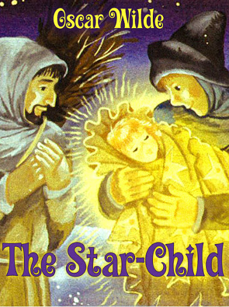

0
стр. з
0
сторінок

завантаження...

Оскар Уайльд
Звездный мальчик и другие легенды
Легенды адаптировали Ольга Ламонова и Илья Франк
Метод чтения Ильи Франка
Сontents
The Star-Child
(Звездный Мальчик)
ONCE upon a time (как-то давным-давно; once upon a time — когда-то, некогда /традиционный зачин сказки/) two poor Woodcutters (два бедных дровосека; wood — дерево, древесина, дрова; to cut — резать, срезать) were making their way home (возвращались домой; to make way — направляться куда-либо; way — путь, дорога) through a great pine-forest (через огромный сосновый лес). It was winter (была зима), and a night of bitter cold (и страшно холодная ночь: "и ночь жестокого холода"; bitter cold — страшный холод, сильный мороз; bitter — горький; сильный, резкий). The snow lay thick upon the ground (снег лежал толстым /слоем/: "толсто" на земле; to lie), and upon the branches of the trees (и на ветвях деревьев): the frost kept snapping the little twigs (мороз с треском ломал маленькие веточки/прутики; to keep — держать; продолжать /что-либо делать/; to snap — хватать; ломать, рвать с треском) on either side of them (со всех сторон: "с каждой их стороны"), as they passed (когда они проходили): and when they came to the Mountain-Torrent (и когда они дошли до Горного Потока; mountain — гора; torrent — стремительный поток) she was hanging motionless in air (/оказалось, что/ он: "она" висит неподвижно в воздухе; motion — движение), for the Ice-King had kissed her (потому что Ледяной Король поцеловал его: "ее"; ice — лед).
So cold was it (было настолько холодно) that even the animals and the birds (что даже звери и птицы) did not know what to make of it (не знали, что об этом думать/в чем дело: "что делать из этого"; to make of smth. — понимать что-либо, разобраться с чем либо).
woodcutter ['wVd"kAtq] mountain ['maVntIn] torrent ['tOrqnt] ice [aIs]
ONCE upon a time two poor Woodcutters were making their way home through a great pine-forest. It was winter, and a night of bitter cold. The snow lay thick upon the ground, and upon the branches of the trees: the frost kept snapping the little twigs on either side of them, as they passed: and when they came to the Mountain-Torrent she was hanging motionless in air, for the Ice-King had kissed her.
So cold was it that even the animals and the birds did not know what to make of it.
'Ugh (брр; ugh — тьфу!; ах! /выражает омерзение, отвращение/)!' snarled the Wolf (рычал/ворчал Волк), as he limped through the brushwood (ковыляя: "когда он ковылял" сквозь подлесок/валежник; to limp — хромать; тащиться, плестись) with his tail between his legs (поджав хвост: "с хвостом между /своими/ лапами"), 'this is perfectly monstrous weather (совершенно ужасная погода; monstrous — чудовищный). Why doesn't the Government look to it (почему за этим не следит Правительство = куда смотрит Правительство)?'
'Weet (чирик-чирик)! weet! weet!' twittered the green Linnets (прощебетали зеленые Коноплянки), 'the old Earth is dead (старая Земля мертва) and they have laid her out (и ее уже убрали и уложили; to lay out — приготовить к погребению, убрать и уложить) in her white shroud (в ее белом саване).'
snarl [snQ:l] through [Tru:] monstrous ['mOnstrqs] weather ['weDq]
'Ugh!' snarled the Wolf, as he limped through the brushwood with his tail between his legs, 'this is perfectly monstrous weather. Why doesn't the Government look to it?'
'Weet! weet! weet!' twittered the green Linnets, 'the old Earth is dead and they have laid her out in her white shroud.'
'The Earth is going to be married (Земля собирается замуж; to marry — жениться, выходить замуж; married — женатый, замужняя), and this is her bridal dress (и это ее подвенечное/свадебное платье; bride — невеста),' whispered the Turtle-doves to each other (шептали Горлицы друг другу; turtledove — дикий голубь, горлица). Their little pink feet (их маленькие розовые лапки) were quite frost-bitten (были совершенно обморожены; to frostbite — отмораживать; frost — мороз; to bite — кусать; frostbitten — обмороженный, побитый морозом), but they felt (но они чувствовали; to feel) that it was their duty (что они должны: "это их долг/обязанность") to take a romantic view of the situation (романтически смотреть на эту ситуацию; view — вид; оценка, суждение).
'Nonsense (чушь; sense — смысл; nonsense — бессмыслица)!' growled the Wolf (рычал Волк). 'I tell you (говорю вам) that it is all the fault of the Government (что во всем этом виновато Правительство: "это все вина Правительства"; fault — недостаток; вина), and if you don't believe me (и если вы мне не верите) I shall eat you (то я вас съем).' The Wolf had a thoroughly practical mind (Волк обладал исключительно практическим складом ума; thoroughly — полностью, вполне, совершенно), and was never at a loss for a good argument (и никогда не испытывал недостатка в хороших доводах/аргументах; loss — потеря, лишение).
married ['mxrId] turtledove ['tq:tldAv] frostbitten ['frOst"bItn] thoroughly ['TArqlI]
'The Earth is going to be married, and this is her bridal dress,' whispered the Turtle-doves to each other. Their little pink feet were quite frost-bitten, but they felt that it was their duty to take a romantic view of the situation.
'Nonsense!' growled the Wolf. 'I tell you that it is all the fault of the Government, and if you don't believe me I shall eat you.' The Wolf had a thoroughly practical mind, and was never at a loss for a good argument.
'Well, for my own part (ну, что касается меня; part — часть; сторона /в споре/),' said the Woodpecker (сказал Дятел; wood — дерево, древесина; to peck — клевать, долбить клювом), who was a born philosopher (который был прирожденным философом), 'I don't care an atomic theory for explanations (мне не нравится атомистическая теория в качестве объяснений; to care — заботиться; любить, питать интерес к чему-либо; atomic — атомный). If a thing is so (что есть: "если вещь/явление такое"), it is so (то и есть: "оно и есть такое"), and at present it is terribly cold (а сейчас ужасно холодно; terrible — страшный, ужасный).'
woodpecker ['wVd"pekq] philosopher [fI'lOsqfq] explanation ["eksplq'neIS(q)n]
'Well, for my own part,' said the Woodpecker, who was a born philosopher, 'I don't care an atomic theory for explanations. If a thing is so, it is so, and at present it is terribly cold.'
Terribly cold it certainly was (безусловно, холодно было ужасно; certainly — определенно). The little Squirrels (маленькие Белочки), who lived inside the tall fir-tree (которые жили в дупле: "внутри" на высокой ели), kept rubbing each other's noses (постоянно терлись: "продолжали тереться" мордочками друг о друга; to rub — тереть; nose — нос; морда, рыло животных) to keep themselves warm (чтобы согреться: "удерживать себя теплыми"), and the Rabbits curled themselves up (и Кролики сворачивались калачиком; to curl — скручивать/ся/, сворачивать/ся/) in their holes (в своих норках; hole — дыра; нора, берлога), and did not venture (и не решались/рисковали) even to look out of doors (даже выглянуть за двери). The only people who seemed to enjoy it (единственные существа, которые, казалось, наслаждались этим = стужей; people — народ, люди) were the great horned Owls (были огромные рогатые Совы; horn — рог; рогатые совы — род сов, обитают во многих частях света, относятся к самым большим совам). Their feathers were quite stiff with rime (их оперение было совершенно застывшим/жестким от инея), but they did not mind (но они не обращали на это внимания; to mind — возражать; обращать внимание, считаться с чем-либо), and they rolled their large yellow eyes (и они вращали своими огромными желтыми глазищами; to roll — катать; вертеть, вращать), and called out to each other (и перекрикивались друг с другом; to call out — закричать; выкрикивать) across the forest (через лес), 'Tu-whit (ух; tu-whit, tu-whit — крики совы)! Tu-whoo! Tu-whit! Tu-whoo! What delightful weather we are having (какая восхитительная погода стоит: "какую восхитительную погоду мы имеем")!'
squirrel ['skwIrql] fir [fq:] venture ['ventSq] owl [aVl] feather ['feDq]
Terribly cold it certainly was. The little Squirrels, who lived inside the tall fir-tree, kept rubbing each other's noses to keep themselves warm, and the Rabbits curled themselves up in their holes, and did not venture even to look out of doors. The only people who seemed to enjoy it were the great horned Owls. Their feathers were quite stiff with rime, but they did not mind, and they rolled their large yellow eyes, and called out to each other across the forest, 'Tu-whit! Tu-whoo! Tu-whit! Tu-whoo! what delightful weather we are having!'
On and on went the two Woodcutters (двое Дровосеков шли все дальше и дальше; to go on — идти дальше, продолжать путь), blowing lustily upon their fingers (сильно дуя на свои пальцы; lust — вожделение; сильное желание; lustily — с вожделением; сильно, крепко), and stamping with their huge iron-shod boots (и притоптывая своими огромными башмаками, подкованными железом; to stamp — штамповать; топать ногами; to shoe /shod/ — обувать; подковывать, подбивать) upon the caked snow (по затвердевшему снегу; to cake — затвердевать). Once they sank into a deep drift (однажды они провалились в глубокий сугроб; to sink — погружаться; drift — нанос; сугроб), and came out (и выбрались: "вышли" из него) as white as millers are (такими белыми, какими бывают мельники), when the stones are grinding (когда жернова мелют /муку/; stone — камень; жернов; to grind — молоть, перемалывать); and once they slipped on the hard smooth ice (и раз они поскользнулись на твердом гладком льду; to slip — скользить) where the marsh-water was frozen (/в том месте/, где замерзла вода из болота; to freeze — замерзать, покрываться льдом), and their faggots fell out of their bundles (и /их/ хворост вывалился из их вязанок; to fall — падать; bundle — узел; связка, вязанка), and they had to pick them up (и им пришлось подбирать его) and bind them together again (и снова связывать его); and once they thought (и один раз им показалось; to think — думать; полагать) that they had lost their way (что они потеряли /свою/ дорогу = заблудились; to lose — терять), and a great terror seized on them (и их охватил сильный ужас; great — большой; сильный, глубокий — о чувствах), for they knew (потому как они знали; to know) that the Snow is cruel to those (что Снег безжалостен к тем; cruel — жестокий, безжалостный) who sleep in her arms (кто спит в его: "ее" объятиях; arm — рука /от плеча до кисти/).
lustily ['lAstIlI] iron ['aIqn] shod [SOd] grind [graInd] faggot ['fxgqt] bind [baInd] seize [si:z] cruel ['kru:ql]
On and on went the two Woodcutters, blowing lustily upon their fingers, and stamping with their huge iron-shod boots upon the caked snow. Once they sank into a deep drift, and came out as white as millers are, when the stones are grinding; and once they slipped on the hard smooth ice where the marsh-water was frozen, and their faggots fell out of their bundles, and they had to pick them up and bind them together again; and once they thought that they had lost their way, and a great terror seized on them, for they knew that the Snow is cruel to those who sleep in her arms.
But they put their trust in the good Saint Martin (но они доверились доброму Святому Мартину: "поместили свое доверие в…"; trust — доверие, вера), who watches over all travellers (который оберегает всех путешествующих; to watch over smb. — наблюдать за кем-либо, охранять кого-либо), and retraced their steps (и вернулись той же дорогой; to retrace — возвращаться /по пройденному пути/; step — шаг), and went warily (и шли осторожно/осмотрительно), and at last they reached the outskirts of the forest (и наконец они добрались до окраины = опушки леса; to reach — протягивать; достигать места назначения), and saw (и увидели; to see), far down in the valley beneath them (далеко внизу в долине /под ними/), the lights of the village (огни той самой деревни) in which they dwelt (в которой они проживали; to dwell — обитать, жить).
So overjoyed were they (они были настолько довольны; to overjoy — очень обрадовать, привести в восторг; over — поверх, сверху; joy — радость) at their deliverance (своим спасением /из леса/; deliverance — освобождение, избавление; to deliver — освобождать, избавлять) that they laughed aloud (что они громко рассмеялись), and the Earth seemed to them like a flower of silver (и Земля показалась им похожей на цветок из серебра), and the Moon like a flower of gold (а Луна — похожей на цветок из золота).
warily ['we(q)rIlI] outskirt ['aVtskq:t] valley ['vxlI] beneath [bI'ni:T] overjoyed ["qVvq'dZOId] deliverance [dI'lIv(q)r(q)ns]
But they put their trust in the good Saint Martin, who watches over all travellers, and retraced their steps, and went warily, and at last they reached the outskirts of the forest, and saw, far down in the valley beneath them, the lights of the village in which they dwelt.
So overjoyed were they at their deliverance that they laughed aloud, and the Earth seemed to them like a flower of silver, and the Moon like a flower of gold.
Yet, after that they had laughed (однако после того, как они насмеялись) they became sad (они опечалились; to become — становиться, делаться; sad — печальный), for they remembered their poverty (потому что они вспомнили о своей бедности), and one of them said to the other (и один из них сказал другому), 'Why did we make merry (чего это мы веселились; merry — веселый, радостный), seeing that life is for the rich (ведь жизнь /хороша/ для богатых; seeing — принимая во внимание, ввиду того, что: "видя"), and not for such as we are (а не для таких, как мы)? Better that we had died of cold in the forest (лучше бы мы умерли от холода в лесу), or that some wild beast (или чтобы какой-нибудь дикий зверь) had fallen upon us (напал бы на нас; to fall — падать; to fall upon smb. — нападать, набрасываться на кого-либо) and slain us (и убил бы нас; to slay — убивать, умерщвлять).'
'Truly (и то правда: "истинно"; true — истинный),' answered his companion (ответил его товарищ), 'much is given to some (некоторым дано многое), and little is given to others (остальным дано мало). Injustice has parcelled out the world (несправедливость поделила мир на части; just — справедливый; injust — несправедливый; to parcel — делить на части, дробить), nor is there equal division of aught (и ничего не было поделено поровну; nor — и... не, также... не; division — деление, разделение; to divide — разделять; aught — нечто, кое-что; что-нибудь) save of sorrow (за исключением печалей; save — кроме, за исключением).'
laugh [lQ:f] poverty ['pOvqtI] injustice [In'dZAstIs] parcel ['pQ:s(q)l] equal ['i:kwql] aught [O:t]
Yet, after that they had laughed they became sad, for they remembered their poverty, and one of them said to the other, 'Why did we make merry, seeing that life is for the rich, and not for such as we are? Better that we had died of cold in the forest, or that some wild beast had fallen upon us and slain us.'
'Truly,' answered his companion, 'much is given to some, and little is given to others. Injustice has parcelled out the world, nor is there equal division of aught save of sorrow.'
But as they were bewailing (но, пока они сокрушались; to bewail — сокрушаться, сетовать) their misery to each other (/о/ своих страданиях /друг другу/) this strange thing happened (произошла вот какая странная вещь). There fell from heaven (с неба упала; to fall) a very bright and beautiful star (очень яркая и красивая звезда). It slipped down the side of the sky (она скользнула вниз по краю неба), passing by the other stars in its course (пролетая мимо других звезд на своем пути; course — бег; курс, направление), and, as they watched it wondering (и пока они наблюдали за ней, удивляясь; to wonder — интересоваться, изумляться), it seemed to them (им показалось, что она) to sink behind a clump of willow-trees (опустилась за ивовой рощей: "зарослями ивовых деревьев"; clump — слипшаяся масса; глыба, ком; заросли /деревьев, кустарников/) that stood hard by a little sheepfold (что находилась совсем рядом с небольшой овчарней; to stand — стоять; находиться, быть расположенным; hard — жесткий, твердый; сильно; близко, рядом, вплотную) no more than a stone's-throw away (буквально в двух шагах: "не больше, чем на расстоянии, на которое можно бросить камень"; stone — камень; throw — бросание, бросок).
'Why! there is a crock of gold (ба, это ж горшок с золотом; crock — глиняный кувшин, горшок) for whoever finds it (для того, кто найдет его; whoever — кто бы ни, который бы ни; любой),' they cried (воскликнули они), and they set to and ran (и они бросились бежать; to set to — энергично браться за что-либо, приступать к чему-либо), so eager were they for the gold (так им хотелось золота; eager — страстно стремящийся, жаждущий).
bewail [bI'weIl] misery ['mIz(q)rI] stone's-throw ['stqVnzTrqV]
But as they were bewailing their misery to each other this strange thing happened. There fell from heaven a very bright and beautiful star. It slipped down the side of the sky, passing by the other stars in its course, and, as they watched it wondering, it seemed to them to sink behind a clump of willow-trees that stood hard by a little sheepfold no more than a stone's-throw away.
'Why! there is a crock of gold for whoever finds it,' they cried, and they set to and ran, so eager were they for the gold.
And one of them ran faster than his mate (один из них бежал быстрее своего товарища/напарника), and outstripped him (и обогнал его), and forced his way through the willows (и пробился = с трудом пробежал сквозь ивовую рощу: "сквозь ивы"; to force — заставлять; применять силу, брать силой; force — сила), and came out on the other side (и выбежал с другой стороны рощи), and lo (и, смотри-ка; lo — чу! вот!, слушай!, смотри!)! there was indeed a thing of gold lying on the white snow (там, действительно, на белом снегу лежал некий золотой предмет). So he hastened towards it (тогда он поспешил к нему), and stooping down (и, склонившись; to stoop — сутулиться; наклоняться, нагибаться) placed his hands upon it (положил на него руки; to place — ставить, помещать), and it was a cloak of golden tissue (и это оказался плащ из золотистой парчи), curiously wrought with stars (причудливо расшитый звездами; wrought — /арх. книжн./ выделанный; с отделкой, вышивкой /уст.: прич. пр. вр. от to work/), and wrapped in many folds (и сложенный во много раз: "и завернутый во множество складок"; to wrap — укутывать, обертывать).
outstrip [aVt'strIp] force [fO:s] hasten ['heIs(q)n] tissue ['tISu:, 'tIsju:] wrought [rO:t] wrapped [rxpt]
And one of them ran faster than his mate, and outstripped him, and forced his way through the willows, and came out on the other side, and lo! there was indeed a thing of gold lying on the white snow. So he hastened towards it, and stooping down placed his hands upon it, and it was a cloak of golden tissue, curiously wrought with stars, and wrapped in many folds.
And he cried out to his comrade (и он крикнул своему товарищу) that he had found the treasure (что он отыскал/нашел сокровище; to find) that had fallen from the sky (что упало с небес), and when his comrade had come up (и, когда его товарищ подошел), they sat them down in the snow (они уселись на снегу; to sit down — садиться), and loosened the folds of the cloak (и развернули складки плаща; to loosen — ослаблять, развязывать; loose — свободный; незатянутый; неприкрепленный) that they might divide the pieces of gold (для того, что бы они могли разделить золотые монеты; piece — кусок; монета). But, alas (но, увы)! no gold was in it (в нем /плаще/ не было ни золота), nor silver (ни серебра), nor, indeed, treasure of any kind (ни на самом деле какого-либо сокровища), but only a little child who was asleep (а был только маленький спящий ребенок: "ребенок, который был спящим = спал").
comrade ['kOmr(e)Id] treasure ['treZq] piece [pi:s]
And he cried out to his comrade that he had found the treasure that had fallen from the sky, and when his comrade had come up, they sat them down in the snow, and loosened the folds of the cloak that they might divide the pieces of gold. But, alas! no gold was in it, nor silver, nor, indeed, treasure of any kind, but only a little child who was asleep.
And one of them said to the other (и один из них сказал другому): 'This is a bitter ending (какое горькое/мучительное окончание) to our hope (нашей надежды), nor have we any good fortune (и нет нам удачи/счастья), for what doth a child profit to a man (ибо чем может ребенок быть полезен /взрослому/ человеку/мужчине; doth = does; to profit — приносить пользу, быть полезным)? Let us leave it here (давай оставим его здесь), and go our way (и пойдем своей дорогой), seeing that we are poor men (поскольку мы бедные люди), and have children of our own (и у нас есть собственные дети) whose bread we may not give to another (чей хлеб мы не должны отдавать другому /ребенку/).'
But his companion answered him (но его товарищ ответил ему): 'Nay, but it were an evil thing (ну уж нет, это было бы злым/очень плохим делом) to leave the child to perish here (оставить ребенка погибать здесь) in the snow (в снегу), and though I am as poor as thou art (и, хотя я так же беден, как и ты; thou art = you are; thou — /уст./ ты /thee — тебя, thy — твой, this is thine — это твое/), and have many mouths to feed (и у меня много ртов, которых я должен кормить), and but little in the pot (а в котелке пусто: "но немного в котелке"), yet will I bring it home with me (все же я возьму: "принесу" его с собой домой), and my wife shall have care of it (и моя жена позаботится о нем).'
fortune ['fO:tS(q)n] bread [bred] perish ['perIS]
And one of them said to the other: 'This is a bitter ending to our hope, nor have we any good fortune, for what doth a child profit to a man? Let us leave it here, and go our way, seeing that we are poor men, and have children of our own whose bread we may not give to another.'
But his companion answered him: 'Nay, but it were an evil thing to leave the child to perish here in the snow, and though I am as poor as thou art, and have many mouths to feed, and but little in the pot, yet will I bring it home with me, and my wife shall have care of it.'
So very tenderly he took up the child (и вот: "так /что/" он очень нежно поднял ребенка /на руки/), and wrapped the cloak around it (и завернул его в плащ: "и обернул плащ вокруг него") to shield it from the harsh cold (чтобы защитить его от жестокого мороза; shield — щит; to shield — заслонять, защищать; покрывать, укрывать; harsh — грубый /на ощупь/; суровый, резкий /о климате/), and made his way down the hill to the village (и пошел вниз /с холма/ в деревню), his comrade marvelling much (/при том, что/ его товарищ весьма: "много" дивился; to marvel — дивиться, изумляться) at his foolishness (его глупости/безрассудству; foolish — глупый; безрассудный) and softness of heart (и доброте /его/ сердца; soft — мягкий; добрый, кроткий).
And when they came to the village (и, когда они пришли в деревню), his comrade said to him (его товарищ сказал ему), 'Thou hast the child (у тебя ребенок; thou hast = you have), therefore give me the cloak (поэтому отдай мне плащ), for it is meet that we should share (так как нам подобает делиться; meet — /арх./ подобающий, подходящий; to share — делить, распределять).'
But he answered him (но тот ответил ему): 'Nay, for the cloak is neither mine nor thine (нет, потому что этот плащ — не мой и не твой; thine = yours), but the child's only (а только ребенка),' and he bade him Godspeed (и он пожелал ему удачи; Godspeed — пожелание удачи, успеха; to bid smb. Godspeed — говорить кому-либо "Бог в помощь"; to bid — предлагать; приказывать; приглашать; выражать ритуальные пожелания при встрече, прощании и т. п.), and went to his own house and knocked (пошел к собственному дому и постучался).
tenderly ['tendqlI] child [tSaIld] marvel ['mQ:v(q)l] foolishness ['fu:lISnIs] god-speed ["gOd'spi:d]
So very tenderly he took up the child, and wrapped the cloak around it to shield it from the harsh cold, and made his way down the hill to the village, his comrade marvelling much at his foolishness and softness of heart.
And when they came to the village, his comrade said to him, 'Thou hast the child, therefore give me the cloak, for it is meet that we should share.'
But he answered him: 'Nay, for the cloak is neither mine nor thine, but the child's only,' and he bade him Godspeed, and went to his own house and knocked.
And when his wife opened the door (и когда его жена открыла дверь) and saw that her husband had returned safe to her (и увидела, что ее муж благополучно вернулся к ней; safe — безопасный, надежный; невредимый), she put her arms round his neck (она обвила его шею руками: "положила свои руки вокруг его шеи") and kissed him (и поцеловала его), and took from his back the bundle of faggots (и сняла с его спины вязанку хвороста), and brushed the snow off his boots (и смахнула снег с его башмаков; to brush — чистить щеткой; удалять, счищать что-либо; brush — щетка), and bade him come in (и пригласила его войти /в дом/; to bid — приглашать; выражать ритуальные пожелания при встрече, прощании и т. п.).
But he said to her (но он сказал ей), 'I have found something in the forest (я кое-что нашел в лесу; to find), and I have brought it to thee (и я принес это тебе; to bring; to thee = to you) to have care of it (чтобы ты позаботилась об этом),' and he stirred not from the threshold (и он остался стоять: "не шелохнулся" у порога: "с порога"; to stir — шевелить/ся/, двигать/ся/).
return [rI'tq:n] brought [brO:t] stir [stq:] threshold ['TreS(h)qVld]
And when his wife opened the door and saw that her husband had returned safe to her, she put her arms round his neck and kissed him, and took from his back the bundle of faggots, and brushed the snow off his boots, and bade him come in.
But he said to her, 'I have found something in the forest, and I have brought it to thee to have care of it,' and he stirred not from the threshold.
'What is it (что это)?' she cried (воскликнула она). 'Show it to me (покажи мне), for the house is bare (потому как дом наш пустой; bare — голый; пустой), and we have need of many things (и мы нуждаемся во множестве вещей; need — надобность, нужда).' And he drew the cloak back (и он откинул /край/ плаща; to draw back — отодвигать, отводить назад; to draw — тащить), and showed her the sleeping child (и показал ей спящего ребенка).
'Alack, goodman (ах: "увы", муж мой; goodman — арх. глава семьи, /шотл. арх./ муж)!' she murmured (прошептала она; to murmur — шептать; бормотать; to murmur against smth. — ворчать, роптать против чего-либо), 'have we not children of our own (разве у нас нет наших собственных детей), that thou must needs bring a changeling (что тебе непременно надо было принести подкидыша; must needs — /разг./ по необходимости, обязательно, changeling — ребенок, подкинутый эльфами взамен похищенного, подмененное дитя; to change — менять) to sit by the hearth (чтобы /он/ сидел у очага)? And who knows (и кто знает) if it will not bring us bad fortune (не принесет ли он нам несчастья; bad fortune — неудача, невезение: "плохая удача")? And how shall we tend it (и как же нам о нем заботиться; to tend — ухаживать, присматривать)?' And she was wroth against him (и она разгневалась на него /мужа/; wroth — разгневанный, гневный).
changeling ['tSeIndZlIN] hearth [hQ:T] wroth [rquθ]
'What is it?' she cried. 'Show it to me, for the house is bare, and we have need of many things.' And he drew the cloak back, and showed her the sleeping child.
'Alack, goodman!' she murmured, 'have we not children of our own, that thou must needs bring a changeling to sit by the hearth? And who knows if it will not bring us bad fortune? And how shall we tend it?' And she was wroth against him.
'Nay, but it is a Star-Child (нет, это же Звездный Мальчик),' he answered (ответил он); and he told her (и он рассказал ей; to tell) the strange manner of the finding of it (о том, каким необычном способом он был найден: "странный способ нахождения его").
But she would not be appeased (но она не хотела быть успокоенной = никак не могла успокоиться; to appease — успокаивать, умиротворять), but mocked at him (и насмехалась над ним), and spoke angrily, and cried (и говорила сердито, и кричала; anger — гнев, раздражение): 'Our children lack bread (нашим детям не хватает хлеба; lack — недостаток, нужда; отсутствие; to lack — не хватать, недоставать), and shall we feed the child of another (и мы еще должны кормить чужого ребенка: "ребенка другого /человека/")? Who is there who careth for us (кто же позаботится о нас)? And who giveth us food (кто накормит нас: "даст нам пищу")?'
'Nay, but God careth for the sparrows even (ну, Бог заботится даже о воробьях; careth /арх./ = cares), and feedeth them (и дает им пищу),' he answered (ответил он).
'Do not the sparrows die of hunger (а разве воробьи не умирают от голода) in the winter (зимой)?' she asked (спросила она). 'And is it not winter now (а сейчас разве не зима)?'
appease [q'pi:z] sparrow ['spxrqV] hunger ['hANgq]
'Nay, but it is a Star-Child,' he answered; and he told her the strange manner of the finding of it.
But she would not be appeased, but mocked at him, and spoke angrily, and cried: 'Our children lack bread, and shall we feed the child of another? Who is there who careth for us? And who giveth us food?'
'Nay, but God careth for the sparrows even, and feedeth them,' he answered.
'Do not the sparrows die of hunger in the winter?' she asked. 'And is it not winter now?'
And the man answered nothing (но муж ничего не ответил), but stirred not from the threshold (но не двинулся от порога).
And a bitter wind (и жгучий ветер; bitter — горький; мучительный, резкий) from the forest (из леса) came in through the open door (ворвался сквозь открытую дверь), and made her tremble (и заставил ее дрожать; to tremble — дрожать, трястись), and she shivered (и она затряслась /от холода/; to shiver — дрожать, вздрагивать), and said to him (и сказала ему): 'Wilt thou not close the door (не закроешь ли ты дверь; wilt thou = will you)? There cometh a bitter wind into the house (в дом идет = дует резкий ветер), and I am cold (и я замерзла: "я холодная").'
'Into a house (в том дом) where a heart is hard (где жестокое сердце; hard — твердый, жесткий; безжалостный, жестокий) cometh there not always a bitter wind (не задувает ли всегда студеный ветер)?' he asked (спросил он). And the woman answered him nothing (а жена не ответила ему ничего), but crept closer to the fire (но пододвинулась поближе к огню = к очагу; to creep — ползти, красться).
tremble ['tremb(q)l] shiver ['SIvq] heart [hQ:t]
And the man answered nothing, but stirred not from the threshold.
And a bitter wind from the forest came in through the open door, and made her tremble, and she shivered, and said to him: 'Wilt thou not close the door? There cometh a bitter wind into the house, and I am cold.'
'Into a house where a heart is hard cometh there not always a bitter wind?' he asked. And the woman answered him nothing, but crept closer to the fire.
And after a time (спустя некоторое время) she turned round and looked at him (она обернулась и взглянула на него), and her eyes were full of tears (и глаза ее были полны слез). And he came in swiftly (тогда он поспешно вошел в /дом/), and placed the child in her arms (и положил ребенка ей на руки; to place — помещать), and she kissed it (и она поцеловала его /ребенка/), and laid it in a little bed (и положила его в маленькую кроватку; to lay — класть, положить) where the youngest of their own children was lying (где лежал самый младший из их собственных детей; to lie — лежать). And on the morrow (и на следующий день; morrow — /уст./ утро; /книжн./ завтра) the Woodcutter took the curious cloak of gold (Дровосек взял изящный плащ из золотой /парчи/: "из золота"; curious — любопытный; изящный, изысканный) and placed it in a great chest (и положил его в большой сундук), and a chain of amber (а цепочку = бусы из янтаря) that was round the child's neck (что были на шее у ребенка: "вокруг шеи ребенка") his wife took (взяла его жена) and set it in the chest also (и также положила их в сундук; to set — устанавливать, ставить, помещать, класть).
tear [tIq] morrow ['mPrqV] curious ['kjV(q)rIqs] amber ['xmbq]
And after a time she turned round and looked at him, and her eyes were full of tears. And he came in swiftly, and placed the child in her arms, and she kissed it, and laid it in a little bed where the youngest of their own children was lying. And on the morrow the Woodcutter took the curious cloak of gold and placed it in a great chest, and a chain of amber that was round the child's neck his wife took and set it in the chest also.
So the Star-Child was brought up (таким образом Звездный Мальчик рос: "был выращиваемым"; to bring up — воспитывать, растить) with the children of the Woodcutter (с детьми Дровосека), and sat at the same board with them (и сидел с ними за одним столом; board — доска; стол /обеденный/), and was their playmate (и был товарищем в их играх; playmate — товарищ детских игр). And every year (и с каждым годом) he became more beautiful to look at (на него становилось все приятнее смотреть = он становился все красивее; to become — делаться, становиться), so that all those who dwelt in the village (так что все те, кто проживал в деревне; to dwell) were filled with wonder (изумлялись/удивлялись: "были переполнены удивлением"; to fill — наполнять, переполнять), for, while they were swarthy and black-haired (оттого, что в то время как все они были смуглы и черноволосы), he was white and delicate as sawn ivory (он был бел и нежен, как распиленная слоновая кость; delicate — утонченный; хрупкий, нежный; to saw — пилить, распиливать), and his curls were like (и его локоны были похожи; curl — локон, завиток) the rings of the daffodil (на завитки /бледно-желтого/ нарцисса; ring — кольцо). His lips, also, were like (его губы также = а его губы были похожи) the petals of a red flower (на лепестки красного цветка), and his eyes were like violets (и его глаза были похожи на фиалки) by a river of pure water (/что растут/ у реки с чистой водой), and his body like the narcissus of a field (и его тело было похоже /на стебель/ нарцисса /растущего/ в поле) where the mower comes not (куда не приходит косец; to mow — косить, жать; mower — косец).
swarthy ['swO:DI] delicate ['delIkIt] ivory ['aIv(q)rI] daffodil ['dxfqdIl] narcissus [nQ:'sIsqs] mower ['mqVq]
So the Star-Child was brought up with the children of the Woodcutter, and sat at the same board with them, and was their playmate. And every year he became more beautiful to look at, so that all those who dwelt in the village were filled with wonder, for, while they were swarthy and black-haired, he was white and delicate as sawn ivory, and his curls were like the rings of the daffodil. His lips, also, were like the petals of a red flower, and his eyes were like violets by a river of pure water, and his body like the narcissus of a field where the mower comes not.
Yet did his beauty work him evil (и все же его красота сослужила ему плохую службу; evil — зло, порок). For he grew proud, and cruel, and selfish (потому как он вырос гордым, и жестоким, и эгоистичным). The children of the Woodcutter (детей Дровосека), and the other children of the village (и других детей из деревни), he despised (он презирал), saying that they were of mean parentage (говоря, что они были низкого происхождения; mean — посредственный; низкого происхождения; parentage — отцовство, материнство, происхождение; parent — родитель, родительница), while he was noble (в то время как он был благородный = благородного происхождения), being sprang from a Star (так как он был отпрыском Звезды; to spring — прорастать; всходить; давать побеги; происходить, быть отпрыском), and he made himself master over them (и он сделал себя хозяином/господином над ними; master — хозяин, владелец, господин), and called them his servants (и называл их своими слугами).
beauty ['bju:tI] evil ['i:v(q)l] despise [dIs'paIz] parentage ['pe(q)rqntIdZ] master ['mQ:stq] servant ['sq:v(q)nt]
Yet did his beauty work him evil. For he grew proud, and cruel, and selfish. The children of the Woodcutter, and the other children of the village, he despised, saying that they were of mean parentage, while he was noble, being sprang from a Star, and he made himself master over them, and called them his servants.
No pity had he for the poor (у него не было жалости к бедным; pity — жалость, сострадание), or for those (или к тем) who were blind (кто был слепым) or maimed (или калечным; to maim — калечить, увечить) or in any way afflicted (или был каким-либо другим образом увечен: "поражен болезнью"; to afflict — огорчать; поражать /о болезни/), but would cast stones at them (но обычно он кидал в них камнями; to cast — бросать, швырять) and drive them forth on to the highway (и выгонял их на большую дорогу; to drive — гнать), and bid them (и приказывал им; to bid — приказывать; просить) beg their bread elsewhere (просить на хлеб где-нибудь в другом месте; to beg — просить; побираться, нищенствовать), so that none (поэтому никто) save the outlaws (за исключением изгоев/отверженных; outlaw — лицо вне закона, изгнанник; law — закон) came twice to that village (повторно не приходил в ту деревню; twice — дважды) to ask for alms (чтобы просить милостыню; to ask — спрашивать; просить; alms — милостыня, подаяние). Indeed, he was as one enamoured of beauty (в самом деле, он был как тот, кто приходит в восторг от /всего/ прекрасного; to enamour — возбуждать любовь; приводить в восторг, to be enamoured of smth. — увлекаться чем-либо), and would mock (и всегда/обычно насмехался) at the weakly (над слабыми/болезненными; weak — слабый /физически/, хилый) and ill-favoured (и некрасивыми/уродливыми), and make jest of them (и издевался над ними; jest — шутка; насмешка, высмеивание); and himself he loved (и любил он /только/ себя), and in summer, when the winds were still (и летом, когда ветра не было: "когда ветры были неподвижны"; still — неподвижный, спокойный), he would lie by the well (он лежал обычно у колодца) in the priest's orchard (в саду священника) and look down at the marvel of his own face (и смотрел на удивительную /красоту/ своего собственного лица; marvel — чудо, диво, нечто необыкновенное), and laugh for the pleasure (и смеялся от удовольствия) he had in his fairness (которое он получал от своей красоты; fair — арх. красивый, прекрасный).
poor [pVq] blind [blaInd] maim [meIm] afflict [q'flIkt] elsewhere [(')els'weq] outlaw ['aVtlO:] twice [twaIs] enamour [I'nxmq] jest [dZest] orchard ['O:tSqd] pleasure ['pleZq]
No pity had he for the poor, or for those who were blind or maimed or in any way afflicted, but would cast stones at them and drive them forth on to the highway, and bid them beg their bread elsewhere, so that none save the outlaws came twice to that village to ask for alms. Indeed, he was as one enamoured of beauty, and would mock at the weakly and ill-favoured, and make jest of them; and himself he loved, and in summer, when the winds were still, he would lie by the well in the priest's orchard and look down at the marvel of his own face, and laugh for the pleasure he had in his fairness.
Often did the Woodcutter and his wife chide him (часто Дровосек и его жена бранили/журили мальчика: "его"), and say: 'We did not deal with thee (мы же не обращались с тобою; to deal — распределять; обходиться, обращаться, вести себя, with thee = with you) as thou dealest with those (как ты обращаешься с теми; thou dealest = you deal) who are left desolate (кто оставлен всеми: "кто оставлены одинокими"; to leave; desolate — заброшенный; покинутый, одинокий), and have none to succour them (и у которых нет никого, кто мог бы прийти им на помощь; to succour — оказывать помощь, приходить на помощь в трудную минуту). Wherefore art thou so cruel (почему ты настолько жесток; art thou = are you) to all who need pity (ко всем, кто нуждается в жалости/сострадании)?'
desolate ['desqlqt, 'dezqlqt] succour ['sAkq] wherefore ['weqfO:]
Often did the Woodcutter and his wife chide him, and say: 'We did not deal with thee as thou dealest with those who are left desolate, and have none to succour them. Wherefore art thou so cruel to all who need pity?'
Often did the old priest send for him (старый священник часто приглашал его к себе; to send /for/ — посылать /за кем-либо/; вызывать, приглашать кого-либо), and seek to teach him the love (и пытался научить его любви; to seek — искать, to seek to do smth. — пытаться, стараться что-либо сделать; to seek — искать, разыскивать; добиваться, стремиться) of living things (к живым существам), saying to him: 'The fly is thy brother (муха — твоя сестра: "брат"; thy = your). Do it no harm (не причиняй ей вреда; harm — вред, ущерб). The wild birds that roam through the forest (дикие птицы, что порхают по лесу; to roam — странствовать, бродить) have their freedom (свободны: "обладают своей свободой"). Snare them not (не лови их в силки; to snare — поймать в ловушку, устроить западню) for thy pleasure (ради своего удовольствия). God made the blind-worm (Бог создал слепозмейку; blind — слепой; worm — червь) and the mole (и крота), and each has its place (и у каждого из них свое место). Who art thou (кто ты такой; art thou = are you) to bring pain into God's world (чтобы нести боль в Божий мир)? Even the cattle of the field (даже скотина на полях; cattle — крупный рогатый скот; коровы и быки) praise Him (прославляет Его)."
priest [pri:st] pain [peIn] praise [preIz]
Often did the old priest send for him, and seek to teach him the love of living things, saying to him: 'The fly is thy brother. Do it no harm. The wild birds that roam through the forest have their freedom. Snare them not for thy pleasure. God made the blind-worm and the mole, and each has its place. Who art thou to bring pain into God's world? Even the cattle of the field praise Him."
But the Star-Child heeded not their words (но Звездный Мальчик не обращал внимания на их слова; to heed smth. — обращать внимание на что-либо, учитывать что-либо), but would frown and flout (но хмурился и насмехался/выражал презрение; to flout smth. — относиться к чему-либо с пренебрежением, демонстративно игнорировать что-либо), and go back to his companions (и возвращался к своим товарищам), and lead them (и командовал: "руководил" ими). And his companions followed him (и его товарищи следовали за ним), for he was fair (потому что он был прекрасен), and fleet of foot (и быстроног; fleet — быстрый), and could dance (и мог танцевать), and pipe (играть на дудке), and make music (и музицировать/сочинять музыку). And wherever the Star-Child led them (и куда бы ни вел их Звездный Мальчик) they followed (они следовали за ним), and whatever the Star-Child bade them do (и чтобы ни приказывал им сделать Звездный Мальчик; to bid), that did they (они это делали). And when he pierced with a sharp reed (и когда он протыкал острой тростинкой; to pierce — пронзать, протыкать) the dim eyes of the mole (тусклые глаза крота), they laughed (они смеялись), and when he cast stones (и когда он швырял камни) at the leper (в прокаженного) they laughed also (они тоже смеялись). And in all things he ruled them (и во всех поступках он руководил ими; to rule — управлять, руководить), and they became hard of heart (и они стали такими же жестокосердыми) even as he was (как он: "точно как он был"; even — даже; точно, именно).
heed [hi:d] frown [fraVn] flout [flaVt] pierce [pIqs] leper ['lepq]
But the Star-Child heeded not their words, but would frown and flout, and go back to his companions, and lead them. And his companions followed him, for he was fair, and fleet of foot, and could dance, and pipe, and make music. And wherever the Star-Child led them they followed, and whatever the Star-Child bade them do, that did they. And when he pierced with a sharp reed the dim eyes of the mole, they laughed, and when he cast stones at the leper they laughed also. And in all things he ruled them, and they became hard of heart even as he was.
Now there passed one day through the village (однажды проходила по той деревне) a poor beggar-woman (бедная нищенка/попрошайка). Her garments were torn and ragged (ее одежда была рваной, одни лохмотья: "ее одеяния были разорванными и поношенными"; to tear — разрывать, рвать; ragged — неровный; одетый в лохмотья, оборванный; rag — лоскут, тряпка), and her feet were bleeding (и ноги ее были все в крови; to bleed — кровоточить, истекать кровью; blood — кровь) from the rough road (из-за неровной дороги; rough — неровный; грубый) on which she had travelled (по которой она долго шла: "путешествовала"), and she was in very evil plight (и она была очень измучена: "в очень плохом состоянии/положении"; evil — злой; /разг./ очень плохой, отвратительный; plight — состояние, положение /обыкн. плохое, затруднительное/). And being weary (будучи утомленной; weary — усталый, утомленный) she sat her down under a chestnut-tree to rest (она присела под каштановым деревом, чтобы отдохнуть).
beggar ['begq] garment ['gQ:mqnt] rough [rAf] plight [plaIt]
Now there passed one day through the village a poor beggar-woman. Her garments were torn and ragged, and her feet were bleeding from the rough road on which she had travelled, and she was in very evil plight. And being weary she sat her down under a chestnut-tree to rest.
But when the Star-Child saw her (но когда Звездный Мальчик увидел ее), he said to his companions (он сказал своим сотоварищам), 'See (смотрите)! There sitteth a foul beggar-woman (вон грязная попрошайка сидит) under that fair and green-leaved tree (под тем красивым зеленым деревом: "деревом с зеленой листвой"; green — зеленый; leaf — лист; leaved — имеющий форму листа; покрытый листьями, в листве). Come, let us drive her hence (пойдем, прогоним-ка ее отсюда прочь; hence — с этих пор; /уст./ отсюда), for she is ugly and ill-favoured (ведь она уродлива и отвратительна).'
So he came near (и вот он подошел ближе) and threw stones at her (и бросал в нее камни; to throw), and mocked her (и насмехался над ней), and she looked at him (а она смотрела на него) with terror in her eyes (с страхом/ужасом в глазах), nor did she move her gaze from him (и она не отводила от него своего пристального взгляда).
ugly ['AglI] ill-favoured ["Il'feIvqd] terror ['terq]
But when the Star-Child saw her, he said to his companions, 'See! There sitteth a foul beggar-woman under that fair and green-leaved tree. Come, let us drive her hence, for she is ugly and ill-favoured.'
So he came near and threw stones at her, and mocked her, and she looked at him with terror in her eyes, nor did she move her gaze from him.
And when the Woodcutter, who was cleaving logs in a haggard hard by (и когда дровосек, который колол дрова в ограде неподалеку; to cleave — раскалывать; haggard — огороженное место возле сельского дома, куда складывают урожай; hard by — близко, рядом), saw what the Star-Child was doing (увидел, что делал Звездный Мальчик), he ran up (он подбежал; to run — бежать) and rebuked him (и стал отчитывать его; to rebuke — упрекать; делать выговор), and said to him: 'Surely thou art hard of heart (вот уж верно, что ты жесток сердцем; thou art = you are) and knowest not mercy (и не знаешь сострадания/милосердия), for what evil (что дурного: "какое зло") has this poor woman done to thee (сделала тебе эта бедная женщина) that thou shouldst treat her in this wise (что ты обращаешься с ней таким образом; wise — образ, способ, манера)?'
And the Star-Child grew red with anger (и Звездный Ребенок покраснел: "стал красным" от гнева; to grow — расти; становиться, делаться), and stamped his foot upon the ground (и топнул ногой о землю), and said, 'Who art thou to question me (кто ты такой, чтобы задавать мне вопросы о том) what I do (что я делаю)? I am no son of thine (я не твой сын; thine = yours) to do thy bidding (чтобы исполнять твои приказания; bidding — приказание, распоряжение; to bid — приказывать; thy = your).'
rebuke [rI'bju:k] mercy ['mq:sI] ground [graVnd]
And when the Woodcutter, who was cleaving logs in a haggard hard by, saw what the Star-Child was doing, he ran up and rebuked him, and said to him: 'Surely thou art hard of heart and knowest not mercy, for what evil has this poor woman done to thee that thou shouldst treat her in this wise?'
And the Star-Child grew red with anger, and stamped his foot upon the ground, and said, 'Who art thou to question me what I do? I am no son of thine to do thy bidding.'
'Thou speakest truly (верно ты говоришь),' answered the Wood-cutter (ответил Дровосек), 'yet did I show thee pity (и все же я тебя пожалел: "проявил к тебе сострадание"; to show — показывать; проявлять, обнаруживать) when I found thee in the forest (когда я нашел тебя в лесу; to find).'
And when the woman heard these words (и когда та женщина услышала эти слова; to hear) she gave a loud cry (она издала громкий крик; to give — давать; издать /звук, крик/), and fell into a swoon (и упала в обморок; to fall). And the Woodcutter carried her (и Дровосек отнес ее) to his own house (в свой /собственный/ дом), and his wife had care of her (и его жена позаботилась о ней/ухаживала за ней), and when she rose up from the swoon (и когда она пришла в себя после обморока; to rise — подниматься) into which she had fallen (в который она впала до этого), they set meat and drink before her (они поставили перед ней еду и питье; meat — мясо; пища; drink — питье, напиток), and bade her have comfort (и попросили ее устраиваться поудобнее: "иметь удобство"; to bid — предлагать; просить; приказывать).
pity ['pItI] swoon [swu:n] fallen ['fO:lqn]
'Thou speakest truly,' answered the Wood-cutter, 'yet did I show thee pity when I found thee in the forest.'
And when the woman heard these words she gave a loud cry, and fell into a swoon. And the Woodcutter carried her to his own house, and his wife had care of her, and when she rose up from the swoon into which she had fallen, they set meat and drink before her, and bade her have comfort.
But she would neither eat nor drink (но она не стала ни есть, ни пить), but said to the Woodcutter (а спросила Дровосека), 'Didst thou not say (не сказал ли ты) that the child was found in the forest (что этот ребенок был найден в лесу; to find)? And was it not (и не было ли это) ten years from this day (ровно десять лет назад: "десять лет /назад/ с этого самого дня")?'
And the Woodcutter answered (и Дровосек ответил), 'Yea, it was in the forest that I found him (да, именно в лесу я его нашел), and it is ten years from this day (и ровно десять лет назад /с этого дня/).'
'And what signs (а какие знаки) didst thou find with him (ты нашел при нем)?' she cried (воскликнула она). 'Bare he not upon his neck (не было ли у него на шее: "не носил ли он на шее") a chain of amber (цепочки: "бус" из янтаря)? Was not round him a cloak of gold tissue (и не был ли он закутан в: "не было ли вокруг него" плащ из золотой парчи) broidered with stars (расшитый звездами)?'
neither … nor ['neIDq … 'nO:] sign [saIn] chain [tSeIn] broider ['brOIdq]
But she would neither eat nor drink, but said to the Woodcutter, 'Didst thou not say that the child was found in the forest? And was it not ten years from this day?'
And the Woodcutter answered, 'Yea, it was in the forest that I found him, and it is ten years from this day.'
'And what signs didst thou find with him?' she cried. 'Bare he not upon his neck a chain of amber? Was not round him a cloak of gold tissue broidered with stars?'
'Truly (верно),' answered the Woodcutter (ответил Дровосек), 'it was even as thou sayest (все было точно так, как ты говоришь).' And he took the cloak and the amber chain (и он достал: "взял" плащ и янтарную цепочку) from the chest (из сундука) where they lay (где они лежали; to lie), and showed them to her (и показал их ей).
And when she saw them (и когда она увидела их) she wept for joy (она заплакала от радости; to weep), and said, 'He is my little son (это мой маленький сын = сыночек) whom I lost in the forest (которого я потеряла в лесу; to lose). I pray thee (очень тебя прошу; to pray — молить, умолять) send for him quickly (позови его: "пошли за ним" скорее), for in search of him (так как в его поисках) have I wandered over the whole world (я исходила весь мир; to wander — бродить, странствовать).'
cloak [klqVk] chest [tSest] joy [dZOI] wander ['wOndq]
'Truly,' answered the Woodcutter, 'it was even as thou sayest.' And he took the cloak and the amber chain from the chest where they lay, and showed them to her.
And when she saw them she wept for joy, and said, 'He is my little son whom I lost in the forest. I pray thee send for him quickly, for in search of him have I wandered over the whole world.'
So the Woodcutter and his wife went out (тогда Дровосек с женой вышли из дома) and called to the Star-Child (и позвали Звездного Мальчика), and said to him (и сказали ему), 'Go into the house (иди в дом), and there shalt thou find thy mother (и там ты найдешь свою мать), who is waiting for thee (которая ждет тебя).'
So he ran in (тогда он вбежал в дом; to run — бежать), filled with wonder (переполненный изумлением) and great gladness (и великой радостью). But when he saw her (но когда он увидел ту женщину: "ее") who was waiting there (которая ждала там), he laughed scornfully (он презрительно засмеялся; scorn — презрение, пренебрежение) and said, 'Why, where is my mother (ба, а где же моя мать)? For I see none here (а то я не вижу здесь никого) but this vile beggar-woman (кроме этой отвратительной попрошайки; vile — подлый; отталкивающий, мерзкий).'
And the woman answered him (и женщина ответила ему), 'I am thy mother (я твоя мать).'
thou [DaV] thee [Di:] thy [DaI] scornfully ['skO:nf(q)lI]
So the Woodcutter and his wife went out and called to the Star-Child, and said to him, 'Go into the house, and there shalt thou find thy mother, who is waiting for thee.'
So he ran in, filled with wonder and great gladness. But when he saw her who was waiting there, he laughed scornfully and said, 'Why, where is my mother? For I see none here but this vile beggar-woman.'
And the woman answered him, 'I am thy mother.'
'Thou art mad to say so (ты сумасшедшая, раз так говоришь: "чтобы так говорить"),' cried the Star-Child angrily (воскликнул сердито Звездный Мальчик). 'I am no son of thine (я не твой сын), for thou art a beggar (потому что ты попрошайка), and ugly (и уродлива), and in rags (и вся в лохмотьях). Therefore get thee hence (поэтому убирайся отсюда), and let me see thy foul face no more (и чтобы я твоего грязного/отвратительного лица больше не видел: "и не давай мне видеть…").'
'Nay, but thou art indeed my little son (нет, ты действительно мой маленький сын), whom I bare in the forest (которого я родила в лесу; to bear /bore, /арх./ bare; born/ — нести что-либо; рождать, производить на свет),' she cried (заплакала она), and she fell on her knees (и упала на колени), and held out her arms to him (и протянула к нему руки; to hold out — протягивать). 'The robbers stole thee from me (разбойники/грабители украли тебя у меня; to steal — воровать, красть), and left thee to die (и оставили тебя умирать),' she murmured (прошептала/пробормотала она), 'but I recognised thee (но я узнала тебя) when I saw thee (когда я увидела тебя), and the signs also have I recognized (и также я узнала и знаки), the cloak of golden tissue (плащ из парчи: "золотой ткани") and the amber chain (и цепочку из янтаря). Therefore I pray thee come with me (поэтому я умоляю тебя пойти со мной), for over the whole world have I wandered (потому что я прошла по всему миру) in search of thee (в поисках тебя). Come with me, my son (пойдем со мной, сын мой), for I have need of thy love (ведь я нуждаюсь: "имею нужду" в твоей любви).'
angrily ['xNgrIlI] foul [faVl] knee [ni:] recognise ['rekqgnaIz] tissue ['tISu:, 'tIsju:] amber ['xmbq]
'Thou art mad to say so,' cried the Star-Child angrily. 'I am no son of thine, for thou art a beggar, and ugly, and in rags. Therefore get thee hence, and let me see thy foul face no more.'
'Nay, but thou art indeed my little son, whom I bare in the forest,' she cried, and she fell on her knees, and held out her arms to him. 'The robbers stole thee from me, and left thee to die,' she murmured, 'but I recognised thee when I saw thee, and the signs also have I recognised, the cloak of golden tissue and the amber chain. Therefore I pray thee come with me, for over the whole world have I wandered in search of thee. Come with me, my son, for I have need of thy love.'
But the Star-Child stirred not from his place (однако Звездный Мальчик не двинулся со своего места), but shut the doors of his heart against her (а закрыл перед ней двери своего сердца; to shut — затворять, закрывать), nor was there any sound heard (и не было слышно ни одного звука) save the sound of the woman (за исключением рыданий: "звуков" женщины) weeping for pain (плакавшей от боли = страдания).
And at last he spoke to her (и наконец он заговорил с ней; to speak), and his voice was hard and bitter (и голос его был жестким и резким). 'If in very truth thou art my mother (если поистине: "в самой истине" ты моя мать; truth — правда, истина),' he said, 'it had been better hadst thou stayed away (то было бы лучше, если бы ты не приходила вовсе: "оставалась/пребывала прочь"), and not come here to bring me to shame (а не приходила сюда, чтобы опозорить меня; to bring shame — опозорить: "принести позор"; shame — стыд, позор), seeing that I thought (поскольку я думал; to think) I was the child of some Star (что я сын некоей Звезды), and not a beggar's child (а не сын нищенки), as thou tellest me that I am (как ты мне это говоришь, что я твой сын: "что я есть /сын нищенки/"). Therefore get thee hence (поэтому убирайся ты прочь; hence — отсюда, прочь), and let me see thee no more (и чтобы я больше тебя не видел).'
stir [stq:] heart [hQ:t] pain [peIn] truth [tru:T]
But the Star-Child stirred not from his place, but shut the doors of his heart against her, nor was there any sound heard save the sound of the woman weeping for pain.
And at last he spoke to her, and his voice was hard and bitter. 'If in very truth thou art my mother,' he said, 'it had been better hadst thou stayed away, and not come here to bring me to shame, seeing that I thought I was the child of some Star, and not a beggar's child, as thou tellest me that I am. Therefore get thee hence, and let me see thee no more.'
'Alas! my son (увы, сын мой),' she cried, 'wilt thou not kiss me (не поцелуешь ли ты меня) before I go (прежде чем я уйду)? For I have suffered much (я ведь так настрадалась; to suffer — страдать, испытывать) to find thee (чтобы найти тебя).'
'Nay (ну уж нет),' said the Star-Child, 'but thou art too foul to look at (ведь на тебя слишком противно смотреть; foul — грязный; отвратительный, мерзкий), and rather would I kiss the adder (и я бы скорее/охотнее поцеловал ядовитую змею) or the toad than thee (или жабу, чем тебя).'
alas [q'lxs] suffer ['sAfq] adder ['xdq] toad [tqVd]
'Alas! my son,' she cried, 'wilt thou not kiss me before I go? For I have suffered much to find thee.'
'Nay,' said the Star-Child, 'but thou art too foul to look at, and rather would I kiss the adder or the toad than thee.'
So the woman rose up (тогда женщина поднялась; to rise up), and went away into the forest (и ушла в лес) weeping bitterly (горько плача), and when the Star-Child saw that she had gone (и когда Звездный Мальчик увидел, что она ушла), he was glad (он обрадовался; glad — довольный, радостный), and ran back to his playmates (и побежал /назад/ к своим приятелям /по играм/) that he might play with them (чтобы поиграть с ними).
But when they beheld him coming (но когда они увидели, что он идет; to behold — смотреть, созерцать), they mocked him and said (они стали насмехаться над ним и говорить), 'Why, thou art as foul as the toad (да ты же такой же отвратительный, как жаба), and as loathsome as the adder (и такой же противный как гадюка; to loathe — испытывать отвращение, ненавидеть). Get thee hence (убирайся отсюда), for we will not suffer thee (мы не позволим тебе; to suffer — страдать; /книжн./ позволять, дозволять) to play with us (играть с нами),' and they drove him out of the garden (и они выгнали его из сада; to drive — гнать).
And the Star-Child frowned and said to himself (и Звездный Мальчик нахмурился и сказал про себя), 'What is this that they say to me (о чем это они говорят мне: "что это, что они мне говорят")? I will go to the well of water (пойду-ка я к колодцу с водой) and look into it (и посмотрюсь в него), and it shall tell me of my beauty (и он скажет мне о моей красоте).'
bitterly ['bItqlI] loathsome ['lqVTs(q)m] beauty ['bju:tI]
So the woman rose up, and went away into the forest weeping bitterly, and when the Star-Child saw that she had gone, he was glad, and ran back to his playmates that he might play with them.
But when they beheld him coming, they mocked him and said, 'Why, thou art as foul as the toad, and as loathsome as the adder. Get thee hence, for we will not suffer thee to play with us,' and they drave him out of the garden.
And the Star-Child frowned and said to himself, 'What is this that they say to me? I will go to the well of water and look into it, and it shall tell me of my beauty.'
So he went to the well of water (тогда он отправился к колодцу /с водой/) and looked into it (и посмотрел в него), and lo (и, подумать только; lo — чу!; вот!, слушай!, смотри!)! his face was as the face of a toad (его лицо было как морда: "лицо" жабы), and his body was scaled like an adder (и его тело было покрыто чешуей, как у змеи; scale — чешуйка, чешуя). And he flung himself down on the grass (и он бросился на траву; to fling — метать, швырять) and wept (и заплакал; to weep), and said to himself (и сказал сам себе), 'Surely this has come upon me (несомненно, это обрушилось на меня; to come upon smb. — свалиться, обрушиться /о неприятности/ на кого-либо) by reason of my sin (из-за моего греха; reason — причина, основание). For I have denied my mother (ибо я отказался/отрекся от моей матери; to deny — отрицать, отказывать; отрекаться), and driven her away (и прогнал ее; to drive), and been proud (и был горд), and cruel to her (и жесток /по отношению/ к ней). Wherefore I will go (поэтому я отправлюсь) and seek her through the whole world (и буду искать ее по всему миру; to seek — искать, разыскивать), nor will I rest (и не буду я знать покоя; to rest — отдыхать, покоиться) till I have found her (до тех пор, пока не найду ее; to find).'
scale [skeIl] reason ['ri:z(q)n] sin [sIn] deny [dI'naI] proud [praVd]
So he went to the well of water and looked into it, and lo! his face was as the face of a toad, and his body was scaled like an adder. And he flung himself down on the grass and wept, and said to himself, 'Surely this has come upon me by reason of my sin. For I have denied my mother, and driven her away, and been proud, and cruel to her. Wherefore I will go and seek her through the whole world, nor will I rest till I have found her.'
And there came to him (и тут подошла к нему) the little daughter of the Woodcutter (младшая дочь Дровосека), and she put her hand upon his shoulder (и она положила свою руку ему на плечо) and said, 'What doth it matter (какое это имеет значение; to matter — иметь значение; doth = does) if thou hast lost thy comeliness (если ты потерял свою привлекательную внешность; comely — миловидный, привлекательный)? Stay with us (оставайся с нами), and I will not mock at thee (и я не буду насмехаться над тобой).'
And he said to her (и он сказал ей), 'Nay, but I have been cruel to my mother (ну нет, я ведь был жесток к своей матери), and as a punishment (и в качестве наказания; to punish — наказывать, карать) has this evil been sent to me (мне было послано это бедствие; to send). Wherefore I must go hence (почему я и должен уйти отсюда), and wander through the world (и бродить по свету) till I find her (до тех самых пор, пока я не найду ее), and she give me her forgiveness (и она простит меня: "даст мне свое прощение").'
daughter ['dO:tq] shoulder ['SqVldq] comeliness ['kAmlInIs] punishment ['pAnISmqnt] world [wq:ld] forgiveness [fq'gIvnIs]
And there came to him the little daughter of the Woodcutter, and she put her hand upon his shoulder and said, 'What doth it matter if thou hast lost thy comeliness? Stay with us, and I will not mock at thee.'
And he said to her, 'Nay, but I have been cruel to my mother, and as a punishment has this evil been sent to me. Wherefore I must go hence, and wander through the world till I find her, and she give me her forgiveness.'
So he ran away into the forest (и вот он убежал в лес; to run — бежать; away — прочь; to run away — убежать) and called out to his mother (и звал свою мать) to come to him (прийти к нему), but there was no answer (но ответа не было). All day long (целый день) he called to her (он звал ее), and, when the sun set (и, когда солнце село; to set — ставить, устанавливать; садиться, заходить /о небесных светилах/) he lay down to sleep (он улегся спать) on a bed of leaves (на постель из листьев), and the birds and the animals fled from him (а птицы и звери спасались от него бегством; to flee — бежать, убегать), for they remembered his cruelty (потому как они помнили о его жестокости), and he was alone (и он был совсем один) save for the toad (за исключением жабы) that watched him (которая наблюдала за ним), and the slow adder that crawled past (и гадюки, которая медленно ползла позади него: "и медленной гадюки…"; to crawl — ползать).
answer ['Q:nsq] leaves [li:vz] cruelty ['kru:qltI] crawl [krO:l]
So he ran away into the forest and called out to his mother to come to him, but there was no answer. All day long he called to her, and, when the sun set he lay down to sleep on a bed of leaves, and the birds and the animals fled from him, for they remembered his cruelty, and he was alone save for the toad that watched him, and the slow adder that crawled past.
And in the morning he rose up (и утром он поднялся), and plucked some bitter berries (и сорвал несколько горьких ягод; to pluck — срывать, собирать) from the trees (с деревьев) and ate them (и съел их; to eat), and took his way through the great wood (и пошел своей дорогой по дремучему лесу: "взял свой путь через великий лес"), weeping sorely (горестно плача; sore — болезненный; тяжкий, полный горя). And of everything that he met (и у всякого, кого он встречал; to meet) he made inquiry (он спрашивал; inquiry — вопрос, запрос, to make inquiries — наводить справки) if perchance they had seen his mother (не видели ли они случайно его матери: "если, может быть, они видели его мать").
berry ['berI] sorely ['sO:lI] inquiry [In'kwaI(q)rI] perchance [pq'tSQ:ns]
And in the morning he rose up, and plucked some bitter berries from the trees and ate them, and took his way through the great wood, weeping sorely. And of everything that he met he made inquiry if perchance they had seen his mother.
He said to the Mole (он сказал Кроту), 'Thou canst go beneath the earth (ты можешь двигаться/ходить под землей). Tell me, is my mother there (скажи мне, нет ли там моей матери: "там ли моя мать")?'
And the Mole answered (и Крот ответил), 'Thou hast blinded mine eyes (ты ослепил мои глаза). How should I know (откуда мне знать: "как я могу знать")?'
beneath [bI'ni:T] earth [q:T] blinded ['blaIndId]
He said to the Mole, 'Thou canst go beneath the earth. Tell me, is my mother there?'
And the Mole answered, 'Thou hast blinded mine eyes. How should I know?'
He said to the Linnet (он спросил у Коноплянки), 'Thou canst fly over the tops of the tall trees (ты можешь летать над верхушками самых высоких деревьев), and canst see the whole world (и ты можешь видеть весь мир). Tell me, canst thou see my mother (скажи мне, можешь ли ты видеть мою мать)?'
And the Linnet answered (и Коноплянка ответила), 'Thou hast clipt my wings (ты подрезал мои крылья; to clip — стричь, подрезать) for thy pleasure (для своего удовольствия = из развлечения). How should I fly (как я должна = как мне /теперь/ летать)?'
linnet ['lInIt] whole [hqVl] wing [wIN] pleasure ['pleZq] fly [flaI]
He said to the Linnet, 'Thou canst fly over the tops of the tall trees, and canst see the whole world. Tell me, canst thou see my mother?'
And the Linnet answered, 'Thou hast clipt my wings for thy pleasure. How should I fly?'
And to the little Squirrel (и маленькой Белочке) who lived in the fir-tree (которая жила на елке), and was lonely (и была совсем одна; lonely — одинокий), he said, 'Where is my mother (где моя мать)?'
And the Squirrel answered (и Белочка ответила), 'Thou hast slain mine (ты убил мою /мать/; to slay — убивать, умерщвлять). Dost thou seek to slay thine also (ты ищешь свою мать, чтобы и ее убить)?'
squirrel ['skwIrql] fir [fq:] lonely ['lqVnlI]
And to the little Squirrel who lived in the fir-tree, and was lonely, he said, 'Where is my mother?'
And the Squirrel answered, 'Thou hast slain mine. Dost thou seek to slay thine also?'
And the Star-Child wept (и Звездный Мальчик заплакал) and bowed his head (и склонил голову; to bow — наклонять), and prayed forgiveness of God's things (и молил о прощении у Божьих тварей; to forgive — прощать), and went on through the forest (и продолжил свой путь по лесу; to go on — идти дальше, продолжать путь), seeking for the beggar-woman (в поисках нищенки). And on the third day (и на третий день) he came to the other side of the forest (он пришел к другому краю: "другой стороне" леса) and went down into the plain (и спустился: "пошел вниз" на равнину).
And when he passed through the villages (и когда он проходил по деревням) the children mocked him (дети насмехались над ним), and threw stones at him (и бросали в него камни; to throw), and the carlots would not suffer him even to sleep in the byres (а крестьяне не позволяли ему спать даже в коровниках; carlot — грубиян; мужлан, деревенщина) lest he might bring mildew (/опасаясь/, как бы он принес: "мог бы принести" плесень; lest — чтобы не, как бы не) on the stored corn (на убранное на хранение зерно; to store — снабжать; хранить, запасать), so foul was he to look at (так противно было на него смотреть: "таким грязным/отвратительным он выглядел"), and their hired men (и их батраки: "нанятые люди"; to hire — нанимать; hired — наемный) drave him away (прогоняли его; to drive /drove, /арх./ drave; driven/), and there was none who had pity on him (и не было никого, кто пожалел бы его: "имел бы сострадание к нему"; pity — жалость, сострадание).
bow [baV] plain [pleIn] village ['vIlIdZ] byre ['baIq] mildew ['mIldju:] stored [stO:d] hired ['haIqd]
And the Star-Child wept and bowed his head, and prayed forgiveness of God's things, and went on through the forest, seeking for the beggar-woman. And on the third day he came to the other side of the forest and went down into the plain.
And when he passed through the villages the children mocked him, and threw stones at him, and the carlots would not suffer him even to sleep in the byres lest he might bring mildew on the stored corn, so foul was he to look at, and their hired men drave him away, and there was none who had pity on him.
Nor could he hear anywhere of the beggar-woman (не слышал: "не мог он услышать" он нигде о нищенке) who was his mother (которая была его матерью), though for the space of three years (хотя за три года: "за период времени в три года"; space — протяженность; промежуток времени) he wandered over the world (он обошел весь мир), and often seemed to see her (и часто, казалось, видел ее) on the road in front of him (на дороге впереди себя), and would call to her (и /не раз/ звал ее; would — используется при описании привычных /повторяющихся/ действий в прошлом), and run after her (и бежал за ней) till the sharp flints (до тех пор, пока острые камни; flint — кремень) made his feet to bleed (не разбивали его ноги в кровь: "не заставляли его ноги кровоточить"; to make — делать; заставлять; to bleed — кровоточить, истекать кровью). But overtake her he could not (но догнать ее он не мог; to overtake — догонять, перегонять), and those who dwelt by the way (и те, кто проживали по пути; to dwell) did ever deny that they had seen her (всегда отрицали, что они видели ее; ever — всегда, вечно; постоянно; неизменно; в любое время), or any like to her (или кого-либо похожего на нее), and they made sport of his sorrow (и они высмеивали его горе/печаль; sport — забава, развлечение; шутка).
anywhere ['enIweq] though [DqV] bleed [bli:d]
Nor could he hear anywhere of the beggar-woman who was his mother, though for the space of three years he wandered over the world, and often seemed to see her on the road in front of him, and would call to her, and run after her till the sharp flints made his feet to bleed. But overtake her he could not, and those who dwelt by the way did ever deny that they had seen her, or any like to her, and they made sport of his sorrow.
For the space of three years (целых три года; space — пространство; протяженность; интервал времени, промежуток) he wandered over the world (он бродил по всему свету), and in the world (и во всем мире) there was neither love (не было ни любви) nor loving-kindness (ни милосердия) nor charity for him (ни сострадания к нему; charity — благотворительность; милосердие, отзывчивость), but it was even such a world (но это был точно такой мир) as he had made for himself (который он сам создал для себя) in the days of his great pride (в дни своей великой гордыни; pride — гордость; спесь, заносчивость).
loving-kindness ["lAvIN'kaIndnIs] charity ['tSxrItI]
For the space of three years he wandered over the world, and in the world there was neither love nor loving-kindness nor charity for him, but it was even such a world as he had made for himself in the days of his great pride.
And one evening (и /вот/ однажды вечером) he came to the gate of a strong-walled city (он пришел к воротам города, обнесенного крепкими стенами; strong — сильный, прочный; wall — стена, ограда; walled — обнесенный стеной) that stood by a river (что стоял у реки; to stand), and, weary and footsore though he was (и, хотя он был усталым и ноги его были стерты; footsore — со стертыми ногами; sore — болезненный, чувствительный), he made to enter in (он попытался войти в город; to make to do smth. — пытаться, порываться сделать что-либо). But the soldiers who stood on guard (но солдаты, что стояли в карауле; guard — охрана, стража, караул) dropped their halberts across the entrance (опустили свои алебарды крест-накрест у входа = перекрыли вход алебардами, скрестив их; to drop — капать; ронять, бросать), and said roughly to him (и грубо сказали ему), 'What is thy business in the city (какое у тебя дело в городе = что тебе нужно в городе)?'
walled [wO:ld] footsore ['fVtsO:] soldier ['sqVldZq] guard [gQ:d] halbert ['hxlbet] entrance ['entrqns]
And one evening he came to the gate of a strong-walled city that stood by a river, and, weary and footsore though he was, he made to enter in. But the soldiers who stood on guard dropped their halberts across the entrance, and said roughly to him, 'What is thy business in the city?'
'I am seeking for my mother (я ищу мою мать),' he answered (ответил он), 'and I pray ye (и я прошу вас; ye /уст., поэт./ = you) to suffer me to pass (позволить мне пройти), for it may be (так как может быть) that she is in this city (что она в этом городе).'
But they mocked at him (но они насмехались над ним), and one of them wagged a black beard (и один из них тряхнул черной бородой; to wag — махать, размахивать, качать), and set down his shield (и опустил свой щит /на землю/) and cried (и воскликнул), 'Of a truth (вот уж правда), thy mother will not be merry (твоя мать не обрадуется: "не будет веселой"; merry — веселый, радостный) when she sees thee (когда увидит тебя), for thou art more ill-favoured (потому что ты уродливее) than the toad of the marsh (чем жаба с болота), or the adder that crawls in the fen (или /уродливее, чем/ гадюка, что ползает/пресмыкается в топи/болоте). Get thee gone (проваливай; get you gone — уходи!). Get thee gone. Thy mother dwells not in this city (твоя мать не живет в этом городе).'
beard [bIqd] shield [Si:ld] truth [tru:T]
'I am seeking for my mother,' he answered, 'and I pray ye to suffer me to pass, for it may be that she is in this city.'
But they mocked at him, and one of them wagged a black beard, and set down his shield and cried, 'Of a truth, thy mother will not be merry when she sees thee, for thou art more ill-favoured than the toad of the marsh, or the adder that crawls in the fen. Get thee gone. Get thee gone. Thy mother dwells not in this city.'
And another (и другой), who held a yellow banner in his hand (который держал в руке желтое знамя; to hold), said to him, 'Who is thy mother (кто твоя мать), and wherefore art thou seeking for her (и почему ты ищешь ее)?'
And he answered (и он ответил), 'My mother is a beggar (моя мать — нищенка) even as I am (точно также, как и я), and I have treated her evilly (и я очень плохо обошелся с ней; to treat — обращаться, обходиться), and I pray ye (и умоляю вас) to suffer me to pass (позволить мне пройти) that she may give me her forgiveness (так, что она, может быть, даст мне свое прощение = простит меня), if it be that she tarrieth in this city (если случилось так, что она живет в этом городе; to tarry — пребывать, останавливаться, жить).' But they would not (но они не позволяли ему /войти/), and pricked him with their spears (и кололи его своими копьями).
yellow ['jelqV] wherefore ['weqfO:] tarry ['txrI] spear [spIq]
And another, who held a yellow banner in his hand, said to him, 'Who is thy mother, and wherefore art thou seeking for her?'
And he answered, 'My mother is a beggar even as I am, and I have treated her evilly, and I pray ye to suffer me to pass that she may give me her forgiveness, if it be that she tarrieth in this city.' But they would not, and pricked him with their spears.
And, as he turned away weeping (и, когда он отвернулся, плача), one whose armour was inlaid with gilt flowers (один /из стражников/, чьи доспехи были инкрустированы золотистыми цветами; to inlay — покрывать мозаикой, инкрустировать; armour — броня, доспехи, латы), and on whose helmet (и на чьем шлеме) couched a lion that had wings (притаился крылатый лев: "лев, у которого были крылья"; to couch — прилечь, залечь, притаиться /о животном/), came up (подошел /к караульным/) and made inquiry of the soldiers who it was (и спросил у солдат, кто это был) who had sought entrance (тот, кто просил войти: "просил /разрешения о/ входе"; to seek smth. — искать что-либо; просить чего-либо, обращаться за чем-либо). And they said to him (и они сказали ему), 'It is a beggar (это попрошайка) and the child of a beggar (и /он/ сын: "ребенок" нищенки), and we have driven him away (и мы прогнали его; to drive).'
armour ['Q:mq] inlaid ["In'leId] gilt [gIlt] helmet ['helmIt] couch [kaVtS] inquiry [In'kwaI(q)rI] sought [sO:t]
And, as he turned away weeping, one whose armour was inlaid with gilt flowers, and on whose helmet couched a lion that had wings, came up and made inquiry of the soldiers who it was who had sought entrance. And they said to him, 'It is a beggar and the child of a beggar, and we have driven him away.'
'Nay (нет уж),' he cried, laughing (воскликнул он, смеясь), 'but we will sell the foul thing (но мы продадим это грязное существо) for a slave (в рабство: "в качестве раба"; slave — раб, невольник), and his price (и цена за него: "и его цена") shall be the price of a bowl of sweet wine (будет ценой за чашу сладкого вина = на эти деньги мы купим чашу сладкого вина).'
And an old and evil-visaged man (и один старик, со злобным лицом; - visaged — /как компонент сложных слов/ имеющий какое-то лицо или вид, visage — лицо, внешний вид) who was passing by (который проходил мимо) called out (вызвался: "выкрикнул"), and said, 'I will buy him for that price (я куплю его за эту цену),' and, when he had paid the price (и, когда он заплатил деньги: "цену"), he took the Star-Child by the hand (он взял Звездного Мальчика за руку) and led him into the city (и повел его в город; to lead).
laughing ['lQ:fIN] foul [faVl] -visaged ['vIzIdZd] buy [baI]
'Nay,' he cried, laughing, 'but we will sell the foul thing for a slave, and his price shall be the price of a bowl of sweet wine.'
And an old and evil-visaged man who was passing by called out, and said, 'I will buy him for that price,' and, when he had paid the price, he took the Star-Child by the hand and led him into the city.
And after that they had gone through many streets (и после того, как они прошли по многим улицам) they came to a little door (они подошли к маленькой двери) that was set in a wall (которая была расположена/устроена в стене) that was covered with a pomegranate tree (покрытой /листвой/ гранатового дерева; to cover — покрывать). And the old man touched the door (и старик коснулся двери) with a ring of graved jasper (кольцом из резной яшмы; to grave — гравировать, высекать) and it opened (и она открылась), and they went down five steps of brass (и они спустились по пяти медным/латунным ступенькам; step — шаг; ступень) into a garden filled with black poppies (в сад, наполненный черными маками) and green jars of burnt clay (и зелеными кувшинами из обожженной глины; to burn — жечь).
through [Tru:] pomegranate ['pOmIgrxnIt] jasper ['dZxspq] brass [brQ:s] poppy ['pOpI] jar [dZQ:] burnt [bq:nt]
And after that they had gone through many streets they came to a little door that was set in a wall that was covered with a pomegranate tree. And the old man touched the door with a ring of graved jasper and it opened, and they went down five steps of brass into a garden filled with black poppies and green jars of burnt clay.
And the old man took then from his turban a scarf of figured silk (и затем старик достал из своего тюрбана шарф из узорчатого шелка; figure — цифра, число; узор /на ткани, бумаге/), and bound with it the eyes of the Star-Child (и повязал им глаза Звездного Мальчика; to bind — вязать, связывать, завязывать), and drave him in front of him (и погнал его впереди себя). And when the scarf was taken off his eyes (а когда шарф был снят с его глаз), the Star-Child found himself in a dungeon (Звездный Мальчик обнаружил себя = увидел, что он находится в подземной темнице; to find — находить; to find oneself somewhere — оказаться, очутиться где-либо; dungeon — главная башня /расположенная во внутреннем дворе средневекового замка/; подземная тюрьма), that was lit by a lantern of horn (которая была освещена фонарем /сделанным/ из рога; to light — зажигать, освещать).
turban ['tq:bqn] figured ['fIgqd] dungeon ['dAndZqn] lantern ['lxntqn]
And the old man took then from his turban a scarf of figured silk, and bound with it the eyes of the Star-Child, and drave him in front of him. And when the scarf was taken off his eyes, the Star-Child found himself in a dungeon, that was lit by a lantern of horn.
And the old man set before him (старик поставил перед ним) some mouldy bread on a trencher (немного заплесневелого хлеба на деревянном подносе; mould — плесень; trencher — разделочная доска, поднос) and said, 'Eat (ешь),' and some brackish water in a cup (и немного противной на вкус воды в чашке; brackish — соленый, солоноватый; тошнотворный, противный, неприятный /на вкус/) and said, 'Drink (пей),' and when he had eaten and drunk (а когда он съел и выпил это), the old man went out (старик вышел), locking the door behind him (закрыв за собой дверь; to lock — запирать на замок) and fastening it with an iron chain (и заперев ее железной цепью; to fasten — связывать; запирать).
mouldy ['mqVldI] trencher ['trentSq] brackish ['brxkIS] fasten ['fQ:s(q)n]
And the old man set before him some mouldy bread on a trencher and said, 'Eat,' and some brackish water in a cup and said, 'Drink,' and when he had eaten and drunk, the old man went out, locking the door behind him and fastening it with an iron chain.
And on the morrow the old man (на следующий день старик), who was indeed the subtlest of the magicians of Libya (который на самом деле был самым искуснейшим из ливийских волшебников/магов; subtle — тонкий; искусный, умелый) and had learned his art (и научился своему мастерству; art — искусство, умение, мастерство) from one who dwelt in the tombs of the Nile (от одного /мага/, который проживал в гробницах на Ниле; to dwell), came in to him (вошел к нему /в темницу/) and frowned at him (и, нахмурившись, взглянул на него; to frown — хмурить брови, смотреть неодобрительно), and said, 'In a wood (в лесу) that is nigh to the gate of this city of Giaours (что близко с воротами этого города гяуров /т.е. неверных — так мусульмане называли христиан/) there are three pieces of gold (находятся три золотые монеты; piece — кусок, часть; монета). One is of white gold (одна /монета/ — из белого золота), and another is of yellow gold (другая = вторая — из желтого золота), and the gold of the third one is red (а третья — из красного/червонного: "а золото третьей монеты красное"). To-day thou shalt bring me (сегодня ты принесешь мне; thou shalt = you shall) the piece of white gold (монету из белого золота), and if thou bringest it not back (и если ты не принесешь ее мне: "назад"; thou bringest = you bring), I will beat thee with a hundred stripes (я всыплю тебе сто ударов: "я побью тебя /и оставлю/ сотню полос"; stripe — полоса, кайма; длинная и узкая рана, нанесенная при порке).
subtle ['sAtl] magician [mq'dZIS(q)n] Libya ['lIbIq] tomb [tu:m] giaour ['dZaVq]
And on the morrow the old man, who was indeed the subtlest of the magicians of Libya and had learned his art from one who dwelt in the tombs of the Nile, came in to him and frowned at him, and said, 'In a wood that is nigh to the gate of this city of Giaours there are three pieces of gold. One is of white gold, and another is of yellow gold, and the gold of the third one is red. To-day thou shalt bring me the piece of white gold, and if thou bringest it not back, I will beat thee with a hundred stripes.
Get thee away quickly (быстро убирайся отсюда), and at sunset I will be waiting for thee (на закате солнца я буду ждать тебя) at the door of the garden (у двери сада). See that thou bringest the white gold (не забудь принести монету из белого золота: "проследи, чтобы ты принес белое золото"; to see — видеть, to see that... — посмотреть, чтобы что-либо было сделано), or it shall go ill with thee (или тебе придется туго; to go ill with smb. — быть неблагоприятным для кого-либо, ill — плохо, худо, дурно), for thou art my slave (ибо ты мой раб), and I have bought thee (и я купил тебя; to buy) for the price of a bowl of sweet wine (по цене чаши сладкого вина = за чашу сладкого вина).' And he bound the eyes of the Star-Child (и он завязал глаза Звездного Мальчика; to bind) with the scarf of figured silk (шарфом из узорчатого шелка), and led him through the house (и провел его через дом; to lead), and through the garden of poppies (и через сад из маков), and up the five steps of brass (и вверх по пяти медным ступеням). And having opened the little door with his ring (и, открыв маленькую дверь своим кольцом) he set him in the street (он выставил его на улицу).
sunset ['sAnset] scarf [skQ:f] bound [baVnd]
Get thee away quickly, and at sunset I will be waiting for thee at the door of the garden. See that thou bringest the white gold, or it shall go ill with thee, for thou art my slave, and I have bought thee for the price of a bowl of sweet wine.' And he bound the eyes of the Star-Child with the scarf of figured silk, and led him through the house, and through the garden of poppies, and up the five steps of brass. And having opened the little door with his ring he set him in the street.
And the Star-Child went out of the gate of the city (и Звездный Мальчик вышел за ворота города), and came to the wood (и пришел в тот лес) of which the Magician had spoken to him (о котором ему говорил Волшебник).
Now this wood was very fair to look at from without (а снаружи этот лес выглядел очень красивым: "на этот лес было очень приятно смотреть снаружи"; fair — честный; чистый, ясный, красивый), and seemed full of singing birds (и казался наполненным поющими птицами; full — полный; наполненный) and of sweet-scented flowers (и благоухающими цветами; sweet — сладкий, свежий, душистый, scent — запах, аромат), and the Star-Child entered it gladly (и Звездный Мальчик радостно вошел в него). Yet did its beauty profit him little (но красота леса: "его красота" принесла ему мало пользы; to profit — приносить пользу, быть полезным), for wherever he went (ибо, куда бы он ни пошел) harsh briars and thorns (колючие шиповники и терновники; harsh — грубый, резкий; thorn — колючка, колючее растение) shot up from the ground (вырастали из земли; to shoot up — взмывать; вздыматься) and encompassed him (и окружали/обступали его), and evil nettles stung him (и жгучая: "злая" крапива жгла его; to sting — жалить), and the thistle pierced him (и чертополох колол его; to pierce — пронзать, протыкать) with her daggers (своими /колючками/-кинжалами), so that he was in sore distress (так что он испытывал сильнейшую/острую боль; sore — болезненный; крайний, острый; distress — горе, беда; сильное недомогание, боль). Nor could he anywhere find (и он не мог нигде найти) the piece of white gold (монету из белого золота) of which the Magician had spoken (о которой говорил Волшебник), though he sought for it (хотя он и искал ее; to seek) from morn to noon (с утра до полудня), and from noon to sunset (и с полудня до заката солнца). And at sunset (и на закате) he set his face towards home (он повернулся лицом к дому), weeping bitterly (горько плача), for he knew (потому что он знал; to know) what fate was in store for him (какая судьба/участь была ему уготована; store — запас, резерв, to be in store for smb. — предназначаться для кого-либо).
without [wI'DaVt] sweet-scented ["swi:t'sentId] briar ['braIq] thorn [TO:n] encompass [In'kAmpqs] nettle [netl] thistle ['TIs(q)l] distress [dIs'tres]
And the Star-Child went out of the gate of the city, and came to the wood of which the Magician had spoken to him.
Now this wood was very fair to look at from without, and seemed full of singing birds and of sweet-scented flowers, and the Star-Child entered it gladly. Yet did its beauty profit him little, for wherever he went harsh briars and thorns shot up from the ground and encompassed him, and evil nettles stung him, and the thistle pierced him with her daggers, so that he was in sore distress. Nor could he anywhere find the piece of white gold of which the Magician had spoken, though he sought for it from morn to noon, and from noon to sunset. And at sunset he set his face towards home, weeping bitterly, for he knew what fate was in store for him.
But when he had reached (но, когда он достиг; to reach — протягивать; достигать /места назначения/) the outskirts of the wood (опушки леса; outskirt — окраина, опушка леса), he heard from a thicket (он услышал /доносящийся/ из чащи) a cry as of some one in pain (страдальческий крик: "словно крик кого-то испытывающего боль"). And forgetting his own sorrow (и, забыв о своей собственной печали) he ran back to the place (он побежал к тому самому месту /откуда доносился крик/), and saw there a little Hare (и увидел там Зайчика: "маленького зайца") caught in a trap (пойманного = попавшегося в капкан; to catch — ловить, поймать) that some hunter had set for it (расставленный каким-то охотником: "который какой-то охотник расставил на /зайца/"; to hunt — охотиться).
cry [kraI] sorrow ['sOrqV] hare [heq] caught [kO:t] hunter ['hAntq]
But when he had reached the outskirts of the wood, he heard from a thicket a cry as of some one in pain. And forgetting his own sorrow he ran back to the place, and saw there a little Hare caught in a trap that some hunter had set for it.
And the Star-Child had pity on it (и Звездный Мальчик пожалел его: "имел жалость к нему"), and released it (и освободил его), and said to it (и сказал ему), 'I am myself but a slave (я сам всего лишь раб), yet may I give thee thy freedom (но все же я могу дать тебе /твою/ свободу).'
And the Hare answered him (и Заяц ответил ему), and said: 'Surely thou hast given me freedom (несомненно, ты дал мне свободу; thou hast = you have), and what shall I give thee in return (а что же мне отдать тебе взамен; return — возвращение; отдача, возврат)?'
And the Star-Child said to it (и Звездный Мальчик сказал ему), 'I am seeking for a piece of white gold (я ищу монету из белого золота), nor can I anywhere find it (и я нигде не могу ее найти), and if I bring it not to my master (и если я не принесу ее своему хозяину) he will beat me (он побьет меня).'
pity ['pItI] release [rI'li:s] freedom ['fri:dqm] return [rI'tq:n]
And the Star-Child had pity on it, and released it, and said to it, 'I am myself but a slave, yet may I give thee thy freedom.'
And the Hare answered him, and said: 'Surely thou hast given me freedom, and what shall I give thee in return?'
And the Star-Child said to it, 'I am seeking for a piece of white gold, nor can I anywhere find it, and if I bring it not to my master he will beat me.'
'Come thou with me (пойдем со мной),' said the Hare, 'and I will lead thee to it (и я отведу тебя к ней), for I know where it is hidden (потому что я знаю, где она спрятана; to hide — прятать), and for what purpose (и для чего: "и для какой цели"; purpose — цель, намерение).'
So the Star-Child went with the Hare (тогда Звездный Мальчик пошел с Зайцем), and lo (и, смотри-ка)! in the cleft of a great oak-tree (в трещине огромного дуба) he saw the piece of white gold (он увидел монету из белого золота) that he was seeking (которую он искал). And he was filled with joy (и он был переполнен радостью), and seized it (и схватил ее), and said to the Hare, 'The service that I did to thee (ту услугу, которую я оказал тебе; service — услужение; услуга, одолжение) thou hast rendered back again many times over (ты оплатил мне много-много раз = сторицей; to render — воздавать, платить; time — время; раз), and the kindness that I showed thee (и за ту доброту, которую я проявил к тебе) thou hast repaid a hundred-fold (ты отплатил мне стократ; to pay — платить, заплатить; to repay — отдавать, возвращать /долг и т. п./; отплачивать).'
lead [li:d] hidden [hIdn] purpose ['pq:pqs] cleft [kleft] seize [si:z] service ['sq:vIs] render ['rendq] repaid [rI'peId]
'Come thou with me,' said the Hare, 'and I will lead thee to it, for I know where it is hidden, and for what purpose.'
So the Star-Child went with the Hare, and lo! in the cleft of a great oak-tree he saw the piece of white gold that he was seeking. And he was filled with joy, and seized it, and said to the Hare, 'The service that I did to thee thou hast rendered back again many times over, and the kindness that I showed thee thou hast repaid a hundred-fold.'
'Nay (ну нет),' answered the Hare (ответил Заяц), 'but as thou dealt with me (но как ты обошелся со мной; to deal — распределять; обходиться, обращаться), so I did deal with thee (так и я поступил с тобой),' and it ran away swiftly (и он быстро убежал; to run away), and the Star-Child went towards the city (и Звездный Мальчик пошел к городу/в направлении города).
Now at the gate of the city (а у ворот города) there was seated one who was a leper (сидел: "был усажен" один прокаженный: "сидел один /человек/, который был прокаженный"; to seat — сажать, усаживать). Over his face hung a cowl of grey linen (на его лице был: "висел" колпак/капюшон из небеленого: "серого" холста; to hang — висеть), and through the eyelets (и сквозь отверстия для глаз; eyelet — ушко; небольшое отверстие, дырочка) his eyes gleamed (светились/блестели его глаза) like red coals (подобно красным уголькам). And when he saw the Star-Child coming (и когда он увидел, что идет Звездный Мальчик), he struck upon a wooden bowl (он ударил по деревянной чаше; to strike — ударять, бить), and clattered his bell (и загремел своим колокольчиком; to clatter — стучать, греметь), and called out to him (и окликнул его: "выкрикнул ему"), and said, 'Give me a piece of money (дай мне монету; piece — кусок; монета /тж. a piece of money/), or I must die of hunger (или я умру от голода: "или я должен умереть от голода"). For they have thrust me out of the city (потому что они изгнали меня из города; to thrust — колоть, тыкать; пихать, толкать; to thrust out — выгонять, выселять; вышвыривать), and there is no one (и здесь нет никого) who has pity on me (кто сжалится надо мной).'
swiftly ['swIftlI] towards [tq'wO:dz] leper ['lepq] coal [kqVl] clatter ['klxtq] die [daI] thrust [TrAst]
'Nay,' answered the Hare, 'but as thou dealt with me, so I did deal with thee,' and it ran away swiftly, and the Star-Child went towards the city.
Now at the gate of the city there was seated one who was a leper. Over his face hung a cowl of grey linen, and through the eyelets his eyes gleamed like red coals. And when he saw the Star-Child coming, he struck upon a wooden bowl, and clattered his bell, and called out to him, and said, 'Give me a piece of money, or I must die of hunger. For they have thrust me out of the city, and there is no one who has pity on me.'
'Alas (увы)!' cried the Star-Child, 'I have but one piece of money (у меня всего одна монета) in my wallet (в /моей/ котомке; wallet — бумажник; сумка, кошель), and if I bring it not to my master (и если я не принесу ее моему хозяину) he will beat me (он побьет меня), for I am his slave (потому что я его раб).'
But the leper entreated him (но прокаженный умолял его), and prayed of him (и очень его просил: "молил его"), till the Star-Child had pity (пока Звездный Мальчик не сжалился над ним; pity — жалость, сострадание), and gave him the piece of white gold (и не отдал ему монету из белого золота).
wallet ['wOlIt] beat [bi:t] entreat [In'tri:t]
'Alas!' cried the Star-Child, 'I have but one piece of money in my wallet, and if I bring it not to my master he will beat me, for I am his slave.'
But the leper entreated him, and prayed of him, till the Star-Child had pity, and gave him the piece of white gold.
And when he came to the Magician's house (и когда он пришел к дому Волшебника), the Magician opened to him (и Волшебник открыл ему дверь), and brought him in (и впустил его; to bring in — вводить), and said to him, 'Hast thou the piece of white gold (есть ли у тебя монета из белого золота)?'
And the Star-Child answered (а Звездный Мальчик ответил), 'I have it not (у меня ее нет).' So the Magician fell upon him (тогда Волшебник набросился на него; to fall upon smb. — нападать, набрасываться на кого-либо), and beat him (и бил его), and set before him an empty trencher (и поставил перед ним пустой поднос), and said, 'Eat (ешь),' and an empty cup (и пустую чашку), and said, 'Drink (пей),' and flung him again into the dungeon (и снова бросил его в темницу; to fling — метать, бросать, швырять).
magician [mq'dZIS(q)n] brought [brO:t] dungeon ['dAndZqn]
And when he came to the Magician's house, the Magician opened to him, and brought him in, and said to him, 'Hast thou the piece of white gold?' And the Star-Child answered, 'I have it not.' So the Magician fell upon him, and beat him, and set before him an empty trencher, and said, 'Eat,' and an empty cup, and said, 'Drink,' and flung him again into the dungeon.
And on the morrow the Magician came to him (на следующий день Волшебник пришел к нему), and said, 'If to-day thou bringest me not (если сегодня ты не принесешь мне) the piece of yellow gold (монету из желтого золота), I will surely keep thee as my slave (я обязательно оставлю тебя своим рабом; to keep — держать, не возвращать, удерживать), and give thee three hundred stripes (и всыплю тебе три сотни ударов).'
So the Star-Child went to the wood (и вот Звездный Мальчик пошел в лес), and all day long (и целый день) he searched for the piece of yellow gold (он искал монету из желтого золота), but nowhere could he find it (но нигде не мог он найти ее). And at sunset (и на закате солнца) he sat him down (он присел на землю; to sit) and began to weep (и начал плакать = заплакал), and as he was weeping (и, пока он плакал) there came to him the little Hare (к нему подошел тот самый Зайчик) that he had rescued from the trap (которого он спас из капкана; to rescue — спасать, избавлять, освобождать).
morrow ['mOrqV] nowhere ['nqVweq] rescue ['reskju:]
And on the morrow the Magician came to him, and said, 'If to-day thou bringest me not the piece of yellow gold, I will surely keep thee as my slave, and give thee three hundred stripes.'
So the Star-Child went to the wood, and all day long he searched for the piece of yellow gold, but nowhere could he find it. And at sunset he sat him down and began to weep, and as he was weeping there came to him the little Hare that he had rescued from the trap.
And the Hare said to him, 'Why art thou weeping (почему ты плачешь)? And what dost thou seek in the wood (и что ты ищешь в этом лесу)?'
And the Star-Child answered (и Звездный Мальчик ответил), 'I am seeking for a piece of yellow gold (я ищу монету из желтого золота) that is hidden here (что спрятана здесь; to hide — прятать), and if I find it not (и если я не найду ее) my master will beat me (мой хозяин побьет меня), and keep me as a slave (и оставит меня своим рабом).'
'Follow me (следуй за мной; to follow — следовать, идти за кем-либо),' cried the Hare (крикнул Заяц), and it ran through the wood (и побежал по лесу) till it came to a pool of water (пока не добежал до лужицы/прудика с водой). And at the bottom of the pool (и на дне этой самой лужицы; bottom — низ, нижняя часть; дно /моря, реки, озера/) the piece of yellow gold was lying (лежала монета из желтого золота).
answer ['Q:nsq] hidden [hIdn] follow ['fOlqV] piece [pi:s]
And the Hare said to him, 'Why art thou weeping? And what dost thou seek in the wood?'
And the Star-Child answered, 'I am seeking for a piece of yellow gold that is hidden here, and if I find it not my master will beat me, and keep me as a slave.'
'Follow me,' cried the Hare, and it ran through the wood till it came to a pool of water. And at the bottom of the pool the piece of yellow gold was lying.
'How shall I thank thee (как мне отблагодарить тебя)?' said the Star-Child, 'for lo (ведь подумать только; lo! — вот!; смотри-ка!)! this is the second time (это уже второй раз) that you have succoured me (когда ты пришел мне на помощь; to succour — помогать, приходить на помощь, поддерживать).'
'Nay, but thou hadst pity on me first (нет, ведь ты же первый сжалился надо мной),' said the Hare, and it ran away swiftly (и проворно убежал прочь).
And the Star-Child took the piece of yellow gold (и Звездный Мальчик взял монету из желтого золота), and put it in his wallet (и положил ее в свою котомку/в свой кошель; wallet — бумажник; сумка), and hurried to the city (и поспешил к городу; to hurry — спешить, торопиться). But the leper saw him coming (но прокаженный увидел, как тот подходит), and ran to meet him (и побежал ему навстречу: "побежал, чтобы встретить его"), and knelt down (и опустился на колени; to kneel — становиться на колени; knee — колено) and cried, 'Give me a piece of money (дай мне монету) or I shall die of hunger (или я умру от голода).'
lo [lqV] succour ['sAkq] hurry ['hArI] knelt [nelt]
'How shall I thank thee?' said the Star-Child, 'for lo! this is the second time that you have succoured me.'
'Nay, but thou hadst pity on me first,' said the Hare, and it ran away swiftly.
And the Star-Child took the piece of yellow gold, and put it in his wallet, and hurried to the city. But the leper saw him coming, and ran to meet him, and knelt down and cried, 'Give me a piece of money or I shall die of hunger.'
And the Star-Child said to him, 'I have in my wallet but one piece of yellow gold (у меня в котомке всего одна монета из желтого золота), and if I bring it not to my master (но если я не принесу ее моему хозяину) he will beat me (он побьет меня) and keep me as his slave (и оставит меня своим рабом).'
But the leper entreated him sore (но прокаженный слезно умолял его; sore — больной; болезненный, чувствительный; напряженно, усиленно), so that the Star-Child had pity on him (так что Звездный Мальчик сжалился над ним), and gave him the piece of yellow gold (и отдал ему монету из желтого золота; to give).
And when he came to the Magician's house (и когда он пришел к дому Волшебника), the Magician opened to him (и волшебник открыл ему /дверь/), and brought him in (и впустил его), and said to him, 'Hast thou the piece of yellow gold (есть ли у тебя монета из желтого золота)?' And the Star-Child said to him, 'I have it not (у меня ее нет).' So the Magician fell upon him (тогда Волшебник набросился на него), and beat him (и бил его), and loaded him with chains (и заковал его в цепи; to load — грузить, нагружать, обременять; load — груз), and cast him again into the dungeon (и снова бросил его в темницу; to cast — бросать, швырять).
loaded ['lqVdId] chain [tSeIn] again [q'ge(I)n]
And the Star-Child said to him, 'I have in my wallet but one piece of yellow gold, and if I bring it not to my master he will beat me and keep me as his slave.'
But the leper entreated him sore, so that the Star-Child had pity on him, and gave him the piece of yellow gold.
And when he came to the Magician's house, the Magician opened to him, and brought him in, and said to him, 'Hast thou the piece of yellow gold?' And the Star-Child said to him, 'I have it not.' So the Magician fell upon him, and beat him, and loaded him with chains, and cast him again into the dungeon.
And on the morrow the Magician came to him (и на следующий день Волшебник пришел к нему), and said, 'If to-day thou bringest me the piece of red gold (если сегодня ты принесешь мне монету из красного золота) I will set thee free (я освобожу тебя; free — свободный, вольный), but if thou bringest it not (но если ты не принесешь ее) I will surely slay thee (я непременно убью тебя).'
So the Star-Child went to the wood (тогда Звездный Мальчик отправился в лес; to go), and all day long (и целый день напролет) he searched for the piece of red gold (он искал монету из красного/червонного золота), but nowhere could he find it (но нигде не мог он найти ее). And at evening (вечером) he sat him down and wept (он присел на землю и заплакал; to weep), and as he was weeping (и, пока он плакал) there came to him the little Hare (к нему подошел Зайчик).
free [fri:] slay [sleI] weeping ['wi:pIN]
And on the morrow the Magician came to him, and said, 'If to-day thou bringest me the piece of red gold I will set thee free, but if thou bringest it not I will surely slay thee.'
So the Star-Child went to the wood, and all day long he searched for the piece of red gold, but nowhere could he find it. And at evening he sat him down and wept, and as he was weeping there came to him the little Hare.
And the Hare said to him, 'The piece of red gold that thou seekest (монета из красного золота, которую ты ищешь) is in the cavern (находится в пещере) that is behind thee (что позади тебя). Therefore weep no more (поэтому не плачь больше) but be glad (и радуйся: "будь довольным/радостным").'
'How shall I reward thee (как же мне вознаградить тебя)?' cried the Star-Child, 'for lo (подумать только)! this is the third time (это уже третий раз) thou hast succoured me (когда ты приходишь ко мне на помощь).'
'Nay, but thou hadst pity on me first (ты первым сжалился надо мной),' said the Hare, and it ran away swiftly (и быстро убежал прочь).
cavern ['kxvqn] behind [bI'haInd] third [Tq:d] first [fq:st]
And the Hare said to him, 'The piece of red gold that thou seekest is in the cavern that is behind thee. Therefore weep no more but be glad.'
'How shall I reward thee?' cried the Star-Child, 'for lo! this is the third time thou hast succoured me.'
'Nay, but thou hadst pity on me first,' said the Hare, and it ran away swiftly.
And the Star-Child entered the cavern (и Звездный Мальчик вошел в пещеру), and in its farthest corner (и в самом дальнем ее уголке; far — далекий, дальний, farthest — самый дальний, удаленный) he found the piece of red gold (он нашел монету из красного золота; to find). So he put it in his wallet (тогда он положил ее в свою котомку), and hurried to the city (и поспешил к городу). And the leper seeing him coming (и прокаженный, видя, что он идет), stood in the centre of the road (встал посреди дороги; to stand; centre — центр, середина), and cried out (и крикнул), and said to him, 'Give me the piece of red money (отдай мне монету из красного золота: "из красных денег"), or I must die (или я умру: "я должен умереть"),' and the Star-Child had pity on him again (и Звездный Мальчик снова сжалился над ним), and gave him the piece of red gold (и отдал ему монету из красного золота), saying (говоря), 'Thy need is greater than mine (твоя нужда больше моей).' Yet was his heart heavy (все же на сердце у него было тяжело: "сердце его было тяжелым"), for he knew (потому что он знал; to know) what evil fate awaited him (какая злая судьба/участь ожидала его; to await — дожидаться, ждать, ожидать, поджидать).
farthest ['fQ:DIst] centre ['sentq] money ['mAnI] heavy ['hevI] await [q'weIt]
And the Star-Child entered the cavern, and in its farthest corner he found the piece of red gold. So he put it in his wallet, and hurried to the city. And the leper seeing him coming, stood in the centre of the road, and cried out, and said to him, 'Give me the piece of red money, or I must die,' and the Star-Child had pity on him again, and gave him the piece of red gold, saying, 'Thy need is greater than mine.' Yet was his heart heavy, for he knew what evil fate awaited him.
But lo (но, подумать только)! as he passed through the gate of the city (когда он прошел сквозь ворота города), the guards bowed down (стражники склонились; to bow — кланяться, преклоняться) and made obeisance to him (в почтительном поклоне перед ним: "и почтительно поклонились ему"; obeisance — почтительный поклон, реверанс), saying, 'How beautiful is our lord (как прекрасен наш господин/владыка)!' and a crowd of citizens followed him (и толпа горожан следовала за ним; citizen — гражданин, городской житель), and cried out (и восклицала), 'Surely there is none so beautiful (несомненно, нет никого столь же прекрасного) in the whole world (во всем мире)!' so that the Star-Child wept (так что Звездный Мальчик заплакал; to weep), and said to himself (и сказал про себя), 'They are mocking me (они насмехаются надо мной), and making light of my misery (и не воспринимают серьезно мои страдания/мучения; to make light of smth. — недооценивать что-либо, относиться к чему-либо несерьезно, пренебрежительно; misery — страдание, мучение; бедность, нищета, нужда: to live in utter misery — жить в полной нищете).' And so large was the concourse of the people (стечение народа было настолько огромным), that he lost the threads of his way (что он заблудился: "потерял нити своего пути"; to lose; thread — нитка, нить), and found himself at last (и в конце концов очутился) in a great square (на огромной площади; square — квадрат; площадь), in which there was a palace of a King (на которой стоял дворец Короля).
guard [gQ:d] obeisance [qV'beIs(q)ns] citizen ['sItIz(q)n] light [laIt] misery ['mIz(q)rI] concourse ['kONkO:s] thread [Tred] square [skweq]
But lo! as he passed through the gate of the city, the guards bowed down and made obeisance to him, saying, 'How beautiful is our lord!' and a crowd of citizens followed him, and cried out, 'Surely there is none so beautiful in the whole world!' so that the Star-Child wept, and said to himself, 'They are mocking me, and making light of my misery.' And so large was the concourse of the people, that he lost the threads of his way, and found himself at last in a great square, in which there was a palace of a King.
And the gate of the palace opened (и ворота дворца отворились), and the priests (и священники) and the high officers of the city (и высокие должностные лица города; officer — чиновник, должностное лицо) ran forth to meet him (выбежали /вперед = навстречу/, чтобы встретить его), and they abased themselves before him (и они склонились перед ним; to abase — унижать; /уст./ опускаться в поклоне, выражать смирение), and said, 'Thou art our lord (ты наш господин) for whom we have been waiting (которого мы ожидали), and the son of our King (и сын нашего Короля).'
palace ['pxlIs] priest [pri:st] officer ['OfIsq] abase [q'beIs] lord [lO:d]
And the gate of the palace opened, and the priests and the high officers of the city ran forth to meet him, and they abased themselves before him, and said, 'Thou art our lord for whom we have been waiting, and the son of our King.'
And the Star-Child answered them (и Звездный Мальчик ответил им) and said, 'I am no king's son (я не сын короля), but the child of a poor beggar-woman (а сын: "ребенок" бедной нищенки). And how say ye (и как вы можете говорить) that I am beautiful (что я прекрасен), for I know (потому что я знаю) that I am evil to look at (что на меня противно смотреть; evil — злой, зловредный; отвратительный)?'
child [tSaIld] beggar ['begq] beautiful ['bju:tIf(q)l] evil ['i:v(q)l]
And the Star-Child answered them and said, 'I am no king's son, but the child of a poor beggar-woman. And how say ye that I am beautiful, for I know that I am evil to look at?'
Then he, whose armour was inlaid with gilt flowers (затем тот: "он", чьи доспехи были инкрустированы золоченными цветами), and on whose helmet crouched a lion that had wings (и на чьем шлеме притаился крылатый лев: "лев у которого были крылья"), held up a shield (поднял щит; to hold up), and cried (и воскликнул), 'How saith my lord (как говорит мой господин; saith = says) that he is not beautiful (что он не прекрасен)?'
And the Star-Child looked (и Звездный Мальчик поглядел /в щит/), and lo (и, смотри-ка)! his face was even as it had been (его лицо было таким же, каким оно было раньше), and his comeliness had come back to him (и его миловидность/привлекательная внешность вернулась к нему; comely — миловидный, привлекательный), and he saw that in his eyes (и он увидел что-то в своих глазах) which he had not seen there before (чего он раньше там никогда не видел).
armour ['Q:mq] flower ['flaVq] lion ['laIqn]
Then he, whose armour was inlaid with gilt flowers, and on whose helmet crouched a lion that had wings, held up a shield, and cried, 'How saith my lord that he is not beautiful?'
And the Star-Child looked, and lo! his face was even as it had been, and his comeliness had come back to him, and he saw that in his eyes which he had not seen there before.
And the priests and the high officers knelt down (и священники, и высокие должностные лица опустились на колени; to kneel) and said to him, 'It was prophesied of old (так было предсказано давно/в давние времена; to prophesy — предсказывать, пророчить; old — давнее, прошлое) that on this day (что именно в этот день) should come he (должен прийти тот: "он") who was to rule over us (который должен/предназначен править нами; to rule over smb. — управлять, править кем-либо). Therefore (поэтому), let our lord take this crown (да примет: "пусть возьмет" наш владыка эту корону) and this sceptre (и этот скипетр), and be in his justice and mercy (и будет в своей справедливости и своем милосердии) our King over us (нашим Королем над нами).'
prophesy ['prOfIsaI] crown [kraVn] sceptre ['septq] justice ['dZAstIs]
And the priests and the high officers knelt down and said to him, 'It was prophesied of old that on this day should come he who was to rule over us. Therefore, let our lord take this crown and this sceptre, and be in his justice and mercy our King over us.'
But he said to them (но он сказал им), 'I am not worthy (я недостоин; worthy — достойный, заслуживающий; worth — стоимость, ценность), for I have denied the mother (потому что я отверг мать) who bare me (которая родила меня; to bear /bore, /арх./ bare; born/ — нести что-либо; рождать, производить на свет), nor may I rest (и не могу я успокоиться) till I have found her (до тех пор, пока не найду ее; to find), and known her forgiveness (и не узнаю, что она простила меня: "не узнаю ее прощения"; to know). Therefore, let me go (поэтому разрешите мне уйти), for I must wander again over the world (ибо я должен снова отправиться странствовать по миру), and may not tarry here (и не должен задерживаться здесь; to tarry — пребывать; медлить, мешкать), though ye bring me the crown and the sceptre (хотя вы приносите мне корону и скипетр).' And as he spake (и когда он говорил = говоря /это/) he turned his face from them (он отвернул свое лицо от них) towards the street (к той улице) that led to the gate of the city (что вела к воротам города; to lead), and lo (и — смотри-ка)! amongst the crowd (среди толпы) that pressed round the soldiers (что теснилась вокруг солдат = которую сдерживали солдаты; to press — жать, нажимать; теснить, оказывать давление), he saw the beggar-woman (он увидел ту самую нищенку) who was his mother (которая была его матерью), and at her side stood the leper (и рядом с ней стоял тот самый прокаженный; side — стенка, стена; место рядом), who had sat by the road (который сидел у дороги; to sit).
worthy ['wq:DI] deny [dI'naI] amongst [q'mANst]
But he said to them, 'I am not worthy, for I have denied the mother who bare me, nor may I rest till I have found her, and known her forgiveness. Therefore, let me go, for I must wander again over the world, and may not tarry here, though ye bring me the crown and the sceptre.' And as he spake he turned his face from them towards the street that led to the gate of the city, and lo! amongst the crowd that pressed round the soldiers, he saw the beggar-woman who was his mother, and at her side stood the leper, who had sat by the road.
And a cry of joy broke from his lips (крик радости сорвался с его губ; to break — ломать, разбивать; срыватьcя), and he ran over (и он подбежал/побежал туда; over — через, на другую сторону, через какое-либо расстояние), and kneeling down (и, упав на колени) he kissed the wounds on his mother's feet (он поцеловал раны на ногах своей матери), and wet them with his tears (и оросил их своими слезами; to wet — мочить, смачивать, увлажнять). He bowed his head in the dust (он склонил свою голову в /дорожную/ пыль), and sobbing (и, рыдая/всхлипывая; to sob), as one whose heart might break (словно /человек, чье/ сердце могло разорваться), he said to her (он сказал ей): 'Mother, I denied thee in the hour of my pride (мать, я отверг тебя в час моей гордыни; to deny — отрицать; отвергать). Accept me in the hour of my humility (прими меня в час моего смирения; to accept). Mother, I gave thee hatred (мать, я дал тебе ненависть). Do thou give me love (дай мне любовь). Mother, I rejected thee (мать, я отверг тебя). Receive thy child now (прими теперь своего ребенка).' But the beggar-woman answered him not a word (но нищенка не отвечала ему ни слова).
wound [wu:nd] tear [tIq] hour ['aVq] humility [hju:'mIlItI] hatred ['heItrId] reject [rI'dZekt]
And a cry of joy broke from his lips, and he ran over, and kneeling down he kissed the wounds on his mother's feet, and wet them with his tears. He bowed his head in the dust, and sobbing, as one whose heart might break, he said to her: 'Mother, I denied thee in the hour of my pride. Accept me in the hour of my humility. Mother, I gave thee hatred. Do thou give me love. Mother, I rejected thee. Receive thy child now.' But the beggar-woman answered him not a word.
And he reached out his hands (и он протянул свои руки), and clasped the white feet of the leper (и обнял белые ноги прокаженного; to clasp — застегивать; пожимать, обнимать), and said to him: 'Thrice did I give thee of my mercy (трижды я проявил к тебе милосердие; thrice — трижды, три раза подряд). Bid my mother (упроси мою мать) speak to me once (заговорить со мною хоть один раз).' But the leper answered him not a word (но прокаженный не ответил ему ни слова).
clasp [klQ:sp] thrice [TraIs] mercy ['mq:sI]
And he reached out his hands, and clasped the white feet of the leper, and said to him: 'Thrice did I give thee of my mercy. Bid my mother speak to me once.' But the leper answered him not a word.
And he sobbed again (и он снова зарыдал/всхлипнул) and said: 'Mother, my suffering is greater than I can bear (мать, мои страдания больше, чем я могу вынести; to bear — переносить, перевозить; терпеть, выдерживать). Give me thy forgiveness (дай мне твое прощение; to forgive — прощать), and let me go back to the forest (и позволь мне вернуться назад в лес).' And the beggar-woman put her hand on his head (и нищенка положила свою руку на его голову), and said to him, 'Rise (встань; to rise — вставать на ноги, подниматься),' and the leper put his hand on his head (и прокаженный положил свою руку на его голову), and said to him, 'Rise,' also (также).
And he rose up from his feet (и он поднялся с колен: "с ног"), and looked at them (и взглянул на них), and lo! they were a King and a Queen (и, о чудо, это были Король и Королева).
rise [raIz] king [kIN] queen [kwi:n]
And he sobbed again and said: 'Mother, my suffering is greater than I can bear. Give me thy forgiveness, and let me go back to the forest.' And the beggar-woman put her hand on his head, and said to him, 'Rise,' and the leper put his hand on his head, and said to him, 'Rise,' also.
And he rose up from his feet, and looked at them, and lo! they were a King and a Queen.
And the Queen said to him (и Королева сказала ему), 'This is thy father (это твой отец) whom thou hast succoured (которому ты пришел на помощь в трудную минуту).'
And the King said (и Король сказал), 'This is thy mother (вот твоя мать) whose feet thou hast washed with thy tears (чьи ноги ты омыл своими слезами).'
And they fell on his neck (и они бросились: "пали" к нему на шею; to fall) and kissed him (и поцеловали его), and brought him into the palace (и привели его во дворец; to bring) and clothed him in fair raiment (и одели его в прекрасные одежды; to clothe — одевать; raiment — /книжн./ одежда, наряд, одеяние), and set the crown upon his head (и возложили ему на голову корону), and the sceptre in his hand (и /вложили/ в его руку скипетр), and over the city that stood by the river he ruled (и он правил городом, что стоял возле реки; to stand), and was its lord (и был его властелином).
palace ['pxlIs] clothe [klqVD] raiment ['reImqnt]
And the Queen said to him, 'This is thy father whom thou hast succoured.'
And the King said, 'This is thy mother whose feet thou hast washed with thy tears.' And they fell on his neck and kissed him, and brought him into the palace and clothed him in fair raiment, and set the crown upon his head, and the sceptre in his hand, and over the city that stood by the river he ruled, and was its lord.
Much justice and mercy did he show to all (он всем оказывал /много/ милости и справедливости; to show — показывать; проявлять, обнаруживать, выказывать), and the evil Magician he banished (и злого Волшебника он изгнал), and to the Woodcutter and his wife (а Дровосеку и его жене) he sent many rich gifts (он отправил множество богатых даров; to send — посылать), and to their children (и их детям) he gave high honour (оказал высокие почести; honour — честь; почет, уважение). Nor would he suffer any (и он никому не позволял; to suffer — страдать; позволять, допускать) to be cruel to bird or beast (быть жестоким по отношению к птице или зверю), but taught love (но учил любви; to teach) and loving-kindness (и милосердию; loving — любящий; kindness — доброта; доброжелательность; kind — добрый, любезный, сердечный) and charity (и состраданию; charity — милосердие, милость; благотворительность), and to the poor he gave bread (и бедным он дал хлеб), and to the naked he gave raiment (а нагим он дал одежду), and there was peace and plenty in the land (и мир и изобилие/достаток царили: "были" в той стране; land — земля; страна, царство).
justice ['dZAstIs] mercy ['mq:sI] banish ['bxnIS] honour ['Onq] taught [tO:t]
Much justice and mercy did he show to all, and the evil Magician he banished, and to the Woodcutter and his wife he sent many rich gifts, and to their children he gave high honour. Nor would he suffer any to be cruel to bird or beast, but taught love and loving-kindness and charity, and to the poor he gave bread, and to the naked he gave raiment, and there was peace and plenty in the land.
Yet ruled he not long (однако он правил недолго), so great had been his suffering (столь велики были его страдания), and so bitter the fire of his testing (и так горек/резок = жгуч был огонь его испытания; to test — подвергать испытаниям, испытывать), for after the space of three years (что спустя три года: "после промежутка времени в три года") he died (он умер). And he who came after him (и тот, кто правил: "пришел" после него) ruled evilly (правил дурно).
suffering ['sAf(q)rIN] fire ['faIq] die [daI] rule [ru:l]
Yet ruled he not long, so great had been his suffering, and so bitter the fire of his testing, for after the space of three years he died. And he who came after him ruled evilly.
The Birthday of the Infanta
(День рождения Инфанты)
It was the birthday of the Infanta (у Инфанты был день рождения). She was just twelve years of age (ей было = исполнялось всего: "как раз" двенадцать лет; age — возраст), and the sun was shining brightly (и солнце ярко светило; to shine — светить, сиять) in the gardens of the palace (в дворцовых садах: "в садах дворца"). Although she was a real Princess (хотя она была настоящей Принцессой) and the Infanta of Spain (и Инфантой Испании), she had only one birthday every year (у нее был только один день рождения в год: "каждый год"), just like the children of quite poor people (совсем как у детей бедняков: "у вполне/довольно бедных людей"), so it was naturally a matter of great importance (поэтому, естественно, это было делом огромной важности; matter — вещество; дело, вопрос; important — важный, значительный) to the whole country (для всей страны; whole — целый; весь) that she should have a really fine day for the occasion (чтобы у нее был в самом деле славный день по такому случаю). And a really fine day it certainly was (и действительно, денек был, безусловно, славным; fine — ясный, хороший, сухой /о погоде/).
birthday ['bq:Td(e)I] infanta [In'fxntq] occasion [q'keIZ(q)n]
It was the birthday of the Infanta. She was just twelve years of age, and the sun was shining brightly in the gardens of the palace. Although she was a real Princess and the Infanta of Spain, she had only one birthday every year, just like the children of quite poor people, so it was naturally a matter of great importance to the whole country that she should have a really line day for the occasion. And a really fine day it certainly was.
The tall striped tulips (высокие полосатые тюльпаны; stripe — полоса, кайма) stood straight up upon their stalks (стояли прямо на /своих/ стеблях; to stand), like long rows of soldiers (подобно длинным шеренгам солдат; row — ряд), and looked defiantly (и смотрели дерзко/вызывающе) across the grass at the roses (через лужайку на розы; grass — трава; лужайка, газон), and said: We are quite as splendid as you are now (сейчас мы такие же пышные, как и вы; splendid — блестящий; роскошный, пышный). The purple butterflies fluttered about (вокруг порхали пурпурные бабочки) with gold dust on their wings (с золотой пыльцой на крылышках; dust — пыль, пылинка; пыльца), visiting each flower in turn (навещая по очереди каждый цветок; to visit — навещать, приходить в гости; turn — оборот, поворот; очередь); the little lizards crept out of the crevices of the wall (маленькие ящерки выползали из трещин в стене; to creep — ползти, ползать), and lay basking in the white glare (и лежали, греясь, на белом ярком /солнечном/ свете; to lie — лежать; to bask — греться, наслаждаться теплом); and the pomegranates split and cracked with the heat (и гранаты раскалывались и трескались = с треском раскалывались от жары; to split), and showed their bleeding red hearts (и обнажали: "открывали" свои кровоточащие красные сердца; to show — показывать; to bleed — кровоточить, истекать кровью).
tulip ['tju:lIp] soldier ['sqVldZq] lizard ['lIzqd] crevice ['krevIs]
pomegranate ['pOmIgrxnIt]
The tall striped tulips stood straight up upon their stalks, like long rows of soldiers, and looked defiantly across the grass at the roses, and said: We are quite as splendid as you are now. The purple butterflies fluttered about with gold dust on their wings, visiting each flower in turn; the little lizards crept out of the crevices of the wall, and lay basking in the white glare; and the pomegranates split and cracked with the heat, and showed their bleeding red hearts.
Even the pale yellow lemons (даже бледно-желтые лимоны), that hung in such profusion (что свисали в изобилии; to hang) from the mouldering trellis (с истлевшей решетки/подпорки; to moulder — рассыпаться, разрушаться) and along the dim arcades (и вдоль плохо освещенных аркад/сводчатых галерей; dim — тусклый, неяркий, слабый /о свете/), seemed to have caught a richer colour (казалось, сделались ярче: "богаче" цветом; to catch — поймать, схватить) from the wonderful sunlight (от удивительного солнечного цвета), and the magnolia trees (и деревья магнолии) opened their great globe-like blossoms (раскрыли свои большие шарообразные цветы; globe — шар, земля) of folded ivory (/словно из/ складчатой слоновой кости; to fold — складывать, сгибать), and filled the air (и наполнили воздух) with a sweet heavy perfume (тяжелым, сладким благоуханием).
profusion [prq'fju:Z(q)n] arcade [Q:'keId] ivory ['aIv(q)rI] perfume ['pq:fju:m]
Even the pale yellow lemons, that hung in such profusion from the mouldering trellis and along the dim arcades, seemed to have caught a richer colour from the wonderful sunlight, and the magnolia trees opened their great globe-like blossoms of folded ivory, and filled the air with a sweet heavy perfume.
The little Princess herself (сама маленькая Принцесса) walked up and down the terrace (прогуливалась взад и вперед по террасе) with her companions (со своими подружками; companion — товарищ, спутник), and played at hide and seek (и играла в прятки; to hide — прятать; to seek — искать) round the stone vases (вокруг каменных ваз) and the old moss-grown statues (и старинных, поросших мхом статуй; moss — мох, лишайник; to grow — расти). On ordinary days (в обычные/обыкновенные дни) she was only allowed to play (ей разрешалось играть только) with children of her own rank (с детьми /принадлежащими/ к ее же высокому сословию; rank — ряд; категория, высокое положение), so she had always to play alone (и поэтому ей всегда приходилось играть одной), but her birthday was an exception (но ее день рождения был исключением), and the King had given orders (и Король отдал приказ = распорядился; to give; order — порядок; указание, приказ /тж. orders/) that she was to invite any of her young friends (чтобы она пригласила любых из своих юных друзей) whom she liked (которые ей по душе; to like — любить; хотеть, желать) to come and amuse themselves with her (чтобы /они/ пришли и развлекались: "прийти и развлекаться" /вместе/ с ней; to amuse — забавлять, развлекать).
terrace ['terIs] vase [vQ:z] statue ['stxtSu:]
The little Princess herself walked up and down the terrace with her companions, and played at hide and seek round the stone vases and the old moss-grown statues. On ordinary days she was only allowed to play with children of her own rank, so she had always to play alone, but her birthday was an exception, and the King had given orders that she was to invite any of her young friends whom she liked to come and amuse themselves with her.
There was a stately grace about these slim Spanish children (некая величественная грация была в этих стройных испанских детях) as they glided about (когда они бесшумно передвигались; to glide — скользить; двигаться крадучись, бесшумно), the boys with their large-plumed hats (мальчики в /своих/ шляпах, украшенных большими перьями/плюмажем; plume — перо; султан, плюмаж) and short fluttering cloaks (и коротких развевающихся плащах; to flutter — трепетать; колыхаться, развеваться), the girls holding up the trains (девочки, поддерживающие шлейфы; train — поезд, состав; шлейф, трен платья) of their long brocaded gowns (/своих/ длинных парчовых платьев), and shielding the sun from their eyes (и заслоняющие от солнца свои глаза: "аслоняющие солнце от своих глаз"; to shield — защищать; прикрывать, заслонять) with huge fans of black and silver (огромными, черными с серебром веерами).
plumed [plu:md] cloak [klqVk] brocaded [brq'keIdId]
There was a stately grace about these slim Spanish children as they glided about, the boys with their large-plumed hats and short fluttering cloaks, the girls holding up the trains of their long brocaded gowns, and shielding the sun from their eyes with huge fans of black and silver.
But the Infanta was the most graceful of all (но Инфанта была самой грациозной из всех), and the most tastefully attired (и с наибольшим вкусом одетой; tasteful — со вкусом; taste — вкус; to attire — одевать, облачать, наряжать), after the somewhat cumbrous fashion of the day (по самой последней, немного громоздкой/нескладной моде; fashion — образ, фасон, мода). Her robe was of grey satin (ее платье было /сшито/ из серого атласа; robe — женское парадное платье), the skirt and the wide puffed sleeves (юбка и широкие рукава с буфами; puff — дуновение ветра; буфы на платье) were heavily embroidered with silver (были богато расшиты серебром; heavily — тяжело; сильно, интенсивно), and the stiff corset (а жесткий/твердый корсет) was studded with rows of fine pearls (был усыпан рядами мелких жемчужин; fine — тонкий, изящный; мелкий; густой, частый: fine sand — мелкий песок; to stud — обивать гвоздями; усыпать, усеивать).
attire [q'taIq] cumbrous ['kAmbrqs] embroider [Im'brOIdq]
But the Infanta was the most graceful of all, and the most tastefully attired, after the somewhat cumbrous fashion of the day. Her robe was of grey satin, the skirt and the wide puffed sleeves were heavily embroidered with silver, and the stiff corset was studded with rows of fine pearls.
Two tiny slippers (две крохотные туфельки; slipper — тапочки; туфли-лодочки) with big pink rosettes (с большими розовыми бантами/розетками) peeped out beneath her dress (выглядывали из-под ее платья; to peep — заглядывать, выглядывать) as she walked (когда он шла = при ходьбе). Pink and pearl was her great gauze fan (ее большой газовый веер был розового цвета и /украшен/ жемчугом; gauze — газ /материя/), and in her hair (и в ее волосах), which like an aureole of faded gold (которые, подобно лучистой короне из белого: "выцветшего" золота; aureole — ореол, световое сияние; to fade — вянуть, увядать, обесцвечивать) stood out stiffly (жестко стояли = были туго уложены) round her pale little face (вокруг ее бледного маленького личика), she had a beautiful white rose (у нее была прекрасная белая роза).
rosette [rqV'zet] gauze [gO:z] aureole ['O:rIqVl]
Two tiny slippers with big pink rosettes peeped out beneath her dress as she walked. Pink and pearl was her great gauze fan, and in her hair, which like an aureole of faded gold stood out stiffly round her pale little face, she had a beautiful white rose.
From a window in the palace (из дворцового окна: "из окна во дворце") the sad melancholy King watched them (печальный унылый Король наблюдал за ними). Behind him stood his brother, Don Pedro of Aragon (позади него стоял его брат, Дон Педро Арагонский), whom he hated (которого он /король/ ненавидел), and his confessor, the Grand Inquisitor of Granada (и его духовник, Великий Инквизитор Гренады; to confess — исповедовать/ся/), sat by his side (сидел рядом с ним; to sit).
melancholy ['melqnk(q)lI] confessor [kqn'fesq] inquisitor [In'kwIzItq]
From a window in the palace the sad melancholy King watched them. Behind him stood his brother, Don Pedro of Aragon, whom he hated, and his confessor, the Grand Inquisitor of Granada, sat by his side.
Sadder even than usual was the King (Король был даже печальнее обычного), for as he looked at the Infanta (потому что, когда он смотрел на Инфанту) bowing with childish gravity (кланяющуюся/кивающую с детской серьезностью; grave — серьезный, важный) to the assembling courtiers (собирающимся придворным), or laughing behind her fan (или смеющуюся, прикрываясь веером: "за своим веером") at the grim Duchess of Albuquerque (над суровой Герцогиней Альбукеркской; grim — жестокий; суровый) who always accompanied her (которая всегда ее сопровождала), he thought of the young Queen (он думал о молодой Королеве), her mother (ее матери), who but a short time before (которая так недавно: "лишь короткое время до этого") — so it seemed to him (так ему казалось) — had come from the gay country of France (приехала из веселой страны Франции), and had withered away (и зачахла; to wither — вянуть, иссушать, чахнуть) in the sombre splendour of the Spanish court (в мрачном/унылом великолепии Испанского Двора; splendour — блеск, пышность), dying just six months after the birth of her child (умерев всего через полгода: "шесть месяцев" после рождения ребенка), and before she had seen (и до того, как она /смогла/ увидеть) the almonds blossom twice in the orchard (как миндаль цветет во второй раз в /фруктовом/ саду; twice — дважды), or plucked the second year's fruit (или сорвать плоды следующего: "второго" года) from the old gnarled fig-tree (со старого искривленного фигового дерева; gnarled — шишковатый, с наростами, искривленный) that stood in the centre (что стоял в центре = посередине) of the now grass-grown courtyard (внутреннего дворика, теперь заросшего травой; to grow — расти).
courtier ['kO:tIq] duchess ['dAtSIs] withered ['wIDqd] sombre ['sOmbq] splendour ['splendq] orchard ['O:tSqd] gnarled [nQ:ld] courtyard ['kO:tjQ:d]
Sadder even than usual was the King, for as he looked at the Infanta bowing with childish gravity to the assembling courtiers, or laughing behind her fan at the grim Duchess of Albuquerque who always accompanied her, he thought of the young Queen, her mother, who but a short time before — so it seemed to him — had come from the gay country of France, and had withered away in the sombre splendour of the Spanish court, dying just six months after the birth of her child, and before she had seen the almonds blossom twice in the orchard, or plucked the second year's fruit from the old gnarled fig-tree that stood in the centre of the now grass-grown courtyard.
So great had been his love for her (настолько велика была его любовь к ней) that he had not suffered even the grave (что он не позволил даже могиле; to suffer — страдать; позволять, дозволять) to hide her from him (скрыть ее от него). She had been embalmed (она была забальзамирована) by a Moorish physician (мавританским врачом/целителем), who in return for this service (которому, в обмен на эту услугу; return — возвращение; отдача, возврат) had been granted his life (была дарована его /собственная/ жизнь; to grant — даровать, жаловать), which for heresy and suspicion of magical practices (которой /жизнью/ за ересь и подозрения в магии: "магическую деятельность") had been already forfeited (он уже должен был поплатиться; to forfeit smth. — лишаться чего-либо, поплатиться за проступок), men said (как /люди/ говорили), to the Holy Office (/отдав ее/ Святой Инквизиции; Holy Office — Святая Палата /официальное название инквизиции/), and her body was still lying (и ее тело все еще лежало) on its tapestried bier (на обитом декоративными тканями катафалке; bier — похоронные дроги, гроб) in the black marble chapel of the Palace (в дворцовой часовне из черного мрамора), just as the monks had borne her in (такое же, каким монахи внесли его; to bear — носить) on that windy March day (в тот ветреный мартовский день) nearly twelve years before (почти что двенадцать лет назад).
embalmed [Im'bQ:md] physician [fI'zIS(q)n] heresy ['herIsI] forfeit ['fO:fIt] tapestried ['txpIstrId] monk [mANk]
So great had been his love for her that he had not suffered even the grave to hide her from him. She had been embalmed by a Moorish physician, who in return for this service had been granted his life, which for heresy and suspicion of magical practices had been already forfeited, men said, to the Holy Office, and her body was still lying on its tapestried bier in the black marble chapel of the Palace, just as the monks had borne her in on that windy March day nearly twelve years before.
Once every month (один раз в /каждый/ месяц) the King, wrapped in a dark cloak (Король, закутанный в темный плащ) and with a muffled lantern in his hand (и с прикрытым фонарем в руке = прикрывая фонарь рукой; muffled — закутанный, прикрытый /особ. в целях маскировки/), went in (приходил в /часовню/) and knelt by her side (и опускался на колени рядом с ней; knee — колено, to kneel — преклонять колени), calling out (взывая), `Mi reina (исп.: моя королева)! Mi reina!' and sometimes (и иногда) breaking through the formal etiquette (нарушая официальный этикет) that in Spain governs (который в Испании регламентирует; to govern — править; регулировать) every separate action of life (каждое отдельное действие/поступок в жизни), and sets limits even to the sorrow of a King (и устанавливает пределы даже печали Короля; limit — граница, предел), he would clutch at the pale jewelled hands (он, бывало, сжимал бледные руки в драгоценных /перстнях/; to clutch — схватить, стиснуть; jewelled — украшенный драгоценностями; jewel — драгоценный камень; ювелирное изделие) in a wild agony of grief (в диких муках горя), and try to wake (и пытался разбудить) by his mad kisses (своими неистовыми поцелуями; mad — сумасшедший; бешеный, свирепый) the cold painted face (холодное нарумяненное лицо; painted — нарисованный /красками/; загримированный).
wrapped [rxpt] lantern ['lxntqn] knelt [nelt] etiquette ['etIket]
govern ['gAvqn] jewelled ['dZu:qld]
Once every month the King, wrapped in a dark cloak and with a muffled lantern in his hand, went in and knelt by her side, calling out, `Mi reina! Mi reina!' and sometimes breaking through the formal etiquette that in Spain governs every separate action of life, and sets limits even to the sorrow of a King, he would clutch at the pale jewelled hands in a wild agony of grief, and try to wake by his mad kisses the cold painted face.
Today he seemed to see her again (сегодня ему показалось, что он увидел ее снова), as he had seen her first (/такой, какой/ он в первый раз увидел ее) at the Castle of Fontainebleau (в замке Фонтенбло), when he was but fifteen years of age (когда ему было всего пятнадцать лет), and she still younger (а она была еще моложе). They had been formally betrothed (они были тогда официально обручены) on that occasion by the Papal Nuncio (по такому случаю самим Папским Нунцием; nuncio — папский нунций; посланник) in the presence of the French King and all the Court (в присутствии Французского Короля и всего Двора), and he had returned to the Escurial (и /после этого/ он вернулся в Эскуриал /резиденция испанских королей/) bearing with him (унося с собой) a little ringlet of yellow hair (небольшой завиток золотистых волос; yellow — желтый; золотистый, с золотым отливом), and the memory of two childish lips (и воспоминание о двух детских губках; memory — память; воспоминание) bending down to kiss his hand (склонившихся, чтобы поцеловать его руку) as he stepped into his carriage (когда он садился в свою карету; to step — шагать, ступать).
castle ['kQ:s(q)l] betrothed [bI|'trqVDd, -'trqVTt] occasion [q'keIZ(q)n] nuncio ['nAnsIqV, -SIqV]
Today he seemed to see her again, as he had seen her first at the Castle of Fontainebleau, when he was but fifteen years of age, and she still younger. They had been formally betrothed on that occasion by the Papal Nuncio in the presence of the French King and all the Court, and he had returned to the Escurial bearing with him a little ringlet of yellow hair, and the memory of two childish lips bending down to kiss his hand as he stepped into his carriage.
Later on had followed the marriage (позднее последовала брачная церемония; marriage — брак, замужество, свадьба), hastily performed at Burgos (наспех проведенная в Бургосе; haste — поспешность, торопливость; to perform — исполнять, совершать), a small town on the frontier between the two countries (маленьком городе на границе /между/ двух государств), and the grand public entry into Madrid (и великолепный: "публичный = при большом стечении народа" въезд в Мадрид) with the customary celebration of high mass (с обычной /по таким случаям/ торжественной мессой; custom — обычай, обыкновение; celebration — празднование, церковная служба) at the Church of La Atocha (в церкви Ла Аточа / La Atocha — район в Мадриде/), and a more than usually solemn auto-da-fé (и аутодафе, более серьезным/торжественным, чем обычно; auto-da-fé — публичное сожжение еретиков на костре), in which nearly three hundred heretics (в котором почти что триста еретиков), amongst whom were many Englishmen (среди которых было много англичан), had been delivered over to the secular arm (были переданы в руки властей; to deliver /over/ — передавать, отдавать, secular — светский, мирской, внецерковный; arm — рука; власть, сила; secular arm — светская власть) to be burned (для сожжения: "к тому, чтобы быть сожженными"; to burn — жечь, сжигать).
marriage ['mxrIdZ] hastily ['heIstIlI] frontier ['frAntIq] customary ['kAstqm(q)rI] celebration ["selI'breIS(q)n] mass [mxs] church [tSq:tS] auto-da-fe ["O:tqVdQ:'feI] heretic ['herItIk]
Later on had followed the marriage, hastily performed at Burgos, a small town on the frontier between the two countries, and the grand public entry into Madrid with the customary celebration of high mass at the Church of La Atocha, and a more than usually solemn auto-da-fé, in which nearly three hundred heretics, amongst whom were many Englishmen, had been delivered over to the secular arm to be burned.
Certainly he had loved her madly (безусловно, он любил ее безумно), and to the ruin, many thought, of his country (и к погибели, как многие думали, своей собственной страны), then at war with England (/которая/ в то время была в состоянии войны с Англией) for the possession of the empire of the New World (за /право/ владения империей Нового Света). He had hardly ever permitted her (он почти никогда не разрешал: "он едва разрешал" ей; to permit — позволять, разрешать) to be out of his sight (отходить от него: "быть за пределами его поля зрения"; sight — зрение; поле зрения): for her, he had forgotten (ради нее он позабыл), or seemed to have forgotten (или казалось, что позабыл), all grave affairs of State (обо всех серьезных/важный государственных делах); and, with that terrible blindness (и, с той ужасной слепотой/безрассудством) that passion brings upon its servants (которую страсть наводит на своих слуг; to bring upon = to bring on — навлекать), he had failed to notice (он не сумел заметить; to fail to do smth. — не суметь, быть не в состоянии сделать что-либо) that the elaborate ceremonies (что те замысловатые/сложные церемонии; elaborate — тщательно разработанный, подготовленный) by which he sought to please her (которыми он стремился угодить ей = доставить ей удовольствие; to seek to do smth. — пытаться, стараться что-либо сделать) did but aggravate the strange malady (только обостряли/усугубляли ту странную болезнь; to aggravate — ухудшать, отягчать) from which she suffered (от которой она страдала).
possession [pq'zeS(q)n] empire ['empaIq] affair [q'feq] blindness ['blaIndnIs] elaborate [I'lxb(q)rqt] ceremony ['serImqnI] aggravate ['xgrqveIt]malady ['mxlqdI]
Certainly he had loved her madly, and to the ruin, many thought, of his country, then at war with England for the possession of the empire of the New World. He had hardly ever permitted her to be out of his sight: for her, he had forgotten, or seemed to have forgotten, all grave affairs of State; and, with that terrible blindness that passion brings upon its servants, he had failed to notice that the elaborate ceremonies by which he sought to please her did but aggravate the strange malady from which she suffered.
When she died (когда она умерла) he was, for a time (он, на какое-то время), like one bereft of reason (словно лишился разума: "был похож на человека, лишенного разума"; bereft — лишенный; reason — причина; здравый рассудок). Indeed, there is no doubt (на самом деле, без всякого сомнения) but that he would have formally abdicated (что он бы официально отрекся; to abdicate — отрекаться, отказываться /от престола/) and retired to the great Trappist monastery at Granada (и удалился бы в великий монастырь траппистов в Гранаде), of which he was already titular Prior (номинальным настоятелем которого он уже являлся; Prior — приор, настоятель /католического монастыря/), had he not been afraid (если бы он не боялся) to leave the little Infanta (оставить маленькую Инфанту) at the mercy of his brother (на милость своего брата), whose cruelty (чья жестокость; cruel — жестокий), even in Spain (даже в Испании), was notorious (была печально известна; notorious — пользующийся дурной славой, пресловутый), and who was suspected by many (и который был подозреваем многими) of having caused the Queen's death (/в том, что он/ послужил причиной смерти Королевы; to cause — быть причиной, служить поводом, вызывать) by means of a pair of poisoned gloves (при помощи /пары/ отравленных перчаток; means — средство, способ; poison — яд, отрава; to poison — отравлять) that he had presented to her (которые он подарил ей) on the occasion of her visiting his castle in Aragon (по случаю посещения ею его замка в Арагоне; occasion — случай, важное событие; причина, повод).
bereft [bI'reft] doubt [daVt] abdicate ['xbdIkeIt] retired [rI'taIqd] monastery ['mOnqstrI] titular ['tItSVlq] prior ['praIq] cruelty ['kru:qltI] notorious [nq(V)'tO:rIqs]
When she died he was, for a time, like one bereft of reason. Indeed, there is no doubt but that he would have formally abdicated and retired to the great Trappist monastery at Granada, of which he was already titular Prior, had he not been afraid to leave the little Infanta at the mercy of his brother, whose cruelty, even in Spain, was notorious, and who was suspected by many of having caused the Queen's death by means of a pair of poisoned gloves that he had presented to her on the occasion of her visiting his castle in Aragon.
Even after the expiration (даже по истечении; to expire — выдыхать; оканчиваться, истекать /о сроке/) of the three years of public mourning (трех лет национального траура; public — общественный, народный; государственный) that he had ordained throughout his whole dominions (который он установил по всем своим владениям; to ordain — посвящать в духовный сан; постановлять, отдавать распоряжение) by royal edict (королевским эдиктом/указом), he would never suffer his ministers (он никогда не позволял своим министрам) to speak about any new alliance (говорить о /каком-либо/ новом брачном союзе; alliance — союз, объединение; брак), and when the Emperor himself sent to him (и когда сам Император послал к нему /сватов/; to send), and offered him the hand (и предложил ему руку) of the lovely Archduchess of Bohemia, his niece (прекрасной Эрцгерцогини Богемский, своей племянницы), in marriage (в свадебный союз; marriage — брак, замужество, to give in marriage — выдавать замуж), he bade the ambassadors tell their master (он попросил послов передать их господину; to bid — предлагать /цену/; просить, приказывать) that the King of Spain was already wedded to Sorrow (что Король Испании уже вступил в брак с Печалью; to wed — жениться, сочетаться браком), and that though she was but a barren bride (и что, хотя она и была всего лишь бесплодной невестой) he loved her better than Beauty (он любил ее больше, чем Красоту); an answer that cost his crown (этот ответ стоил его короне) the rich provinces of the Netherlands (богатых Нидерландских провинций), which soon after (которые вскоре после этого), at the Emperor's instigation (по наущению/подстрекательству Императора), revolted against him (восстали/взбунтовались против него) under the leadership of some fanatics of the Reformed Church (под предводительством/руководством нескольких фанатиков Реформистской Церкви).
expiration ["ekspI'reIS(q)n] mourning ['mO:nIN] ordain [O:'deIn] royal ['rOIql] alliance [q'laIqns] emperor ['emp(q)rq] archduchess ["Q:tS'dAtSIs] ambassador [xm'bxsqdq] instigation ["InstI'geIS(q)n] fanatic [fq'nxtIk]
Even after the expiration of the three years of public mourning that he had ordained throughout his whole dominions by royal edict, he would never suffer his ministers to speak about any new alliance, and when the Emperor himself sent to him, and offered him the hand of the lovely Archduchess of Bohemia, his niece, in marriage, he bade the ambassadors tell their master that the King of Spain was already wedded to Sorrow, and that though she was but a barren bride he loved her better than Beauty; an answer that cost his crown the rich provinces of the Netherlands, which soon after, at the Emperor's instigation, revolted against him under the leadership of some fanatics of the Reformed Church.
His whole married life (вся его супружеская жизнь), with its fierce, fiery-coloured joys (с ее неистовыми, пламенными радостями; fierce — свирепый, лютый; неистовый, сильный; fiery — огненный, пламенный; coloured — раскрашенный, окрашенный) and the terrible agony (и те ужасные муки) of its sudden ending (от ее внезапного конца/завершения), seemed to come back to him to-day (казалось, вернулись к нему сегодня) as he watched the Infanta playing on the terrace (когда он смотрел, как Инфанта играет на террасе). She had all the Queen's pretty petulance of manner (она обладала всей очаровательной живостью манер /своей матери/ Королевы; petulance — раздражительность, капризность, нетерпеливость), the same wilful way of tossing her head (такой же своенравной/упрямой манерой вскидывать голову; way — путь, дорога; манера, привычка; to toss — бросать, кидать; вскидывать, вздергивать /голову/), the same proud curved beautiful mouth (тем же самым гордым изгибом прекрасного рта; curved — изогнутый, искривленный), the same wonderful smile (той же удивительной улыбкой) — vrai sourire de France indeed (в самом деле "подлинной улыбкой Франции" /фр./) — as she glanced up now and then at the window (когда она время от времени поглядывала на окно; to glance — мельком взглянуть, быстро посмотреть, now and then — иногда: "в настоящий момент и после"), or stretched out her little hand (или протягивала свою небольшую ручку) for the stately Spanish gentlemen to kiss (знатным испанским дворянам для поцелуя; stately — величественный; высокопоставленный; gentleman — джентльмен; дворянин).
fierce [fIqs] fiery ['faI(q)rI] petulance ['petjVlqns]
His whole married life, with its fierce, fiery-coloured joys and the terrible agony of its sudden ending, seemed to come back to him to-day as he watched the Infanta playing on the terrace. She had all the Queen's pretty petulance of manner, the same wilful way of tossing her head, the same proud curved beautiful mouth, the same wonderful smile — vrai sourire de France indeed — as she glanced up now and then at the window, or stretched out her little hand for the stately Spanish gentlemen to kiss.
But the shrill laughter of the children (но пронзительный/резкий детский смех: "смех детей") grated on his ears (резал его слух: "раздражал его уши"; to grate — тереть на терке; раздражать, раздражающе действовать), and the bright pitiless sunlight (и яркий безжалостный солнечный свет) mocked his sorrow (насмехался над его печалью), and a dull odour of strange spices (а тяжелый/смутный запах незнакомых/странных пряностей; dull — тупой), spices such as embalmers use (пряностей, какими пользуются бальзамировщики), seemed to taint (казалось, примешивался; to taint — окрашивать, влиять, придавать оттенок чего-либо) — or was it fancy (или это игра воображения/фантазия)? — the clear morning air (к чистому утреннему воздуху). He buried his face in his hands (он закрыл лицо руками; to bury — хоронить, предавать земле; зарывать, закапывать; погружать; скрывать, прятать: to bury one's face in one's hands — закрыть лицо руками), and when the Infanta looked up again (а когда Инфанта снова взглянула вверх = подняла глаза) the curtains had been drawn (занавески/шторы были задернуты; to draw — тащить; затягивать, задергивать или открывать /занавеску/), and the King had retired (и Король /уже/ удалился).
laughter ['lQ:ftq] odour ['qVdq] spice [spaIs] embalmer [Im'bQ:mq] buried ['berId] curtain ['kq:tn]
But the shrill laughter of the children grated on his ears, and the bright pitiless sunlight mocked his sorrow, and a dull odour of strange spices, spices such as embalmers use, seemed to taint — or was it fancy? — the clear morning air. He buried his face in his hands, and when the Infanta looked up again the curtains had been drawn, and the King had retired.
She made a little moue of disappointment (она изобразила: "сделала" легкую гримасу разочарования; moue — недовольная гримаса /фр./; to disappoint — разочаровывать, не оправдывать надежд), and shrugged her shoulders (и пожала плечами). Surely he might have stayed with her (несомненно, он уж мог бы остаться с ней) on her birthday (на ее день рождения). What did the stupid State-affairs matter (какое имеют значение эти глупые/дурацкие Государственные дела)? Or had he gone (или он ушел) to that gloomy chapel (в ту мрачную/угрюмую часовню), where the candles were always burning (где всегда горели свечи), and where she was never allowed to enter (и куда ей ни разу не было позволено войти)? How silly of him (как это глупо с его стороны), when the sun was shining so brightly (когда солнце светило так ярко), and everybody was so happy (и каждый был так счастлив = все были так счастливы)!
disappointment ["dIsq'pOIntmqnt] chapel ['tSxp(q)l] allowed [q'laVId]
She made a little moue of disappointment, and shrugged her shoulders. Surely he might have stayed with her on her birthday. What did the stupid State-affairs matter? Or had he gone to that gloomy chapel, where the candles were always burning, and where she was never allowed to enter? How silly of him, when the sun was shining so brightly, and everybody was so happy!
Besides (кроме того), he would miss the sham bull-fight (он пропустит инсценированный бой быков; sham — поддельный; учебный, показной /бой/) for which the trumpet was already sounding (/начало которого/ уже возвещали звуки трубы: "к которому труба уже звучала"), to say nothing of the puppet show (не говоря уж о кукольном спектакле; puppet — кукла, марионетка, show — показ, демонстрация; зрелище, представление) and the other wonderful things (и других удивительных вещах). Her uncle and the Grand Inquisitor (ее дядя и Великий Инквизитор) were much more sensible (были гораздо более благоразумными). They had come out on the terrace (они вышли на террасу), and paid her nice compliments (и говорили ей приятные/очаровательные комплименты; to pay — платить; свидетельствовать, засвидетельствовать /почтение/; делать /комплимент/). So she tossed her pretty head (поэтому она тряхнула своей прелестной головкой), and taking Don Pedro by the hand (и, взяв Дона Педро за руку), she walked slowly down the steps (пошла медленно вниз по ступеням; step — шаг; ступень) towards a long pavilion of purple silk (по направлению к длинному павильону из алого шелка) that had been erected at the end of the garden (который был установлен: "воздвигнут" в конце сада; to erect — строить, сооружать, воздвигать), the other children following (все остальные дети следовали /за ней/) in strict order of precedence (в строгом порядке по старшинству; precedence — предшествование; старшинство, более высокое положение), those who had the longest names (/при этом/ те, кто обладал самыми длинными титулами: "именами") going first (шли первыми).
bullfight ['bVlfaIt] pavilion [pq'vIljqn] precedence ['presId(q)ns]
Besides, he would miss the sham bull-fight for which the trumpet was already sounding, to say nothing of the puppet show and the other wonderful things. Her uncle and the Grand Inquisitor were much more sensible. They had come out on the terrace, and paid her nice compliments. So she tossed her pretty head, and taking Don Pedro by the hand, she walked slowly down the steps towards a long pavilion of purple silk that had been erected at the end of the garden, the other children following in strict order of precedence, those who had the longest names going first.
A procession of noble boys (процессия/шествие мальчиков из благородных/знатных семей: "благородных/знатных мальчиков"; noble — благородный; титулованный), fantastically dressed as toreadors (причудливо/изумительно одетых тореадорами = в изумительных костюмах тореадоров; to dress — одевать, наряжать), came out to meet her (вышли /из павильона/ ей навстречу: "чтобы встретить ее"), and the young Count of Tierra-Nueva (и молодой Граф Тьерра-Нуэва), a wonderfully handsome lad (удивительно/изумительно красивый юноша) of about fourteen years of age (лет четырнадцати: "в возрасте около четырнадцати лет"), uncovering his head (обнажив голову; to uncover — снимать, раскрывать; обнажать /голову/; to to cover — покрывать) with all the grace of a born hidalgo (со всей грациозностью прирожденного идальго) and grandee of Spain (и гранда Испании; grandee — гранд /в Испании, Португалии/; вельможа), led her solemnly (повел ее серьезно/торжественно) in to a little gilt and ivory chair (к небольшому креслу, золоченному и /украшенному/ слоновой костью; ivory — слоновая кость) that was placed on a raised dais (которое было установлено на возвышении: "поднятом помосте"; to place — ставить, помещать; to raise — поднимать, повышать) above the arena (над ареной).
hidalgo [hI'dxlgqV] grandee [grxn'di:] solemnly ['sOlqmlI] arena [q'ri:nq]
A procession of noble boys, fantastically dressed as toreadors, came out to meet her, and the young Count of Tierra-Nueva, a wonderfully handsome lad of about fourteen years of age, uncovering his head with all the grace of a born hidalgo and grandee of Spain, led her solemnly in to a little gilt and ivory chair that was placed on a raised dais above the arena.
The children grouped themselves all round (/другие/ дети расположились группами со всех сторон /вокруг/; to group — группировать/ся/, располагаться группой), fluttering their big fans (обмахиваясь своими большими веерами; to flutter — трепетать, дрожать, развеваться) and whispering to each other (и перешептываясь друг с другом: "шепча друг другу"), and Don Pedro and the Grand Inquisitor stood laughing at the entrance (а Дон Педро и Великий Инквизитор стояли, смеясь, у входа /в павильон/). Even the Duchess (даже Герцогиня) — the Camerera-Mayor as she was called (Старшая Фрейлина /исп./, как ее называли) — a thin, hard-featured woman (худая женщина с резкими/грубыми чертами лица; feature — черты лица; особенность, -featured — /как компонент сложных слов/ имеющий такие-то черты лица, hard — твердый; резкий, неприятный) with a yellow ruff (/в платье/ с желтым/золотистым круглым плоенным жестким воротником) did not look quite so bad-tempered as usual (не выглядела такой уж злой/раздраженной, как обычно; temper — нрав, характер), and something like a chill smile (и некое подобие ледяной улыбки; chill — холодный, студеный, бесчувственный) flitted across her wrinkled face (промелькнуло на ее морщинистом/сморщенном лице; to flit — перепархивать; проноситься, мелькать) and twitched her thin bloodless lips (и искривило: "дернуло" ее тонкие бескровные губы; to twitch — дергать, подергивать; blood — кровь).
whispering ['wIsp(q)rIN] laughing ['lQ:fIN] duchess ['dAtSIs] wrinkled ['rINk(q)ld]
The children grouped themselves all round, fluttering their big fans and whispering to each other, and Don Pedro and the Grand Inquisitor stood laughing at the entrance. Even the Duchess — the Camerera-Mayor as she was called — a thin, hard-featured woman with a yellow ruff did not look quite so bad-tempered as usual, and something like a chill smile flitted across her wrinkled face and twitched her thin bloodless lips.
It certainly was a marvellous bullfight (бой быков был действительно восхитителен), and much nicer (и гораздо красивее/изящнее), the Infanta thought (подумала Инфанта; to think), than the real bull-fight (чем настоящий бой быков) that she had been brought to see at Seville (на который ее возили посмотреть в Севилью; to bring— приносить; приводить, привозить), on the occasion of the visit of the Duke of Parma to her father (по случаю визита Герцога Пармского к ее отцу). Some of the boys pranced about (некоторые из мальчиков гарцевали; to prance — становиться на дыбы; гарцевать) on richly-caparisoned hobby-horses (на игрушечных лошадках, богато покрытых попонами; hobby-horse — палочка с лошадиной головой) brandishing long javelins (размахивая длинными копьями) with gay streamers of bright ribands attached to them (с прикрепленными к ним пестрыми вымпелами из ярких лент; gay — веселый; яркий, пестрый, нарядный); others went on foot (другие, пешие: "другие ходили пешком/на ногах") waving their scarlet cloaks (развевая свои алые плащи; to wave — развевать/ся/, размахивать) before the bull (перед быком), and vaulting lightly over the barrier (и легко перепрыгивали через барьер/ограждение) when he charged them (когда он нападал на них; to charge — нагружать; атаковать, набрасываться); and as for the bull himself (а что касается самого быка) he was just like a live bull (он был совсем как настоящий/живой бык), though he was only made of wicker-work (хотя он просто был изготовлен из плетенки; to wicker — плести из прутьев) and stretched hide (и обтянут шкурой; to stretch — растягивать, натягивать), and sometimes insisted on running round the arena (и иногда настаивал на том, чтобы бегать по: "вокруг" арене) on his hind legs (на своих задних ногах), which no live bull ever dreams of doing (о чем ни один живой/настоящий бык никогда и не помышляет: "не мечтает делать"; to dream — видеть сон; думать, помышлять).
marvellous ['mQ:v(q)lqs] hobbyhorse ['hObIhO:s] javelin ['dZxv(q)lIn] riband ['rIbqnd] vaulting ['vO:ltIN] barrier ['bxrIq] wickerwork ['wIkqwq:k] hind [haInd]
It certainly was a marvellous bullfight, and much nicer, the Infanta thought, than the real bull-fight that she had been brought to see at Seville, on the occasion of the visit of the Duke of Parma to her father. Some of the boys pranced about on richly-caparisoned hobby-horses brandishing long javelins with gay streamers of bright ribands attached to them; others went on foot waving their scarlet cloaks before the bull, and vaulting lightly over the barrier when he charged them; and as for the bull himself he was just like a live bull, though he was only made of wicker-work and stretched hide, and sometimes insisted on running round the arena on his hind legs, which no live bull ever dreams of doing.
He made a splendid fight of it too (и он оказывал замечательное: "отличное" сопротивление /тореадорам/; to make a fight of it — оказывать сопротивление: "сделать бой из этого", fight — бой, битва), and the children got so excited (и дети настолько возбудились/взволновались; to get — получать; становиться /каким-то/, приходить в какое-либо состояние, to excite — возбуждать, волновать) that they stood up upon the benches (что они повставали на скамейках), and waved their lace handkerchiefs (и размахивали своим кружевными /носовыми/ платками) and cried out (и выкрикивали): Bravo toro (браво, торо; toro — торо, бык /особ. для боя быков/)! Bravo toro! just as sensibly (так же разумно) as if they had been grown-up people (как взрослые: "как если бы они были выросшими/взрослыми людьми"; to grow — расти, grown-up — взрослый). At last, however, after a prolonged combat (наконец, однако, после длительной борьбы; prolonged — длительный, затянувшийся, продолжительный; to prolong — продолжать; удлинять; combat — бой, конфликт, поединок), during which several of the hobby-horses (во время которой несколько игрушечных лошадок) were gored through and through (были несколько раз: "снова и снова/основательно" пронзены /рогами быка/; to gore — бодать, забодать), and their riders dismounted (и их седоки: "всадники" были сброшены; to dismount — сходить; выбивать из седла), the young Count of Tierra-Nueva (молодой граф Тьера-Нуэва) brought the bull to his knees (заставил быка встать на колени; to bring smb. to his knees — поставить кого-либо на колени), and having obtained permission from the Infanta (и, получив разрешение Инфанты) to give the coup de grâce (нанести смертельный/решающий удар; coup de grâce — /фр./ смертельный удар, прекращающий страдания и нанесенный из милосердия), he plunged his wooden sword (он вонзил: "погрузил" свой деревянный меч; to plunge — нырять; погружать, окунать) into the neck of the animal (в шею животного) with such violence (с такой силой; violence — насилие; сила, ярость) that the head came right off (что голова тотчас оторвалась; to come off — отрываться /о пуговицах и т.п./) and disclosed the laughing face (и открыла смеющееся лицо; to disclose — раскрывать, открывать) of little Monsieur de Lorraine (маленького месье де Лоррэна), the son of the French Ambassador at Madrid (сына французского Посла в Мадриде).
handkerchief ['hxNkqtSIf] prolonged [prq'lONd] combat ['kOmbxt] permission [pq'mIS(q)n] coup de grace ["ku:dq'grQ:s] violence ['vaIqlqns]
He made a splendid fight of it too, and the children got so excited that they stood up upon the benches, and waved their lace handkerchiefs and cried out: Bravo toro! Bravo toro! just as sensibly as if they had been grown-up people. At last, however, after a prolonged combat, during which several of the hobby-horses were gored through and through, and their riders dismounted, the young Count of Tierra-Nueva brought the bull to his knees, and having obtained permission from the Infanta to give the coup de grâce, he plunged his wooden sword into the neck of the animal with such violence that the head came right off and disclosed the laughing face of little Monsieur de Lorraine, the son of the French Ambassador at Madrid.
The arena was then cleared (затем арена была очищена) amidst much applause (под шум аплодисментов; amidst — в окружении, посреди), and the dead hobby-horses dragged solemnly away (и мертвые/убитые игрушечные лошадки были торжественно утащены прочь; to drag — тащить, волочить) by two Moorish pages (двумя пажами-мавританцами: "двумя мавританскими пажами") in yellow and black liveries (в желтых с черным ливреях), and after a short interlude (и после короткого антракта), during which a French posture-master (во время которого французский акробат; posture — поза, положение) performed upon the tight rope (выступал на туго натянутом канате; tight — туго завязанный, тугой; туго натянутый), some Italian puppets appeared (появились итальянские куклы-марионетки) in the semi-classical tragedy of Sophonisba (в полуклассической трагедии "Софонисба") on the stage of a small theatre (на сцене маленького театра) that had been built up for the purpose (который был сооружен для этой цели; to build — строить, сооружать).
applause [q'plO:z] livery ['lIv(q)rI] interlude ['Intqlu:d] posture ['pOstSq] semiclassical [semI'klxsIk(q)l] purpose ['pq:pqs]
The arena was then cleared amidst much applause, and the dead hobby-horses dragged solemnly away by two Moorish pages in yellow and black liveries, and after a short interlude, during which a French posture-master performed upon the tight rope, some Italian puppets appeared in the semi-classical tragedy of Sophonisba on the stage of a small theatre that had been built up for the purpose.
They acted so well (они играли настолько хорошо), and their gestures were so extremely natural (и их жесты/телодвижения были настолько чрезвычайно натуральными/естественными), that at the close of the play (что в конце представления; close — конец, завершение; play — игра; пьеса, драма) the eyes of the Infanta were quite dim with tears (глаза Инфанты совсем затуманились от слез; dim — тусклый, неясный, мутный). Indeed some of the children really cried (и в самом деле, некоторые дети действительно расплакались), and had to be comforted with sweetmeats (и их даже пришлось успокаивать леденцами; to comfort — утешать, успокаивать), and the Grand Inquisitor himself was so affected (и сам Великий Инквизитор был настолько поражен/взволнован; to affect — воздействовать, волновать) that he could not help saying to Don Pedro (что не смог сдержаться и не сказать Дону Педро; to help — помогать; cannot help doing smth. — быть не в состоянии удержаться от чего-либо) that it seemed to him intolerable (что это казалось ему невыносимым) that things made simply out of wood (что создания/существа, просто изготовленные из дерева) and coloured wax (и окрашенного/разноцветного воска), and worked mechanically by wires (и которые механически двигались: "приводились в движение" с помощью проволоки; to work — работать; приводить в движение), should be so unhappy (могут быть настолько несчастны) and meet with such terrible misfortunes (и испытывать такие ужасные беды/неудачи; to meet — встречать; испытывать /что-либо/, подвергаться /чему-либо/).
gesture ['dZestSq] natural ['nxtS(q)rql] tear [tIq] sweetmeat ['swi:tmi:t] inquisitor [In'kwIzItq] intolerable [In'tOl(q)rqb(q)l] mechanically [mI'kxnIk(q)lI] misfortune [mIs'fO:tS(q)n]
They acted so well, and their gestures were so extremely natural, that at the close of the play the eyes of the Infanta were quite dim with tears. Indeed some of the children really cried, and had to be comforted with sweetmeats, and the Grand Inquisitor himself was so affected that he could not help saying to Don Pedro that it seemed to him intolerable that things made simply out of wood and coloured wax, and worked mechanically by wires, should be so unhappy and meet with such terrible misfortunes.
An African juggler followed (затем следовал африканский жонглер/фокусник), who brought in a large flat basket (который принес с собой: "внес" большую плоскую корзину) covered with a red cloth (накрытую красной тканью), and having placed it in the centre of the arena (и, расположив ее в самом центре арены), he took from his turban (он достал из своего тюрбана/чалмы) a curious reed pipe (чудную тростниковую трубку; curious — любознательный; странный, чудной), and blew through it (и подул в нее = стал играть на ней; to blow — дуть; играть /на духовых инструментах/). In a few moments (через несколько мгновений) the cloth began to move (ткань начала двигаться), and as the pipe grew shriller and shriller (и /звуки/ трубки становились все более резкими и пронзительными; to grow — расти; становиться, делаться) two green and gold snakes (две зеленых с золотым змеи) put out their strange wedge-shaped heads (высунули свои странные клиновидные головы; wedge — клин; shape — форма, очертание, -shaped — имеющий какую-либо форму) and rose slowly up (и стали медленно подниматься; to rise up), swaying to and fro with the music (качаясь из стороны в сторону под музыку) as a plant sways in the water (подобно растению, что качается в воде).
juggler ['dZAglq] brought [brO:t] cloth [klOT] turban ['tq:bqn] sway [sweI]
An African juggler followed, who brought in a large flat basket covered with a red cloth, and having placed it in the centre of the arena, he took from his turban a curious reed pipe, and blew through it. In a few moments the cloth began to move, and as the pipe grew shriller and shriller two green and gold snakes put out their strange wedge-shaped heads and rose slowly up, swaying to and fro with the music as a plant sways in the water.
The children, however, were rather frightened (дети, однако, были довольно напуганы) at their spotted hoods (их пятнистыми капюшонами; spot — пятно, пятнышко) and quick darting tongues (и быстрыми, выскакивающими языками; to dart — рвануться, метнуться; пронзать), and were much more pleased (и были гораздо более довольны) when the juggler made (когда фокусник заставил; to make — делать; заставлять) a tiny orange-tree grow out of the sand (крохотное апельсиновое дерево вырасти из песка) and bear pretty white blossoms (и зацвести прекрасными белыми цветами; to bear blossom — цвести; blossom — цвет, цветок) and clusters of real fruit (и /покрыться/ гроздями настоящих плодов: "/нести/ грозди..."); and when he took the fan of the little daughter of the Marquess de Las-Torres (а когда он взял веер маленькой дочери маркиза де Лас-Торрес), and changed it into a blue bird (и превратил его в синюю птичку; to change — менять; превращать) that flew all round the pavilion and sang (которая летала по всему павильону и пела; to fly; to sing), their delight (их восторгу/восхищению) and amazement (и изумлению/удивлению) knew no bounds (не было пределов: "восторг и удивление не знали границ"; bound — граница, предел, to know).
frightened ['fraItnd] tongue [tAN] fruit [fru:t] daughter ['dO:tq] pavilion [pq'vIljqn]
The children, however, were rather frightened at their spotted hoods and quick darting tongues, and were much more pleased when the juggler made a tiny orange-tree grow out of the sand and bear pretty white blossoms and clusters of real fruit; and when he took the fan of the little daughter of the Marquess de Las-Torres, and changed it into a blue bird that flew all round the pavilion and sang, their delight and amazement knew no bounds.
The solemn minuet, too (а также серьезный/торжественный менуэт), performed by the dancing boys (исполненный маленькими танцорами: "танцующими мальчиками") from the church of Nuestra Señora Del Pilar (из церкви девы Марии Пиларской /= стоящей на колонне/; Nuestra Señora Del Pilar — /исп./ согласно легенде, Святая Дева Мария явилась апостолу Иакову, когда тот проповедовал в Испании, стоящей на вершине колонны, которую держали ангелы; pillar — столб, колонна), was charming (был очаровательным).
The Infanta had never before seen (Инфанта никогда раньше не видела) this wonderful ceremony (этой удивительной церемонии) which takes place every year at May-time (которая проходит каждый год в мае; to take place — случаться, происходить, time — время; сезон, пора) in front of the high altar of the Virgin (перед высоким алтарем Пресвятой Девы), and in her honour (в ее честь); and indeed none of the royal family of Spain (и еще никто из королевской семьи Испании) had entered the great cathedral of Saragossa (не входил в большой собор в Сарагосе) since a mad priest (с тех самых пор, как сумасшедший священник), supposed by many (как многие предполагали; to suppose — полагать, думать, считать) to have been in the pay of Elizabeth of England (оплачивался /королевой/ Елизаветой Английской; pay — плата, зарплата, денежное довольствие), had tried to administer a poisoned wafer (вручить /на Причастии/ отравленную облатку; to administer — управлять; применять, давать /лекарство/; wafer — вафля; облатка — небольшая круглая лепешка из прессованного пресного теста, употр. для причащения по католическому и протестантскому обряду) to the Prince of the Asturias (Принцу Астурии /провинция Испании/).
ceremony ['serImqnI] altar ['O:ltq] honour ['Onq] cathedral [kq'Ti:drql] poison ['pOIz(q)n] minuet ["mInjV'et]
The solemn minuet, too, performed by the dancing boys from the church of Nuestra Señora Del Pilar, was charming.
The Infanta had never before seen this wonderful ceremony which takes place every year at May-time in front of the high altar of the Virgin, and in her honour; and indeed none of the royal family of Spain had entered the great cathedral of Saragossa since a mad priest, supposed by many to have been in the pay of Elizabeth of England, had tried to administer a poisoned wafer to the Prince of the Asturias.
So she had known only by hearsay (поэтому она только по слухам знала) of `Our Lady's Dance,' as it was called (о "Танце Девы Марии", как он назывался), and it certainly was a beautiful sight (и это определенно было прекрасное зрелище; sight — зрение, вид; прекрасное зрелище). The boys wore old-fashioned court dresses (на мальчиках были старомодные придворные костюмы; to wear smth. — быть одетым во что-либо, носить /одежду/; dress — платье, одежда) of white velvet (из белого бархата), and their curious three-cornered hats (а их чудные треуголки: "треугольные шляпы"; corner — уголок, угол) were fringed with silver (были отделаны серебряной бахромой) and surmounted with huge plumes (и увенчаны огромным плюмажем; to surmount — преодолевать; увенчивать) of ostrich feathers (из страусовых перьев), the dazzling whiteness of their costumes (ослепительная белизна их костюмов; to dazzle — слепить, ослеплять), as they moved about in the sunlight (когда они двигались на солнечном свете), being still more accentuated (еще более подчеркивалась: "будучи еще более выделяемой"; to accentuate — делать ударение; подчеркивать, выделять) by their swarthy faces (их смуглыми лицами) and long black hair (и длинными черными волосами).
hearsay ['hIqseI] dance [dQ:ns] old-fashioned ["qVld'fxS(q)nd] velvet ['velvIt] ostrich ['OstrItS] feather ['feDq] accentuate [qk'sentSVeIt] swarthy ['swO:DI]
So she had known only by hearsay of `Our Lady's Dance,' as it was called, and it certainly was a beautiful sight. The boys wore old-fashioned court dresses of white velvet, and their curious three-cornered hats were fringed with silver and surmounted with huge plumes of ostrich feathers, the dazzling whiteness of their costumes, as they moved about in the sunlight, being still more accentuated by their swarthy faces and long black hair.
Everybody was fascinated (все были очарованы: "каждый был очарован") by the grave dignity (серьезной/важной величавостью; dignity — достоинство, величие) with which they moved (с которой они двигались) through the intricate figures of the dance (в замысловатых/сложных фигурах танца), and by the elaborate grace (и продуманной грациозностью; elaborate — продуманный, сложный; усердный) of their slow gestures (их медленных движений/жестов), and stately bows (и величественных поклонов), and when they had finished their performance (а когда они закончили свой танец: "свое исполнение") and doffed their great plumed hats to the Infanta (и сняли свои большие, украшенные плюмажем шляпы в знак приветствия Инфанты; to doff — снимать /одежду/; снимать шляпу /в знак приветствия/), she acknowledged their reverence (она приняла их почтительный поклон; to acknowledge — признавать) with much courtesy (с отменной вежливостью/учтивостью), and made a vow (и дала обет/клятву) that she would send a large wax candle (что она отправит большую восковую свечу) to the shrine of Our Lady of Pilar (к алтарю Девы Марии Пиларской) in return for the pleasure (в благодарность на то удовольствие; return — возвращение; отдача, возврат) that she had given her (которое та ей доставила).
fascinate ['fxsIneIt] intricate ['IntrIkIt] figure ['fIgq] elaborate [I'lxb(q)rqt] performance [pq'fO:mqns] acknowledged [qk'nOlIdZd] courtesy ['kq:tIsI]
Everybody was fascinated by the grave dignity with which they moved through the intricate figures of the dance, and by the elaborate grace of their slow gestures, and stately bows, and when they had finished their performance and doffed their great plumed hats to the Infanta, she acknowledged their reverence with much courtesy, and made a vow that she would send a large wax candle to the shrine of Our Lady of Pilar in return for the pleasure that she had given her.
A troop of handsome Egyptians (группа красивых египтян) — as the gipsies were termed in those days (так назывались в те времена: "в те дни" цыгане; to term — выражать, называть) — then advanced into the arena (затем вышла на арену; to advance — продвигаться, двигаться вперед), and sitting down cross-legs (и, сидя поджав ноги "по-турецки"), in a circle (в круге), began to play softly upon their zithers (начали нежно/тихо играть на цитрах), moving their bodies to the tune (двигая своими телами в такт музыке; tune — мелодия, мотив), and humming (и напевая; to hum — жужжать; петь без слов, мурлыкать), almost below their breath (почти что шепотом; below — ниже; breath — дыхание, вздох), a low dreamy air (какой-то гортанный мечтательный мотив; low — низкий, air — воздух; мотив, мелодия).
gipsy ['dZIpsI] zither ['zIDq] breath [breT]
A troop of handsome Egyptians — as the gipsies were termed in those days — then advanced into the arena, and sitting down cross-legs, in a circle, began to play softly upon their zithers, moving their bodies to the tune, and humming, almost below their breath, a low dreamy air.
When they caught sight of Don Pedro (когда они заметили Дона Педро; to catch — поймать, уловить, to catch sight of smb. — увидеть: "поймать вид" кого-либо) they scowled at him (они бросили на него сердитый/злой взгляд; to scowl — смотреть сердито, бросать сердитый взгляд), and some of them looked terrified (а некоторые из них выглядели испуганными; to terrify — ужасать, внушать страх), for only a few weeks before (потому что всего несколько недель назад) he had had two of their tribe hanged (он приказал повесить двоих из их табора: "племени/рода"; to have smth. done — велеть, приказать сделать что-либо для себя; to hang) for sorcery (за колдовство) in the marketplace at Seville (на рыночной площади в Севилье), but the pretty Infanta charmed them (но хорошенькая Инфанта очаровала их) as she leaned back (/сидя/ откинувшись назад: "когда она откинулась назад") peeping over her fan with her great blue eyes (разглядывая /их/ своими большими синими глазами поверх своего веера), and they felt sure (и они были совершенно уверены; to feel— трогать; чувствовать; полагать) that one so lovely as she was (что такое прекрасное создание: "что человек настолько прекрасный, как она") could never be cruel to anybody (ни к кому не может быть жестоким). So they played on (поэтому они продолжали играть) very gently (очень мягко/тихо) and just touching the cords of the zithers (едва касаясь струн цитр; cord — веревка, шнурок) with their long pointed nails (своими длинными острыми: "остроконечными" ногтями), and their heads began to nod (и их головы начали кивать; to nod —кивать головой, клевать носом) as though they were falling asleep (словно они начинали засыпать; to fall asleep — заснуть).
scowl [skaVl] terrify ['terIfaI] sorcery ['sOs(q)rI] marketplace ['mQ:kItpleIs]
When they caught sight of Don Pedro they scowled at him, and some of them looked terrified, for only a few weeks before he had had two of their tribe hanged for sorcery in the marketplace at Seville, but the pretty Infanta charmed them as she leaned back peeping over her fan with her great blue eyes, and they felt sure that one so lovely as she was could never be cruel to anybody. So they played on very gently and just touching the cords of the zithers with their long pointed nails, and their heads began to nod as though they were falling asleep.
Suddenly (внезапно), with a cry so shrill (с криком настолько резким/пронзительным) that all the children were startled (что все дети испугались/вздрогнули; to startle — испугать, напугать; заставить вздрогнуть) and Don Pedro's hand clutched (и рука Дона Педро стиснула) at the agate pommel of his dagger (агатовую рукоять его кинжала; pommel — головка эфеса шпаги), they leapt to their feet (они вскочили на ноги; to leap — прыгать, скакать) and whirled madly round the enclosure (и стали бешено кружиться/вращаться вокруг ограды) beating their tambourines (ударяя в бубны/тамбурины), and chanting some wild love-song (и распевая какую-то дикую любовную песню; to chant — петь, распевать) in their strange guttural language (на своем странном гортанном/горловом языке).
shrill [SrIl] agate ['xgqt] whirl [wq:l] enclosure [In'klqVZq] tambourine [txmbq'ri:n] guttural ['gAt(q)rql] language ['lxNgwIdZ]
Suddenly, with a cry so shrill that all the children were startled and Don Pedro's hand clutched at the agate pommel of his dagger, they leapt to their feet and whirled madly round the enclosure beating their tambourines, and chanting some wild love-song in their strange guttural language.
Then at another signal (затем, по другому сигналу/команде) they all flung themselves again to the ground (они снова все бросились на землю; to fling — метать, бросать) and lay there quite still (и лежали там совсем неподвижно; to lie), the dull strumming of the zithers (/при том, что/ монотонное бренчание цитр) being the only sound (было единственным звуком) that broke the silence (который нарушал тишину; to break — ломать; прерывать, нарушать). After that they had done this several times (после того как они повторили это несколько раз), they disappeared for a moment (они исчезли на какой-то момент) and came back (и вернулись) leading a brown shaggy bear by a chain (ведя на цепи бурого лохматого медведя), and carrying on their shoulders (и неся на своих плечах) some little Barbary apes (несколько маленьких берберийских обезьянок; Barbary — термин, который использовался европейцами до XIX века для описания тех прибрежных районов, где теперь расположены Марокко, Алжир, Тунис и Ливия; произошел от Berber people — берберов, коренного населения северной Африки).
signal ['sIgn(q)l] silence ['saIlqns] bear [beq]
Then at another signal they all flung themselves again to the ground and lay there quite still, the dull strumming of the zithers being the only sound that broke the silence. After that they had done this several times, they disappeared for a moment and came back leading a brown shaggy bear by a chain, and carrying on their shoulders some little Barbary apes.
The bear stood upon his head (медведь встал на голову) with the utmost gravity (с необычайно серьезностью; utmost — самый отдаленный; крайний, предельный), and the wizened apes (а морщинистые обезьянки) played all kinds of amusing tricks (выполняли разного рода забавные шутки) with two gipsy boys (с двумя цыганятами: "цыганскими мальчиками") who seemed to be their masters (которые, видимо, были их хозяевами: "казались быть их хозяевами"), and fought with tiny swords (и дрались на крошечных мечах; to fight — сражаться; драться, бороться), and fired off guns (и палили/стреляли из ружей; to fire — зажигать, поджигать; to fire off — выстрелить), and went through a regular soldier's drill (и выполняли обычные строевые упражнения; drill — упражнения; строевая подготовка, муштра) just like the King's own bodyguard (совсем как личная охрана самого Короля; body — тело; человек, guard — охрана, стража). In fact the gipsies were a great success (по правде говоря/действительно, цыгане имели огромный успех: "были большим успехом"; success — успех, удача; тот кто пользуется успехом).
utmost ['AtmqVst] wizened ['wIz(q)nd] fought [fO:t] bodyguard ['bOdIgQ:d] success [sqk'ses]
The bear stood upon his head with the utmost gravity, and the wizened apes played all kinds of amusing tricks with two gipsy boys who seemed to be their masters, and fought with tiny swords, and fired off guns, and went through a regular soldier's drill just like the King's own bodyguard. In fact the gipsies were a great success.
But the funniest part (но самой забавной частью; funny — смешной, потешный) of the whole morning's entertainment (всего утреннего представления), was undoubtedly the dancing of the little Dwarf (были, без всякого сомнения, танцы маленького Карлика; doubt — сомнение, нерешительность). When he stumbled into the arena (когда он проковылял на арену; to stumble — спотыкаться; ковылять), waddling on his crooked legs (переваливаясь на своих кривых ножках; to waddle — идти переваливаясь; crook — крюк, поворот, изгиб, crooked — кривой, изогнутый) and wagging his huge misshapen head (и болтая/качая своей огромной уродливой/деформированной головой) from side to side (из стороны в сторону), the children went off into a loud shout of delight (дети зашлись громкими криками восторга; to go off — выстреливать /об оружии/; выпалить), and the Infanta herself laughed so much (и сама Инфанта смеялась так много) that the Camerera was obliged to remind her (что самой Старшей Фрейлине пришлось напомнить ей; to oblige — обязывать, заставлять, obliged — обязанный, вынужденный) that although there were many precedents in Spain (что, хотя в Испании и случалось много прецедентов/случаев) for a King's daughter (когда королевская дочь) weeping before her equals (плакала перед ровней/людьми своего круга; equal — равный, ровня), there were none for a Princess of the blood royal (но ни разу не было: "но не было ни одного /прецедента/", чтобы Принцесса королевской крови) making so merry before those (так веселилась перед теми) who were her inferiors in birth (кто были ниже ее по рождению; inferior — лицо, стоящее ниже по положению).
entertainment ["entq'teInmqnt] undoubtedly [An'daVtIdlI] dwarf [dwO:f] crooked ['krVkId] misshapen ["mIs'SeIpqn] remind [rI'maInd] precedent ['presId(q)nt] equal ['i:kwql] inferior [In'fI(q)rIq] birth [bq:T]
But the funniest part of the whole morning's entertainment, was undoubtedly the dancing of the little Dwarf. When he stumbled into the arena, waddling on his crooked legs and Wagging his huge misshapen head from side to side, the children went off into a loud shout of delight, and the Infanta herself laughed so much that the Camerera was obliged to remind her that although there were many precedents in Spain for a King's daughter weeping before her equals, there were none for a Princess of the blood royal making so merry before those who were her inferiors in birth.
The Dwarf however, was really quite irresistible (Карлик, однако, действительно был совершенно неотразим; to resist — сопротивляться, irresistible — непреодолимый, неотразимый), and even at the Spanish Court (и даже при Испанском Дворе), always noted for its cultivated passion (всегда отличавшийся своей утонченной страстью; to note — замечать, обращать внимание; to cultivate — пахать; развивать, улучшать; cultivated — культурный, развитой; утонченный: cultivated taste — изысканный вкус) for the horrible (ко всему ужасному; horrible — нечто ужасное), so fantastic a little monster had never been seen (такого фантастического маленького уродца никогда не видывали).
irresistible ["IrI'zIstqb(q)l] cultivated ['kAltIveItId] monster ['mOnstq]
The Dwarf however, was really quite irresistible, and even at the Spanish Court, always noted for its cultivated passion for the horrible, so fantastic a little monster had never been seen.
It was his first appearance, too (у него это также было первое выступление = дебют; appearance — внешний вид; выступление /в театре, концерте/). He had been discovered only the day before (его обнаружили всего-то днем раньше), running wild through the forest (бегающим на воле в лесу; wild — дикий), by two of the nobles (двумя знатными вельможами) who happened to have been hunting (которым довелось охотиться: "которые случайно оказались охотящимися"; to happen — случаться, оказываться случайно) in a remote part of the great cork-wood (в отдаленной части огромного пробкового леса) that surrounded the town (что окружал город), and had been carried off by them to the Palace (и был увезен ими во Дворец; to carry — нести, вести, возить) as a surprise for the Infanta (в качестве сюрприза для Инфанты), his father, who was a poor charcoal-burner (его отец, который был бедным угольщиком: "углежогом"; charcoal — древесный уголь, burner — тот, кто жжет, пережигает), being but too well pleased (был чрезвычайно рад) to get rid of so ugly and useless a child (избавиться от такого уродливого и бесполезного ребенка; use — польза, выгода). Perhaps the most amusing thing about him was his complete unconsciousness (самым смешным/забавным в нем, возможно, было его полное непонимание; unconsciousness — бессознательное состояние) of his own grotesque appearance (его собственного гротескного внешнего вида = что он выглядит столь гротескно).
appearance [q'pI(q)rqns] through [Tru:] noble ['nqVb(q)l] remote [rI'mqVt]charcoal-burner ['tSQ:kqVl"bq:nq] ugly ['AglI] useless ['ju:slIs] unconsciousness [An'kOnSqsnIs] grotesque [grqV'tesk]
It was his first appearance, too. He had been discovered only the day before, running wild through the forest, by two of the nobles who happened to have been hunting in a remote part of the great cork-wood that surrounded the town, and had been carried off by them to the Palace as a surprise for the Infanta, his father, who was a poor charcoal-burner, being but too well pleased to get rid of so ugly and useless a child. Perhaps the most amusing thing about him was his complete unconsciousness of his own grotesque appearance.
Indeed he seemed quite happy (в самом деле, он казался вполне счастливым) and full of the highest spirits (и переполненным хорошим/веселым настроением; high — высокий; веселый, радостный). When the children laughed (когда дети смеялись), he laughed as freely (он смеялся так же свободно) and as joyously as any of them (и так же радостно/счастливо, как и любой из них; joyously = joyfully), and at the close of each dance (и в заключении каждого танца) he made them each the funniest of bows (он отвешивал каждому /из них/ наисмешнейший из поклонов), smiling and nodding at them (улыбаясь и кивая им головой) just as if he was really one of themselves (так, словно он действительно был одним из них), and not a little misshapen thing (а не маленьким уродливым существом) that Nature, in some humourous mood (которого Природа, /пребывая/ в каком-то шутливом расположении духа; humour — юмор; насмешливость, шутливость), had fashioned for others to mock at (создала для того, чтобы все остальные насмехались над ним; to fashion — придавать форму, вид).
children ['tSIldrqn] joyously ['dZOIqslI] nature ['neItSq]
Indeed he seemed quite happy and full of the highest spirits. When the children laughed, he laughed as freely and as joyously as any of them, and at the close of each dance he made them each the funniest of bows, smiling and nodding at them just as if he was really one of themselves, and not a little misshapen thing that Nature, in some humourous mood, had fashioned for others to mock at.
As for the Infanta (что касается Инфанты), she absolutely fascinated him (она совершенно очаровала/пленила его). He could not keep his eyes off her (он не мог отвести от нее глаз; to keep off — держать в отдалении, избегать), and seemed to dance for her alone (и, казалось, танцевал только для нее одной), and when at the close of the performance (а, когда в конце представления), remembering (помня о том) how she had seen (как она видела) the great ladies of the Court (как благородные дамы Двора = знатные придворные дамы) throw bouquets to Caffarelli the famous Italian treble (бросают букеты Каффарелли, знаменитому итальянскому тенору; treble — дискант, сопрано), whom the Pope had sent (которого Папа отправил) from his own chapel to Madrid (из своей собственной певческой капеллы в Мадрид; chapel — часовня; хор певчих) that he might cure the King's melancholy (для того, чтобы тот попробовал излечить Короля от меланхолии/печали) by the sweetness of his voice (сладкозвучием своего голоса; sweetness — сладость), she took out of her hair the beautiful white rose (она вынула из своих волос ту прекрасную белую розу), and partly for a jest (и отчасти ради шутки) and partly to tease the Camerera (и отчасти для того, чтобы подразнить Старшую Фрейлину), threw it to him across the arena (бросила ее ему через арену) with her sweetest smile (со сладчайшей улыбкой), he took the whole matter quite seriously (он воспринял все это /дело/ совершенно серьезно), and pressing the flower to his rough coarse lips (и, прижав цветок к своим грубым уродливым губам; rough — неровный, шероховатый, грубый; coarse — грубый, крупный) he put his hand upon his heart (он приложил свою руку к сердцу), and sank on one knee before her (и опустился перед ней на одно колено; to sink), grinning from ear to ear (осклабившись от уха до уха; to grin — ухмыляться, широко улыбаться, скалить зубы), and with his little bright eyes sparkling with pleasure (/при этом/ его небольшие яркие глаза сияли от удовольствия; to sparkle — искриться, сверкать).
absolutely ["xbsq'lu:tlI] fascinate ['fxsIneIt] performance [pq'fO:mqns] bouquet [bqV|'keI, bu:-] treble ['treb(q)l] melancholy ['melqnk(q)lI] jest [dZest] tease [ti:z] seriously ['sI(q)rIqslI] rough [rAf] coarse [kO:s]
As for the Infanta, she absolutely fascinated him. He could not keep his eyes off her, and seemed to dance for her alone, and when at the close of the performance, remembering how she had seen the great ladies of the Court throw bouquets to Caffarelli the famous Italian treble, whom the Pope had sent from his own chapel to Madrid that he might cure the King's melancholy by the sweetness of his voice, she took out of her hair the beautiful white rose, and partly for a jest and partly to tease the Camerera, threw it to him across the arena with her sweetest smile, he took the whole matter quite seriously, and pressing the flower to his rough coarse lips he put his hand upon his heart, and sank on one knee before her, grinning from ear to ear, and with his little bright eyes sparkling with pleasure.
This so upset the gravity of the Infanta (это настолько расстроило/нарушило серьезность Инфанты = после этого Инфанта не могла уже быть серьезной; to upset — опрокидывать; нарушать, подрывать) that she kept on laughing long (так, что она еще долго продолжала смеяться) after the little Dwarf had run out of the arena (после того как маленький Карлик убежал с арены), and expressed a desire to her uncle (и высказала/выразила своему дяде пожелание; desire — сильное желание; просьба) that the dance should be immediately repeated (чтобы танец был немедленно повторен). The Camerera, however (однако Старшая Фрейлина), on the plea that the sun was too hot (под тем предлогом, что солнце было слишком жарким; plea — заявление /в суде/; оправдание, предлог), decided that it would be better (решила, что было бы лучше) that her Highness should return (если бы ее Высочество вернулась) without delay to the Palace (безотлагательно в Замок; delay — задержка; промедление, проволочка), where a wonderful feast (где удивительный/роскошный пир) had been already prepared for her (уже был приготовлен для нее), including a real birthday cake (включая настоящий именинный пирог: "торт ко дню рождения") with her own initials worked all over it (с нанесенными по всему пирогу ее собственными инициалами) in painted sugar (из цветного сахара) and a lovely silver flag (и прекрасным серебряным флагом) waving from the top (развевающимся на верхушке /пирога/).
desire [dI'zaIq] immediately [I'mi:dIqtlI] plea [pli:] highness ['haInIs] delay [dI'leI] initial [I'nIS(q)l]
This so upset the gravity of the Infanta that she kept on laughing long after the little Dwarf had run out of the arena, and expressed a desire to her uncle that the dance should be immediately repeated. The Camerera, however, on the plea that the sun was too hot, decided that it would be better that her Highness should return without delay to the Palace, where a wonderful feast had been already prepared for her, including a real birthday cake with her own initials worked all over it in painted sugar and a lovely silver flag waving from the top.
The Infanta accordingly rose up (поэтому Инфанта поднялась; accordingly — соответственно; следовательно) with much dignity (с большим достоинством), and having given orders (и, отдав приказания) that the little Dwarf was to dance again for her (о том, что маленький Карлик должен будет снова танцевать для нее) after the hour of siesta (после сиесты: "часа сиесты"), and conveyed her thanks (и поблагодарила: "и выразила свои благодарности"; to convey — перевозить; выражать) to the young Count of Tierra-Nueva (молодого Графа Тьера-Нуэва) for his charming reception (за такой очаровательный прием), she went back to her apartments (она вернулась в свои покои/апартаменты), the children following (дети следовали /за ней/) in the same order (в том же самом порядке) in which they had entered (в котором они входили /в павильон/).
dignity ['dIgnItI] siesta [sI'estq] convey [kqn'veI] reception [rI'sepS(q)n]
The Infanta accordingly rose up with much dignity, and having given orders that the little Dwarf was to dance again for her after the hour of siesta, and conveyed her thanks to the young Count of Tierra-Nueva for his charming reception, she went back to her apartments, the children following in the same order in which they had entered.
Now when the little Dwarf heard (и вот, когда маленький Карлик услышал) that he was to dance a second time (что он должен будет танцевать во второй раз) before the Infanta (перед Инфантой), and by her own express command (и по ее личному приказу: "ее собственному точному приказанию"; express — определенный, точно выраженный), he was so proud (он был так счастлив/горд; proud — гордый; испытывающий чувство удовлетворения) that he ran out into the garden (что выбежал в сад), kissing the white rose (целуя белую розу) in an absurd ecstasy of pleasure (в нелепом восторге от удовольствия; ecstasy — экстаз, исступленный восторг), and making the most uncouth and clumsy gestures of delight (и сопровождая свой восторг/восхищение неловкими и неуклюжими жестами: "и выделывая самые нелепые и неуклюжие жесты/движения от восторга"; uncouth — неуклюжий, неловкий; clumsy — неуклюжий, неповоротливый).
express [Ik'spres] absurd [qb'sq:d] ecstasy ['ekstqsI] uncouth [An'ku:T] clumsy ['klAmzI]
Now when the little Dwarf heard that he was to dance a second time before the Infanta, and by her own express command, he was so proud that he ran out into the garden, kissing the white rose in an absurd ecstasy of pleasure, and making the most uncouth and clumsy gestures of delight.
The Flowers were quite indignant (Цветы же были совершенно возмущены) at his daring to intrude (что он посмел бесцеремонно вторгнуться; to dare — сметь, отважиться, иметь наглость) into their beautiful home (в их прекрасный дом), and when they saw (и когда они увидели) him capering up and down the walks (как он резвится/скачет туда и сюда по дорожкам; up and down — вверх и вниз; взад и вперед), and waving his arms above his head (и размахивает своими руками над головой) in such a ridiculous manner (таким смехотворным образом), they could not restrain their feelings any longer (они больше не могли сдерживать своих чувств).
indignant [In'dIgnqnt] daring ['deqrIN] ridiculous [rI'dIkjVlqs] restrain [rI'streIn]
The Flowers were quite indignant at his daring to intrude into their beautiful home, and when they saw him capering up and down the walks, and waving his arms above his head in such a ridiculous manner, they could not restrain their feelings any longer.
`He is really far too ugly (он действительно слишком уж уродлив) to be allowed to play (чтобы ему было позволено играть) in any place where we are (в любом месте, где растем: "находимся" мы),' cried the Tulips (закричали Тюльпаны).
`He should drink poppy-juice (ему бы следовало выпить сок /опийного/ мака), and go to sleep for a thousand years (и заснуть на тысячу лет),' said the great scarlet Lilies (сказали большие пурпурные Лилии; scarlet — алый, ярко-красный; пурпурный), and they grew quite hot and angry (и они возмутились и рассердились; to grow — расти; становиться, делаться; hot — горячий; возбужденный, раздраженный, angry — сердитый, гневный).
poppy ['pOpI] juice [dZu:s] thousand ['TaVz(q)nd]
`He is really far too ugly to be allowed to play in any place where we are,' cried the Tulips.
`He should drink poppy-juice, and go to sleep for a thousand years,' said the great scarlet Lilies, and they grew quite hot and angry.
`He is a perfect horror (он настоящий урод; perfect — совершенный, эмоц.-усилит. настоящий, horror — отвращение, ужас; что-либо уродливое, смешное, неприятное)!' screamed the Cactus (завопил Кактус). `Why, he is twisted and stumpy (ба, он же кривой и коренастый; twisted — сплетенный, искривленный; stumpy — короткий и толстый), and his head is completely out of proportion with his legs (и его голова совершенно несоразмерна его ногам; proportion — пропорция; соразмерность, гармония). Really he makes me feel prickly all over (вот уж точно, у меня от него покалывание по всему телу: "повсюду"; prickly — с шипами; испытывающий покалывание; all over — всюду, повсюду), and if he comes near me (и если он подойдет ко мне близко) I will sting him with my thorns (я исколю его своими шипами/колючками; to sting — жалить, жечь; причинять острую боль).'
perfect ['pq:fIkt] horror ['hOrq] cactus ['kxktqs] thorn [TO:n]
`He is a perfect horror!' screamed the Cactus. `Why, he is twisted and stumpy, and his head is completely out of proportion with his legs. Really he makes me feel prickly all over, and if he comes near me I will sting him with my thorns.'
`And he has actually got one of my best blooms (один из моих самых лучших цветков),' exclaimed the White Rose-Tree (и он даже заполучил воскликнул Белый Розовый Куст). `I gave it to the Infanta this morning myself (этим утром я сама подарила его Инфанте) as a birthday present (в качестве подарка ко дню рождения), and he has stolen it from her (а он украл его у нее; to steal).' And she called out (и она закричала): `Thief (вор), thief, thief!' at the top of her voice (во весь голос; top — верхушка; высшая степень).
exclaim [Ik'skleIm] present ['prez(q)nt] thief [Ti:f]
`And he has actually got one of my best blooms,' exclaimed the White Rose-Tree. `I gave it to the Infanta this morning myself as a birthday present, and he has stolen it from her.' And she called out: `Thief, thief, thief!' at the top of her voice.
Even the red Geraniums (даже красные цветы Герани), who did not usually give themselves airs (которые обычно никогда не важничали/не напускали на себя важность; air — воздух; важничанье, жеманство), and were known to have a great many poor relations themselves (и было известно, что они имеют большое число бедных родственников сами), curled up in disgust (с отвращением свернулись; to curl up — скручивать/ся/, свертываться) when they saw him (когда они увидели его), and when the Violets meekly remarked (а когда фиалки кротко заметили) that though he was certainly extremely plain (что хотя он и был, очевидно, крайне невзрачным/некрасивым; plain — ясный; некрасивый), still he could not help it (все же это не его вина — он ничего не мог поделать; cannot help smth. — быть не в состоянии воспрепятствовать, помешать чему-либо), they retorted (они /цветы Герани/ возразили; to retort — отвечать резко и остроумно, возражать) with a good deal of justice (с большой долей справедливости; good — хороший; достаточный, обильный) that that was his chief defect (что это как раз и было его главным дефектом/недостатком), and that there was no reason (и не было никакой причины) why one should admire a person (почему кто-то должен восхищаться/любоваться человеком) because he was incurable (из-за того, что он неизлечимо болен; to cure — вылечивать, curable — излечимый); and, indeed, some of the Violets themselves felt (и, на самом деле, некоторые из фиалок сами чувствовали) that the ugliness of the little Dwarf was almost ostentatious (что уродство маленького Карлика было почти что показным/хвастливым), and that he would have shown much better taste (и что он проявил бы гораздо больше такта; taste — вкус, такт) if he had looked sad (если бы он выглядел печальным), or at least pensive (или, по меньшей мере, задумчивым/грустным), instead of jumping about merrily (вместо того чтобы весело прыгать вокруг), and throwing himself into such grotesque and silly attitudes (принима z такие нелепые и глупые позы; to throw oneself — бросаться, кидаться; attitude — позиция; положение, поза).
geranium [dZe'reInIqm] disgust [dIs'gAst] justice ['dZAstIs] incurable [In'kjV(q)rqb(q)l] ugliness ['AglInIs] ostentatious ["Ostqn|'teISqs, "Osten-] grotesque [grqV'tesk]
Even the red Geraniums, who did not usually give themselves airs, and were known to have a great many poor relations themselves, curled up in disgust when they saw him, and when the Violets meekly remarked that though he was certainly extremely plain, still he could not help it, they retorted with a good deal of justice that that was his chief defect, and that there was no reason why one should admire a person because he was incurable; and, indeed, some of the Violets themselves felt that the ugliness of the little Dwarf was almost ostentatious, and that he would have shown much better taste if he had looked sad, or at least pensive, instead of jumping about merrily, and throwing himself into such grotesque and silly attitudes.
As for the old Sundial (что же касается старых Солнечных Часов; dial — циферблат), who was an extremely remarkable individual (которые являлись чрезвычайно примечательной личностью), and had once told the time of day (и однажды даже сказали время; time of day — время дня; to know the time of day — знать, что к чему; to give someone the time of day — приветствовать кого-либо) to no less a person than the Emperor Charles V himself (не кому-нибудь, а самому Императору Карлу V), he was so taken aback (они были настолько поражены/ошеломлены) by the little Dwarf's appearance (внешним видом Карлика), that he almost forgot (что они почти что забыли; to forget) to mark two whole minutes (отметить целых две минуты) with his long shadowy finger (длинным тенистым пальцем; shadow — тень /от предметов/), and could not help saying to the great milk-white Peacock (и не могли удержаться, чтобы не сказать большому молочно-белому Павлину), who was sunning herself on the balustrade (который грелся на солнышке на балюстраде; sun — солнце, to sun — греться на солнце), that everyone knew (что каждому известно) that the children of Kings were Kings (что дети царей — цари), and that the children of charcoal-burners were charcoal-burners (а дети угольщиков — угольщики), and that it was absurd to pretend (и что было бы нелепо притворяться/делать вид) that it wasn't so (что это было не так); a statement with which the Peacock entirely agreed (высказывание/заявление, с которым Павлин всецело согласился), and indeed screamed out (и даже завопил), `Certainly (определенно /так/), certainly,' in such a loud, harsh voice (таким громким, резким голосом; harsh — грубый, резкий, неприятный), that the gold-fish who lived in the basin (что золотые рыбки, которые жили в бассейне; basin — миска, резервуар, водоем) of the cool splashing fountain (разлетающегося брызгами прохладного фонтана; to splash — брызгать, плескаться, плюхаться) put their heads out of the water (высунули свои головки из воды), and asked the huge stone Tritons (и спросили огромных каменных Тритонов) what on earth was the matter (в чем же, в конце концов, было дело; earth — земля, on earth — "на земле" /усилительный оборот/).
sundial ['sAndaIql] peacock ['pi:kOk] balustrade ["bxlq'streId] charcoal-burner ['tSQ:kqVl"bq:nq] entirely [In'taIqlI] basin ['beIs(q)n] fountain ['faVntIn] triton ['traIt(q)n]
As for the old Sundial, who was an extremely remarkable individual, and had once told the time of day to no less a person than the Emperor Charles V himself, he was so taken aback by the little Dwarf's appearance, that he almost forgot to mark two whole minutes with his long shadowy finger, and could not help saying to the great milk-white Peacock, who was sunning herself on the balustrade, that everyone knew that the children of Kings were Kings, and that the children of charcoal-burners were charcoal-burners, and that it was absurd to pretend that it wasn't so; a statement with which the Peacock entirely agreed, and indeed screamed out, `Certainly, certainly,' in such a loud, harsh voice, that the gold-fish who lived in the basin of the cool splashing fountain put their heads out of the water, and asked the huge stone Tritons what on earth was the matter.
But somehow the Birds liked him (но почему-то он понравился Птичкам). They had seen him often in the forest (раньше они часто видели его в лесу), dancing about like an elf (танцующим там: "танцующим вокруг", словно эльф) after the eddying leaves (за крутящимися в потоке ветра листьями; to eddy — крутиться в водовороте, завихряться), or crouched up in the hollow of some old oak-tree (или сидящим, затаившись, в дупле какого-нибудь старого дуба; to crouch — присесть, припасть к земле, сжаться; hollow — пустота; дупло), sharing his nuts with the squirrels (и делящимся своими = собранными им орехами с белочками; to share — делить, распределять). They did not mind his being ugly, a bit (и они ни капельки не обращали внимания на то: "не волновались из-за того", что он уродлив; to mind — возражать; беспокоиться).
crouched [kraVtSt] squirrel ['skwIrql] mind [maInd]
But somehow the Birds liked him. They had seen him often in the forest, dancing about like an elf after the eddying leaves, or crouched up in the hollow of some old oak-tree, sharing his nuts with the squirrels. They did not mind his being ugly, a bit.
Why, even the nightingale herself (ведь даже сам соловей), who sang so sweetly (который пел так сладко) in the orange groves at night (в апельсиновых рощах по ночам) that sometimes the Moon leaned down to listen (что иногда даже Луна склонялась, чтобы послушать /его/), was not much to look at after all (был, в конце концов, некрасив; not much to look at — смотреть не на что); and, besides, he had been kind to them (и, кроме того, он был добр к ним), and during that terribly bitter winter (и в течение/продолжение той страшно холодной зимы; bitter — горький; сильный, резкий), when there were no berries on the trees (когда на деревьях не было ягод), and the ground was as hard as iron (и земля была твердой, как железо), and the wolves had come down to the very gates of the city (и волки подошли к самым воротам города) to look for food (в поисках пищи: "искать пищу"), he had never once forgotten them (он ни одного раза не забыл про них; once — однажды; один раз), but had always given them crumbs (а всегда отдавал им крошки) out of his little hunch of black bread (от своего небольшого ломтика черного хлеба), and divided with them (и делил с ними) whatever poor breakfast he had (свой завтрак, каким бы скудным он ни был; poor — бедный; недостаточный, скудный, плохой).
nightingale ['naItINgeIl] grove [grqVv] iron ['aIqn] wolves [wVlvz]
Why, even the nightingale herself, who sang so sweetly in the orange groves at night that sometimes the Moon leaned down to listen, was not much to look at after all; and, besides, he had been kind to them, and during that terribly bitter winter, when there were no berries on the trees, and the ground was as hard as iron, and the wolves had come down to the very gates of the city to look for food, he had never once forgotten them, but had always given them crumbs out of his little hunch of black bread, and divided with them whatever poor breakfast he had.
So they flew round and round him (поэтому они продолжали летать вокруг него; to fly), just touching his cheek with their wings (едва касаясь его щек своими крыльями) as they passed (когда они проносились мимо = проносясь мимо), and chattered to each other (и щебетали друг с другом; to chatter — болтать, трещать; щебетать, стрекотать), and the little Dwarf was so pleased (и маленький Карлик был настолько доволен) that he could not help showing them the beautiful white rose (что он не мог не показать им прекрасную белую розу), and telling them (и не сказать им) that the Infanta herself had given it to him (что сама Инфанта подарила ее ему) because she loved him (потому, что она любит: "любила" его).
passed [pQ:st] chattered ['tSxtqd] understanding ["Andq'stxndIN]
So they flew round and round him, just touching his cheek with their wings as they passed, and chattered to each other, and the little Dwarf was so pleased that he could not help showing them the beautiful white rose, and telling them that the Infanta herself had given it to him because she loved him.
They did not understand a single word (они не поняли не единого слова) of what he was saying (из того, что он говорил), but that made no matter (но это было неважно: "не делало значения"), for they put their heads on one side (потому что они склонили /свои/ головки набок: "на одну сторону"; to put — класть, ставить, помещать), and looked wise (и выглядели задумчивыми: "и приняли глубокомысленный вид"; wise — мудрый, умный), which is quite as good as understanding a thing (что, в сущности, все равно что понимание чего либо), and very much easier (и /при том/ гораздо легче).
single ['sINg(q)l] matter ['mxtq] head [hed]
They did not understand a single word of what he was saying, but that made no matter, for they put their heads on one side, and looked wise, which is quite as good as understanding a thing, and very much easier.
The Lizards also took an immense fancy to him (Ящерицы тоже чрезвычайно привязались к нему; immense — безмерный, очень большой, огромный; to take a fancy to smb. — полюбить кого-либо, привязаться к кому-либо; fancy — фантазия; склонность, пристрастие), and when he grew tired of running about (и, когда он устал: "он стал уставшим" резвиться; to grow — расти; становиться, делаться; to run about — суетиться; играть, резвиться /о детях, животных/) and flung himself down on the grass to rest (и бросился на траву, чтобы отдохнуть; to fling — бросать, швырять), they played and romped all over him (они стали играть и возиться с ним: "по нему всему"; to romp /about/ — возиться, шумно и весело играть /о детях, животных/), and tried to amuse him (и старались/пытались развлечь его) in the best way they could (наилучшим способом, на который только были способны: "как они могли"; way — путь; образ действия, метод).
lizard ['lIzqd] immense [I'mens] fancy ['fxnsI]
The Lizards also took an immense fancy to him, and when he grew tired of running about and flung himself down on the grass to rest, they played and romped all over him, and tried to amuse him in the best way they could.
`Every one cannot be as beautiful as a lizard (не каждому дано: "каждый не может" быть красивым, как ящерица),' they cried (кричали они); `that would be too much to expect (на это нельзя надеяться: "это было бы слишком многое, чтобы ожидать /этого/"; to expect — ожидать; рассчитывать, надеяться). And, though it sounds absurd to say so (и, хотя это и звучит нелепо: "звучит нелепо сказать так"), he is really not so ugly after all (он, на самом-то деле, не так уж и уродлив, в конце концов; after all — в конце концов: "после всего"), provided, of course, that one shuts one's eyes (при условии, конечно, если закроешь глаза; provided — если только, в том случае если), and does not look at him (и не будешь смотреть на него).' The Lizards were extremely philosophical by nature (по своей природе/характеру Ящерицы чрезвычайно философски относились к жизни; nature — природа, мир; натура, характер), and often sat thinking for hours and hours together (и частенько сидели вместе, часами напролет: "час за часом" думая/размышляя), when there was nothing else to do (когда не было другого занятия: "когда нечего еще = другого было делать"), or when the weather was too rainy for them to go out (или когда погода была слишком дождливая /для того, чтобы/ они могли выйти наружу: "для них выйти наружу = на улицу"; rain — дождь, to go out — выходить /из помещения/).
expect [Ik'spekt] absurd [qb'sq:d] provided [prq'vaIdId] philosophical ["fIlq'sOfIk(q)l]
`Every one cannot be as beautiful as a lizard,' they cried; `that would be too much to expect. And, though it sounds absurd to say so, he is really not so ugly after all, provided, of course, that one shuts one's eyes, and does not look at him.' The Lizards were extremely philosophical by nature, and often sat thinking for hours and hours together, when there was nothing else to do, or when the weather was too rainy for them to go out.
The Flowers, however, were excessively annoyed at their behaviour (Цветы, однако, были чрезвычайно недовольны их поведением; to annoy — досаждать, надоедать, беспокоить; to behave — вести себя, поступать, держаться), and at the behaviour of the birds (и поведением птиц).
`It only shows (это только показывает), they said, `what a vulgarising effect (каким вульгарным эффектом; to vulgarize — вульгаризировать, опошлять, vulgar — вульгарный, грубый) this incessant rushing and flying about has (обладают эти непрерывные беготня и летание; rush — стремительное движение; погоня, спешка). Well-bred people (хорошо воспитанные люди/существа; to breed — размножаться; воспитывать, обучать) always stay exactly in the same place (всегда остаются точн на одном месте), as we do (как это делаем мы). No one ever saw us hopping up and down the walks (нас никто не видел скачущими взад и вперед по дорожкам; to hop — прыгать, скакать на одной ноге; up and down — вверх и вниз; взад и вперед), or galloping madly through the grass (или скачущими галопом, словно сумасшедшие, по траве) after dragon-flies (за стрекозами; dragon — дракон; fly — муха). When we do want change of air (когда нам действительно необходима смена обстановки; to want — хотеть; нуждаться; air — воздух; атмосфера, обстановка), we send for the gardener (мы посылаем за садовником), and he carries us to another bed (и он пересаживает: "переносит" нас на другую клумбу; bed — кровать; клумба, грядка). This is dignified (это достойно/прилично), and as it should be (и как должно быть).
excessively [Ik'sesIvlI] annoyed [q'nOId] behaviour [bI'heIvIq] vulgarising ['vAlgqraIzIN] incessant [In'ses(q)nt] well-bred ["wel'bred] galloping ["gxlqpIN] dragon-fly ['drxgqnflaI] dignified ['dIgnIfaId]
The Flowers, however, were excessively annoyed at their behaviour, and at the behaviour of the birds. `It only shows, they said, `what a vulgarising effect this incessant rushing and flying about has. Well-bred people always stay exactly in the same place, as we do. No one ever saw us hopping up and down the walks, or galloping madly through the grass after dragon-flies. When we do want change of air, we send for the gardener, and he carries us to another bed. This is dignified, and as it should be.
But birds and lizards have no sense of repose (но у птиц и ящериц нет никакого чувства покоя/тишины; repose — отдых; спокойствие, тишина), and indeed birds have not even a permanent address (а у птиц, в самом деле, нет даже постоянного адреса). They are mere vagrants like the gypsies (они просто бродяжки, как цыгане), and should be treated in exactly the same manner (и обращаться с ними нужно в совершенно той же манере; to treat — обращаться, обходиться).' So they put their noses in the air (тогда они вздернули свои носики /в воздух/), and looked very haughty (и приняли надменный/высокомерный вид; to look — смотреть; выглядеть, иметь вид; haughty — высокомерный, заносчивый, надменный), and were quite delighted (и были очень довольны) when after some time they saw (когда, через некоторое время, они увидели) the little Dwarf scramble up from the grass (что маленький Карлик с трудом поднялся из травы; to scramble — карабкаться, взбираться), and make his way across the terrace to the palace (и пошел через террасу к дворцу; to make one’s way to smth. — направиться куда-либо; way — путь, дорога).
repose [rI'pqVz] permanent ['pq:mqnqnt] vagrant ['veIgrqnt] exactly [Ig'zxktlI] haughty ['hO:tI] scramble ['skrxmb(q)l]
But birds and lizards have no sense of repose, and indeed birds have not even a permanent address. They are mere vagrants like the gipsies, and should be treated in exactly the same manner.' So they put their noses in the air, and looked very haughty, and were quite delighted when after some time they saw the little Dwarf scramble up from the grass, and make his way across the terrace to the palace.
`He should certainly be kept indoors (его бы непременно следовало держать взаперти: "не пускать его на улицу"; indoors — внутри дома, в помещении) for the rest of his natural life (весь остаток его естественной жизни = до конца жизни/пока не умрет; natural life — земное бытие, существование),' they said. `Look at his hunched back (взгляните на его горбатую спину; hunch — горб), and his crooked legs (и его кривые ноги),' and they began to titter (и они захихикали: "начали хихикать"; to begin).
indoors ["In'dO:z] natural ['nxtS(q)rql] titter ['tItq]
`He should certainly be kept indoors for the rest of his natural life,' they said. `Look at his hunched back, and his crooked legs,' and they began to titter.
But the little Dwarf knew nothing of all this (но маленький Карлик ничего не знал обо всем этом). He liked the birds and the lizards immensely (ему страшно: "безмерно" нравились птицы и ящерицы), and thought that the flowers (и /он/ думал, что цветы) were the most marvellous things in the whole world (были самыми изумительными/чудесными созданиями во всем мире; thing — вещь, предмет; существо, создание), except of course the Infanta (за исключением, конечно же, Инфанты), but then she had given him the beautiful white rose (но ведь она подарила ему ту прекрасную белую розу), and she loved him (и она любила его), and that made a great difference (а это было уже совсем другое дело/это было очень важно; it makes a great difference — это другое дело; в этом-то все и дело, difference — разница, различие).
marvellous ['mQ:v(q)lqs] except [Ik'sept] difference ['dIf(q)rqns]
But the little Dwarf knew nothing of all this. He liked the birds and the lizards immensely, and thought that the flowers were the most marvellous things in the whole world, except of course the Infanta, but then she had given him the beautiful white rose, and she loved him, and that made a great difference.
How he wished (как бы ему хотелось; to wish — желать, хотеть) that he had gone back with her (/если бы он смог проводить ее обратно /во дворец/)! She would have put him on her right hand (она бы посадила его по правую руку), and smiled at him (и улыбалась бы ему), and he would have never left her side (и он никогда бы от нее не отходил: "он никогда бы не оставил место рядом с ней"; to leave; side — бок; сторона; место рядом), but would have made her his playmate (а сделал бы ее своей подругой по играм; playmate — товарищ детских игр), and taught her all kinds of delightful tricks (и научил бы ее всякого рода восхитительным фокусам/штукам; to teach; trick — хитрость, шалость, трюк).
gone [gOn] playmate ['pleImeIt] taught [tO:t]
How he wished that he had gone back with her! She would have put him on her right hand, and smiled at him, and he would have never left her side, but would have made her his playmate, and taught her all kinds of delightful tricks.
For though he had never been in a palace before (потому что, хотя он раньше никогда не бывал во дворце), he knew a great many wonderful things (он знал множество удивительных вещей). He could make little cages (он мог делать маленькие клетки) out of rushes (из камыша/тростника) for the grasshoppers to sing in (в которые /можно было посадить/ кузнечиков и /они бы/ стрекотали в них: "для кузнечиков, чтобы стрекотать в них"; to sing — петь; трещать, стрекотать), and fashion the long-jointed bamboo into the pipe (и /еще он мог/ изготовить из длинной узловатой бамбуковой палки такую дудку; to fashion — придавать вид, форму; joint — место соединения, стык, jointed — складной, коленчатый, составной) that Pan loves to hear (которую любит слушать сам Пан; to love — любить; находить удовольствие в чем-либо, хотеть чего-либо). He knew the cry of every bird (он знал все птичьи голоса: "он знал крик каждой птицы"), and could call the starlings from the tree-top (и мог приманить скворцов с верхушек деревьев; to call — кричать; вабить, приманивать птиц), or the heron from the mere (или цаплю с болота). He knew the trail of every animal (он знал след каждого зверя; trail — след /человека или животного/), and could track the hare by its delicate footprints (и мог выследить зайца по его едва уловимым следам: "отпечаткам лап"; delicate — утонченный; нежный, слабый), and the boar by the trampled leaves (или кабана по вытоптанным листьям; to trample — топтать, растаптывать).
grasshopper ['grQ:s"hOpq] jointed ['dZOIntId] bamboo ["bxm'bu:] starling ['stQ:lIN] heron ['herqn] delicate ['delIkIt]
For though he had never been in a palace before, he knew a great many wonderful things. He could make little cages out of rushes for the grasshoppers to sing in, and fashion the long-jointed bamboo into the pipe that Pan loves to hear. He knew the cry of every bird, and could call the starlings from the tree-top, or the heron from the mere. He knew the trail of every animal, and could track the hare by its delicate footprints, and the boar by the trampled leaves.
All the wind-dances he knew (он знал и все танцы ветра), the mad dance in red raiment with the autumn (неистовый танец в красных/багровых одеяниях с осенью; mad — сумасшедший, бешенный), the light dance in blue sandals over the corn (и легкий танец в синих сандалиях по пшенице; corn — зерно, зерновые хлеба), the dance with white snow-wreaths in winter (танец с белыми венками из снега зимой), and the blossom-dance through the orchards in spring (и танец с цветущими бутонами по фруктовым садам весной; blossom — цветок, цветение /преим. плодовых деревьев/).
raiment ['reImqnt] sandal ['sxndl] wreath [ri:T] wreaths [ri:Dz] orchard ['O:tSqd]
All the wind-dances he knew, the mad dance in red raiment with the autumn, the light dance in blue sandals over the corn, the dance with white snow-wreaths in winter, and the blossom-dance through the orchards in spring.
He knew where the wood-pigeons built their nests (он знал, где лесные голуби вьют свои гнезда; to build — строить, сооружать; вить /гнезда/), and once when a fowler had snared the parent birds (и однажды, когда птицелов поймал в силки голубя и голубку: "птиц-родителей"), he had brought up the young ones himself (он сам вырастил маленьких птенцов; to bring up — воспитывать, растить), and had built a little dovecote for them (и соорудил для них небольшую голубятню) in the cleft of a pollard elm (в трещине расколотого вяза; to pollard — подрезать дерево, срезать верхушку у дерева). They were quite tame (они были совсем ручными), and used to feed out of his hands every morning (и каждое утро они кормились из его рук; used to do smth. — иметь в прошлом обыкновение делать что-либо).
wood pigeon ['wVd"pIdZIn] built [bIlt] dovecote ['dAvkqVt]
He knew where the wood-pigeons built their nests, and once when a fowler had snared the parent birds, he had brought up the young ones himself, and had built a little dovecote for them in the cleft of a pollard elm. They were quite tame, and used to feed out of his hands every morning.
She would like them (они бы ей понравились), and the rabbits (и кролики) that scurried about in the long fern (которые шмыгали: "поспешно двигались" в высоких: "длинных" папоротниках), and the jays (и сойки /ей бы тоже понравились/) with their steely feathers (со /своими/ серыми/стальными перышками; steely — стальной, похожий на сталь; steel — сталь) and black bills (и черными клювами), and the hedgehogs (и ежики) that could curl themselves up (которые могли сворачиваться; to curl up — скручивать, сворачивать/ся/, съеживаться) into prickly balls (в колючие шарики; prickly — с шипами, с колючками, колючий; prick — шип; игла; колючка), and the great wise tortoises (и большие мудрые черепахи) that crawled slowly about (что медленно ползали), shaking their heads (качая головами; to shake — трясти; качать) and nibbling at the young leaves (и пощипывая молодые листочки; nibble — грызть; обгрызать; щипать /траву/).
scurry ['skArI] jay [dZeI] hedgehog ['hedZhOg] tortoise ['tO:tqs]
She would like them, and the rabbits that scurried about in the long fern, and the jays with their steely feathers and black bills, and the hedgehogs that could curl themselves up into prickly balls, and the great wise tortoises that crawled slowly about, shaking their heads and nibbling at the young leaves.
Yes, she must certainly come to the forest (да, она обязательно должна прийти в лес) and play with him (и поиграть с ним). He would give her his own little bed (он отдаст/уступит ей свою собственную постельку: "маленькую постель"), and would watch outside the window till dawn (и будет охранять /ее снаружи/ под окном до самого рассвета; to watch — наблюдать; стеречь, сторожить), to see that the wild horned cattle (чтобы проследить, чтобы дикие звери: "дикие рогатые животные"; horn — рог; cattle — крупный рогатый скот, коровы и быки) did not harm her (не навредили ей; to harm — вредить, наносить ущерб), nor the gaunt wolves (и тощие волки; gaunt — сухопарый; исхудалый, изможденный) creep too near the hut (не подкрались слишком близко к хижине).
horned [hO:nd] cattle [kxtl] gaunt [gO:nt]
Yes, she must certainly come to the forest and play with him. He would give her his own little bed, and would watch outside the window till dawn, to see that the wild horned cattle did not harm her, nor the gaunt wolves creep too near the hut.
And at dawn he would tap at the shutters (на рассвете он постучит в ставни; to tap — легко ударять, стучать) and wake her (и разбудит ее), and they would go out (и они пойдут гулять; to go out — выходить из помещения) and dance together all the day long (и будут танцевать весь день напролет). It was really not a bit lonely in the forest (в лесу ни капельки не было одиноко; bit — кусок, частица, доля). Sometimes a Bishop rode through (иногда Епископ ехал верхом /по лесу/; to ride — ехать, ездить верхом, скакать) on his white mule (на своем белом муле), reading out of a painted book (читая книжку с картинками: "разрисованную книгу"). Sometimes in their green velvet caps (иногда, /одетые/ в зеленые бархатные шапочки), and their jerkins of tanned deerskin (и замшевые куртки: "куртки из дубленой оленьей кожи"; jerkin — мужская кожаная куртка без рукавов), the falconers passed by (проезжали соколиные охотники; falcon — сокол), with hooded hawks on their wrists (/при этом/ на их запястьях /сидели/ ястребы в капюшонах; hood — капюшон, hooded — закрытый капюшоном).
shutter ['SAtq] bishop ['bISqp] jerkin ['dZq:kIn] falconer ['fO:lkqnq] wrist [rIst]
And at dawn he would tap at the shutters and wake her, and they would go out and dance together all the day long. It was really not a bit lonely in the forest. Sometimes a Bishop rode through on his white mule, reading out of a painted book. Sometimes in their green velvet caps, and their jerkins of tanned deerskin, the falconers passed by, with hooded hawks on their wrists.
At vintage time came the grape-treaders (в сезон сбора винограда проходили давильщики винограда; vintage — сбор винограда; to tread — ступать; топтать, давить), with purple hands and feet (с пурпурными руками и ногами), wreathed with glossy ivy (в венках из блестящего плюща; to wreathe — плести /венок/) and carrying dripping skins of wine (несущие промокшие меха с вином; to drip — капать, стекать, источать; skin — кожа; мех /для вина/, бурдюк); and the charcoal-burners sat round their huge braziers at night (и угольщики сидели вокруг своих огромных жаровен по ночам/вечерам), watching the dry logs charring slowly in the fire (наблюдая за тем, как сухие колоды/бревна медленно обугливаются на огне), and roasting chestnuts in the ashes (поджаривая каштаны в золе), and the robbers came out of their caves (и разбойники/воры выходили из своих пещер) and made merry with them (и веселились вместе с ними).
vintage ['vIntIdZ] treader [tredq] wreathed ["ri:Dd] chestnut ['tSesnAt] ashes ['xSIz]
At vintage time came the grape-treaders, with purple hands and feet, wreathed with glossy ivy and carrying dripping skins of wine; and the charcoal-burners sat round their huge braziers at night, watching the dry logs charring slowly in the fire, and roasting chestnuts in the ashes, and the robbers came out of their caves and made merry with them.
Once, too, he had seen a beautiful procession (однажды он также видел красивую процессию) winding up the long dusty road to Toledo (которая /двигалась/, извиваясь по длинной пыльной дороге в Толедо). The monks went in front singing sweetly (впереди шли монахи и сладкозвучно пели), and carrying bright banners (и несли яркие хоругви; banner — знамя, флаг; хоругвь) and crosses of gold (и золотые кресты), and then, in silver armour (а за ними, в серебряных доспехах), with matchlocks and pikes (с фитильными ружьями и копьями), came the soldiers (шли солдаты), and in their midst walked three barefooted men (а между солдат: "в их середине" шли трое босоногих/босых человека), in strange yellow dresses (в странных желтых одеяниях; dress — платье, одежда) painted all over with wonderful figures (разрисованных /повсюду/ удивительными фигурами; figure — цифра; изображение), and carrying lighted candles in their hands (и несли в руках зажженные свечи).
procession [prq'seS(q)n] winding ['waIndIN] monk [mANk] armour ['Q:mq] barefooted ["beq'fVtId]
Once, too, he had seen a beautiful procession winding up the long dusty road to Toledo. The monks went in front singing sweetly, and carrying bright banners and crosses of gold, and then, in silver armour, with matchlocks and pikes, came the soldiers, and in their midst walked three barefooted men, in strange yellow dresses painted all over with wonderful figures, and carrying lighted candles in their hands.
Certainly there was a great deal to look at in the forest (определенно/несомненно, в лесу было очень много такого, на что можно было посмотреть), and when she was tired (а когда она устанет: "будет уставшей") he would find a soft bank of moss for her (он найдет для нее мягкое ложе из мха; bank — вал, насыпь), or carry her in his arms (или понесет ее в своем объятии: "в своих руках"), for he was very strong (потому что он был очень сильным), though he knew that he was not tall (хотя он и знал, что он не высок). He would make her a necklace (он сделает для нее ожерелье) of red bryony berries (из красных ягод брионии), that would be quite as pretty (которые будут такими же прелестным) as the white berries (как и те белые ягоды) that she wore on her dress (что были на ее платье: "которые она носила на своем платье"; to wear — носить, иметь надетым), and when she was tired of them (а когда они ей наскучат: "когда она станет уставшей от них"), she could throw them away (она сможет выбросить их), and he would find her others (и он найдет для нее другие). He would bring her acorn-cups (он будет приносить ей чашечки от желудей; acorn — желудь) and dew-drenched anemones (и анемоны, покрытые росой; dew — роса; to drench — пропитывать влагой, смачивать), and tiny glow-worms (и крошечных /жуков/-светлячков) to be stars in the pale gold of her hair (которые будут звездами в бледном золоте ее волос).
necklace ['neklIs] bryony ['braIqnI] acorn ['eIkO:n] drench [drentS] anemone [q'nemqnI] glow-worm ['glqVwq:m]
Certainly there was a great deal to look at in the forest, and when she was tired he would find a soft bank of moss for her, or carry her in his arms, for he was very strong, though he knew that he was not tall. He would make her a necklace of red bryony berries, that would be quite as pretty as the white berries that she wore on her dress, and when she was tired of them, she could throw them away, and he would find her others. He would bring her acorn-cups and dew-drenched anemones, and tiny glow-worms to be stars in the pale gold of her hair.
But where was she (но где же она)? He asked the white rose (он спросил у белой розы), and it made him no answer (и она не ответила ему: "и она не дала ему ответа"). The whole palace seemed asleep (весь замок, казалось, был погружен в сон: "казался спящим"), and even where the shutters had not been closed (и даже там, где ставни не были закрыты), heavy curtains had been drawn across the windows (тяжелые шторы были задернуты на окнах) to keep out the glare (чтобы не впускать яркий/слепящий /солнечный/ свет; to keep out — не впускать: "удерживать вовне"; glare — ослепительный, яркий свет; сияние; блеск).
He wandered all round (он обошел все вокруг; to wander — бродить, странствовать) looking for some place (в поисках какого-нибудь места) through which he might gain an entrance (через которое он мог бы пробраться во дворец: "получить вход" to gain — получать; достигать, добираться), and at last he caught sight of a little private door (и наконец он увидел маленькую потайную дверь; to catch — ловить, to catch sight — увидеть что-либо мельком, заметить; private — частный; тайный, секретный) that was lying open (которая была открытой; to lie — лежать; быть, оставаться в каком-либо положении или состоянии).
curtain [kq:tn] entrance ['entrqns] private ['praIvIt] lying ['laIIN]
But where was she? He asked the white rose, and it made him no answer. The whole palace seemed asleep, and even where the shutters had not been closed, heavy curtains had been drawn across the windows to keep out the glare. He wandered all round looking for some place through which he might gain an entrance, and at last he caught sight of a little private door that was lying open.
He slipped through (он проскользнул внутрь; to slip — скользить, плавно передвигаться), and found himself in a splendid hall (и оказался в великолепной/роскошной зале; to find oneself somewhere — оказаться, очутиться где-либо), far more splendid, he feared, than the forest (гораздо более роскошной, чем лес, подумал он со страхом: "испугался он"; to fear — бояться, опасаться), there was so much more gilding everywhere (в ней везде было так много позолоты), and even the floor was made of great coloured stones (и даже пол был выложен: "сделан" из огромных цветных камней), fitted together (подогнанных друг к другу; to fit — соответствовать; примерять, подгонять) into a sort of geometrical pattern (в некоем геометрическом узоре; pattern — образец, пример; рисунок, узор). But the little Infanta was not there (но маленькой Инфанты там не было), only some wonderful white statues (только /стояло/ несколько изумительных белых статуй) that looked down on him (которые смотрели на него /сверху/ вниз) from their jasper pedestals (со своих пьедесталов из яшмы), with sad blank eyes (печальными пустыми глазами; blank — чистый; невыразительный, лишенный содержания) and strangely smiling lips (и странно улыбающимися губами).
fear [fIq] gilding ['gIldIN] geometrical ["dZIq'metrIk(q)l] jasper ['dZxspq] pedestal ['pedIstl]
He slipped through, and found himself in a splendid hall, far more splendid, he feared, than the forest, there was so much more gilding everywhere, and even the floor was made of great coloured stones, fitted together into a sort of geometrical pattern. But the little Infanta was not there, only some wonderful white statues that looked down on him from their jasper pedestals, with sad blank eyes and strangely smiling lips.
At the end of the hall (в самом конце залы) hung a richly embroidered curtain (висела богато расшитая занавесь; to embroider — вышивать, украшать вышивкой) of black velvet (из черного бархата), powdered with suns and stars (усыпанная /изображениями/ солнц и звезд; to powder — толочь; испещрять, усыпать), the King's favourite devices (любимыми рисунками/узорами Короля; device — схема; рисунок, композиция), and broidered on the colour he loved best (вышитыми на цвете, который он любил больше всего). Perhaps she was hiding behind that (возможно, она = Инфанта прячется за этой /занавесью/)? He would try at any rate (он /решил/ попытаться в любом случае; rate — норма, ставка, цена).
embroider [Im'brOIdq] velvet ['velvIt] powdered ['paVdqd] favourite ['feIv(q)rIt] device [dI'vaIs] behind [bI'haInd]
At the end of the hall hung a richly embroidered curtain of black velvet, powdered with suns and stars, the King's favourite devices, and broidered on the colour he loved best. Perhaps she was hiding behind that? He would try at any rate.
So he stole quietly across (и вот он тихонько прокрался /через залу/; to steal — воровать; красться, прокрадываться), and drew it aside (и отодвинул занавесь: "ее в сторону"; to draw — тащить, волочить; задергивать, отдергивать /занавески/). No; there was only another room (нет, там была всего лишь другая комната), though a prettier room, he thought (хотя, подумал он, эта комната была еще прелестнее: "хотя более прелестная комната"), than the one he had just left (чем та, которую он только что покинул; to leave). The walls were hung with a many-figured green arras (стены были увешаны зелеными шпалерами, /затканными/ большим количеством фигур; arras — гобелен; шпалера) of needle-wrought tapestry (из вышитых иглой гобеленов; wrought — выделанный; tapestry — затканная от руки материя; гобелен) representing a hunt (изображающих охоту; to represent — разъяснять; изображать, рисовать), the work of some Flemish artists (работа фламандских мастеров: "художников") who had spent more than seven years (которые провели более семи лет; to spend — тратить; проводить /время/) in its composition (создавая ее: "в ее создании"; composition — составление; сочинение /произведения/).
though [DqV] figured ['fIgqd] arras ['xrqs] wrought [rO:t]
So he stole quietly across, and drew it aside. No; there was only another room, though a prettier room, he thought, than the one he had just left. The walls were hung with a many-figured green arras of needle-wrought tapestry representing a hunt, the work of some Flemish artists who had spent more than seven years in its composition.
It had once been the chamber of Jean le Fou (здесь: "это" некогда были покои Иоанна Безумного /фр./), as he was called (как его называли), that mad King (того безумного Короля) who was so enamoured of the chase (которого настолько увлекала/приводила в восторг охота; chase — погоня; охота, ловля), that he had often tried in his delirium (что он часто пытался, в бреду/исступлении) to mount the huge rearing horses (сесть верхом на вздыбившихся лошадей /вышитых на гобеленах/; to mount — взбираться; садиться /на лошадь, в седло и т.п./; to rear — поднимать /голову/; становиться на дыбы), and to drag down the stag (и стащить /с гобелена/ оленя; stag — олень-самец) on which the great hounds were leaping (на которого прыгали огромные гончие), sounding his hunting horn (трубя в свой охотничий рог; to sound — звучать, издавать звук), and stabbing with his dagger (и нанося своим кинжалом удары) at the pale flying deer (в бледного стремительного оленя; flying — летучий, летающий, быстрый).
chamber ['tSeImbq] enamour [I'nxmq] delirium [dI'lI(q)rIqm]
It had once been the chamber of Jean le Fou, as he was called, that mad King who was so enamoured of the chase, that he had often tried in his delirium to mount the huge rearing horses, and to drag down the stag on which the great hounds were leaping, sounding his hunting horn, and stabbing with his dagger at the pale flying deer.
It was now used as the council-room (теперь она использовалась в качестве комнаты/зала для совещаний; council — совет; совещание), and on the centre table (и на столе, /стоявшем/ в центре /комнаты/) were lying the red portfolios of the ministers (лежали красные портфели министров), stamped with the gold tulips of Spain (украшенные тиснеными испанскими золотыми тюльпанами; to stamp — штамповать, клеймить), and with the arms and emblems of the house of Hapsburg (а также с гербами и символами/эмблемами дома Габсбургов; arms — оружие; герб).
council ['kaVns(q)l] portfolio [pO:t'fqVlIqV] emblem ['emblqm]
It was now used as the council-room, and on the centre table were lying the red portfolios of the ministers, stamped with the gold tulips of Spain, and with the arms and emblems of the house of Hapsburg.
The little Dwarf looked in wonder all round him (маленький Карлик с удивлением/изумлением смотрел вокруг /себя/), and was half-afraid to go on (и немного: "наполовину" боялся идти дальше). The strange silent horsemen (странные молчаливые всадники; horse — лошадь) that galloped so swiftly (что так быстро неслись галопом) through the long glades (по длинным полянам) without making any noise (не издавая никакого шума), seemed to him like those terrible phantoms (казались ему похожими на тех ужасных призраков; phantom — фантом, призрак, видение) of whom he had heard the charcoal-burners speaking (о которых, как он слышал, разговаривали угольщики) — the Comprachos (на компрачос), who hunt only at night (которые охотятся только ночью), and if they meet a man (и если они встречают человека), turn him into a hind (то превращают его в /самку/ благородного оленя; to turn — поворачивать, to turn smb., smth. into smb., smth. — превращать кого-либо во что-либо), and chase him (и травят/преследуют его).
half [hQ:f] afraid [q'freId] phantom ['fxntqm]
The little Dwarf looked in wonder all round him, and was half-afraid to go on. The strange silent horsemen that galloped so swiftly through the long glades without making any noise, seemed to him like those terrible phantoms of whom he had heard the charcoal-burners speaking — the Comprachos, who hunt only at night, and if they meet a man, turn him into a hind, and chase him.
But he thought of the pretty Infanta (но он подумал о прелестной Инфанте), and took courage (и он собрал все свое мужество; courage — мужество, храбрость). He wanted to find her alone (он хотел застать: "найти" ее одну), and to tell her that he too loved her (и сказать ей, что он тоже ее любит). Perhaps she was in the room beyond (возможно, она была в следующей комнате; beyond — дальше; за, по ту сторону).
He ran across the soft Moorish carpets (он пробежал по мягким мавританским коврам; to run), and opened the door (и открыл дверь). No! She was not here either (нет, там ее тоже не было). The room was quite empty (комната была совершенно пуста).
thought [TO:t] courage ['kArIdZ] perhaps [pq'hxps] beyond [bI'jOnd]
But he thought of the pretty Infanta, and took courage. He wanted to find her alone, and to tell her that he too loved her. Perhaps she was in the room beyond.
He ran across the soft Moorish carpets, and opened the door. No! She was not here either. The room was quite empty.
It was a throne-room (это был тронный зал; room — комната, зал), used for the reception of foreign ambassadors (который использовался для приема иностранных послов; to use — употреблять, использовать), when the King (когда Король), which of late had not been often (что в последнее время случалось не часто; late — опоздавший; недавний, последний; of late — недавно, в недалеком прошлом; за последнее время), consented to give them a personal audience (соглашался дать им персональную/личную аудиенцию); the same room in which (это была та же самая комната, в которой), many years before (много лет назад), envoys had appeared from England (появились посланники из Англии) to make arrangements for the marriage of their Queen (чтобы условиться/сговориться о свадьбе их Королевы; arrangement — приведение в порядок; договоренность, соглашение; to arrange — приводить в порядок; расставлять; устраивать, организовывать, подготавливать), then one of the Catholic sovereigns of Europe (в то время /являвшейся/ одной из католических владычиц Европы), with the Emperor's eldest son (со старшим сыном Императора).
throne [TrqVn] ambassador [xm'bxsqdq] audience ['O:dIqns] envoy ['envOI] Catholic ['kxT(q)lIk] sovereign ['sOvrIn] Europe ['jV(q)rqp]
It was a throne-room, used for the reception of foreign ambassadors, when the King, which of late had not been often, consented to give them a personal audience; the same room in which, many years before, envoys had appeared from England to make arrangements for the marriage of their Queen, then one of the Catholic sovereigns of Europe, with the Emperor's eldest son.
The hangings were of gilt Cordovan leather (обои /в этом зале/ были из золоченой кордовской /цветной/ кожи), and a heavy gilt chandelier (и тяжелая золоченая люстра) with branches for three hundred wax lights (с подставками на триста восковых свечей; branch — ветка; light — свет; источник света, огонь, лампа) hung down from the black and white ceiling (свисала с черного с белым потолка; to hang). Underneath a great canopy of gold cloth (под огромным пологом/балдахином из парчи: "золотой ткани"), on which the lions and towers of Castile were broidered (на котором были вышиты кастильские львы и башни) in seed pearls (мелким жемчугом; seed — семя, зерно; seed pearl — мелкий жемчуг), stood the throne itself (стоял /сам/ трон) covered with a rich pall (покрытый роскошной завесой; rich — богатый; ценный, дорогой) of black velvet (из черного бархата) studded with silver tulips (усыпанной серебряными тюльпанами; to stud — обивать гвоздями; усыпать, усеивать) and elaborately fringed with silver and pearls (и искусно отделанной серебряной бахромой и жемчугом: "жемчужинами").
leather ['leDq] chandelier ["Sxndq'lIq] wax [wxks] ceiling ['si:lIN] elaborately [I'lxb(q)rqtlI]
The hangings were of gilt Cordovan leather, and a heavy gilt chandelier with branches for three hundred wax lights hung down from the black and white ceiling. Underneath a great canopy of gold cloth, on which the lions and towers of Castile were broidered in seed pearls, stood the throne itself covered with a rich pall of black velvet studded with silver tulips and elaborately fringed with silver and pearls.
On the second step of the throne (на второй ступеньке трона; step — шаг; ступень) was placed the kneeling-stool of the Infanta (стояла: "была поставлена" скамеечка Инфанты, для преклонения колен), with its cushion of cloth of silver tissue (с подушкой из серебряной парчи), and below that again (а еще ниже ее), and beyond the limit of the canopy (и за границами балдахина), stood the chair for the Papal Nuncio (стояло кресло Папского Нунция), who alone had the right (который единственный имел право; right — право, привилегия) to be seated in the King's presence (сидеть в присутствии Короля) on the occasion of any public ceremonial (по случаю всех: "любых" публичных/государственных церемоний), and whose Cardinal's hat (и его: "и чья" кардинальская шапка), with its tangled scarlet tassels (со спутанными алыми кисточками; to tangle — спутывать, запутывать), lay on a purple tabouret in front (лежала на пурпурном низком табурете перед /креслом/; purple — пурпурный; багровый; фиолетовый).
kneeling ['ni:lIN] cushion ['kVS(q)n] tissue ['tISu:, 'tIsju:] cardinal ['kQ:d(q)nql] tassel ['txs(q)l] tabouret ['txb(q)rIt]
On the second step of the throne was placed the kneeling-stool of the Infanta, with its cushion of cloth of silver tissue, and below that again, and beyond the limit of the canopy, stood the chair for the Papal Nuncio, who alone had the right to be seated in the King's presence on the occasion of any public ceremonial, and whose Cardinal's hat, with its tangled scarlet tassels, lay on a purple tabouret in front.
On the wall (на стене), facing the throne (обращенный к трону; to face — находиться лицом к; быть обращенным к), hung a life-sized portrait of Charles V (висел портрет Карла V во весь рост: "в натуральную величину"; life — жизнь; size — размер) in hunting dress (в охотничьем костюме), with a great mastiff by his side (с огромным мастиффом у ног; side — стена, сторона; место рядом), and a picture of Philip II (и портрет Филиппа II) receiving the homage of the Netherlands (принимающего феодальную подать/дань от Нидерландов; homage — почтение; феодальная повинность) occupied the centre of the other wall (занимал центр другой стены). Between the windows stood a black ebony cabinet (/в проеме/ между окнами стоял черный эбеновый: "из черного дерева" застекленный шкафчик), inlaid with plates of ivory (инкрустированный пластинками слоновой кости; plate — тарелка; пластинка, дощечка), on which the figures from Holbein's Dance of Death had been graved (на которой были выгравированы фигуры из "Танца Смерти" Гольбейна; to grave — гравировать, высекать) — by the hand, some said (некоторые говорили, что рукой), of that famous master himself (самогó знаменитого мастера).
life-size(d) ["laIf'saIz(d)] mastiff ['mxstIf] homage ['hOmIdZ] cabinet ['kxb(I)nIt] death [deT] famous ['feImqs]
On the wall, facing the throne, hung a life-sized portrait of Charles V in hunting dress, with a great mastiff by his side, and a picture of Philip II receiving the homage of the Netherlands occupied the centre of the other wall. Between the windows stood a black ebony cabinet, inlaid with plates of ivory, on which the figures from Holbein's Dance of Death had been graved — by the hand, some said, of that famous master himself.
But the little Dwarf cared nothing (но маленького Карлика мало заботило; to care — заботиться; беспокоиться; nothing — ничто; вовсе ничего) for all this magnificence (все это великолепие). He would not have given his rose (он не отдал бы своей розы) for all the pearls on the canopy (за все жемчужины с того балдахина), nor one white petal of his rose (и ни одного лепестка своей розы) for the throne itself (за сам трон). What he wanted was to see the Infanta (все что он хотел, так это увидеть Инфанту) before she went down to the pavilion (до того, как она отправится в павильон), and to ask her to come away with him (и попросить ее уйти вместе с ним) when he had finished his dance (когда он закончит свой танец).
magnificence [mxg'nIfIs(q)ns] pearl [pq:l] petal ['petl]
But the little Dwarf cared nothing for all this magnificence. He would not have given his rose for all the pearls on the canopy, nor one white petal of his rose for the throne itself. What he wanted was to see the Infanta before she went down to the pavilion, and to ask her to come away with him when he had finished his dance.
Here, in the Palace (здесь, во Дворце), the air was close and heavy (воздух был душный и тяжелый; close — близкий; спертый), but in the forest the wind blew free (но в лесу ветер дул свободно; to blow), and the sunlight with wandering hands of gold (и солнечный свет блуждающими золотыми руками; to wander — бродить, странствовать, блуждать) moved the tremulous leaves aside (отодвигал трепетные листья /в сторону/; tremulous — дрожащий; робкий, трепетный). There were flowers, too, in the forest (там, в лесу, тоже были цветы), not so splendid, perhaps (возможно, не столь роскошные), as the flowers in the garden (как цветы в саду), but more sweetly scented for all that (но зато пахли они гораздо слаще: "но более сладко ароматные зато"; to scent — ощущать запах; наполнять ароматом); hyacinths in early spring (гиацинты ранней весной) that flooded with waving purple the cool glens (заливали волнистым пурпуром = пурпурными волнами прохладные лесистые долины; to flood — затоплять, наводнять), and grassy knolls (и поросшие травой холмы; grass — трава); yellow primroses (желтые первоцветы/примулы) that nestled in little clumps (что льнули маленькими кустиками; to nestle — гнездиться; прильнуть, прижаться; clump — глыба; изолированная группа деревьев, кустов) round the gnarled roots (вокруг шишковатых/узловатых корней; gnarl — узел, нарост на дереве) of the oak-trees (дубов); bright celandine (яркий чистотел), and blue speedwell (и синие вероники), and irises lilac and gold (ирисы, сиреневые и золотые). There were grey catkins on the hazels (на орешнике были серые сережки; hazel — лещина, фундук), and the fox-gloves (и наперстянка) drooped with the weight (склонившаяся под весом) of their dappled bee-haunted cells (своих крапчатых/пестрых чашечек, облюбованных пчелами; cell — камера, клетка, ячейка; to haunt — часто посещать, навещать /какое-либо место/; haunted — часто посещаемый).
tremulous ['tremjVlqs] scented ['sentId] hyacinth ['haIqsInT] knoll [nqVl] primrose ['prImrqVz] nestle ['nes(q)l] gnarled [nQ:ld] haunted ['hO:ntId] celandine ['selqndaIn] speedwell ['spi:dwel] catkin ['kxtkIn] hazel ['heIz(q)l] foxglove ['fOksglAv] weight [weIt] dappled ['dxpld]
Here, in the Palace, the air was close and heavy, but in the forest the wind blew free, and the sunlight with wandering hands of gold moved the tremulous leaves aside. There were flowers, too, in the forest, not so splendid, perhaps, as the flowers in the garden, but more sweetly scented for all that; hyacinths in early spring that flooded with waving purple the cool glens, and grassy knolls; yellow primroses that nestled in little clumps round the gnarled roots of the oak-trees; bright celandine, and blue speedwell, and irises lilac and gold. There were grey catkins on the hazels, and the fox-gloves drooped with the weight of their dappled bee-haunted cells.
The chestnut had its spires of white stars (у каштанов были шпили из белых звездочек; spire — росток; шпиль, верхушка), and the hawthorn its pallid moons of beauty (а у боярышника — бледные красивые луны). Yes: surely she would come (да, она конечно пошла бы с ним) if he could only find her (если бы он только смог найти ее)! She would come with him to the fair forest (она бы пошла с ним в прекрасный лес), and all day long (и весь день напролет) he would dance for her delight (он танцевал бы для ее удовольствия). A smile lit up his eyes (улыбка осветила его глаза; to light — зажигать, освещать) at the thought (при этой мысли) and he passed into the next room (и он прошел в следующую комнату; to pass — проходить мимо, переходить).
chestnut ['tSesnAt] hawthorn ['hO:TO:n] delight [dI'laIt]
The chestnut had its spires of white stars, and the hawthorn its pallid moons of beauty. Yes: surely she would come if he could only find her! She would come with him to the fair forest, and all day long he would dance for her delight. A smile lit up his eyes at the thought and he passed into the next room.
Of all the rooms this was the brightest (из всех комнат это была самая светлая) and the most beautiful (и самая прекрасная). The walls were covered (стены были покрыты) with a pink-flowered Lucca damask (розовой итальянской камкой; pink — гвоздика; розовый цвет; flowered — покрытый, украшенный цветами; украшенный цветочным узором; Lucca — г. Лукка в центральной Италии в области Тоскана; damask — дамаст; камка; камчатная или дамастная ткань), patterned with birds (украшенной птицами; to pattern — делать по образцу; украшать узором) and dotted with dainty blossoms of silver (и испещренной изящными/нежными серебряными цветками; to dot — ставить точки; усеивать, испещрять); the furniture was of massive silver (мебель была из чистого серебра; massive — массивный, тяжелый; сплошной, цельный), festooned with florid wreaths (украшенная фестонами из цветочных гирлянд; wreath — венок), and swinging Cupids (и раскачивающимися амурчиками/купидончиками; to swing — качать/ся/, раскачивать/ся/); in front of the two large fire-places (перед двумя большими каминами; large — большой, крупный) stood great screens (стояли большие ширмы/экраны; great — большой, громадный) broidered with parrots and peacocks (расшитые попугаями и павлинами), and the floor, which was of sea-green onyx (а пол, который был из оникса цвета морской волны; sea — море; green — зеленый цвет), seemed to stretch far away into the distance (казалось, простирался далеко-далеко; to stretch — растягивать; тянуться, простираться; distance — расстояние; отдаление, даль). Nor was he alone (и он не был один /в этой зале/; nor — также не, тоже не).
flowered ['flaVqd] damask ['dxmqsk] dainty ['deIntI] festoon [fe'stu:n] Cupid ['kju:pId] onyx ['OnIks]
Of all the rooms this was the brightest and the most beautiful. The walls were covered with a pink-flowered Lucca damask, patterned with birds and dotted with dainty blossoms of silver; the furniture was of massive silver, festooned with florid wreaths, and swinging Cupids; in front of the two large fire-places stood great screens broidered with parrots and peacocks, and the floor, which was of sea-green onyx, seemed to stretch far away into the distance. Nor was he alone.
Standing under the shadow of the doorway (стоя в тени/полумраке дверного проема), at the extreme end of the room (в противоположном конце залы; extreme — крайний, предельный, самый дальний), he saw a little figure (он увидел маленькую фигуру) watching him (наблюдающую за ним). His heart trembled (его сердце затрепетало; to tremble — дрожать, трястись), a cry of joy broke from his lips (крик радости сорвался с его губ; to break — ломать; срываться), and he moved out into the sunlight (и он выбежал на солнечный свет). As he did so (когда он это сделал), the figure moved out also (та фигура тоже двинулась /от стены/), and he saw it plainly (и он отчетливо увидел ее).
shadow ['SxdqV] figure ['fIgq] extreme [Ik'stri:m]
Standing under the shadow of the doorway, at the extreme end of the room, he saw a little figure watching him. His heart trembled, a cry of joy broke from his lips, and he moved out into the sunlight. As he did so, the figure moved out also, and he saw it plainly.
The Infanta! It was a monster (это было чудовище; monster — урод; чудовище, монстр), the most grotesque monster (самый нелепый/гротескный урод) he had ever beheld (которого он когда-либо видел; to behold — увидеть, заметить, узреть). Not properly shaped (не пропорционально: "не правильно" сложенный; properly — должным образом, правильно), as all other people were (как все /другие/ люди), but hunchbacked (а горбатый), and crooked-limbed (с кривыми конечностями; limb — конечность, член тела), with huge lolling head (с огромной, мотающейся из стороны в сторону головой; to loll — свешиваться, болтаться) and mane of black hair (и гривой черных волос).
monster ['mOnstq] hunchbacked ['hAntSbxkt] limbed [lImd]
The Infanta! It was a monster, the most grotesque monster he had ever beheld. Not properly shaped, as all other people were, but hunchbacked, and crooked-limbed, with huge lolling head and mane of black hair.
The little Dwarf frowned (маленький Карлик нахмурился), and the monster frowned also (и уродец тоже нахмурился). He laughed (он засмеялся), and it laughed with him (и тот засмеялся вместе с ним), and held its hands to its sides (и уперся руками в бока; to hold — держать; side — стена; бок /туловища/), just as he himself was doing (точно также, как и он делал это сам). He made it a mocking bow (он отвесил шутливый поклон; to mock — насмехаться, передразнивать), and it returned him (и тот ответил ему: "вернул ему") a low reverence (низким реверансом/поклоном). He went towards it (он пошел по направлению к нему), and it came to meet him (и тот пошел ему навстречу: "пошел встретить его"), copying each step that he made (копируя каждый шаг, который он делал), and stopping when he stopped himself (и останавливаясь, когда он сам останавливался).
dwarf [dwO:f] frown [fraVn] laugh [lQ:f]
The little Dwarf frowned, and the monster frowned also. He laughed, and it laughed with him, and held its hands to its sides, just as he himself was doing. He made it a mocking bow, and it returned him a low reverence. He went towards it, and it came to meet him, copying each step that he made, and stopping when he stopped himself.
He shouted with amusement (он закричал от изумления; amusement — увеселение; /приятное/ изумление, удивление), and ran forward (и побежал вперед), and reached out his hand (и вытянул вперед свою руку; to reach out — потянуться за чем-либо), and the hand of the monster touched his (и рука того чудовища коснулась его /руки/), and it was as cold as ice (и она была холодна, как лед). He grew afraid (он испугался: "стал испуган"), and moved his hand across (и /стал/ двигать рукой), and the monster's hand followed it quickly (и рука чудовища быстро следовала за ней). He tried to press on (он пытался надавить), but something smooth and hard stopped him (но что-то гладкое и твердое остановило его). The face of the monster was now close to his own (лицо чудовища теперь было совсем близко к его собственному /лицу/), and seemed full of terror (и, казалось, было полно ужаса). He brushed his hair off his eyes (он убрал/смахнул волосы с глаз; to brush — чистить щеткой; причесывать, приглаживать, to brush off — счищать, смахивать). It imitated him (/уродец/ передразнил его; to imitate — подражать, копировать). He struck at it (он ударил его; to strike), and it returned blow for blow (и он ответил ударом на удар; to return — возвращать; отвечать тем же). He loathed it (тот был ему противен; to loathe — испытывать отвращение), and it made hideous faces at him (а /уродец/ строил ему отвратительные/страшные рожи; face — лицо; гримаса). He drew back (он отступил/отшатнулся назад; to draw back), and it retreated (и тот отступил).
amusement [q'mju:zmqnt] ice [aIs] smooth [smu:D] terror ['terq] imitate ['ImIteIt] loathe [lqVD] hideous ['hIdIqs]
He shouted with amusement, and ran forward, and reached out his hand, and the hand of the monster touched his, and it was as cold as ice. He grew afraid, and moved his hand across, and the monster's hand followed it quickly. He tried to press on, but something smooth and hard stopped him. The face of the monster was now close to his own, and seemed full of terror. He brushed his hair off his eyes. It imitated him. He struck at it, and it returned blow for blow. He loathed it, and it made hideous faces at him. He drew back, and it retreated.
What is it (что это такое)? He thought for a moment (на мгновение он задумался), and looked round at the rest of the room (и оглядел всю остальную комнату/залу; rest — остаток, остальное). It was strange (это было странно), but everything seemed (но все, казалось) to have its double (имело своего двойника; double — двойное количество, дубликат; двойник) in this invisible wall of clear water (в этой невидимой стене из прозрачной воды; clear — ясный; чистый, прозрачный). Yes, picture for picture was repeated (да, картина повторялась/воспроизводилась картиной), and couch for couch (и кушетка — кушеткой; couch — диван; кушетка). The sleeping Faun (у спящего Фавна) that lay in the alcove by the doorway (что лежал в алькове у двери: "дверного проема"; to lie) had its twin brother (был брат-близнец) that slumbered (который /также/ спал/дремал), and the silver Venus that stood in the sunlight (и серебряная Венера, которая стояла в солнечном свете) held out her arms to a Venus (протягивала руки к Венере; to hold out) as lovely as herself (такой же очаровательной, как и она сама).
double ['dAbl] invisible [In'vIzqb(q)l] couch [kaVtS] alcove ['xlkqVv] faun [fO:n] Venus ['vi:nqs]
What is it? He thought for a moment, and looked round at the rest of the room. It was strange, but everything seemed to have its double in this invisible wall of clear water. Yes, picture for picture was repeated, and couch for couch. The sleeping Faun that lay in the alcove by the doorway had its twin brother that slumbered, and the silver Venus that stood in the sunlight held out her arms to a Venus as lovely as herself.
`Was it Echo (было ли это Эхо; echo — эхо, отраженный звук, Echo — нимфа Эхо)? He had called to her once in the valley (однажды в долине он крикнул /ей/), and she had answered him word for word (и оно: "она" ответило ему, слово в слово). Could she mock the eye (может ли оно передразнивать и зрение; eye — глаз; зрение), as she mocked the voice (также, как оно передразнивало голос)? Could she make a mimic world (может ли оно делать подражательный/ненастоящий мир) just like the real world (таким же, как и настоящий/реальный мир)? Could the shadow of things (могут ли тени предметов и существ) have colour and life and movement (обладать цветом, жизнью, движением)? Could it be that (может ли быть так, что) — ?
echo ['ekqV] valley ['vxlI] mimic ['mImIk]
`Was it Echo? He had called to her once in the valley, and she had answered him word for word. Could she mock the eye, as she mocked the voice? Could she make a mimic world just like the real world? Could the shadow of things have colour and life and movement? Could it be that — ?
He started (он вздрогнул; to start — отправляться; вздрагивать, пугаться), and taking from his breast the beautiful white rose (и, взяв со своей груди прекрасную белую розу), he turned round (он повернулся), and kissed it (и поцеловал ее). The monster had a rose of its own (у чудовища тоже была его собственная роза), petal for petal the same (такая же, лепесток к лепестку)! It kissed it with like kisses (он целовал ее такими же поцелуями), and pressed it to its heart (и прижимал ее к своему сердцу) with horrible gestures (ужасными движениями).
breast [brest] heart [hQ:t] gesture ['dZestSq]
He started, and taking from his breast the beautiful white rose, he turned round, and kissed it. The monster had a rose of its own, petal for petal the same! It kissed it with like kisses, and pressed it to its heart with horrible gestures.
`When the truth dawned upon him (когда истина осенила его; to dawn — рассветать; осенять, приходить в голову), he gave a wild cry of despair (он издал дикий крик отчаяния), and fell sobbing to the ground (и упал, рыдая/всхлипывая, на землю = на пол; to fall; to sob). So it was he (так это был он) who was misshapen and hunchbacked (который был уродливым и горбатым), foul to look at (противный на вид; foul — грязный; отвратительный) and grotesque (и нелепый). He himself was the monster (он сам был тем чудовищем), and it was at him that all the children had been laughing (и именно над ним смеялись все дети), and the little Princess (и маленькая Принцесса) who he had thought loved him (которая, как он думал, любила его) — she too had been merely mocking at his ugliness (она тоже просто насмехалась над его уродством), and making merry over his twisted limbs (и веселилась над его искривленными конечностями; to twist — крутить, сворачивать).
truth [tru:T] dawn [dO:n] despair [dIs'peq] ugliness ['AglInIs] twisted ['twIstId] limb [lIm]
`When the truth dawned upon him, he gave a wild cry of despair, and fell sobbing to the ground. So it was he who was misshapen and hunchbacked, foul to look at and grotesque. He himself was the monster, and it was at him that all the children had been laughing, and the little Princess who he had thought loved him — she too had been merely mocking at his ugliness, and making merry over his twisted limbs.
`Why had they not left him in the forest (почему же /они/ его не оставили в лесу; to leave), where there was no mirror (где не было ни одного зеркала) to tell him how loathsome he was (которое сказало бы ему, каким противным/вызывающим отвращение он был; to loathe — питать отвращение, чувствовать отвращение)? `Why had his father not killed him (почему его отец не убил его), rather than sell him to his shame (вместо того чтобы продать его к его позору/стыду)?
The hot tears poured down his cheeks (горячие слезы текли по его щекам; to pour — лить/ся/), and he tore the white rose to pieces (и он на клочки разорвал белую розу; to tear — разрывать, рвать).
mirror ['mIrq] loathsome ['lqVTs(q)m] pour [pO:] tear [teq]
`Why had they not left him in the forest, where there was no mirror to tell him how loathsome he was? `Why had his father not killed him, rather than sell him to his shame? The hot tears poured down his cheeks, and he tore the white rose to pieces.
The sprawling monster did the same (растянувшийся /на полу/ уродец сделал тоже самое; to sprawl — развалиться; растянуться, валяться), and scattered the faint petals in the air (и подбросил тусклые лепестки в воздух; to scatter — разбрасывать, расшвыривать). It grovelled on the ground (он распростерся ниц на полу; to grovel — лежать ниц, ползать), and, when he looked at it (и, когда он смотрел на уродца), it watched him (тот наблюдал за ним) with a face drawn with pain (с лицом, искаженным от боли; drawn — вытащенный; искаженный, перекошенный). He crept away (и он отполз в сторону; to creep — ползать, ползти), lest he should see it (чтобы не видеть его; lest — чтобы не, как бы не), and covered his eyes with his hands (и закрыл свои глаза руками; to cover — покрывать, закрывать). He crawled (он уполз), like some wounded thing (словно раненое создание; wound — рана, ранение), into the shadow (в тень), and lay there moaning (и лежал, стеная; to moan — стонать).
sprawling ['sprO:lIN] scattered ['skxtqd] grovel ['grOv(q)l] wounded ['wu:ndId] moan [mqVn]
The sprawling monster did the same, and scattered the faint petals in the air. It grovelled on the ground, and, when he looked at it, it watched him with a face drawn with pain. He crept away, lest he should see it, and covered his eyes with his hands. He crawled, like some wounded thing, into the shadow, and lay there moaning.
And at that moment the Infanta herself came in (и в этот самый момент вошла сама Инфанта) with her companions (со своими спутниками/спутницами; companion — товарищ, компаньон, спутник) through the open window (сквозь открытое окно), and when they saw (и когда они увидели) the ugly little dwarf lying on the ground (что уродливый маленький Карлик лежит на полу) and beating the floor with his clenched hands (и ударяет по полу своими сжатыми руками), in the most fantastic and exaggerated manner (в самой что ни на есть причудливой и преувеличенной манере), they went off into shouts of happy laughter (они разразились счастливыми/веселыми взрывами смеха; shout — громкий крик, возглас), and stood all round him (и встали вокруг него) and watched him (и смотрели на него).
`His dancing was funny (его танцы были забавными),' said the Infanta; `but his acting is funnier still (но его игра еще забавнее; acting — театр. игра, to act — действовать; исполнять роль, играть). Indeed he is almost as good (в самом деле, он почти также хорош) as the puppets (как куклы-марионетки), only of course not quite so natural (только, конечно же, не настолько естественен).' And she fluttered her big fan (и она обмахивалась своим большим веером; to flutter — трепетать, дрожать; развеваться), and applauded (и аплодировала).
companion [kqm'pxnIqn] clenched [klentSt] exaggerated [Ig'zxdZqreItId] applaud [q'plO:d]
And at that moment the Infanta herself came in with her companions through the open window, and when they saw the ugly little dwarf lying on the ground and beating the floor with his clenched hands, in the most fantastic and exaggerated manner, they went off into shouts of happy laughter, and stood all round him and watched him.
`His dancing was funny,' said the Infanta; `but his acting is funnier still. Indeed he is almost as good as the puppets, only of course not quite so natural.' And she fluttered her big fan, and applauded.
But the little Dwarf never looked up (но маленький Карлик ни разу = так и не поднял глаз), and his sobs grew fainter and fainter (и его рыдания становились все тише и слабее), and suddenly he gave a curious gasp (и внезапно он странно охнул; curious — любознательный; странный, чудной; gasp — затрудненное дыхание, удушье), and clutched his side (и схватился за бок; to clutch — схватиться, стиснуть, сжать). And then he fell back again (а затем он снова откинулся на спину: "упал назад"), and lay quite still (и лежал совершенно неподвижно).
curious ['kjV(q)rIqs] gasp [gQ:sp] quite [kwaIt]
But the little Dwarf never looked up, and his sobs grew fainter and fainter, and suddenly he gave a curious gasp, and clutched his side. And then he fell back again, and lay quite still.
`That is capital (это превосходно; capital — /разг./ превосходный, отличный),' said the Infanta, after a pause (после паузы = помолчав); `but now you must dance for me (а теперь ты должен танцевать для меня).'
`Yes,' cried all the children (закричали все дети), `you must get up (ты должен встать) and dance (и танцевать), for you are as clever as the Barbary apes (потому что ты такой же умный, как берберийские обезьянки), and much more ridiculous (и гораздо более смешной).'
But the little Dwarf never moved (но маленький Карлик все не двигался).
capital ['kxpItl] pause [pO:z] ape [eIp] ridiculous [rI'dIkjVlqs]
`That is capital,' said the Infanta, after a pause; `but now you must dance for me.'
`Yes,' cried all the children, `you must get up and dance, for you are as clever as the Barbary apes, and much more ridiculous.'
But the little Dwarf never moved.
And the Infanta stamped her foot (Инфанта топнула ножкой), and called out to her uncle (и позвала своего дядю), who was walking on the terrace with the Chamberlain (который прогуливался по террасе с Гофмейстером), reading some dispatches (читая депеши/донесения; dispatch — отправка; официальное сообщение) that had just arrived from Mexico (которые только что прибыли из Мексики) where the Holy Office had recently been established (где недавно была учреждена Святая Палата /инквизиции/; to establish — основывать, учреждать).
`My funny little Dwarf is sulking (мой смешной маленький карлик дуется = капризничает; to sulk — дуться, быть сердитым),' she cried (крикнула она), `you must wake him up (вы должны растолкать: "разбудить" его), and tell him to dance for me (и приказать ему танцевать для меня; to tell — рассказывать; велеть, приказать).'
stamp [stxmp] uncle ['ANk(q)l] chamberlain ['tSeImbqlIn] despatch [dIs'pxtS] Mexico ['meksIkqV] holy ['hqVlI] office ['OfIs] established [I'stxblISt]
And the Infanta stamped her foot, and called out to her uncle, who was walking on the terrace with the Chamberlain, reading some despatches that had just arrived from Mexico where the Holy Office had recently been established. `My funny little Dwarf is sulking,' she cried, `you must wake him up, and tell him to dance for me.'
They smiled at each other (они /дядя Инфанты и гофмейстер/ улыбнулись друг другу), and sauntered in (и неторопливо вошли /в залу/; to saunter — гулять, прогуливаться, прохаживаться, фланировать), and Don Pedro stooped down (и Дон Педро наклонился; to stoop — сутулиться; наклоняться, нагибаться), and slapped the Dwarf on the cheek (и шлепнул/хлопнул Карлика по щеке) with his embroidered glove (своей украшенной вышивкой перчаткой).
`You must dance (ты должен плясать),' he said, `petit monstre (маленькое чудовище /фр./). You must dance. The Infanta of Spain and the Indies wishes to be amused (Инфанта Испании и /обеих/ Индий желает, чтобы ее развлекали: "хочет быть забавляемой"; to wish —желать, хотеть).'
But the little Dwarf never moved (но маленький Карлик так и не шелохнулся).
saunter ['sO:ntq] glove [glAv] amused [q'mju:zd]
They smiled at each other, and sauntered in, and Don Pedro stooped down, and slapped the Dwarf on the cheek with his embroidered glove. `You must dance,' he said, `petit monstre. You must dance. The Infanta of Spain and the Indies wishes to be amused.'
But the little Dwarf never moved.
`A whipping master should be sent for (надо послать за палачом: "мастером порки /кнутом/"; to whip — хлестать, сечь, пороть; whip — хлыст),' said Don Pedro wearily (сказал Дон Педро устало), and he went back to the terrace (и ушел обратно на террасу). But the Chamberlain looked grave (но у Гофмейстера вид был серьезный), and he knelt beside the little dwarf (и он опустился на колени рядом с маленьким Карликом; kneel — преклонить колени), and put his hand upon his heart (и приложил свою руку к его сердцу). And after a few moments (и через несколько мгновений) he shrugged his shoulders (он пожал плечами), and rose up (и поднялся; to rise up), and having made a low bow to the Infanta (низко поклонившись Инфанте; bow — поклон), he said:
whipping ['wIpIN] wearily ['wI(q)rIlI] knelt [nelt]
`A whipping master should be sent for,' said Don Pedro wearily, and he went back to the terrace. But the Chamberlain looked grave, and he knelt beside the little dwarf, and put his hand upon his heart. And after a few moments he shrugged his shoulders, and rose up, and having made a low bow to the Infanta, he said:
`Mi bella Princesa (моя прекрасная Принцесса /исп./), your funny little Dwarf (ваш забавный маленький Карлик) will never dance again (никогда больше не будет танцевать). It is a pity (жаль; pity — жалость, сострадание; факт, достойный сожаления), for he is so ugly (ведь он такой уродливый) that he might have made the King smile (что мог бы заставить Короля улыбнуться).'
`But why will he not dance again (но почему же он больше не будет танцевать)?' asked the Infanta, laughing (спросила Инфанта, смеясь).
`Because his heart is broken (оттого, что его сердце разбито; to break — ломать/ся/; разбивать/ся/),' answered the Chamberlain (ответил Гофмейстер).
And the Infanta frowned (Инфанта нахмурилась), and her dainty rose-leaf lips (и ее изящные губки, похожие на розовые лепестки; leaf — лист; лепесток) curled in pretty disdain (искривились с очаровательным презрением).
`For the future (на будущее) let those who come to play with me have no hearts (пусть у тех, кто приходит играть со мной, не будет сердец),' she cried (крикнула она), and she ran out into the garden (и выбежала в сад).
pity ['pItI] broken ['brqVkqn] rose-leaf ['rqVzli:f] curl [kq:l]
disdain [dIs'deIn] future ['fju:tSq]
`Mi bella Princesa, your funny little Dwarf will never dance again. It is a pity, for he is so ugly that he might have made the King smile.'
`But why will he not dance again?' asked the Infanta, laughing.
`Because his heart is broken,' answered the Chamberlain.
And the Infanta frowned, and her dainty rose-leaf lips curled in pretty disdain. `For the future let those who come to play with me have no hearts,' she cried, and she ran out into the garden.
The Fisherman and his Soul
(Рыбак и его Душа)
EVERY evening (каждый вечер) the young Fisherman went out upon the sea (молодой Рыбак выходил в море; to go out), and threw his nets into the water (и забрасывал свои сети в воду; to throw — бросать).
When the wind blew from the land (когда ветер дул с суши; to blow; land — земля, суша) he caught nothing (он не ловил ничего = ему ничего не удавалось поймать; to catch — ловить, поймать), or but little at best (или совсем чуть-чуть, в лучшем случае; little — небольшое количество, совсем чуть-чуть), for it was a bitter and black-winged wind (потому как это был резкий/ожесточенный, чернокрылый ветер; bitter — горький; сильный; злой; wing — крыло, winged — крылатый, летающий), and rough waves rose up to meet it (и бушующие волны вздымались ему навстречу: "чтобы встретить его /ветер/"; rough — неровный; бурный /о море/; to rise up — подниматься). But when the wind blew to the shore (но когда ветер дул к берегу), the fish came in from the deep (рыба всплывала из глубин), and swam into the meshes of his nets (и плыла в /ячейки/ его сетей; to swim; mesh — петля, ячейка /сети/), and he took them to the market-place (и он относил ее на рыночную площадь; to take smth. to a place — доставлять, относить что-либо куда-либо) and sold them (и продавал ее: "их"; to sell).
threw [Tru:] blew [blu:] caught [kO:t] rough [rAf]
EVERY evening the young Fisherman went out upon the sea, and threw his nets into the water.
When the wind blew from the land he caught nothing, or but little at best, for it was a bitter and black-winged wind, and rough waves rose up to meet it. But when the wind blew to the shore, the fish came in from the deep, and swam into the meshes of his nets, and he took them to the market-place and sold them.
Every evening he went out upon the sea (каждый вечер он выходил в море), and one evening the net was so heavy (и однажды вечером сеть оказалась такой тяжелой) that hardly could he draw it into the boat (что он едва смог втащить ее в лодку). And he laughed (и он рассмеялся), and said to himself (и сказал себе = подумал про себя) `Surely I have caught all the fish that swim (наверняка я поймал всю рыбу, что плавает /в море/), or snared some dull monster (или поймал /в ловушку/ какое-нибудь тяжелое /морское/ чудище; to snare — поймать в ловушку; snare — западня, капкан, ловушка, силок; dull — тупой; неповоротливый, тяжелый) that will be a marvel to men (которое будет чудом/дивом для людей; marvel — чудо; удивление), or some thing of horror (или какое-то ужасное существо; horror — ужас) that the great Queen will desire (на которое пожелает /посмотреть/ сама великая Королева; to desire — желать, хотеть),' and putting forth all his strength (и, приложив все свои силы; to put forth — напрягать /силы/, прилагать /усилия/), he tugged at the coarse ropes till (он стал тащить /с усилием/ грубые канаты /сетей/ до тех пор; to tug — тащить, дергать с усилием), like lines of blue enamel (/пока/ подобно линиям синей эмали) round a vase of bronze (вокруг бронзовой вазы), the long veins rose up on his arms (длинные вены не вздулись на его руках; to rise up — вставать, подниматься). He tugged at the thin ropes (/затем/ он тянул за тонкие канаты), and nearer and nearer came the circle of flat corks (и все ближе и ближе подходил круг из плоских поплавков; cork — кора пробкового дерева, пробка; поплавок), and the net rose at last (и сеть поднялась наконец) to the top of the water (к поверхности воды; top — верхушка, верхняя поверхность).
boat [bqVt] queen [kwi:n] enamel [I'nxm(q)l] vase [vQ:z]
Every evening he went out upon the sea, and one evening the net was so heavy that hardly could he draw it into the boat. And he laughed, and said to himself `Surely I have caught all the fish that swim, or snared some dull monster that will be a marvel to men, or some thing of horror that the great Queen will desire,' and putting forth all his strength, he tugged at the coarse ropes till, like lines of blue enamel round a vase of bronze, the long veins rose up on his arms. He tugged at the thin ropes, and nearer and nearer came the circle of flat corks, and the net rose at last to the top of the water.
But no fish at all was in it (но в ней совсем не было рыбы), nor any monster (и никакого чудища) or thing of horror (или ужасного существа), but only a little Mermaid lying fast asleep (а /лежала/ только маленькая Русалочка, которая крепко спала; to lie).
Her hair was as a wet fleece of gold (ее волосы были словно мокрое руно из золота; fleece — овечья шерсть; густая копна волос), and each separate hair (а каждый отдельный волосок) as a thread of fine gold (был словно нить из чистого золота; fine — ясный; чистый, очищенный) in a cup of glass (в стеклянной чаше). Her body was as white ivory (ее тело было цвета белой слоновой кости), and her tail was of silver and pearl (а хвост ее был из серебра и жемчуга). Silver and pearl was her tail (серебряно-жемчужным был ее хвост), and the green weeds of the sea (и зеленые морские водоросли) coiled round it (обвивали его: "свернулись вокруг него"; to coil — свертывать кольцом; наматывать, обматывать); and like sea-shells were her ears (и ее ушки были похожи на морские ракушки), and her lips were like sea-coral (и на морские кораллы были похожи ее губки). The cold waves dashed (холодные волны перекатывались; to dash — бросаться; ударяться, брызгать) over her cold breasts (через ее холодную грудь), and the salt glistened upon her eyelids (и на ее веках блестела/искрилась /морская/ соль).
mermaid ['mq:meId] fleece [fli:s] separate ['sep(q)rIt] thread [Tred]
But no fish at all was in it, nor any monster or thing of horror, but only a little Mermaid lying fast asleep.
Her hair was as a wet fleece of gold , and each separate hair as a thread of fine gold in a cup of glass. Her body was as white ivory, and her tail was of silver and pearl. Silver and pearl was her tail, and the green weeds of the sea coiled round it; and like sea-shells were her ears, and her lips were like sea-coral. The cold waves dashed over her cold breasts, and the salt glistened upon her eyelids.
So beautiful was she (она была так прекрасна) that when the young Fisherman saw her (что когда молодой Рыбак увидел ее) he was filled with wonder (он преисполнился изумления/удивления: "был наполнен..."; wonder — чудо; изумление), and he put out his hand (и протянул /свою/ руку; to put out — вытягивать, высовывать) and drew the net close to him (и подтянул сеть ближе к себе; to draw — тащить, волочить), and leaning over the side (и, перегнувшись через край /лодки/; to lean — наклоняться, нагибаться) he clasped her in his arms (он сжал ее в своих объятьях; arm — рука /от плеча до кисти/). And when he touched her (и когда он дотронулся до нее), she gave a cry (она вскрикнула; cry — крик) like a startled sea-gull (как испуганная морская чайка; to startle — испугать, встревожить) and woke (и проснулась; to wake), and looked at him in terror (и со страхом/ужасом взглянула на него) with her mauve-amethyst eyes (своими лилово-фиолетовыми глазами; mauve — розовато-лиловый; amethyst — аметистовый, фиолетовый), and struggled that she might escape (и стала биться, чтобы вырваться; to struggle — бороться; отбиваться; to escape — бежать /из заключения/; ускользнуть, вырваться). But he held her tightly to him (но он крепко прижал ее к себе; to hold — держать, удерживать, tightly — туго; крепко), and would not suffer her to depart (и не позволял ей ускользнуть; to suffer — страдать; позволять, дозволять; to depart — отбывать; уходить, покидать).
fisherman ['fISqmqn] mauve [mqVv] amethyst ['xmqTIst] escape [I'skeIp]
So beautiful was she that when the young Fisherman saw her he was filled with wonder, and he put out his hand and drew the net close to him, and leaning over the side he clasped her in his arms. And when he touched her, she gave a cry like a startled sea-gull and woke, and looked at him in terror with her mauve-amethyst eyes, and struggled that she might escape. But he held her tightly to him, and would not suffer her to depart.
And when she saw (а когда она поняла; to see — видеть; осознавать) that she could in no way escape from him (что она не может никак: "никаким образом" убежать от него; way — путь; образ действия, способ), she began to weep (она начала плакать; to begin), and said, `I pray thee let me go (я прошу тебя отпустить меня), for I am the only daughter of a King (ведь я единственная дочь /Морского/ Царя), and my father is aged and alone (и мой отец стар и одинок; age — возраст, aged — старый, в возрасте).'
But the young Fisherman answered (но молодой Рыбак ответил), `I will not let thee go (я не отпущу тебя: "не дам/позволю тебе уйти") save thou makest me a promise (разве только ты пообещаешь мне; promise — обещание) that whenever I call thee (что, когда бы я ни позвал тебя), thou wilt come (ты должна будешь прийти) and sing to me (и петь для меня), for the fish delight to listen (потому что рыбам доставляет наслаждение слушать) to the song of the Sea-folk (песню Морского Народа), and so shall my nets be full (и поэтому мои сети будут /всегда/ полны).'
thee [Di:] aged ['eIdZ(I)d] thou [DaV] promise ['prOmIs]
And when she saw that she could in no way escape from him, she began to weep, and said, `I pray thee let me go, for I am the only daughter of a King, and my father is aged and alone.'
But the young Fisherman answered, `I will not let thee go save thou makest me a promise that whenever I call thee, thou wilt come and sing to me, for the fish delight to listen to the song of the Sea-folk, and so shall my nets be full.'
`Wilt thou in very truth let me go (ты на самом деле: "в самой истине" отпустишь меня; truth — правда, истина), if I promise thee this (если я пообещаю тебе это)?' cried the Mermaid (воскликнула Русалочка).
`In very truth I will let thee go (я действительно отпущу тебя),' said the young Fisherman (сказал молодой Рыбак). So she made him the promise (тогда она пообещала ему) he desired (/как/ он того желал), and sware it by the oath of the Sea-folk (и поклялась в этом клятвой Морского Народа; to swear). And he loosened his arms from about her (и он ослабил свои объятия /вокруг нее/), and she sank down into the water (и она опустилась в воду; to sink — опускаться; тонуть), trembling with a strange fear (трепеща в странном страхе; to tremble — дрожать, трепетать).
Every evening the young Fisherman went out upon the sea (каждый вечер выходил молодой Рыбак в море: "на море"), and called to the Mermaid (и звал Русалочку), and she rose out of the water (и она поднималась из воды) and sang to him (и пела для него). Round and round her swam the dolphins (вокруг /и вокруг/ нее плавали дельфины; to swim), and the wild gulls wheeled above her head (и дикие чайки кружили над ее головой; to wheel — катить, подкатить; описывать круги, wheel — колесо; кружение).
wilt [wIlt] oath [qVT] loosen ['lu:s(q)n] dolphin ['dOlfIn]
`Wilt thou in very truth let me go, if I promise thee this?' cried the Mermaid.
`In very truth I will let thee go,' said the young Fisherman. So she made him the promise he desired, and sware it by the oath of the Sea-folk. And he loosened his arms from about her, and she sank down into the water, trembling with a strange fear.
Every evening the young Fisherman went out upon the sea, and called to the Mermaid, and she rose out of the water and sang to him. Round and round her swam the dolphins, and the wild gulls wheeled above her head.
And she sang a marvellous song (и пела она изумительную/удивительную песню). For she sang of the Sea-folk (так как пела она о Морском Народе/Морских Обитателях) who drive their flocks (что гонят свои стада; to drive — гнать; flock — стадо, стая) from cave to cave (из пещеры в пещеру), and carry the little calves (и несут /маленьких/ детенышей; calf — теленок, детеныш) on their shoulders (на своих плечах); of the Tritons who have long green beards (о Тритонах, у которых длинные зеленые бороды), and hairy breasts (и волосатые торсы: "груди"), and blow through twisted conchs (/которые/ трубят в: "через" изогнутые/витые раковины; to blow — дуть; играть /на духовом инструменте/) when the King passes by (когда мимо проезжает/проходит Морской Царь); of the palace of the King (/пела она и/ о дворце Морского Царя) which is all of amber (который весь из янтаря), with a roof of clear emerald (с крышей из чистого/прозрачного изумруда), and a pavement of bright pearl (и мозаичным полом из яркого жемчуга; pavement — тротуар; пол, выложенный мозаикой); and of the gardens of the sea (и о морских садах) where the great filigrane fans of coral (где огромные филигранные/тонкие коралловые веера) wave all day long (развеваются/качаются весь день напролет), and the fish dart about (а вокруг носятся стрелой рыбки; dart — дротик; to dart — рвануться, кинуться, помчаться стрелой) like silver birds (подобно серебряным птичкам), and the anemones cling to the rocks (и /морские/ анемоны цепляются за скалы; to cling — цепляться; прилипать; крепко держаться), and the pinks bourgeon in the ribbed yellow sand (и гвоздики распускаются на волнистом желтом песке; to bourgeon — пускать почки, давать ростки, распускаться; пышно расти, разрастаться; ribbed — ребристый, рифленый; rib — ребро).
marvellous ['mQ:vqlqs] calves [kQ:vz] triton ['traIt(q)n] beard [bIqd] conch [kOntS, kONk] amber ['xmbq] emerald ['em(q)rqld] filigrane ['fIlIgreIn] anemone [q'nemqnI] bourgeon ['bq:dZ(q)n]
And she sang a marvellous song. For she sang of the Sea-folk who drive their flocks from cave to cave, and carry the little calves on their shoulders; of the Tritons who have long green beards, and hairy breasts, and blow through twisted conchs when the King passes by; of the palace of the King which is all of amber, with a roof of clear emerald, and a pavement of bright pearl; and of the gardens of the sea where the great filigrane fans of coral wave all day long, and the fish dart about like silver birds, and the anemones cling to the rocks, and the pinks bourgeon in the ribbed yellow sand.
She sang of the big whales (она пела об огромных китах) that come down from the north seas (что приплывают из северных морей) and have sharp icicles hanging to their fins (и на их плавниках висят острые сосульки); of the Sirens who tell of such wonderful things (и о Сиренах, которые рассказывают = поют от таких удивительных вещах) that the merchants have to stop their ears with wax (что купцам приходится затыкать свои уши воском; to stop — останавливать; затыкать, заделывать) lest they should hear them (чтобы они не услышали их; lest — чтобы не, как бы не), and leap into the water (и не прыгнули в воду) and be drowned (и не утонули; to drown — топить, тонуть, drowned — утонувший); of the sunken galleys (о затонувших галерах; to sink — опускаться; погружаться; тонуть) with their tall masts (с высокими мачтами), and the frozen sailors (и замерзшими моряками; to freeze — замерзать, превращаться в лед) clinging to the rigging (ухватившимися за такелаж), and the mackerel swimming in and out of the open portholes (/при этом/ скумбрии/макрели вплывают и выплывают через открытые иллюминаторы); of the little barnacles who are great travellers (и о маленьких ракушках-прилипалах, которые большие путешественницы), and cling to the keels of the ships (/они/ прилепляются к килям кораблей) and go round and round the world (и кружат по миру: "ездят вокруг и вокруг мира"); and of the cuttlefish (и о каракатицах) who live in the sides of the cliffs (что живут на склонах скал; side — бок; сторона; склон) and stretch out their long black arms (и вытягивают свои длинные черные щупальца: "руки"), and can make night come (и могут заставить ночь прийти /тогда/) when they will it (когда они того пожелают).
icicle ['aIsIk(q)l] siren ['saI(q)rqn] merchant ['mq:tS(q)nt] galley ['gxlI] rigging ['rIgIN] mackerel ['mxk(q)rql] cuttlefish ['kAtl"fIS]
She sang of the big whales that come down from the north seas and have sharp icicles hanging to their fins; of the Sirens who tell of such wonderful things that the merchants have to stop their ears with wax lest they should hear them, and leap into the water and be drowned; of the sunken galleys with their tall masts, and the frozen sailors clinging to the rigging, and the mackerel swimming in and out of the open portholes; of the little barnacles who are great travellers, and cling to the keels of the ships and go round and round the world; and of the cuttlefish who live in the sides of the cliffs and stretch out their long black arms, and can make night come when they will it.
She sang of the nautilus (она пела о моллюске-наутилусе) who has a boat of her own (у которого своя собственная лодка) that is carved out of an opal (вырезанная из опала; to carve — вырезать, резать) and steered with a silken sail (и которая управляется шелковым парусом; to steer — править, управлять рулем); of the happy Mermen (и о счастливых Водяных) who play upon harps (которые играют на арфах) and can charm the great Kraken to sleep (и могут заколдовать великого Кракена /морское чудовище/, чтобы тот заснул; to charm — очаровывать; околдовывать); of the little children (и о маленьких детях) who catch hold of the slippery porpoises (которые хватаются за скользких морских свиней; to catch hold of smth. — брать, хватать что-либо; porpoise — морская свинья /семейство морских млекопитающих подотряда зубатых китов/) and ride laughing upon their backs (и катаются, смеясь, верхом на их спинах; to ride — ездить верхом, скакать); of the Mermaids who lie in the white foam (о Русалках, которые лежат в белой пене) and hold out their arms to the mariners (и протягивают свои руки к морякам/матросам); and of the sea-lions (и о морских львах) with their curved tusks (с кривыми клыками; curved — изогнутый, искривленный, to curve — гнуть, сгибать), and the sea-horses with their floating manes (и о морских коньках с развевающимися: "плавучими" гривами; to float — плавать, держаться на поверхности).
nautilus ['nO:tIlqs] harp [hQ:p] porpoise ['pO:pqs] mariner ['mxrInq]
She sang of the nautilus who has a boat of her own that is carved out of an opal and steered with a silken sail; of the happy Mermen who play upon harps and can charm the great Kraken to sleep; of the little children who catch hold of the slippery porpoises and ride laughing upon their backs; of the Mermaids who lie in the white foam and hold out their arms to the mariners; and of the sea-lions with their curved tusks, and the sea-horses with their floating manes.
And as she sang (и пока она пела), all the tunny-fish came in (косяки тунца: "все тунцовые рыбы" приплывали) from the deep (из глубины) to listen to her (чтобы послушать ее), and the young Fisherman threw his nets round them (и молодой Рыбак забрасывал свои сети вокруг них; to throw — бросать) and caught them (и ловил их; to catch), and others he took with a spear (а других он ловил гарпуном; to take — брать, хватать; ловить; spear — копье; острога, гарпун). And when his boat was well-laden (а когда его лодка была хорошо нагружена; to lade — грузить, нагружать /корабль/, laden — нагруженный, груженый), the Mermaid would sink down into the sea (Русалочка обычно погружалась в море; would — выражает часто повторяющееся или привычное действие — бывало, как правило), smiling at him (улыбаясь ему).
tunny ['tAnI] spear [spIq] well-laden ["wel'leIdn]
And as she sang, all the tunny-fish came in from the deep to listen to her, and the young Fisherman threw his nets round them and caught them, and others he took with a spear. And when his boat was well-laden, the Mermaid would sink down into the sea, smiling at him.
Yet would she never come near him (и все же она никогда не подходила к нему /так/ близко = не приближалась к нему) that he might touch her (что он мог коснуться ее). Often times he called to her (много раз/часто он звал ее; often — часто, много раз; time — время; раз, случай) and prayed of her (и просил ее /приблизиться/), but she would not (но она не /приближалась/); and when he sought to seize her (и когда он пытался схватить ее; to seek — искать; to seek to do smth. — пытаться что-либо сделать) she dived into the water (она ныряла в воду) as a seal might dive (как ныряет: "мог нырять" тюлень), nor did he see her again that day (и он больше: "снова" не видел ее в тот день; nor — также не, тоже не). And each day (и с каждым днем) the sound of her voice (звук ее голоса) became sweeter to his ears (становился все сладкозвучнее для него: "для его ушей"; sweet — сладкий; мелодичный, благозвучный). So sweet was her voice (таким мелодичным был ее голос) that he forgot his nets (что он забывал о своих сетях; to forget) and his cunning (и о своем умении/мастерстве; cunning — хитрость; ловкость, искусство), and had no care of his craft (и совершенно не заботился о своем ремесле/профессии; care — забота, попечение).
sought [sO:t] seize [si:z] cunning ['kAnIN]
Yet would she never come near him that he might touch her. Often times he called to her and prayed of her, but she would not; and when he sought to seize her she dived into the water as a seal might dive, nor did he see her again that day. And each day the sound of her voice became sweeter to his ears. So sweet was her voice that he forgot his nets and his cunning, and had no care of his craft.
Vermilion-finned and with eyes of bossy gold (с плавниками ярко-красного цвета и выпуклыми золотыми глазами; fin — плавник, finned — имеющий плавники; boss — шишечка, bossy — выступающий, выпуклый; покрытый шишками, шишковатый), the tunnies went by in shoals (тунцы проплывали мимо косяками; to go /went, gone/), but he heeded them not (но он не обращал на них внимания). His spear lay by his side unused (его гарпун лежал рядом с ним без дела: "неиспользованным"; to lie; side — бок; сторона), and his baskets of plaited osier (и его плетеные из ивы/лозы корзины: "корзины из плетеной ивы"; to plait — заплетать, плести) were empty (были пустыми). With lips parted (с приоткрытым ртом: "губами"; to part — разделять, отделять), and eyes dim with wonder (и глазами, затуманенными благоговением/трепетом), he sat idle in his boat (он сидел без дела в своей лодке; idle — незанятый, неработающий; ленивый, праздный) and listened (и слушал), listening till the sea-mists (слушая до того /момента/, когда морские туманы) crept round him (не подкрадывались к нему: "незаметно не надвигался вокруг него"; to creep — ползать; подкрадываться), and the wandering moon (и блуждающая луна; to wander — бродить, странствовать) stained his brown limbs with silver (не окрашивала серебром его загорелые члены; to stain — пятнать, покрывать пятнами; красить, окрашивать; limb — конечность, член /тела/, рука или нога).
vermilion [vq'mIlIqn] shoal [SqVl] unused [An'ju:zd] osier ['qVzIq]
Vermilion-finned and with eyes of bossy gold, the tunnies went by in shoals, but he heeded them not. His spear lay by his side unused, and his baskets of plaited osier were empty. With lips parted, and eyes dim with wonder, he sat idle in his boat and listened, listening till the sea-mists crept round him, and the wandering moon stained his brown limbs with silver.
And one evening he called to her (и однажды вечером он окликнул ее), and said: `Little Mermaid (маленькая Русалочка), little Mermaid, I love thee (я люблю тебя). Take me for thy bridegroom (возьми меня в свои женихи = будь моей женой), for I love thee (потому что я люблю тебя).'
But the Mermaid shook her head (но Русалочка покачала головой; to shake — трясти; качать /головой/). `Thou hast a human soul (у тебя человеческая душа),' she answered (ответила она). `If only thou would'st send away thy soul (если бы ты только мог прогнать: "отослать прочь" свою душу; thou wouldst = you would; to send — посылать, to send away — прогонять, увольнять), then could I love thee (тогда я смогла бы полюбить тебя).'
bridegroom ['braIdgru(:)m] hast [hxst] soul [sqVl]
And one evening he called to her, and said: `Little Mermaid, little Mermaid, I love thee. Take me for thy bridegroom, for I love thee.'
But the Mermaid shook her head. `Thou hast a human soul,' she answered. `If only thou would'st send away thy soul, then could I love thee.'
And the young Fisherman said to himself (и тогда молодой Рыбак сказал себе) `Of what use is my soul to me (какая мне польза от моей души; use — употребление; польза, толк)? I cannot see it (я не могу ее /душу/ увидеть). I may not touch it (я не могу прикоснуться к ней). I do not know it (я не знаю ее). Surely I will send it away from me (конечно, я прогоню ее прочь: "от себя"), and much gladness shall be mine (и великая радость будет моей).' And a cry of joy broke from his lips (и крик радости сорвался с его губ; to break — ломать; срываться), and standing up in the painted boat (и, встав в своей раскрашенной лодке; to paint — красить, окрашивать, расписывать), he held out his arms to the Mermaid (он протянул свои руки к Русалке; to hold out). `I will send my soul away (я прогоню прочь свою душу),' he cried (крикнул он), `and you shall be my bride (и ты будешь моей невестой), and I will be the bridegroom (а я буду женихом), and in the depth of the sea we will dwell together (и мы вдвоем будем обитать/жить в глубине моря), and all that thou hast sung of (и все, о чем ты пела) thou shalt show me (ты мне покажешь), and all that thou desirest (и все, что ты желаешь) I will do (я исполню), nor shall our lives be divided (и наши жизни будут нераздельны: "и не будут наши жизни разделенными"; to divide — разделять).'
use [ju:s] gladness ['glxdnIs] joy [dZOI] depth [depT] divide [dI'vaId]
And the young Fisherman said to himself `Of what use is my soul to me? I cannot see it. I may not touch it. I do not know it. Surely I will send it away from me, and much gladness shall be mine.' And a cry of joy broke from his lips, and standing up in the painted boat, he held out his arms to the Mermaid. `I will send my soul away,' he cried, `and you shall be my bride, and I will be the bridegroom, and in the depth of the sea we will dwell together, and all that thou hast sung of thou shalt show me, and all that thou desirest I will do, nor shall our lives be divided.'
And the little Mermaid laughed for pleasure (и маленькая Русалочка засмеялась от удовольствия), and hid her face in her hands (и спрятала свое лицо в своих руках = закрыла свое лицо руками; to hide — прятать).
`But how shall I send my soul from me (но как же мне прогнать прочь мою душу)?' cried the young Fisherman (крикнул/воскликнул молодой Рыбак). `Tell me how I may do it (скажи мне, как я могу это сделать), and lo! it shall be done (и увидишь — вмиг это будет сделано; lo! = lo and behold! — вот!, слушай!, смотри!).'
`Alas (увы)! I know not (я не знаю),' said the little Mermaid: `the Sea-folk have no souls (у Морского Народа нет душ).' And she sank down into the deep (и она опустилась в глубину), looking wistfully at him (глядя на него с тоской/задумчиво).
pleasure ['pleZq] alas [q'lxs] wistfully ['wIstf(q)lI]
And the little Mermaid laughed for pleasure, and hid her face in her hands.
`But how shall I send my soul from me?' cried the young Fisherman. `Tell me how I may do it, and lo! it shall be done.'
`Alas! I know not,' said the little Mermaid: `the Sea-folk have no souls.' And she sank down into the deep, looking wistfully at him.
Now early on the next morning (и вот, рано следующим утром; now — в повествовании: тогда, в то время), before the sun was the span of a man's hand above the hill (до того, как солнце поднялось: "было" над холмом на высоту ладони; span — пядь /22,8 см/; охват, объем), the young Fisherman went to the house of the Priest (молодой Рыбак отправился к дому Священника) and knocked three times at the door (и постучал в дверь три раза).
The novice looked out through the wicket (послушник взглянул сквозь /задвижное/ окошко), and where he saw who it was (и когда он увидел, кто это был), he drew back the latch (от отодвинул задвижку/щеколду; to draw — тащить, тянуть) and said to him (и сказал ему), `Enter (входи).'
priest [pri:st] through [Tru:] wicket ['wIkIt]
Now early on the next morning, before the sun was the span of a man's hand above the hill, the young Fisherman went to the house of the Priest and knocked three times at the door.
The novice looked out through the wicket, and where he saw who it was, he drew back the latch and said to him, `Enter.'
And the young Fisherman passed in (и молодой Рыбак вошел), and knelt down on the sweet-smelling rushes of the floor (и опустился на колени на душистые/ароматные тростники /лежавшие/ на полу; to kneel — преклонять колени, опускаться на колени; sweet-smelling = sweet-scented — душистый, sweet — сладкий; душистый, to smell — обонять; пахнуть), and cried to the Priest (и воззвал к Священнику) who was reading out of the Holy Book (который читал /вслух/ отрывки из Святого Писания: "из Святой Книги"; to read smth. out of a book — вычитать что-либо в книге, процитировать что-либо из книги) and said to him, `Father, I am in love with one of the Sea-folk (святой отец, я люблю одну из Обитательниц Моря: "из Морского народа"; to be in love with smb. — любить кого-либо, быть влюбленным в кого-либо), and my soul hindereth me from having my desire (а моя душа препятствует/мешает мне осуществить свое желание; to hinder — препятствовать, мешать, служить помехой; удерживать, не давать). Tell me how I can send my soul away from me (скажи мне, как я могу прогнать ее прочь), for in truth (так как поистине) I have no need of it (она мне не нужна). Of what value is my soul to me (какая же важность/полезность моей души /для меня/; value — ценность)? I cannot see it (я не могу увидеть ее /душу/). I may not touch it (я не могу потрогать ее). I do not know it (я не знаю ее).'
knelt [nelt] holy ['hqVlI] hinder ['hIndq] value ['vxlju:]
And the young Fisherman passed in, and knelt down on the sweet-smelling rushes of the floor, and cried to the Priest who was reading out of the Holy Book and said to him, `Father, I am in love with one of the Sea-folk, and my soul hindereth me from having my desire. Tell me how I can send my soul away from me, for in truth I have no need of it. Of what value is my soul to me? I cannot see it. I may not touch it. I do not know it.'
And the Priest beat his breast (и Священник ударил себя в грудь), and answered (и ответил), `Alack (увы), Alack, thou art mad (ты сошел с ума: "ты сумасшедший"), or hast eaten of poisonous herb (или отведал: "съел" ядовитых трав; poison — яд, отрава), for the soul is the noblest part of man (потому что душа — это прекраснейшая/самая благородная часть человека), and was given to us by God (и была дарована/дана нам Господом Богом; to give) that we should nobly use it (чтобы мы благородно распоряжались ею; to use — употреблять, использовать). There is no thing more precious (нет ничего: "вещи" драгоценнее) than a human soul (чем человеческая душа), nor any earthly thing (и нет ничего земного: "и нет земной/суетной вещи") that can be weighed with it (которая может быть уравнена с ней по весу = которая могла бы с ней сравниться; to weigh — взвешивать; сравнивать, соизмерять).
alack [q'lxk] poisonous ['pOIz(q)nqs] nobly ['nqVblI] precious ['preSqs] weigh [weI]
And the Priest beat his breast, and answered, `Alack, Alack, thou art mad, or hast eaten of poisonous herb, for the soul is the noblest part of man, and was given to us by God that we should nobly use it. There is no thing more precious than a human soul, nor any earthly thing that can be weighed with it.
It is worth all the gold (она стоит/имеет ценность всего золота) that is in the world (что есть в этом мире), and is more precious (и драгоценнее) than the rubies of the kings (чем царские рубины). Therefore, my son (поэтому, сын мой), think not any more of this matter (больше не думай об этом: "об этой материи, об этом деле"), for it is a sin (потому как это грех) that may not be forgiven (который не может быть прощен; to forgive — прощать; оставлять, отпускать /грехи/). And as for the Sea-folk (а что касается Морского Народа), they are lost (они заблудшие; lost — потерянный; заблудившийся; погибший; to lose — терять, утрачивать), and they who would traffic with them (и те, кто будут иметь с ними дело; to traffic — торговать; иметь дело) are lost also (также окажутся заблудшими). They are as the beasts of the field (они подобны полевым = диким зверям) that know not good from evil (которые не могут отличить добро от зла; to know — знать; to know one from another — отличать одно от другого, различать), and for them the Lord has not died (и Господь Бог не умирал за них; lord — господин, владыка, the Lord — Господь Бог).'
worth [wq:T] ruby ['ru:bI] sin [sIn] forgiven [fq'gIvqn] beast [bi:st]
It is worth all the gold that is in the world, and is more precious than the rubies of the kings. Therefore, my son, think not any more of this matter, for it is a sin that may not be forgiven. And as for the Sea-folk, they are lost, and they who would traffic with them are lost also. They are as the beasts of the field that know not good from evil, and for them the Lord has not died.'
The young Fisherman's eyes filled with tears (глаза молодого Рыбака наполнились слезами) when he heard the bitter words of the Priest (когда он услышал резкие слова Священника; bitter — горький; резкий), and he rose up from his knees (и он поднялся с колен; to rise up) and said to him, `Father, the Fauns live in the forest and are glad (фавны живут в лесу и счастливы), and on the rocks sit the Mermen (и на скалах сидят Тритоны/Водяные) with their harps of red gold (с арфами из красного/червонного золота). Let me be as they are (позволь мне быть такими, как они), I beseech thee (я умоляю тебя), for their days are as the days of flowers (потому что их жизни такие же, как и жизни цветов; day — день, days — дни; дни жизни, жизнь). And as for my soul (а что касается моей души), what doth my soul profit me (какая мне от нее польза/выгода; doth = does), if it stands between me and the thing that I love (если она стоит между мной и той: "тем созданием", которую я люблю)?'
tear [tIq] knee [ni:] beseech [bI'si:tS] profit ['prOfIt]
The young Fisherman's eyes filled with tears when he heard the bitter words of the Priest, and he rose up from his knees and said to him, `Father, the Fauns live in the forest and are glad, and on the rocks sit the Mermen with their harps of red gold. Let me be as they are, I beseech thee, for their days are as the days of flowers. And as for my soul, what doth my soul profit me, if it stands between me and the thing that I love?'
`The love of the body is vile (плотская любовь грешна; body — тело, плоть; vile — подлый, низкий; грешный),' cried the Priest (вскричал Священник), knitting his brows (нахмурив брови; to knit — вязать; хмурить /брови/), `and vile and evil are the pagan things (и мерзостны и порочны языческие существа/создания; evil — злой; развратный, грешный) God suffers to wander through His world (которым Господь позволил бродить/скитаться по Его миру; to suffer — страдать; дозволять, допускать). Accursed be the Fauns of the woodland (да будут прокляты Фавны, /что живут/ в лесах; to accurse — проклинать, предавать анафеме), and accursed be the singers of the sea (и прокляты будут эти морские певцы)! I have heard them at night-time (слышал я их по ночам: "в ночное время"; to hear), and they have sought to lure me (и они хотели прельстить/соблазнить меня; to seek — искать, to seek to do smth. — пытаться, стараться что-либо сделать) from my beads (от моих молитв /по четкам/; bead — бусина; beads — четки). They tap at the window (они стучат в окно), and laugh (и смеются). They whisper into my ears (они шепчут в мои уши) the tale of their perilous joys (рассказы об их опасных радостях). They tempt me with temptations (они искушают/прельщают меня искушениями; to tempt — уговаривать; соблазнять), and when I would pray (а когда я молюсь) they make mouths at me (они строят мне рожи; to make mouths at smb. — строить рожи, гримасничать, mouth — рот, уста). They are lost (они заблудшие/падшие), I tell thee (говорю я тебе), they are lost (они заблудшие). For them there is no heaven nor hell (потому что для них нет ни рая, ни ада), and in neither shall they praise God's name (и ни там, ни там = ни в раю, ни в аду не будут они славить имя Господне; to praise — хвалить; прославлять).'
knitting ['nItIN] pagan ['peIgqn] accursed [q'kq:sId] perilous ['perIlqs] temptation [temp'teIS(q)n]
`The love of the body is vile,' cried the Priest, knitting his brows, `and vile and evil are the pagan things God suffers to wander through His world. Accursed be the Fauns of the woodland, and accursed be the singers of the sea! I have heard them at night-time, and they have sought to lure me from my beads. They tap at the window, and laugh. They whisper into my ears the tale of their perilous joys. They tempt me with temptations, and when I would pray they make mouths at me. They are lost, I tell thee, they are lost. For them there is no heaven nor hell, and in neither shall they praise God's name.'
`Father,' cried the young Fisherman (воскликнул молодой Рыбак), `thou knowest not what thou sayest (ты не знаешь, о чем говоришь). Once in my net I snared (однажды в свою сеть я поймал; to snare — поймать в западню, ловушку) the daughter of a King (саму дочь Морского Царя). She is fairer than the morning star (она прекраснее, чем утренняя звезда /т.е. Венера/; fair — честный; красивый, прекрасный), and whiter than the moon (и белее, чем луна). For her body I would give my soul (за ее тело я бы отдал свою душу), and for her love (и ради ее любви) I would surrender heaven (я откажусь от царства небесного; to surrender — сдаваться; отказываться /от чего-либо/; heaven — небо; небеса, рай). Tell me what I ask of thee (скажи мне о том, о чем я прошу тебя; to ask — спрашивать; просить), and let me go in peace (и позволь мне уйти = отпусти меня с миром).'
`Away (прочь)! Away!' cried the Priest (закричал Священник): `thy leman is lost (возлюбленная твоя — проклята: "пропала"), and thou shalt be lost with her (и ты будешь проклят: "будешь пропащим" вместе с ней).' And he gave him no blessing (и он не дал ему никакого благословения; to give), but drove him from his door (но прогнал его от своей двери; to drive — гнать).
surrender [sq'rendq] peace [pi:s] leman ['lemqn]
`Father,' cried the young Fisherman, `thou knowest not what thou sayest. Once in my net I snared the daughter of a King. She is fairer than the morning star, and whiter than the moon. For her body I would give my soul, and for her love I would surrender heaven. Tell me what I ask of thee, and let me go in peace.'
`Away! Away!' cried the Priest: `thy leman is lost, and thou shalt be lost with her.' And he gave him no blessing, but drove him from his door.
And the young Fisherman went down into the market-place (и молодой Рыбак отправился на рыночную площадь), and he walked slowly (он шел медленно), and with bowed head (с поникшей головой; to bow — гнуть, сгибать; наклонять; bowed — наклоненный, согнутый), as one who is in sorrow (словно в печали: "как тот, кто в печали").
And when the merchants saw him coming (и когда купцы увидели, что он идет), they began to whisper to each other (они начали шептаться друг с другом), and one of them came forth to meet him (и один из них вышел ему навстречу: "вышел вперед, чтобы встретить его"), and called him by name (и окликнул его по имени), and said to him (и сказал ему), `What hast thou to sell (что ты хочешь продать: "что у тебя есть продать")?'
`I will sell thee my soul (я продам тебе свою душу),' he answered (ответил он): `I pray thee buy it off me (я прошу тебя купить ее у меня), for I am weary of it (потому что я устал от нее = она мне надоела; weary — усталый; уставший, потерявший терпение от чего-либо). Of what use is my soul to me (какая мне польза/толк от моей души)? I cannot see it (я не могу увидеть ее). I may not touch it (я не могу прикоснуться к ней). I do not know it (я не знаю ее).'
bowed [baVd] sorrow ['sOrqV] whisper ['wIspq] buy [baI] weary ['wI(q)rI]
And the young Fisherman went down into the market-place, and he walked slowly, and with bowed head, as one who is in sorrow.
And when the merchants saw him coming, they began to whisper to each other, and one of them came forth to meet him, and called him by name, and said to him, `What hast thou to sell?'
`I will sell thee my soul,' he answered: `I pray thee buy it off me, for I am weary of it. Of what use is my soul to me? I cannot see it. I may not touch it. I do not know it.'
But the merchants mocked at him (но купцы насмехались над ним), and said, `Of what use is a man's soul to us (какая же польза от человеческой души нам)? It is not worth a clipped piece of silver (она и ломаного гроша не стоит: "обрезанной серебряной монеты"; to clip — стричь, обрезать; piece — кусок; монета). Sell us thy body for a slave (продай нам свое тело в рабство: "в качестве раба"), and we will clothe thee in sea-purple (и мы облачим тебя в пурпур: "в морской пурпур"; to clothe — одевать), and put a ring upon thy finger (и наденем на твой палец кольцо), and make thee the minion of the great Queen (и сделаем тебя любимцем нашей великой Королевы; minion — любимец, баловень; фаворит). But talk not of the soul (но не говори о душе), for to us it is nought (потому что для нас это ничто/пустое место), nor has it any value for our service (и не имеет для нас никакой ценности: "ценности для нашего использования"; service — услужение, работа, служба).'
clothe [klqVD] minion ['mInIqn] nought [nO:t]
But the merchants mocked at him, and said, `Of what use is a man's soul to us? It is not worth a clipped piece of silver. Sell us thy body for a slave, and we will clothe thee in sea-purple, and put a ring upon thy finger, and make thee the minion of the great Queen. But talk not of the soul, for to us it is nought, nor has it any value for our service.'
And the young Fisherman said to himself (и молодой Рыбак подумал про себя): `How strange a thing this is (какое /это/ странное дело)! The Priest telleth me (Священник говорит мне) that the soul is worth all the gold in the world (что душа стоит всего золота мира), and the merchants say (а купцы говорят) that it is not worth a clipped piece of silver (что она не стоит и ломаного гроша).' And he passed out of the market-place (и он пошел дальше с рыночной площади), and went down to the shore of the sea (и пошел к берегу моря), and began to ponder on what he should do (и начал раздумывать над тем, что же ему следует предпринять; to ponder — обдумывать, взвешивать; to ponder on smth. — размышлять о чем-либо).
piece [pi:s] shore [SO:] ponder ['pOndq]
And the young Fisherman said to himself: `How strange a thing this is! The Priest telleth me that the soul is worth all the gold in the world, and the merchants say that it is not worth a clipped piece of silver.' And he passed out of the market-place, and went down to the shore of the sea, and began to ponder on what he should do.
And at noon he remembered (в полдень он вспомнил) how one of his companions (как один из его приятелей), who was a gatherer of sapphire (/который был/ собирателем сапфиров), had told him of a certain young Witch (рассказал ему о некоей молодой Ведьме) who dwelt in a cave (что обитала в пещере; to dwell) at the head of the bay (у входа в бухту: "в передней части бухты"; head — голова; головная часть чего-либо, перед) and was very cunning in her witcheries (и была очень ловка/искусна в своем колдовстве; cunning — хитрый, лукавый, коварный; /уст./ умелый, искусный; witchery — колдовство, черная магия). And he set to and ran (и он бросился бежать; to set to — энергично браться /за что-либо/; to run), so eager was he to get rid of his soul (так сильно ему хотелось избавиться от своей души; eager — страстно стремящийся, жаждущий; to to get rid of smth. — избавиться от чего-либо), and a cloud of dust followed him (и /даже/ облако пыли следовало за ним) as he sped round the sand of the shore (пока он мчался по песчаному берегу; to speed — быстро проходить, проноситься).
gatherer ['gxD(q)rq] witch [wItS] witchery ['wItS(q)rI]
And at noon he remembered how one of his companions, who was a gatherer of sapphire, had told him of a certain young Witch who dwelt in a cave at the head of the bay and was very cunning in her witcheries. And he set to and ran, so eager was he to get rid of his soul, and a cloud of dust followed him as he sped round the sand of the shore.
By the itching of her palm (по зудящей ладони; to itch — чесаться, зудеть, свербеть) the young Witch knew his coming (молодая Ведьма узнала о его приходе/приближении; to know), and she laughed (она рассмеялась) and let down her red hair (и распустила свои рыжие волосы; red — красный, алый; рыжий). With her red hair falling around her (окутанная своими рыжими волосами: "со своими рыжими волосами, упавшими вокруг нее"), she stood at the opening of the cave (она встала у входа в пещеру; to stand; opening — отверстие, щель, просвет), and in her hand she had (и в своей руке она держала: "имела" = в руке у нее была) a spray of wild hemlock that was blossoming (веточка цветущего дикого болиголова: "болиголова, который был в цвету"; to blossom — цвести, расцветать).
itching ['ItSIN] palm [pQ:m] hemlock ['hemlOk]
By the itching of her palm the young Witch knew his coming, and she laughed and let down her red hair. With her red hair falling around her, she stood at the opening of the cave, and in her hand she had a spray of wild hemlock that was blossoming.
`What d'ye lack (что тебе надо: "что тебе не хватает"; to lack — испытывать недостаток, нуждаться в чем-либо)? What d'ye lack ?' she cried (крикнула она), as he came panting (когда он взобрался, задыхаясь; to pant — часто и тяжело дышать, задыхаться) up the steep (вверх по круче), and bent down before her (и склонился перед ней; to bend — гнуть; наклонять/ся/). `Fish for thy net (рыбу в твоих сетях: "для твоей сети"), when the wind is foul (когда ветер встречный; foul — грязный; встречный, противный /о ветре/)? I have a little reed-pipe (у меня есть маленькая тростниковая свирель; pipe — труба; дудка), and when I blow on it (и когда я играю на ней; to blow — дуть; играть /на духовом инструменте/) the mullet come sailing into the bay (в бухту приплывает кефаль; to sail — плавать, совершать плавание; sail — парус). But it has a price (но у нее есть цена = но она дорогая; price — цена; /to buy/ at a price — /покупать/ по высокой цене, дорого), pretty boy (мой милый мальчик), it has a price.
lack [lxk] foul [faVl] mullet ['mAlIt]
`What d'ye lack? What d'ye lack ?' she cried, as he came panting up the steep, and bent down before her. `Fish for thy net, when the wind is foul? I have a little reed-pipe, and when I blow on it the mullet come sailing into the bay. But it has a price, pretty boy, it has a price.
What d'ye lack (чего тебе не хватает)? What d'ye lack? A storm to wreck the ships (шторма, который потопил: "сокрушил" бы корабли; to wreck — вызвать аварию, крушение), and wash the chests of rich treasure ashore (и прибил: "вымыл" к берегу сундуки с богатыми сокровищами; to wash — мыть; сносить, смывать)? I have more storms than the wind has (у меня больше штормов, чем у самого ветра; storm — буря, ураган; мор. шторм), for I serve one (потому что я служу тому) who is stronger than the wind (кто сильнее, чем ветер), and with a sieve and a pail of water (и, с помощью решета и ведра воды) I can send the great galleys (я могу отправить большие галеры) to the bottom of the sea (на дно морское; bottom — низ, нижняя часть; дно /моря, реки, озера/). But I have a price, pretty boy, I have a price (но и на это у меня есть цена = но и это недешево, хорошенький мой мальчик; pretty — милый, прелестный; миловидный, хорошенький /о женщине или ребенке/).
wreck [rek] treasure ['treZq] sieve [sIv]
What d'ye lack? What d'ye lack? A storm to wreck the ships, and wash the chests of rich treasure ashore? I have more storms than the wind has, for I serve one who is stronger than the wind, and with a sieve and a pail of water I can send the great galleys to the bottom of the sea. But I have a price, pretty boy, I have a price.
What d'ye lack (чего тебе не хватает)? What d'ye lack? I know a flower (я знаю об одном цветке) that grows in the valley (что растет в долине), none knows it but I (никто не знает о нем, кроме меня). It has purple leaves (у него пурпурные лепестки: "листья"; purple — пурпурный; фиолетовый), and a star in its heart (и в сердце у него звезда), and its juice is as white as milk (и сок его так же бел, как молоко). Should'st thou touch with this flower (прикоснись ты только этим цветком) the hard lips of the Queen (к суровым губам Королевы; hard — твердый; суровый, безжалостный), she would follow thee (и она последует за тобой) all over the world (по всему миру). Out of the bed of the King she would rise (она поднимется с постели Короля = покинет ложе Короля), and over the whole world she would follow thee (и по всему миру она будет следовать за тобой). And it has a price, pretty boy, it has a price (но и это недешево, красавчик).
valley ['vxlI] purple ['pq:p(q)l] juice [dZu:s]
What d'ye lack? What d'ye lack? I know a flower that grows in the valley, none knows it but I. It has purple leaves, and a star in its heart, and its juice is as white as milk. Should'st thou touch with this flower the hard lips of the Queen, she would follow thee all over the world. Out of the bed of the King she would rise, and over the whole world she would follow thee. And it has a price, pretty boy, it has a price.
What d'ye lack (что ты хочешь)? What d'ye lack? I can pound a toad in a mortar (я могу растолочь жабу в ступке; to pound — бить, колотить; толочь, раздроблять), and make broth of it (и сварить: "сделать" из нее бульон), and stir the broth with a dead man's hand (и помешать этот бульон рукой мертвеца; to stir — шевелить; мешать, помешивать). Sprinkle it on thine enemy (брызни/окропи им на своего врага) while he sleeps (пока он спит), and he will turn into a black viper (и он превратится в черную гадюку; to turn — поворачивать, to turn into — превращаться, становиться кем-либо, чем-либо), and his own mother will slay him (и его собственная мать убьет его). With a wheel (с помощью прялки; wheel — колесо; прялка) I can draw the Moon from heaven (я могу стащить Луну с небес; to draw — тащить, волочить), and in a crystal I can show thee Death (и в кристалле я могу показать тебе Смерть; crystal — кристалл, хрусталь). What d'ye lack (чего тебе не хватает/что тебе надо)? What d'ye lack? Tell me thy desire (скажи мне о своем желании), and I will give it thee (и я исполню: "подарю" его тебе; to give — давать; дарить, жаловать), and thou shalt pay me a price (а ты заплатишь мне цену), pretty boy (мой хорошенький мальчик), thou shalt pay me a price.'
pound [paVnd] toad [tqVd] mortar ['mO:tq] broth [brOT] viper ['vaIpq]
crystal ['krIst(q)l]
What d'ye lack? What d'ye lack? I can pound a toad in a mortar, and make broth of it, and stir the broth with a dead man's hand. Sprinkle it on thine enemy while he sleeps, and he will turn into a black viper, and his own mother will slay him. With a wheel I can draw the Moon from heaven, and in a crystal I can show thee Death. What d'ye lack? What d'ye lack? Tell me thy desire, and I will give it thee, and thou shalt pay me a price, pretty boy, thou shalt pay me a price.'
`My desire is but for a little thing (мое желание невелико: "всего лишь небольшая вещь = пустяк/мелочь"),' said the young Fisherman, `yet hath the Priest been wroth with me (хотя Священник разгневался на меня; wroth — разгневанный), and driven me forth (и прогнал меня прочь). It is but for a little thing (все из-за какого-то пустяка), and the merchants have mocked at me (и купцы насмехались надо мной), and denied me (и отвергли меня; to deny — отрицать, отвергать). Therefore am I come to thee (поэтому я пришел к тебе), though men call thee evil (хотя люди и называют/зовут тебя злой), and whatever be thy price (и, какова бы ни была цена) I shall pay it (я заплачу ее).'
wroth [rOT] deny [dI'naI] evil ['i:v(q)l]
`My desire is but for a little thing,' said the young Fisherman, `yet hath the Priest been wroth with me, and driven me forth. It is but for a little thing, and the merchants have mocked at me, and denied me. Therefore am I come to thee, though men call thee evil, and whatever be thy price I shall pay it.'
`What would'st thou (чего же ты желаешь)?' asked the Witch, coming near to him (спросила Ведьма, подходя к нему; near — близко).
`I would send my soul away from me (я хочу прогнать свою душу прочь),' answered the young Fisherman (ответил молодой Рыбак).
The Witch grew pale (Ведьма побледнела; pale — бледный, to grow — расти; становиться, делаться), and shuddered (и содрогнулась), and hid her face in her blue mantle (и закрыла: "спрятала" свое лицо своей синей накидкой/мантией; to hide). `Pretty boy (мой хорошенький мальчик), pretty boy,' she muttered (прошептала она), `that is a terrible thing to do (какая ужасная вещь/какой ужасный поступок: "это ужасная вещь, чтобы сделать /ее/").'
He tossed his brown curls (он тряхнул своими каштановыми кудрями; to toss — бросать; вскидывать голову, brown — коричневый; каштановый /о цвете волос/; curl — локон, завиток; вьющиеся волосы) and laughed (и засмеялся). `My soul is nought to me (моя душа для меня пустяк; nought — ничто; вещь, не стоящая внимания),' he answered (ответил он). `I cannot see it (я не могу увидеть ее). I may not touch it (я не могу потрогать ее). I do not know it (я не знаю ее).'
shudder ['SAdq] mantle [mxntl] terrible ['terqb(q)l] curl [kq:l]
`What would'st thou?' asked the Witch, coming near to him.
`I would send my soul away from me,' answered the young Fisherman.
The Witch grew pale, and shuddered, and hid her face in her blue mantle. `Pretty boy, pretty boy,' she muttered, `that is a terrible thing to do.'
He tossed his brown curls and laughed. `My soul is nought to me,' he answered. `I cannot see it. I may not touch it. I do not know it.'
`What wilt thou give me (что ты дашь мне) if I tell thee (если я расскажу тебе)?' asked the Witch looking down at him (спросила Ведьма, глядя на него) with her beautiful eyes (своими прекрасными глазами).
`Five pieces of gold (пять золотых монет),' he said, `and my nets (и мои сети), and the wattled house where I live (и мой плетенный дом = тростниковую хижину, в которой: "где" я живу), and the painted boat (и расписную лодку) in which I sail (в которой я плаваю /по морю/). Only tell me (только скажи мне) how to get rid of my soul (как мне избавится от души), and I will give thee all that I possess (и я отдам тебе все, чем я владею).'
beautiful ['bju:tIf(q)l] wattled ['wOtld] possess [pq'zes]
`What wilt thou give me if I tell thee?' asked the Witch looking down at him with her beautiful eyes.
`Five pieces of gold,' he said, `and my nets, and the wattled house where I live, and the painted boat in which I sail. Only tell me how to get rid of my soul, and I will give thee all that I possess.'
She laughed mockingly at him (она с издевкой захохотала над ним; mockingly — насмешливо, насмехаясь; с издевкой), and struck him (и ударила его; to strike) with the spray of hemlock (веточкой болиголова). `I can turn the autumn leaves into gold (я могу превращать осенние листья в золото),' she answered (ответила она), `and I can weave the pale moonbeams into silver (и я могу соткать бледные лунные лучи в серебро; to weave — ткать, плести; beam — луч) if I will it (если я этого захочу). He whom I serve (тот, которому я служу) is richer than all the kings of this world (богаче, чем все цари этого мира) and has their dominions (и он владеет их царствами; dominion — доминион; владение, земли короля).'
`What then shall I give thee (что же я дам тебе),' he cried (воскликнул он), `if thy price be neither gold nor silver (если твоя цена не в золоте и не в серебре)?'
mockingly ['mOkINlI] autumn ['O:tqm] moonbeam ['mu:nbi:m] dominion [dq'mInjqn]
She laughed mockingly at him, and struck him with the spray of hemlock. `I can turn the autumn leaves into gold,' she answered, `and I can weave the pale moonbeams into silver if I will it. He whom I serve is richer than all the kings of this world and has their dominions.'
`What then shall I give thee,' he cried, `if thy price be neither gold nor silver?'
The Witch stroked his hair (Ведьма погладила его волосы) with her thin white hand (своей тонкой белой рукой). `Thou must dance with me (ты должен станцевать со мной), pretty boy,' she murmured (прошептала она), and she smiled at him as she spoke (и говоря /это/, она улыбнулась ему).
`Nought but that (ничего кроме этого)?' cried the young Fisherman in wonder (вскричал молодой Рыбак в изумлении/удивлении), and he rose to his feet (и поднялся = вскочил на ноги; to rise — вставать на ноги, подниматься).
`Nought but that (ничего, кроме этого),' she answered, and she smiled at him again (ответила она, и снова улыбнулась ему).
`Then at sunset (тогда, на закате солнца) in some secret place (в каком-нибудь укромном местечке; secret — тайный; уединенный, удаленный) we shall dance together (мы станцуем вместе /с тобой/),' he said, `and after that (и после того) we have danced (как мы станцуем) thou shalt tell me the thing (ты скажешь мне о том) which I desire to know (о чем я хочу знать).'
murmur ['mq:mq] wonder ['wAndq] sunset ['sAnset]
The Witch stroked his hair with her thin white hand. `Thou must dance with me, pretty boy,' she murmured, and she smiled at him as she spoke.
`Nought but that?' cried the young Fisherman in wonder, and he rose to his feet.
`Nought but that,' she answered, and she smiled at him again.
`Then at sunset in some secret place we shall dance together,' he said, `and after that we have danced thou shalt tell me the thing which I desire to know.'
She shook her head (она покачала головой; to shake — трясти; качать /головой/). `When the moon is full (в полнолуние: "когда луна полная"; full — полный, наполненный до краев; полный, достигший полноты, высшей степени), when the moon is full,' she muttered (прошептала/пробормотала она). Then she peered all round (тогда она огляделась вокруг; to peer — вглядываться), and listened (и прислушалась). A blue bird rose screaming from its nest (какая-то синяя птица поднялась, пронзительно крича, со своего гнезда; to rise) and circled over the dunes (и закружила над дюнами; to circle — двигаться по кругу, кружиться), and three spotted birds (и три пятнистые птицы) rustled through the coarse grey grass (зашелестели/зашуршали в сухой серой траве; coarse — грубый) and whistled to each other (и стали пересвистываться между собой). There was no other sound (ни одного другого звука /слышно/не было) save the sound of a wave (кроме звука волн) fretting the smooth pebbles below (бьющихся о гладкие и ровные гальки внизу /кручи/; to fret — подтачивать, размывать). So she reached out her hand (тогда она протянула свою руку), and drew him near to her (и привлекла его поближе к себе; to draw — тащить, тянуть, пододвигать) and put her dry lips close to his ear (и приблизила: "поместила близко/вплотную" свои сухие губы к его уху).
circle ['sq:k(q)l] rustle ['rAs(q)l] coarse [kO:s] whistle ['wIs(q)l]
She shook her head. `When the moon is full, when the moon is full,' she muttered. Then she peered all round, and listened. A blue bird rose screaming from its nest and circled over the dunes, and three spotted birds rustled through the coarse grey grass and whistled to each other. There was no other sound save the sound of a wave fretting the smooth pebbles below. So she reached out her hand, and drew him near to her and put her dry lips close to his ear.
`To-night thou must come (сегодня вечером ты должен прийти) to the top of the mountain (на вершину горы),' she whispered (прошептала она). `It is a Sabbath (сейчас Шабаш; Sabbath — суббота, шабат /священный день отдохновения у иудеев/; /= witches' Sabbath/ шабаш ведьм), and He will be there (и Он будет там).'
The young Fisherman started (молодой Рыбак вздрогнул; to start — вздрагивать, пугаться) and looked at her (и взглянул на нее), and she showed her white teeth and laughed (а она расхохоталась, показав свои белые зубы: "а она показала свои белые зубы и рассмеялась"). `Who is He of whom thou speakest (кто это Он, о котором ты говоришь)?' he asked (спросил он).
`It matters not (это не важно; to matter — иметь значение),' she answered (ответила она). `Go thou to-night (отправляйся сегодня вечером), and stand under the branches of the hornbeam (и встань под ветвями граба), and wait for my coming (и подожди моего прихода). If a black dog run towards thee (если к тебе подбежит черная собака), strike it with a rod of willow (ударь ее ивовым прутиком; willow — ива), and it will go away (и она убежит прочь). If an owl speak to thee (если с тобой заговорит филин; owl — сова; сыч; филин), make it no answer (не отвечай ему: "не делай ему ответа"). When the moon is full (когда луна станет полной) I shall be with thee (я приду к тебе: "я буду с тобой"), and we will dance together on the grass (и мы будем танцевать вдвоем: "вместе" на траве).'
mountain ['maVntIn] Sabbath ['sxbqT] teeth [ti:T] hornbeam ['hO:nbi:m]
`To-night thou must come to the top of the mountain,' she whispered. `It is a Sabbath, and He will be there.'
The young Fisherman started and looked at her, and she showed her white teeth and laughed. `Who is He of whom thou speakest?' he asked.
`It matters not,' she answered. `Go thou to-night, and stand under the branches of the hornbeam, and wait for my coming. If a black dog run towards thee, strike it with a rod of willow, and it will go away. If an owl speak to thee, make it no answer. When the moon is full I shall be with thee, and we will dance together on the grass.'
`But wilt thou swear to me (но поклянешься ли ты мне) to tell me (что расскажешь мне) how I may send my soul from me (как я могу избавиться от своей души: "отослать от себя свою душу"; to send — посылать)?' he made question (задал он вопрос).
She moved out into the sunlight (она вышла /из пещеры/ на солнечный свет; to move — двигаться, передвигаться), and through her red hair rippled the wind (и в ее рыжих волосах: "сквозь ее рыжие волосы" струился ветер; to ripple — покрывать рябью; струиться). `By the hoofs of the goat (козлиными копытами) I swear it (я клянусь в этом),' she made answer (ответила она: "сделала ответ").
`Thou art the best of the witches (ты самая лучшая из ведьм),' cried the young Fisherman (воскликнул молодой Рыбак), `and I will surely dance with thee to-night (и я несомненно буду танцевать с тобой сегодня вечером) on the top of the mountain (на вершине горы). I would indeed (мне бы, конечно, хотелось) that thou hadst asked of me either gold or silver (чтобы ты запросила с меня либо золота, либо серебра). But such as thy price (но, если такова твоя цена) is thou shalt have it (ты ее получишь; to have — иметь; получать), for it is but a little thing (потому что это всего лишь мелочь).' And he doffed his cap to her (и он снял перед ней свою шапку; to doff — снимать одежду; снимать шляпу /в знак приветствия/), and bent his head low (и низко склонил голову; to bend — гнуть; наклонять), and ran back to the town (и побежал назад в город; to run (ran, run)) filled with a great joy (преисполненный великой радости).
swear [sweq] question ['kwestS(q)n] doff [dOf]
`But wilt thou swear to me to tell me how I may send my soul from me?' he made question.
She moved out into the sunlight, and through her red hair rippled the wind. `By the hoofs of the goat I swear it,' she made answer.
`Thou art the best of the witches,' cried the young Fisherman, `and I will surely dance with thee to-night on the top of the mountain. I would indeed that thou hadst asked of me either gold or silver. But such as thy price is thou shalt have it, for it is but a little thing.' And he doffed his cap to her, and bent his head low, and ran back to the town filled with a great joy.
And the Witch watched him (а Ведьма наблюдала за ним) as he went (пока тот шел), and when he had passed from her sight (и когда он скрылся из виду; sight — зрение; поле зрения, предел видимости) she entered her cave (она вошла в свою пещеру), and having taken a mirror (и, достав зеркало) from a box of carved cedarwood (из ларца резного кедрового дерева; box — коробка, ящик, сундук; to carve — вырезать, резать), she set it up on a frame (и она установила его на подставку: "раму"; frame — каркас; рама), and burned vervain (и стала жечь вербену) on lighted charcoal before it (на горящих древесных углях перед ним /зеркалом/; to light — зажигать; charcoal — древесный уголь), and peered through the coils of the smoke (и стала вглядываться в кольца дыма: "вглядывалась сквозь кольца дыма"; to peer — вглядываться: to peer into the distance — всматриваться в даль). And after a time (спустя некоторое время) she clenched her hands in anger (она в гневе/ярости сжала руки). `He should have been mine (он должен был бы быть моим),' she muttered (прошептала она), `I am as fair as she is (я так же красива, как она).'
mirror ['mIrq] cedarwood ['si:dqwVd] vervain ['vq:veIn] charcoal ['tSQ:kqVl] anger ['xNgq]
And the Witch watched him as he went, and when he had passed from her sight she entered her cave, and having taken a mirror from a box of carved cedarwood, she set it up on a frame, and burned vervain on lighted charcoal before it, and peered through the coils of the smoke. And after a time she clenched her hands in anger. `He should have been mine,' she muttered, `I am as fair as she is.'
And that evening (и в тот вечер), when the moon had risen (когда взошла луна; to rise — подниматься; всходить /о светилах/), the young Fisherman climbed up to the top of the mountain (молодой Рыбак взобрался на вершину горы; to climb — карабкаться, взбираться), and stood under the branches of the hornbeam (и встал под ветвями граба). Like a targe of polished metal (подобно круглому щиту из полированного металла; targe — небольшой круглый щит) the round sea lay at his feet (у его ног лежало круглое море; to lie), and the shadows of the fishing boats (и тени рыбачьих/рыболовных лодок; fishing — рыбная ловля) moved in the little bay (двигались в маленькой бухте). A great owl (огромный филин), with yellow sulphurous eyes (с желтыми адскими/пламенными глазами; sulphurous — /хим./ сернистый; адский, накаленный), called to him by his name (позвал его по имени), but he made it no answer (но он не ответил). A black dog ran towards him (черный пес/собака подбежал к нему; to run) and snarled (и зарычал). He struck it with a rod of willow (он ударил его ивовым прутиком; to strike), and it went away whining (и он убежал прочь, жалобно скуля; to whine — завывать, подвывать, скулить /о животном, обычно о собаке/).
climb [klaIm] targe [tQ:dZ] sulphurous ['sAlf(q)rqs, sAl'fjV(q)rqs] whine [waIn]
And that evening, when the moon had risen, the young Fisherman climbed up to the top of the mountain, and stood under the branches of the hornbeam. Like a targe of polished metal the round sea lay at his feet, and the shadows of the fishing boats moved in the little bay. A great owl, with yellow sulphurous eyes, called to him by his name, but he made it no answer. A black dog ran towards him and snarled. He struck it with a rod of willow, and it went away whining.
At midnight the witches came flying (в полночь прилетели ведьмы) through the air like bats (по воздуху, подобно летучим мышам; bat — летучая мышь). `Phew (уф)!' they cried (кричали они), as they lit upon the ground (опускаясь на землю; to light — сходить; опускаться, садиться), `there is someone here (здесь есть некто) we know not (кого мы не знаем)!' and they sniffed about (и они принюхивались; to sniff — сопеть, шмыгать носом; обнюхивать, принюхиваться; about — вокруг), and chattered to each other (и болтали друг с другом), and made signs (и делали /какие-то/ знаки). Last of all came the young Witch (самой последней из всех появилась та самая молодая Ведьма), with her red hair streaming in the wind (с рыжими волосами, развевающимися на ветру; to stream — течь, струиться; развеваться). She wore a dress of gold tissue (она была одета в платье из золотой парчи; to wear — носить /об одежде/) embroidered with peacocks' eyes (с вышитыми павлиньими глазками), and a little cap of green velvet (и шапочка: "маленькая шапка" из зеленого бархата) was on her head (была у нее на голове).
phew [fju:] sniff [snIf] chatter ['tSxtq] sign [saIn] tissue ['tISu:, 'tIsju:] embroider [Im'brOIdq]
At midnight the witches came flying through the air like bats. `Phew!' they cried, as they lit upon the ground, `there is someone here we know not!' and they sniffed about, and chattered to each other, and made signs. Last of all came the young Witch, with her red hair streaming in the wind. She wore a dress of gold tissue embroidered with peacocks' eyes, and a little cap of green velvet was on her head.
`Where is he (где он), where is he?' shrieked the witches (пронзительно кричали ведьмы) when they saw her (когда они увидали ее), but she only laughed (но она только засмеялась), and ran to the hornbeam (и побежала к грабу), and taking the Fisherman by the hand (и, взяв Рыбака за руку) she led him out into the moonlight (она повела его /наружу/ под лунный свет; to lead — вести, показывать путь) and began to dance (и начала танцевать).
Round and round they whirled (они все кружились и кружились: "кругом и кругом они вертелись"; to whirl — вертеть/ся/, кружить/ся/), and the young Witch jumped so high (и молодая Ведьма прыгала так высоко) that he could see the scarlet heels of her shoes (что он мог разглядеть алые каблуки ее туфель). Then right across the dancers came the sound (затем, прямо посреди: "через" танцующих, раздался звук; across — поперек; в ширину; от края до края) of the galloping of a horse (несущейся галопом лошади), but no horse was to be seen (но никакой лошади видно не было), and he felt afraid (и он испугался: "почувствовал себя испуганным"; to feel — чувствовать).
shriek [Sri:k] moonlight ['mu:nlaIt] whirl [wq:l] scarlet ['skQ:lIt] galloping ['gxlqpIN]
`Where is he, where is he?' shrieked the witches when they saw her, but she only laughed, and ran to the hornbeam, and taking the Fisherman by the hand she led him out into the moonlight and began to dance.
Round and round they whirled, and the young Witch jumped so high that he could see the scarlet heels of her shoes. Then right across the dancers came the sound of the galloping of a horse, but no horse was to be seen, and he felt afraid.
`Faster (быстрее),' cried the Witch (кричала Ведьма), and she threw her arms about his neck (и она обвила его шею руками: "и она бросила свои руки вокруг его шеи"; to throw — бросать, кидать), and her breath was hot upon his face (и горячо дышала ему в лицо: "и ее дыхание было жарким на его лице"). `Faster, faster!' she cried, and the earth seemed to spin beneath his feet (и земля, казалось, вертелась: "казалась вертеться" под его ногами; to spin — прясть, сучить /шерсть/; крутиться, вертеться), and his brain grew troubled (и в голове у него помутилось; brain — мозг; to grow — расти; становиться, делаться; troubled — беспокойный, встревоженный), and a great terror fell on him (и его охватил великий ужас; to fall — падать; охватывать, одолевать), as of some evil thing that was watching him (как будто какое-то зловещее создание наблюдало за ним), and at last (и, наконец) he became aware (он осознал: "стал сознающим") that under the shadow of a rock (что под тенью скалы) there was a figure (стоял некто/человек) that had not been there before (которого раньше там не было).
breath [breT] earth [q:T] beneath [bI'ni:T] figure ['fIgq]
`Faster,' cried the Witch, and she threw her arms about his neck, and her breath was hot upon his face. `Faster, faster!' she cried, and the earth seemed to spin beneath his feet, and his brain grew troubled, and a great terror fell on him, as of some evil thing that was watching him, and at last he became aware that under the shadow of a rock there was a figure that had not been there before.
It was a man (это был какой-то человек) dressed in a suit of black velvet (одетый в костюм из черного бархата), cut in the Spanish fashion (испанского покроя: "скроенный по испанскому фасону"; to cut — резать; кроить). His face was strangely pale (его лицо было странно бледным), but his lips were like a proud red flower (но губы его были похожи на надменный красный цветок; proud — гордый; высокомерный, заносчивый). He seemed weary (он казался усталым/изнывающим от скуки), and was leaning back (и стоял, опираясь /об утес/; to lean — наклоняться; опираться) toying in a listless manner (поигрывая в равнодушной манере; listless — апатичный, безразличный, вялый; toy — забава, игрушка; to toy with smth. — вертеть что-либо в руках) with the pommel of his dagger (рукояткой своего кинжала; pommel — головка /эфеса шпаги, кинжала/). On the grass beside him (на траве рядом с ним) lay a plumed hat (лежала украшенная плюмажем шляпа; plume — перо; султан, плюмаж), and a pair of riding gloves (и пара перчаток для верховой езды) gauntleted with gilt lace (/с крагами из/ золоченого кружева; gauntlet — рукавица, перчатка с крагами), and sewn with seed-pearls (и расшитые мелким жемчугом; to sew — шить, сшивать; seed — семя, зерно; seed pearl — мелкий жемчуг) wrought into a curious device (сложенным в причудливый узор; to work /worked, wrought/ — работать; творить, создавать; device — схема; рисунок, композиция).
suit [s(j)u:t] toying ['tOIIN] dagger ['dxgq] plumed [plu:md] glove [glAv] gauntlet ['gO:ntlIt] wrought [rO:t] curious ['kjV(q)rIqs]
It was a man dressed in a suit of black velvet, cut in the Spanish fashion. His face was strangely pale, but his lips were like a proud red flower. He seemed weary, and was leaning back toying in a listless manner with the pommel of his dagger. On the grass beside him lay a plumed hat, and a pair of riding gloves gauntleted with gilt lace, and sewn with seed-pearls wrought into a curious device.
A short cloak lined with sables (короткий плащ, подбитый соболями; to line — класть на подкладку; подбивать) hung from his shoulder (свисал с его плеча; to hang), and his delicate white hands (а его изящные/холеные белые руки) were gemmed with rings (были украшены кольцами с драгоценными камнями; gem — драгоценный камень). Heavy eyelids drooped over his eyes (тяжелые веки прикрывали: "свисали на" его глаза; to droop — наклоняться, поникать). The young Fisherman watched him (молодой Рыбак наблюдал за ним), as one snared in a spell (зачарованно: "как человек, пойманный заклинанием/чарами"; to snare — поймать в ловушку). At last their eyes met (наконец их глаза встретились; to meet), and wherever he danced (и где бы он ни танцевал) it seemed to him (ему казалось) that the eyes of the man were upon him (что взгляд этого человека был на нем = следил за ним). He heard the Witch laugh (он слышал, как засмеялась Ведьма: "слышал Ведьму смеяться"), and caught her by the waist (и обхватил ее за талию; to catch — поймать, схватить), and whirled her madly round and round (и стал бешено кружить ее: "вертеть ее кругом и кругом").
sable ['seIb(q)l] delicate ['delIkIt] gem [dZem] waist [weIst]
A short cloak lined with sables hung from his shoulder, and his delicate white hands were gemmed with rings. Heavy eyelids drooped over his eyes. The young Fisherman watched him, as one snared in a spell. At last their eyes met, and wherever he danced it seemed to him that the eyes of the man were upon him. He heard the Witch laugh, and caught her by the waist, and whirled her madly round and round.
Suddenly a dog bayed in the wood (внезапно в лесу залаяла собака; to bay — лаять /обычно о крупных собаках/), and the dancers stopped (и все танцующие остановились; dancer — танцор, плясун), and going up two by two (и, подходя по двое = парами), knelt down (опускались на колени; to kneel), and kissed the man's hands (и целовали руки того самого человека). As they did so (пока они делали это = при этом), a little smile touched his proud lips (легкая улыбка коснулась = заиграла на его гордых губах), as a bird's wing touches the water (подобно тому, как крыло птицы касается воды) and makes it laugh (и заставляет ее /воду/ смеяться). But there was disdain in it (но было в ней /улыбке/ презрение/пренебрежение). He kept looking at the young Fisherman (он продолжал смотреть на молодого Рыбака).
`Come! let us worship (пойдем, давай поклонимся; to worship — преклоняться, почитать),' whispered the Witch (прошептала Ведьма), and she led him up (и она повела его; to lead up), and a great desire (и сильное желание) to do as she besought him (сделать то, о чем она просила его; to beseech — умолять, молить) seized on him (охватило его; to seize — хватать, схватить; охватывать /о чувстве/), and he followed her (и он последовал за ней). But when he came close (но когда он подошел близко), and without knowing why he did it (и, не зная почему он это сделал), he made on his breast the sign of the Cross (он осенил себя: "свою грудь" крестным знамением; to make the sign of the cross — перекреститься: "сделать знак креста"), and called upon the holy name (и призвал Имя Господне: "святое имя").
bay [beI] disdain [dIs'deIn] worship ['wq:SIp] besought [bI'sO:t] breast [brest]
Suddenly a dog bayed in the wood, and the dancers stopped, and going up two by two, knelt down, and kissed the man's hands. As they did so, a little smile touched his proud lips, as a bird's wing touches the water and makes it laugh. But there was disdain in it. He kept looking at the young Fisherman.
`Come! let us worship,' whispered the Witch, and she led him up, and a great desire to do as she besought him seized on him, and he followed her. But when he came close, and without knowing why he did it, he made on his breast the sign of the Cross, and called upon the holy name.
No sooner had he done so (как только он так сделал; no sooner… than — как только…: "не раньше... чем") than the witches screamed like hawks (так ведьмы пронзительно завопили, словно хищные птицы) and flew away (и улетели прочь; to fly), and the pallid face (а то мертвенно-бледное лицо) that had been watching him (что наблюдало за ним) twitched with a spasm of pain (исказилось от приступа боли; to twitch — дергать, подергивать/ся/; spasm — судорога, спазм; приступ). The man went over to a little wood (человек подошел к леску: "небольшому лесу"), and whistled (и свистнул). A jennet with silver trappings (ослица в серебряной сбруе; trappings — украшения, наряды; конская сбруя, попона) came running to meet him (выбежала ему навстречу). As he leapt upon the saddle (вскочив в седло; to leap — прыгать, скакать) he turned round (он обернулся), and looked at the young Fisherman sadly (и с досадой взглянул на молодого Рыбака; sadly — печально, грустно; с досадой).
pallid ['pxlId] twitch [twItS] spasm ['spxz(q)m] jennet ['dZenIt]
No sooner had he done so than the witches screamed like hawks and flew away, and the pallid face that had been watching him twitched with a spasm of pain. The man went over to a little wood, and whistled. A jennet with silver trappings came running to meet him. As he leapt upon the saddle he turned round, and looked at the young Fisherman sadly.
And the Witch with the red hair (и Ведьма с рыжими волосами) tried to fly away also (тоже пыталась улететь прочь), but the Fisherman caught her by her wrists (но Рыбак схватил ее за запястья = за руки), and held her fast (и крепко держал ее; to hold). `Loose me (отцепись от меня; to loose — освобождать, выпускать),' she cried, `and let me go (и отпусти меня: "позволь мне уйти"). For thou hast named (ибо ты назвал имя; to name — называть, давать имя) what should not be named (которое не следует называть), and shown the sign (и показал тот знак; to show) that may not be looked at (на который смотреть нельзя).'
`Nay (ну уж нет),' he answered (ответил он), `but I will not let thee go (я не отпущу тебя: "не позволю тебе уйти") till thou hast told me the secret (до тех самых пор, пока ты мне не расскажешь секрет/тайну).'
`What secret (какой секрет)?' said the Witch, wrestling with him like a wild cat (борясь с ним = вырываясь от него, как дикая кошка; to wrestle — бороться), and biting her foam-flecked lips (и кусая свои губы, которые были покрыты пеной; to fleck — покрывать пятнами; foam — пена).
`Thou knowest (ты /прекрасно/ знаешь),' he made answer (ответил он).
wrist [rIst] loose [lu:s] secret ['si:krIt] wrestling ['reslIN] biting ['baItIN]
And the Witch with the red hair tried to fly away also, but the Fisherman caught her by her wrists, and held her fast. `Loose me,' she cried, `and let me go. For thou hast named what should not be named, and shown the sign that may not be looked at.'
`Nay,' he answered, `but I will not let thee go till thou hast told me the secret.'
`What secret?' said the Witch, wrestling with him like a wild cat, and biting her foam-flecked lips.
`Thou knowest,' he made answer.
Her grass-green eyes (ее зеленые, цвета травы, глаза) grew dim with tears (затуманились слезами; dim — тусклый; смутный), and she said to the Fisherman, `Ask me anything but that (проси у меня чего угодно, но только не это)!'
He laughed (он рассмеялся), and held her all the more tightly (и еще крепче схватил: "держал" ее).
And when she saw (и когда она поняла: "увидела") that she could not free herself (что она не может освободиться) she whispered to him (она прошептала ему), `Surely I am as fair as the daughters of the sea (я, несомненно, также прекрасна, как дочери моря), and as comely (и такая же хорошенькая) as those that dwell in the blue waters (как и те /девушки/, что обитают в синих водах),' and she fawned on him (и она стала ласкаться к нему; to fawn — ласкаться; вилять хвостом /о животных, особенно о собаке/; подлизываться; fawn — /уст./ детеныш /зверя/) and put her face close to his (и приблизила к нему свое лицо).
But he thrust her back frowning (но от оттолкнул ее, хмурясь; to thrust — пихать, толкать), and said to her, `If thou keepest not the promise (если ты не сдержишь обещания) that thou madest to me (которое ты мне дала) I will slay thee for a false witch (я убью тебя за то, что ты ведьма-обманщица: "вероломная ведьма"; false — ложный; фальшивый, притворный).'
grass [grQ:s] tightly ['taItlI] whisper ['wIspq] fawn [fO:n] thrust [TrAst] false [fO:ls]
Her grass-green eyes grew dim with tears, and she said to the Fisherman, `Ask me anything but that!'
He laughed, and held her all the more tightly.
And when she saw that she could not free herself she whispered to him, `Surely I am as fair as the daughters of the sea, and as comely as those that dwell in the blue waters,' and she fawned on him and put her face close to his.
But he thrust her back frowning, and said to her, `If thou keepest not the promise that thou madest to me I will slay thee for a false witch.'
She grew grey (лицо ее посерело; to grow — становиться; grey — серый, седой; мрачный) as a blossom of the Judas tree (как цветок иудина дерева), and shuddered (и она содрогнулась; to shudder — дрожать, вздрагивать). `Be it so (будь по-твоему: "да будет так"),' she muttered (пробормотала она). `It is thy soul and not mine (это же твоя душа, а не моя). Do with it as thou wilt (поступай с ней, как хочешь).' And she took from her girdle (и она взяла с своего пояса) a little knife (маленький нож/ножик) that had a handle of green viper's skin (с рукояткой из кожи зеленой гадюки), and gave it to him (и отдала его ему).
`What shall this serve me (для чего он мне; to serve — служить; выполнять назначение)?' he asked of her wondering (спросил он у нее озадаченно/удивленно; to wonder — интересоваться; изумляться, задаваться вопросом).
She was silent for a few moments (несколько мгновений она молчала: "была молчаливой"), and a look of terror came over her face (и на ее лице застыло выражение ужаса: "и выражение ужаса появилось на ее лице"; look — взгляд; выражение, to come — приходить; появляться, возникать). Then she brushed her hair back from her forehead (затем она отбросила со лба волосы; to brush — чистить щеткой; причесывать, приглаживать), and smiling strangely (и, странно улыбаясь) she said to him, `What men call the shadow of the body (то, что люди называют тенью тела) is not the shadow of the body (не является тенью тела), but is the body of the soul (но есть тело души). Stand on the sea-shore (встань на морском берегу) with thy back to the moon (спиной к луне), and cut away from around thy feet thy shadow (и отрежь свою тень вокруг своих ног), which is thy soul's body (которая и есть тело твоей души), and bid thy soul leave thee (и прикажи твоей тени покинуть тебя; to bid — предлагать; просить, приказывать), and it will do so (и она так и сделает).'
Judas tree ['dZu:dqs"tri:] girdle [gq:dl] knife [naIf] silent ['saIlqnt]
She grew grey as a blossom of the Judas tree, and shuddered. `Be it so,' she muttered. `It is thy soul and not mine. Do with it as thou wilt.' And she took from her girdle a little knife that had a handle of green viper's skin, and gave it to him.
`What shall this serve me?' he asked of her wondering.
She was silent for a few moments, and a look of terror came over her face. Then she brushed her hair back from her forehead, and smiling strangely she said to him, `What men call the shadow of the body is not the shadow of the body, but is the body of the soul. Stand on the sea-shore with thy back to the moon, and cut away from around thy feet thy shadow, which is thy soul's body, and bid thy soul leave thee, and it will do so.'
The young Fisherman trembled (молодой Рыбак задрожал). `Is this true (это правда: "истинно")?' he murmured (прошептал/пробормотал он).
`It is true (это правда), and I would (и мне очень хотелось бы) that I had not told thee of it (чтобы я не говорила тебе об этом),' she cried (закричала она), and she clung to his knees weeping (и она схватилась за его колени, рыдая; to cling to smth. — прилипать к чему-либо, цепляться за что-либо).
He put her from him (он оторвал/оттолкнул ее от себя) and left her in the rank grass (и оставил ее в густой траве; to leave; rank — буйный, пышный /о растительности/), and going to the edge of the mountain (и, подойдя к краю горы; edge — острие, лезвие; край) he placed the knife in his belt (он поместил нож в свой пояс = засунул нож за пояс; to place — ставить, помещать), and began to climb down (и начал спускаться вниз; to climb — карабкаться, взбираться, to climb down — слезать, спускаться).
And his Soul (и его Душа) that was within him (что жила в нем: "была внутри него") called out to him (призвала его) and said, `Lo! I have dwelt with thee (послушай, я жила с тобою; to dwell — жить, обитать, находиться, пребывать) for all these years (все эти годы), and have been thy servant (и была твоей слугой). Send me not away from thee now (не прогоняй меня прочь от себя), for what evil have I done thee (ведь я не сделала тебе ничего дурного: "ведь какое зло сделала я тебе")?'
clung [klAN] edge [edZ] servant ['sq:v(q)nt]
The young Fisherman trembled. `Is this true?' he murmured.
`It is true, and I would that I had not told thee of it,' she cried, and she clung to his knees weeping.
He put her from him and left her in the rank grass, and going to the edge of the mountain he placed the knife in his belt, and began to climb down.
And his Soul that was within him called out to him and said, `Lo! I have dwelt with thee for all these years, and have been thy servant. Send me not away from thee now, for what evil have I done thee?'
And the young Fisherman laughed (а молодой Рыбак рассмеялся). `Thou has done me no evil (ты не причинила мне никакого зла), but I have no need of thee (но ты мне просто не нужна: "у меня нет нужды в тебе"),' he answered (ответил он). `The world is wide (мир велик: "широк"; wide — широкий, от края до края; обширный, пространный), and there is Heaven also (так же есть Небеса), and Hell (и Ад), and that dim twilight house (и тот тусклый сумеречный дом) that lies between (что лежит между ними). Go wherever thou wilt (иди туда, куда бы ты ни пожелала), but trouble me not (но не тревожь меня), for my love is calling to me (ибо ко мне взывает моя любовь).'
And his Soul besought him piteously (и его Душа жалобно молила его; to beseech — умолять; pity — жалость, сострадание), but he heeded it not (но он не обращал на нее внимания), but leapt from crag to crag (а прыгал со скалы на скалу; to leap), being sure-footed as a wild goat (ибо он так же твердо стоял на ногах, как дикий козел: "будучи..."; sure-footed — не спотыкающийся), and at last he reached the level ground (и, наконец, он добрался до /уровня/ земли; to reach — протягивать; достигать места назначения) and the yellow shore of the sea (и желтого берега моря).
heaven ['hev(q)n] hell [hel] twilight ['twaIlaIt] piteously ['pItIqslI] sure-footed ['SVq'fVtId]
And the young Fisherman laughed. `Thou has done me no evil, but I have no need of thee,' he answered. `The world is wide, and there is Heaven also, and Hell, and that dim twilight house that lies between. Go wherever thou wilt, but trouble me not, for my love is calling to me.'
And his Soul besought him piteously, but he heeded it not, but leapt from crag to crag, being sure-footed as a wild goat, and at last he reached the level ground and the yellow shore of the sea.
Bronze-limbed and well-knit (загорелый и хорошо сложенный: "с членами бронзового цвета"; bronze — бронзовый, красновато-коричневый, knit — вязанный; имеющий какое-то сложение /о человеке/), like a statue wrought by a Grecian (словно статуя, созданная греческим /скульптором/; Grecian — /уст./ грек), he stood on the sand (стоял он на песке) with his back to the moon (спиной к луне), and out of the foam came white arms (и из пены появились белые руки) that beckoned to him (манившие его /к себе/), and out of the waves (и из волн) rose dim forms (поднялись смутные фигуры; form — форма, очертание; фигура) that did him homage (которые свидетельствовали ему свое почтение = приветствовали его; homage — почтение, уважение). Before him lay his shadow (перед ним лежала его тень), which was the body of his soul (которая была телом его души), and behind him hung the moon (а позади него висела луна; to hang) in the honey-coloured air (в воздухе медового цвета; colour — цвет, тон).
limbed [lImd] well-knit ["wel'nIt] Grecian ['gri:S(q)n] homage ['hOmIdZ]
Bronze-limbed and well-knit, like a statue wrought by a Grecian, he stood on the sand with his back to the moon, and out of the foam came white arms that beckoned to him, and out of the waves rose dim forms that did him homage. Before him lay his shadow, which was the body of his soul, and behind him hung the moon in the honey-coloured air.
And his Soul said to him (и его Душа сказала ему), `If indeed thou must drive me from thee (если ты действительно должен прогнать меня от себя), send me not forth without a heart (не прогоняй меня прочь без сердца). The world is cruel (мир жесток), give me thy heart to take with me (дай мне с собой твое сердце: "дай мне твое сердце, чтобы взять с собой").'
He tossed his head (он тряхнул своей головой; to toss — бросать, кидать; вскидывать /голову/) and smiled (и улыбнулся). `With what should I love my love (а чем же я буду любить свою любимую; love — любовь; предмет любви, возлюбленный/ая) if I gave thee my heart (если я отдам тебе свое сердце; to give)?' he cried (воскликнул он).
`Nay, but be merciful (нет же, но будь милосерден = но будь же милосерден; mercy — милосердие, сострадание),' said his Soul: `give me thy heart (дай мне твое сердце), for the world is very cruel (потому что мир очень жесток), and I am afraid (и я боюсь).'
cruel ['kru:ql] merciful ['mq:sIf(q)l] afraid [q'freId]
And his Soul said to him, `If indeed thou must drive me from thee, send me not forth without a heart. The world is cruel, give me thy heart to take with me.'
He tossed his head and smiled. `With what should I love my love if I gave thee my heart?' he cried.
`Nay, but be merciful,' said his Soul: `give me thy heart, for the world is very cruel, and I am afraid.'
`My heart is my love's (мое сердце принадлежит моей возлюбленной),' he answered (ответил он), `therefore tarry not (поэтому не мешкай; to tarry — пребывать, жить; медлить, мешкать), but get thee gone (а уходи).'
`Should I not love also (разве я не могу тоже любить)?' asked his Soul (спросила Душа).
`Get thee gone (убирайся), for I have no need of thee (потому что ты мне не нужна: "я в тебе не нуждаюсь"; need — надобность, нужда),' cried the young Fisherman (вскричал молодой Рыбак), and he took the little knife (и взял маленький нож) with its handle of green viper's skin (с рукояткой из кожи зеленой гадюки), and cut away his shadow (и отрезал свою тень) from around his feet (вокруг ног), and it rose up (и она поднялась; to rise up) and stood before him (и встала перед ним), and looked at him (и взглянула на него), and it was even as himself (и была она точно такая же, как он сам; even — равный, одинаковый; вровень).
tarry ['txrI] gone [gOn] knife [naIf]
`My heart is my love's,' he answered, `therefore tarry not, but get thee gone.'
`Should I not love also?' asked his Soul.
`Get thee gone, for I have no need of thee,' cried the young Fisherman, and he took the little knife with its handle of green viper's skin, and cut away his shadow from around his feet, and it rose up and stood before him, and looked at him, and it was even as himself.
He crept back (он отпрянул назад; to creep — ползать; красться), and thrust the knife into his belt (и засунул нож за /свой/ поясь; to thrust — толкать; совать, засовывать), and a feeling of awe came over him (и чувство благоговейного страха овладело им; awe — /благоговейный/ страх, трепет, благоговение; to come over smb. — овладевать кем-либо, захватывать кого-либо /о чувстве/). `Get thee gone (убирайся),' he murmured (прошептал он), `and let me see thy face no more (и чтобы я больше не видел твоего лица: "и не дай мне больше увидеть твое лицо").'
`Nay, but we must meet again (нет же, но мы должны встретиться снова),' said the Soul. Its voice was low and flute-like (голос ее был тихий и похож /на звуки/ флейты), and its lips hardly moved (и губы ее едва шевелились; to move — двигать/ся/; шевелить/ся/) while it spake (пока она говорила; spake /уст., поэт./ = spoke).
`How shall we meet (как мы встретимся)?' cried the young Fisherman (закричал молодой Рыбак). `Thou wilt not follow me into the depths of the sea (ты же не последуешь за мной в глубины моря)?'
thrust [TrAst] awe [O:] voice [vOIs] depth [depT]
He crept back, and thrust the knife into his belt, and a feeling of awe came over him. `Get thee gone,' he murmured, `and let me see thy face no more.'
`Nay, but we must meet again,' said the Soul. Its voice was low and flute-like, and its lips hardly moved while it spake.
`How shall we meet?' cried the young Fisherman. `Thou wilt not follow me into the depths of the sea?'
`Once every year (один раз каждый год) I will come to this place (я буду приходить на это место), and call to thee (и звать тебя),' said the Soul. `It may be (может так случится) that thou wilt have need of me (что я тебе понадоблюсь: "ты будешь иметь нужду во мне").'
`What need should I have of thee (зачем ты мне понадобишься: "какую нужду я буду иметь в тебе")?' cried the young Fisherman, `but be it as thou wilt (но пусть будет так, как ты желаешь),' and he plunged into the water (и он нырнул в воду), and the Tritons blew their horns (и Тритоны затрубили в свои трубы; to blow; horn — рог), and the little Mermaid rose up to meet him (и маленькая Русалочка поднялась ему навстречу), and put her arms around his neck (и обвила его шею руками) and kissed him on the mouth (и поцеловала его в уста; mouth — рот).
And the Soul stood on the lonely beach (а Душа стояла на пустынном: "одиноком" берегу) and watched them (и наблюдала за ними). And when they had sunk down into the sea (и, когда они опустились в море; to sink — опускаться; погружаться; тонуть), it went weeping away (она, плача, пошла прочь) over the marshes (по болотам).
plunge [plAndZ] arm [Q:m] mouth [maVT] marsh [mQ:S]
`Once every year I will come to this place, and call to thee,' said the Soul. `It may be that thou wilt have need of me.'
`What need should I have of thee?' cried the young Fisherman, `but be it as thou wilt,' and he plunged into the water, and the Tritons blew their horns, and the little Mermaid rose up to meet him, and put her arms around his neck and kissed him on the mouth.
And the Soul stood on the lonely beach and watched them. And when they had sunk down into the sea, it went weeping away over the marshes.
And after a year was over (год спустя; to be over — окончиться, завершиться) the Soul came down to the shore of the sea (Душа спустилась на берег моря) and called to the young Fisherman (и позвала молодого Рыбака), and he rose out of the deep (и тот поднялся из глубины /морской/), and said, `Why dost thou call to me (почему ты позвала меня)?'
And the Soul answered (и Душа ответила), `Come nearer, that I may speak with thee (подойди поближе, чтобы я могла поговорить с тобой), for I have seen marvellous things (потому что я видела удивительные вещи).'
So he came nearer (и вот он подошел: "пришел ближе"), and couched in the shallow water (и прилег на мелководье; shallow — мелкий, неглубокий), and leaned his head upon his hand (и оперся головой о руку = подперев голову рукой; to lean — наклоняться; опираться) and listened (и стал слушать).
answer ['Q:nsq] marvellous ['mQ:v(q)lqs] couch [kaVtS]
And after a year was over the Soul came down to the shore of the sea and called to the young Fisherman, and he rose out of the deep, and said, `Why dost thou call to me?'
And the Soul answered, `Come nearer, that I may speak with thee, for I have seen marvellous things.'
So he came nearer, and couched in the shallow water, and leaned his head upon his hand and listened.
And the Soul said to him (и Душа сказала ему), `When I left thee (когда я оставила тебя; to leave) I turned my face to the East (я повернулась лицом на Восток) and journeyed (и отправилась путешествовать). From the East cometh everything that is wise (с Востока приходит все мудрое: "все, что мудро"). Six days I journeyed (я путешествовала шесть дней), and on the morning of the seventh day (и на утро седьмого дня) I came to a hill (я подошла к холму) that is in the country of the Tartars (что стоит в стране Татар). I sat down (я села; to sit down) under the shade of a tamarisk tree (в тени: "под тенью" /дерева/ тамариска) to shelter myself from the sun (чтобы укрыться от солнца; to shelter — приютить; укрыться, спрятаться). The land was dry (земля была сухой), and burnt up with the heat (и выжженной от жары; to burn — жечь; гореть, пылать). The people went to and fro over the plain (люди ходили туда и сюда: "сюда и туда" по этой равнине) like flies (подобно мухам; fly — муха) crawling upon a disk of polished copper (ползающим по диску из полированной меди).
east [i:st] journey ['dZq:nI] Tartar ['tQ:tq] tamarisk ['txmqrIsk] shelter ['Seltq] crawling ['krO:lIN]
And the Soul said to him, `When I left thee I turned my face to the East and journeyed. From the East cometh everything that is wise. Six days I journeyed, and on the morning of the seventh day I came to a hill that is in the country of the Tartars. I sat down under the shade of a tamarisk tree to shelter myself from the sun. The land was dry, and burnt up with the heat. The people went to and fro over the plain like flies crawling upon a disk of polished copper.
`When it was noon (когда был полдень) a cloud of red dust (облачко красной пыли) rose up from the flat rim of the land (поднялось над ровным/плоским краем земли). When the Tartars saw it (когда Татары увидели его /облачко/), they strung their painted bows (они натянули свои раскрашенные/расписные луки; to string — снабжать тетивой; натягивать), and having leapt upon their little horses (и, вскочив на своих лошадей; to leap) they galloped to meet it (поскакали галопом ему навстречу). The women fled screaming to the waggons (женщины побежали, отчаянно крича, к повозкам; to flee — бежать, спасаться бегством; to scream — пронзительно кричать, вопить, визжать), and hid themselves (и попрятались; to hide — прятать) behind the felt curtains (за войлочными занавесями; felt — войлок; фетр).
gallop ['gxlqp] waggon ['wxgqn] curtain [kq:tn]
`When it was noon a cloud of red dust rose up from the flat rim of the land. When the Tartars saw it, they strung their painted bows, and having leapt upon their little horses they galloped to meet it. The women fled screaming to the waggons, and hid themselves behind the felt curtains.
`At twilight the Tartars returned (в сумерки Татары вернулись), but five of them were missing (но пятерых /из них/ не было; to miss — недоставать, не хватать), and of those that came back (да и из тех, кто вернулся назад) not a few had been wounded (многие были ранены; few — немногие, мало кто). They harnessed their horses to the waggons (они впрягли своих лошадей в кибитки) and drove hastily away (и поспешно уехали; to drive). Three jackals came out of a cave (три шакала вышли из пещеры) and peered after them (и смотрели им вслед; to peer — вглядываться: to peer into the distance — всматриваться в даль). Then they sniffed up the air (затем они потянули: "понюхали" воздух; to sniff — сопеть; нюхать) with their nostrils (/своими/ ноздрями), and trotted off in the opposite direction (и потрусили в противоположном направлении; to trot — идти рысью, семенить).
wounded ['wu:ndId] harness ['hQ:nIs] jackal ['dZxkO:l, 'dZxk(q)l]
`At twilight the Tartars returned, but five of them were missing, and of those that came back not a few had been wounded. They harnessed their horses to the waggons and drove hastily away. Three jackals came out of a cave and peered after them. Then they sniffed up the air with their nostrils, and trotted off in the opposite direction.
`When the moon rose (когда взошла луна) I saw a camp-fire burning on the plain (я увидел костер: "бивачный огонь", горящий на равнине; camp — лагерь; место привала), and went towards it (и пошел к нему). A company of merchants (группа купцов; company — общество, компания) were seated round it on carpets (сидела на коврах вокруг него). Their camels were picketed behind them (их верблюды были привязаны к колышкам позади них; to picket — огораживать; привязывать к колу; picket — кол; штакетина), and the negroes who were their servants (и негры, которые были их слугами) were pitching tents of tanned skin (устанавливали шатры из дубленой кожи; to pitch — врывать, сооружать, устанавливать) upon the sand (на песке), and making a high wall (и сооружали высокую стену) of the prickly pear (из опунции /род кактуса/; prickly — с шипами, с колючками; pear — груша).
camp-fire ['kxmpfaIq] Negro ['ni:grqV] prickly pear ["prIklI'peq]
`When the moon rose I saw a camp-fire burning on the plain, and went towards it. A company of merchants were seated round it on carpets. Their camels were picketed behind them, and the negroes who were their servants were pitching tents of tanned skin upon the sand, and making a high wall of the prickly pear.
`As I came near them (когда я подошла близко к ним), the chief of the merchants rose up (главный купец поднялся; chief — глава, руководитель) and drew his sword (и обнажил свой меч; to draw — тащить; вытаскивать, вытягивать), and asked me my business (и спросил меня, что мне нужно/по какому делу я пришла; business — дело, работа, вопрос).
`I answered (я ответила) that I was a Prince in my own land (что в своей стране я была Принцем; land — земля, суша; страна, царство), and that I had escaped from the Tartars (и что я сбежала от Татар), who had sought to make me their slave (которые хотели сделать меня своей рабыней; to seek — искать, to seek to do smth. — пытаться, стараться сделать что-либо). The chief smiled (их предводитель улыбнулся), and showed me five heads (и показал мне пять голов) fixed upon long reeds of bamboo (насаженных на длинные бамбуковые шесты; to fix — укреплять; устанавливать; reed — тростник, камыш).
sword [sO:d] business ['bIznIs] prince [prIns] bamboo ["bxm'bu:]
`As I came near them, the chief of the merchants rose up and drew his sword, and asked me my business.
`I answered that I was a Prince in my own land, and that I had escaped from the Tartars, who had sought to make me their slave. The chief smiled, and showed me five heads fixed upon long reeds of bamboo.
`Then he asked me (затем он спросил меня) who was the prophet of God (кто был пророком Божьим), and I answered him Mohammed (и я ответила ему: Магомет).
`When he heard the name of the false prophet (когда он услышал имя лжепророка; false — ложный, неверный, фальшивый), he bowed (он поклонился) and took me by the hand (и взял меня за руку), and placed me by his side (и посадил меня рядом с собой; to place — помещать, размещать). A negro brought me some mare's milk (негр принес мне немного кобыльего молока = кумыса; to bring) in a wooden-dish (в /плоской/ деревянной чашке; dish — блюдо), and a piece of lamb's flesh roasted (и кусок жареного ягненка: "мяса ягненка"; flesh — плоть; мясо; to roast — жарить /в духовке или на открытом огне/).
prophet ['prOfIt] Mohammed [mq(V)'hxmed] mare [meq]
`Then he asked me who was the prophet of God, and I answered him Mohammed.
`When he heard the name of the false prophet, he bowed and took me by the hand, and placed me by his side. A negro brought me some mare's milk in a wooden-dish, and a piece of lamb's flesh roasted.
`At daybreak (на рассвете) we started on our journey (мы отправились в наше путешествие). I rode on a red-haired camel (я ехала верхом на рыжем: "рыжеволосом" верблюде; to ride — ехать верхом, скакать) by the side of the chief (рядом с предводителем), and a runner ran before us (и впереди нас бежал скороход: "бегун") carrying a spear (несущий копье). The men of war were on either hand (с каждой стороны были воины; war — война), and the mules followed (а /позади/ следовали мулы) with the merchandise (с товарами). There were forty camels in the caravan (в караване было сорок верблюдов), and the mules were twice forty in number (а мулов числом было два раза по сорок; twice — дважды).
red-haired ["red'heqd] merchandise ['mq:tS(q)nd|aIz] caravan ['kxrqvxn]
`At daybreak we started on our journey. I rode on a red-haired camel by the side of the chief, and a runner ran before us carrying a spear. The men of war were on either hand, and the mules followed with the merchandise. There were forty camels in the caravan, and the mules were twice forty in number.
`We went from the country of the Tartars (мы шли из страны Татар) into the country of those who curse the Moon (в страну тех, кто проклинает Луну). We saw the Gryphons (мы видели Грифонов) guarding their gold (охранявших свое золото; to guard — охранять, сторожить) on the white rocks (на белых скалах), and the scaled Dragons (и покрытых чешуей Драконов; scale — чешуйка, чешуя) sleeping in their caves (спящих в своих пещерах). As we passed over the mountains (когда мы переходили через горы) we held our breath (мы затаили/сдерживали свое дыхание; to hold — держать) lest the snows might fall on us (чтобы снег не упал = снежные лавины не сошли на нас), and each man tied a veil of gauze before his eyes (и каждый из нас: "каждый человек" повязал перед глазами газовую вуаль; to tie — связывать, привязывать).
gryphon ['grIf(q)n] dragon ['drxgqn] gauze [gO:z]
`We went from the country of the Tartars into the country of those who curse the Moon. We saw the Gryphons guarding their gold on the white rocks, and the scaled Dragons sleeping in their caves. As we passed over the mountains we held our breath lest the snows might fall on us, and each man tied a veil of gauze before his eyes.
As we passed through the valleys (когда мы шли по долинам) the Pygmies shot arrows at us (Пигмеи пускали в нас стрелы; to shoot — стрелять) from the hollows of the trees (из дупл деревьев = укрывшись в дупла деревьев; hollow — пустота, полость; дупло), and at night time (а по ночам) we heard the wild men (мы слышали как дикари: "дикие люди") beating on their drums (ударяют в свои барабаны; to beat — бить, ударять, колотить). When we came to the Tower of Apes (когда мы подошли к Башне Обезьян) we set fruits before them (мы разложили перед ними фрукты; to set — ставить, помещать, класть), and they did not harm us (и они не причинили нам вреда = не тронули нас; harm — вред; урон, ущерб; to harm — причинять вред; наносить ущерб). When we came to the Tower of Serpents (когда мы подошли к Башне Змей) we gave them warm milk (мы дали им теплого молока) in bowls of brass (в латунных чашках; bowl — кубок, чаша), and they let us go by (и они пропустили нас: "позволили нам пройти").
pygmy ['pIgmI] harm [hQ:m] brass [brQ:s]
As we passed through the valleys the Pygmies shot arrows at us from the hollows of the trees, and at night time we heard the wild men beating on their drums. When we came to the Tower of Apes we set fruits before them, and they did not harm us. When we came to the Tower of Serpents we gave them warm milk in bowls of brass, and they let us go by.
Three times in our journey (три раза за наше путешествие) we came to the banks of the Oxus (подходили мы к берегам /реки/ Окс). We crossed it on rafts of wood (мы переправлялись через нее на деревянных плотах; to cross — пересекать, переходить, переправляться) with great bladders of blown hide (с огромными пузырями из надутых шкур; to blow — дуть). The river-horses raged against us (бегемоты: "речные лошади" в ярости /бросались/ на нас; to rage — быть в гневе, ярости, неистовствовать) and sought to slay us (и пытались убить нас; to seek). When the camels saw them (и когда верблюды видели их) they trembled (они дрожали).
`The kings of each city (цари каждого города) levied tolls on us (взимали с нас пошлины; to levy — собирать; облагать налогом), but would not suffer us (но не дозволяли нам; to suffer — страдать; позволять, допускать) to enter their gates (входить в ворота /их городов/). They threw us bread over the walls (они бросали нам хлеб через стены; to throw), little maize-cakes baked in honey (небольшие маисовые/кукурузные лепешки, выпеченные в меду; cake — торт, кекс, сладкий пирог; лепешка, оладья) and cakes of fine flour (и пироги из муки тонкого помола) filled with dates (с начинкой из фиников; to fill — наполнять чем-либо). For every hundred baskets (за каждую сотню корзин) we gave them a bead of amber (мы отдавали им янтарную бусину).
bladder ['blxdq] levy ['levI] suffer ['sAfq] maize [meIz]
Three times in our journey we came to the banks of the Oxus. We crossed it on rafts of wood with great bladders of blown hide. The river-horses raged against us and sought to slay us. When the camels saw them they trembled.
`The kings of each city levied tolls on us, but would not suffer us to enter their gates. They threw us bread over the walls, little maize-cakes baked in honey and cakes of fine flour filled with dates. For every hundred baskets we gave them a bead of amber.
`When the dwellers in the villages (когда обитатели/жители деревень) saw us coming (видели, что мы подходим), they poisoned the wells (они отравляли колодцы; poison — яд, отрава) and fled to the hill-summits (и убегали на вершины холмов; to flee; hill — холм). We fought with the Magadae (мы сражались с Магадаями; to fight) who are born old (которые рождаются старыми), and grow younger and younger every year (и становятся все моложе и моложе с каждым годом), and die when they are little children (и умирают маленькими детьми); and with the Laktroi (и /сражались/ с Лактроями) who say that they are the sons of tigers (которые говорят, что они сыновья тигров), and paint themselves yellow and black (и раскрашивают себя в желтый и черный цвет); and with the Aurantes (и с Аурантами) who bury their dead (которые хоронят своих мертвецов) on the tops of trees (на верхушках деревьев), and themselves live in dark caverns (а сами живут в темных пещерах) lest the Sun, who is their god (чтобы Солнце, которое является их Богом; lest — чтобы не, как бы не), should slay them (не убило их); and with the Krimnians who worship a crocodile (и с Кримнианцами, которые поклоняются крокодилу; to worship — почитать, поклоняться), and give it earrings of green grass (и дарят ему серьги из зеленой травы), and feed it with butter and fresh fowls (и кормят его маслом и свежей птицей; fowl — домашняя птица, особ. курица); and with the Agazonbae (и с Агазонбаями), who are dog-faced (у которых собачьи морды); and with the Sibans (и с Сибанами), who have horses' feet (у которых лошадиные копыта), and run more swiftly than horses (и которые бегают быстрее, чем лошади).
dweller ['dwelq] poison ['pOIz(q)n] bury ['berI] crocodile ['krOkqdaIl]
`When the dwellers in the villages saw us coming, they poisoned the wells and fled to the hill-summits. We fought with the Magadae who are born old, and grow younger and younger every year, and die when they are little children; and with the Laktroi who say that they are the sons of tigers, and paint themselves yellow and black; and with the Aurantes who bury their dead on the tops of trees, and themselves live in dark caverns lest the Sun, who is their god, should slay them; and with the Krimnians who worship a crocodile, and give it earrings of green grass, and feed it with butter and fresh fowls; and with the Agazonbae, who are dog-faced; and with the Sibans, who have horses' feet, and run more swiftly than horses.
A third of our company died in battle (одна треть из нашей компании пала в битве; to die — умирать), and a third died of want (а треть умерла от нужды/лишений). The rest murmured against me (оставшиеся роптали на меня; to murmur — говорить тихо; роптать, ворчать), and said that I had brought them an evil fortune (и говорили, что я принесла им несчастье; evil — дурной; злой, fortune — удача). I took a horned adder (тогда я взяла рогатую гадюку) from beneath a stone (из-под камня) and let it sting me (и дала ей ужалить меня). When they saw (когда они увидели) that I did not sicken (что я невредима: "не заболела") they grew afraid (они испугались).
fortune ['fO:tS(q)n] beneath [bI'ni:T] afraid [q'freId]
A third of our company died in battle, and a third died of want. The rest murmured against me, and said that I had brought them an evil fortune. I took a horned adder from beneath a stone and let it sting me. When they saw that I did not sicken they grew afraid.
`In the fourth month (на четвертый месяц) we reached the city of Illel (мы достигли города Иллель). It was night time (была ночь) when we came to the grove (когда мы подошли к леску/роще) that is outside the walls (что была как раз под стенами: "снаружи стен" /города/), and the air was sultry (и воздух был душным), for the Moon was travelling in Scorpion (потому как Луна перемещалась в /созвездии/ Скорпиона; to travel — путешествовать; двигаться). We took the ripe pomegranates from the trees (мы срывали спелые гранаты с деревьев), and brake them (и разламывали их; to break /broke, /уст./ brake; broken/) and drank their sweet juices (и пили их сладкий сок). Then we lay down on our carpets (затем мы улеглись на свои ковры) and waited for the dawn (и ждали рассвета).
sultry ['sAltrI] scorpion ['skO:pIqn] pomegranate ['pOmIgrxnIt]
`In the fourth month we reached the city of Illel. It was night time when we came to the grove that is outside the walls, and the air was sultry, for the Moon was travelling in Scorpion. We took the ripe pomegranates from the trees, and brake them and drank their sweet juices. Then we lay down on our carpets and waited for the dawn.
`And at dawn (и на рассвете) we rose (мы поднялись) and knocked at the gate of the city (и постучались в городские ворота). It was wrought out of red bronze (они были выкованы из красной бронзы; wrought — выделанный; кованый), and carved with sea-dragons (и украшены резными /фигурами/ морских драконов; to carve — вырезать, резать /по дереву, кости и т.п./) and dragons that have wings (и драконов, у которых были крылья). The guards looked down from the battlements (стражники посмотрели /на нас вниз/ с зубчатой стены; battlements — зубчатая стена; зубцы /стен, башен/; стена с бойницами) and asked us our business (и спросили, что нам нужно). The interpreter of the caravan answered (переводчик, /который был/ с караваном, ответил) that we had come from the island of Syria (что мы пришли с острова Сирии) with much merchandise (с большим количеством товаров). They took hostages (они взяли /из нас/ заложников), and told us (и сказали нам) that they would open the gate to us at noon (что они откроют для нас ворота в полдень), and bade us tarry till then (и попросили нас подождать до того момента; to bid; to tarry — пребывать, жить; ожидать, дожидаться).
bronze [brOnz] sea-dragon ['si:"drxgqn] interpreter [In'tq:prItq] hostage ['hOstIdZ]
`And at dawn we rose and knocked at the gate of the city. It was wrought out of red bronze, and carved with sea-dragons and dragons that have wings. The guards looked down from the battlements and asked us our business. The interpreter of the caravan answered that we had come from the island of Syria with much merchandise. They took hostages, and told us that they would open the gate to us at noon, and bade us tarry till then.
`When it was noon (когда настал полдень) they opened the gate (они открыли ворота), and as we entered in (и когда вы входили в /город/) the people came crowding out of the houses (люди вышли из домов и толпились; to crowd — толпиться, тесниться; crowd — толпа) to look at us (чтобы взглянуть на нас), and a crier went round the city (и глашатай шел по городу; crier — крикун; глашатай) crying through a shell (крича в: "через" раковину). We stood in the market-place (мы остановились на рыночной площади), and the negroes uncorded the bales of figured cloths (и негры развязали тюки с узорными тканями; to cord — связывать веревкой) and opened the carved chests of sycamore (и открыли резные сундуки /изготовленные/ из платана). And when they had ended their task (и когда они завершили = выполнили свою задачу), the merchants set forth their strange wares (купцы выставили напоказ свои удивительные товары; strange — незнакомый; необычный, необыкновенный), the waxed linen from Egypt (вощеные льняные ткани из Египта; wax — пчелиный воск) and the painted linen from the country of the Ethiops (и крашенные льняные полотна из страны Эфиопов), the purple sponges from Tyre (багряные губки из /города/ Тир) and the blue hangings from Sidon (и синие драпировки/портьеры из Сидона), the cups of cold amber (чаши из холодного янтаря) and the fine vessels of glass (и прекрасные/тонкие сосуды из стекла) and the curious vessels of burnt clay (и чудные сосуды из обожженной глины; curious — любознательный; странный, чудной; to burn — жечь). From the roof of a house (с крыши дома) a company of women watched us (компания/группа женщин наблюдала за нами). One of them wore a mask (на одной из них была маска; to wear — иметь надетым, носить /об одежде/) of gilded leather (из позолоченной кожи).
crier ['kraIq] sycamore ['sIkqmO:] ware [weq] linen ['lInIn] Ethiop ['i:TIOp] essel ['ves(q)l] burnt [bq:nt] gilded ['gIldId] leather ['leDq]
`When it was noon they opened the gate, and as we entered in the people came crowding out of the houses to look at us, and a crier went round the city crying through a shell. We stood in the market-place, and the negroes uncorded the bales of figured cloths and opened the carved chests of sycamore. And when they had ended their task, the merchants set forth their strange wares, the waxed linen from Egypt and the painted linen from the country of the Ethiops, the purple sponges from Tyre and the blue hangings from Sidon, the cups of cold amber and the fine vessels of glass and the curious vessels of burnt clay. From the roof of a house a company of women watched us. One of them wore a mask of gilded leather.
`And on the first day (и в первый день) the priests came (пришли жрецы; priest — священник; жрец) and bartered with us (и выменивали у нас /наши товары/; to barter — менять, вести меновую торговлю), and on the second day (и во второй день) came the nobles (пришли вельможи), and on the third day (и на третий день) came the craftsmen and the slaves (пришли ремесленники и рабы; craft — ремесло). And this is their custom (такой у них обычай) with all merchants (для всех купцов: "со всеми купцами") as long as they tarry in the city (пока они находятся в городе).
barter ['bQ:tq] noble ['nqVb(q)l] craftsman ['krQ:ftsmqn]
`And on the first day the priests came and bartered with us, and on the second day came the nobles, and on the third day came the craftsmen and the slaves. And this is their custom with all merchants as long as they tarry in the city.
`And we tarried for a moon (мы задержались там на одну луну; moon — луна; лунный месяц), and when the moon was waning (а когда луна убывать; to wane), I wearied (мне надоела /торговля/; to weary — утомлять, надоедать) and wandered away through the streets of the city (и /я/ отправилась блуждать по улицам города) and came to the garden of its god (и пришла в сад /его = города/ божества). The priests in their yellow robes (жрецы, в желтых одеяниях; robe — халат; одежды, одеяния) moved silently through the green trees (двигались безмолвно меж зеленых деревьев), and on a pavement of black marble (и на черных мраморных плитах: "панелях"; pavement — тротуар, панель) stood the rose-red house (стоял красный, как роза, храм/дом) in which the god had his dwelling (в котором обитало божество/бог; dwelling — проживание; жилище).
waning ['weInIN] pavement ['peIvmqnt] marble ['mQ:b(q)l]
`And we tarried for a moon, and when the moon was waning, I wearied and wandered away through the streets of the city and came to the garden of its god. The priests in their yellow robes moved silently through the green trees, and on a pavement of black marble stood the rose-red house in which the god had his dwelling.
Its doors were of powdered lacquer (его двери были покрыты лаком/глазурью: "были из порошкообразной глазури"; to powder — превращать в порошок; присыпать порошком, powdered — порошкообразный; напудренный), and bulls and peacocks were wrought on them (и на них были выкованы /фигуры/ = они были украшены /фигурами/ быков и павлинов) in raised and polished gold (из рельефного и полированного/блестящего золота; to raise — поднимать). The tiled roof was of sea-green porcelain (крытая черепицей крыша была из фарфора цвета морской волны; tile — черепица, кафель, изразец), and the jutting eaves (и выступающий свес крыши; to jut — выдаваться, выступать) were festooned with little bells (был украшен гирляндами маленьких колокольчиков; festoon — гирлянда; to festoon — украшать гирляндами, фестонами). When the white doves flew past (когда мимо пролетали белые голуби; to fly), they struck the bells with their wings (они задевали: "ударяли" колокольчики крыльями; to strike) and made them tinkle (и заставляли их звенеть; to tinkle — звенеть; звонить; звякать).
powdered ['paVdqd] lacquer ['lxkq] porcelain ['pO:slIn] festoon [fe'stu:n] tinkle ['tINk(q)l]
Its doors were of powdered lacquer, and bulls and peacocks were wrought on them in raised and polished gold. The tiled roof was of sea-green porcelain, and the jutting eaves were festooned with little bells. When the white doves flew past, they struck the bells with their wings and made them tinkle.
`In front of the temple (перед храмом) was a pool of clear water (был бассейн с прозрачной/чистой водой; pool — лужа, озеро; бассейн) paved with veined onyx (выложенный ониксом /с прожилками/; to pave — мостить, выстилать; vein — вена, жила, veined — жилистый; с прожилками). I lay down beside it (я прилегла рядом с ним; to lie), and with my pale fingers (и своими бледными пальцами) I touched the broad leaves (коснулась широких листьев). One of the priests came towards me (один из жрецов подошел к ко мне) and stood behind me (и встал за мной = у меня за спиной). He had sandals on his feet (на его ногах были сандалии), one of soft serpent-skin (одна из мягкой змеиной кожи) and the other of birds' plumage (а другая из птичьих перьев). On his head was a mitre of black felt (на его голове была митра из черного фетра) decorated with silver crescents (украшенная серебряными полумесяцами; to decorate — украшать, декорировать). Seven yellows were woven into his robe (семь желтых /узоров/ были вытканы на его одеянии: "вплетены в его платье"; to weave — ткать, плести, вплетать), and his frizzed hair (и его завитые волосы; to frizz — завивать) was stained with antimony (были подкрашены сурьмой; to stain — пятнать; красить, окрашивать).
veined [veInd] onyx ['OnIks] sandal ['sxndl] serpent ['sq:pqnt] plumage ['plu:mIdZ] crescent ['kres(q)nt] frizzed [frIzd] antimony ['xntImqnI]
`In front of the temple was a pool of clear water paved with veined onyx. I lay down beside it, and with my pale fingers I touched the broad leaves. One of the priests came towards me and stood behind me. He had sandals on his feet, one of soft serpent-skin and the other of birds' plumage. On his head was a mitre of black felt decorated with silver crescents. Seven yellows were woven into his robe, and his frizzed hair was stained with antimony.
`After a little while (вскоре: "через некоторое время") he spake to me (он заговорил со мной; to speak /spoke, /арх./ spake; spoken), and asked me my desire (и спросил у меня, что мне угодно: "спросил у меня мое желание"). `I told him (я сказала ему) that my desire was to see the god (что я бы желала: "что моим желанием было" увидеть божество/бога).
"`The god is hunting (бог охотится)," said the priest, looking strangely at me (странно глядя на меня) with his small slanting eyes (своими небольшими раскосыми глазами; slant — косо, наклонно, slant-eyed — с косым разрезом глаз, раскосый).
"`Tell me in what forest (скажи мне, в каком лесу /он охотится/), and I will ride with him (и я поскачу /на охоту/ вместе с ним)," I answered (ответила я).
desire [dI'zaIq] hunting ['hAntIN] strangely ['streIndZlI]
`After a little while he spake to me, and asked me my desire. `I told him that my desire was to see the god.
"`The god is hunting," said the priest, looking strangely at me with his small slanting eyes.
"`Tell me in what forest, and I will ride with him," I answered.
`He combed out the soft fringes of his tunic (он расправил: "причесал" мягкую бахрому на своей тунике; to comb — чесать, расчесывать) with his long pointed nails (своими длинными, острыми ногтями; point — точка; кончик, острие, pointed — остроконечный; острый, заостренный). "The god is asleep (бог спит)," he murmured (сказал он тихо; to murmur — шептать, бормотать).
"`Tell me on what couch (скажи мне, на каком ложе: "кушетке/диване"), and I will watch by him (и я буду дежурить у его /постели/; to watch — наблюдать; стеречь, охранять)," I answered (ответила я).
"`The god is at the feast (божество на пиру = пирует)," he cried (вскричал он).
"`If the wine be sweet (если вино сладкое) I will drink it with him (я выпью его с ним), and if it be bitter (и если оно горькое) I will drink it with him also (я тоже выпью его с ним)," was my answer (был мой ответ).
comb [kqVm] feast [fi:st] bitter ['bItq]
`He combed out the soft fringes of his tunic with his long pointed nails. "The god is asleep," he murmured.
"`Tell me on what couch, and I will watch by him," I answered.
"`The god is at the feast," he cried.
"`If the wine be sweet I will drink it with him, and if it be bitter I will drink it with him also," was my answer.
`He bowed his head in wonder (он склонил свою голову в удивлении/изумлении), and, taking me by the hand (и, взяв меня за руку), he raised me up (он поднял меня /на ноги/), and led me into the temple (и повел меня в храм; to lead).
`And in the first chamber (и в первом зале; chamber — комната, апартамент; зал, палата) I saw an idol (я увидел идола/божество) seated on a throne of jasper (сидящего на троне из яшмы) bordered with great orient pearls (окаймленном крупными жемчужинами высшего качества; to border — граничить; окаймлять; orient — восточный; высшего качества /о жемчуге/). It was carved out of ebony (он /идол/ был вырезан из черного дерева), and in stature was of the stature of a man (и рост его был /равен/ росту человека; stature — стан, телосложение; рост). On its forehead was a ruby (на его лбу был рубин), and thick oil dripped from its hair (и густое масло стекало каплями с его волос; thick —толстый; густой; to drip — капать, стекать) on to its thighs (на его бедра). Its feet were red (ступни его были красными) with the blood of a newly-slain kid (от крови только что убитого козленка; newly — заново; недавно, только что; to slay), and its loins girt with a copper belt (и чресла его были подпоясаны медным поясом; to gird — подпоясывать, опоясывать) that was studded with seven beryls (который был украшен: "усеян" семи бериллами; to stud — овивать гвоздями; усеивать, усыпать).
chamber ['tSeImbq] idol [aIdl] throne [TrqVn] jasper ['dZxspq] orient ['O:rIqnt, 'OrI-] pearl [pq:l] ebony ['ebqnI] stature ['stxtSq] thigh [TaI] beryl ['berIl]
`He bowed his head in wonder, and, taking me by the hand, he raised me up, and led me into the temple.
`And in the first chamber I saw an idol seated on a throne of jasper bordered with great orient pearls. It was carved out of ebony, and in stature was of the stature of a man. On its forehead was a ruby, and thick oil dripped from its hair on to its thighs. Its feet were red with the blood of a newly-slain kid, and its loins girt with a copper belt that was studded with seven beryls.
`And I said to the priest (и я сказала жрецу), "Is this the god (это божество/бог)?" And he answered me (и он ответил мне), "This is the god (это божество)."
"`Show me the god (покажи мне бога)," I cried (закричала я), "or I will surely slay thee (или я непременно убью тебя)." And I touched his hand (и я прикоснулась к его руке), and it became withered (и она отсохла: "и она стала иссохшей"; to become).
`And the priest besought me, saying (и жрец умолял меня, говоря; to beseech), "Let my lord heal his servant (пусть господин/повелитель излечит своего слугу), and I will show him the god (и я покажу ему бога)."
surely ['SVqlI] withered ['wIDqd] servant ['sq:v(q)nt]
`And I said to the priest, "Is this the god?" And he answered me, "This is the god."
"`Show me the god," I cried, "or I will surely slay thee." And I touched his hand, and it became withered.
`And the priest besought me, saying, "Let my lord heal his servant, and I will show him the god."
`So I breathed with my breath upon his hand (тогда я дохнула своим дыханием на его руку), and it became whole again (и она снова стала невредимой; whole — целый, полный; невредимый), and he trembled (и он задрожал) and led me into the second chamber (и повел меня во второй зал), and I saw an idol (и я увидела идола) standing on a lotus of jade (стоящего на нефритовом лотосе) hung with great emeralds (увешанном огромными изумрудами). It was carved out of ivory (он /идол/ был вырезан из слоновой кости), and in stature was twice the stature of a man (и рост его был в два раза больше роста человека). On its forehead was a chrysolite (на его челе/лбу был хризолит), and its breasts were smeared with myrrh and cinnamon (и грудь его была натерта миррой и корицей; to smear — жирно смазывать, натирать). In one hand it held (в одной руке он держал) a crooked sceptre of jade (изогнутый нефритовый скипетр), and in the other a round crystal (а в другой — хрустальную сферу/хрустальный шар; round — круглый, шарообразный). It ware buskins of brass (на нем были надеты котурны из желтой меди/латуни; buskin — высокий ботинок на шнуровке, котурн), and its thick neck (и его толстая шея) was circled with a circle of selenites (была обвита ожерельем из селенитов: "окружено кругом из селенита"; to circle — двигаться по кругу; окружать).
breathe [bri:D] chamber ['tSeImbq] lotus ['lqVtqs] selenite ['selInaIt] forehead ['fOrId, 'fO:hed] chrysolite ['krIsqlaIt] smear [smIq] myrrh [mq:] cinnamon ['sInqmqn] sceptre ['septq] buskin ['bAskIn]
`So I breathed with my breath upon his hand, and it became whole again, and he trembled and led me into the second chamber, and I saw an idol standing on a lotus of jade hung with great emeralds. It was carved out of ivory, and in stature was twice the stature of a man. On its forehead was a chrysolite, and its breasts were smeared with myrrh and cinnamon. In one hand it held a crooked sceptre of jade, and in the other a round crystal. It ware buskins of brass, and its thick neck was circled with a circle of selenites.
`And I said to the priest (и я сказала жрецу), "Is this the god (это бог)?" And he answered me (и он ответил мне). "This is the god (это бог)."
"`Show me the god (покажи мне бога)," I cried, "or I will surely slay thee (или я непременно убью тебя)." And I touched his eyes (и я коснулась его глаз), and they became blind (и он ослеп: "и они стали слепыми").
`And the priest besought me, saying (и жрец умолял меня, говоря), "Let my lord heal his servant, and I will show him the god (пусть господин излечит своего слугу, и я покажу ему бога; to heal — исцелять)."
`So I breathed with my breath upon his eyes (тогда я дохнула своим дыханием на его глаза), and the sight came back to them (и зрение вернулось к нему), and he trembled again (и он снова задрожал), and led me into the third chamber (и повел меня в третий зал), and lo! there was no idol in it (и вот, в нем не было никакого идола; lo! = lo and behold! — вот!, слушай!, смотри!), nor image of any kind (и никакого другого изваяния: "ни изображения любого вида"; kind — сорт, класс, разновидность и т.п.), but only a mirror of round metal (а только круглое металлическое зеркало: "зеркало из круглого металла") set on an altar of stone (установленное на каменном алтаре/жертвеннике; stone — камень).
blind [blaInd] mirror ['mIrq] altar ['O:ltq]
`And I said to the priest, "Is this the god?" And he answered me. "This is the god."
"`Show me the god," I cried, "or I will surely slay thee." And I touched his eyes, and they became blind.
`And the priest besought me, saying, "Let my lord heal his servant, and I will show him the god."
`So I breathed with my breath upon his eyes, and the sight came back to them, and he trembled again, and led me into the third chamber, and lo! there was no idol in it, nor image of any kind, but only a mirror of round metal set on an altar of stone.
`And I said to the priest, "Where is the god (где же бог)?"
`And he answered me: "There is no god (нет никакого бога) but this mirror that thou seest (кроме зеркала, которое ты видишь), for this is the Mirror of Wisdom (потому что это Зеркало Мудрости). And it reflecteth all things (и оно отражает всё: "все вещи/существа") that are in heaven and on earth (что есть на небе и на земле), save only the face of him (за исключением только лица того) who looketh into it (кто смотрится в него). This it reflecteth not (оно не отражает этого = лица смотрящего), so that he who looketh into it (для того, чтобы тот, кто смотрится в него) may be wise (мог быть мудрым). Many other mirrors are there (есть много других зеркал), but they are mirrors of Opinion (но они — зеркала Мнения/Убеждения). This only is the Mirror of Wisdom (лишь это — Зеркало Мудрости). And they who possess this mirror (и те, которые обладают этим зеркалом) know everything (знают все), nor is there anything hidden from them (и нет ничего, скрытого от них; to hide — прятать, скрывать). And they who possess it not (а те, которые не обладают им) have not Wisdom (не имеют Мудрости). Therefore is it the god (поэтому это и есть бог), and we worship it (и мы поклоняемся ему)." And I looked into the mirror (и я взглянула в то зеркало), and it was even (и все было точно так) as he had said to me (как он рассказал мне).
wisdom ['wIzdqm] opinion [q'pInjqn] hidden [hIdn]
`And I said to the priest, "Where is the god?"
`And he answered me: "There is no god but this mirror that thou seest, for this is the Mirror of Wisdom. And it reflecteth all things that are in heaven and on earth, save only the face of him who looketh into it. This it reflecteth not, so that he who looketh into it may be wise. Many other mirrors are there, but they are mirrors of Opinion. This only is the Mirror of Wisdom. And they who possess this mirror know everything, nor is there anything hidden from them. And they who possess it not have not Wisdom. Therefore is it the god, and we worship it." And I looked into the mirror, and it was even as he had said to me.
`And I did a strange thing (и я совершила странный поступок), but what I did matters not (но то, что я сделала — не имеет значение; to matter — иметь значение), for in a valley (потому как в долине) that is but a day's journey from this place (которая находится всего лишь в дне пути от этого места = отсюда; journey — поездка, путешествие, преим. сухопутное) have I hidden the Mirror of Wisdom (я спрятала Зеркало Мудрости). Do but suffer me (только позволь мне; to do — делать; /зд. употреблено для усиления/; to suffer — страдать; позволять, допускать) to enter into thee again (снова войти в тебя) and be thy servant (и быть твоей служанкой), and thou shalt be wiser (и ты будешь мудрее) than all the wise men (чем все мудрецы), and Wisdom shall be thine (и сама Мудрость будет твоей). Suffer me to enter into thee (позволь мне войти в тебя), and none will be as wise as thou (и никто не будет столь же мудр, как ты).' But the young Fisherman laughed (но молодой Рыбак рассмеялся). `Love is better than Wisdom (Любовь лучше, чем Мудрость),' he cried (воскликнул он), `and the little Mermaid loves me (а маленькая Русалочка любит меня).'
`Nay, but there is nothing better than Wisdom (ну нет, нет ничего лучше, чем Мудрость),' said the Soul (сказала Душа).
`Love is better (Любовь лучше),' answered the young Fisherman (ответил молодой рыбак), and he plunged into the deep (и он нырнул в глубину), and the Soul went weeping away over the marshes (и душа побрела, плача, по болотам).
journey ['dZq:nI] laugh [lQ:f] none [nAn]
`And I did a strange thing, but what I did matters not, for in a valley that is but a day's journey from this place have I hidden the Mirror of Wisdom. Do but suffer me to enter into thee again and be thy servant, and thou shalt be wiser than all the wise men, and Wisdom shall be thine. Suffer me to enter into thee, and none will be as wise as thou.' But the young Fisherman laughed. `Love is better than Wisdom,' he cried, `and the little Mermaid loves me.'
`Nay, but there is nothing better than Wisdom,' said the Soul.
`Love is better,' answered the young Fisherman, and he plunged into the deep, and the Soul went weeping away over the marshes.
And after the second year was over (и, когда прошел: "закончился" второй год) the Soul came down to the shore of the sea (Душа спустилась к берегу моря), and called to the young Fisherman (и позвала молодого Рыбака), and he rose out of the deep (и он поднялся из глубины) and said, `Why dost thou call to me (почему/зачем ты зовешь меня)?'
And the Soul answered (и Душа ответила), `Come nearer that I may speak with thee (подойди поближе, чтобы я смогла говорить с тобой), for I have seen marvellous things (потому как я видела изумительные/удивительные вещи).'
So he came nearer (и он подобрался поближе), and couched in the shallow water (и прилег на мелководье), and leaned his head upon his hand (и склонил свою голову на руку; to lean — прислонять, опирать) and listened (и стал слушать).
soul [sqVl] shallow ['SxlqV] leaned [li:nd]
And after the second year was over the Soul came down to the shore of the sea, and called to the young Fisherman, and he rose out of the deep and said, `Why dost thou call to me?'
And the Soul answered, `Come nearer that I may speak with thee, for I have seen marvellous things.'
So he came nearer, and couched in the shallow water, and leaned his head upon his hand and listened.
And the Soul said to him (и Душа сказала ему), `When I left thee (когда я оставила тебя; to leave), I turned my face to the South (я повернулась лицом к Югу) and journeyed (и /отправилась/ путешествовать). From the South cometh every thing that is precious (с Юга приходит все самое драгоценное: "каждая вещь, которая драгоценна"). Six days I journeyed along the highways (шесть дней путешествовала я по большим дорогам) that lead to the city of Ashter (что ведут в город Аштер), along the dusty red-dyed highways (по пыльным, окрашенным в красный цвет большим дорогам; to dye — красить, окрашивать) by which the pilgrims are wont to go (по которым обычно передвигаются/ходят пилигримы; wont — имеющий обыкновение) did I journey (путешествовала я), and on the morning of the seventh day (и на утро седьмого дня) I lifted up my eyes (я подняла свои глаза), and lo! the city lay at my feet (и вот! у моих ног лежал город), for it is in a valley (ибо он расположен в долине).
south [saVT] precious ['preSqs] highway ['haIweI] dye [daI] pilgrim ['pIlgrIm]
And the Soul said to him, `When I left thee, I turned my face to the South and journeyed. From the South cometh every thing that is precious. Six days I journeyed along the highways that lead to the city of Ashter, along the dusty red-dyed highways by which the pilgrims are wont to go did I journey, and on the morning of the seventh day I lifted up my eyes, and lo! the city lay at my feet, for it is in a valley.
`There are nine gates to this city (в город ведут девять ворот: "в городе есть девять ворот"), and in front of each gate (и перед каждыми воротами) stands a bronze horse (стоит по бронзовой лошади) that neighs (которая ржет) when the Bedouins come down from the mountains (когда с гор спускаются Бедуины). The walls are cased with copper (стены те обшиты медью; to case — класть в ящик; покрывать, обшивать), and the watch-towers on the walls (и /крыши на/ сторожевых башнях на тех стенах; watch — пристальное наблюдение; стража, караул; tower — башня) are roofed with brass (покрыты медью; roof — крыша, кровля, to roof — крыть, настилать крышу). In every tower stands an archer (в каждой башне стоит по лучнику) with a bow in his hand (с луком в руке). At sunrise (на восходе солнца) he strikes with an arrow on a gong (он ударяет = попадает стрелой в гонг), and at sunset (и на закате/заходе солнца) he blows through a horn of horn (он трубит в роговой рожок; horn — рог; любой духовой музыкальный инструмент).
neigh [neI] bedouin ['bedVIn] copper ['kOpq] archer ['Q:tSq] sunrise ['sAnraIz]
`There are nine gates to this city, and in front of each gate stands a bronze horse that neighs when the Bedouins come down from the mountains. The walls are cased with copper, and the watch-towers on the walls are roofed with brass. In every tower stands an archer with a bow in his hand. At sunrise he strikes with an arrow on a gong, and at sunset he blows through a horn of horn.
`When I sought to enter (когда я попыталась войти /в город/; to seek), the guards stopped me (стражники остановили меня) and asked of me (и спросили меня) who I was (кто я такая: "кто я была"). I made answer (я ответила) that I was a Dervish (что я — Дервиш) and on my way to the city of Mecca (на пути в /город/ Мекку), where there was a green veil (где находится зеленая завеса; veil — вуаль; завеса, покров) on which the Koran was embroidered (на котором были вышиты /слова/ Корана) in silver letters (серебряными буквами) by the hands of the angels (руками ангелов). They were filled with wonder (они преисполнились удивлением: "они были наполнены удивлением"), and entreated me to pass in (и просили меня войти в /город/; to entreat — умолять).
guard [gQ:d] dervish ['dq:vIS] Mecca ['mekq] angel ['eIndZ(q)l] Koran [kO:'rQ:n, kq'rQ:n, 'kO:rxn]
`When I sought to enter, the guards stopped me and asked of me who I was. I made answer that I was a Dervish and on my way to the city of Mecca, where there was a green veil on which the Koran was embroidered in silver letters by the hands of the angels. They were filled with wonder, and entreated me to pass in.
`Inside it is even as a bazaar (внутри он /город/ был точно как /восточный/ базар). Surely thou should'st have been with me (непременно тебе бы следовало быть вместе со мной). Across the narrow streets (через узкие улочки; across — поперек; в ширину; от края до края) the gay lanterns of paper flutter (трепыхались веселые/пестрые бумажные фонарики) like large butterflies (подобно большим бабочкам). When the wind blows over the roofs (когда ветер дует над крышами) they rise and fall (они поднимаются и падают/опускаются) as painted bubbles do (словно: "как делают" разноцветные пузырьки; paint — краска; to paint — красить, раскрашивать). In front of their booths (перед своими лавчонками; booth — киоск, палатка, будка) sit the merchants (сидят купцы) on silken carpets (на шелковых коврах; silken — шелковистый, блестящий).
bazaar [bq'zQ:] butterfly ['bAtqflaI] bubble ['bAb(q)l] booth [bu:D]
`Inside it is even as a bazaar. Surely thou should'st have been with me. Across the narrow streets the gay lanterns of paper flutter like large butterflies. When the wind blows over the roofs they rise and fall as painted bubbles do. In front of their booths sit the merchants on silken carpets.
They have straight black beards (у них прямые черные бороды), and their turbans (а их тюрбаны/чалмы) are covered with golden sequins (покрыты золотистыми блестками/цехинами), and long strings of amber (и длинные нитки янтарных /бус/; string — веревка; нитка) and carved peach-stones (и бус из резного хлоритового сланца/резных персиковых косточек; peach1 — персик, peach2 — хлорит, stone — камень; косточка /сливы, вишни и т.п./) glide through their cool fingers (плавно скользили сквозь их прохладные пальцы). Some of them sell galbanum and nard (некоторые из них торгуют гальбанумом и нардом), and curious perfumes (и чудными ароматами) from the islands of the Indian Sea (с островов Индийского моря), and the thick oil of red roses (и густым маслом из красных роз) and myrrh (и мирры) and little nail-shaped cloves (и мелкой пряной гвоздики /имеющей форму гвоздиков/; nail — ноготь; гвоздь; -shaped — имеющий определенную форму; shape — форма; clove — гвоздика /пряность/).
turban ['tq:bqn] sequin ['si:kwIn] peach-stone ['pi:tSstqVn] galbanum ['gxl|bqnqm, 'gO:l-] perfume ['pq:fju:m]
They have straight black beards, and their turbans are covered with golden sequins, and long strings of amber and carved peach-stones glide through their cool fingers.
Some of them sell galbanum and nard, and curious perfumes from the islands of the Indian Sea, and the thick oil of red roses and myrrh and little nail-shaped cloves.
When one stops to speak to them (когда кто-нибудь останавливается, чтобы поговорить с ними), they throw pinches of frankincense (они бросают щепотки благовония/ладана; pinch — щипок; щепотка; to pinch — щипать) upon a charcoal brazier (на угольную жаровню; charcoal — древесный уголь) and make the air sweet (и делают воздух душистым = отчего воздух становится сладким/душистым). I saw a Syrian (я видела Сирийца) who held in his hands (который держал в своих руках) a thin rod like a reed (тонкий прут, похожий на камышинку/тростинку). Grey threads of smoke came from it (серые ниточки дыма исходили от него /прутика/), and its odour as it burned (и его запах/аромат, пока он горел) was as the odour (был как аромат) of the pink almond in spring (розового миндаля по весне).
pinch [pIntS] frankincense ['frxNkInsens] odour ['qVdq]
When one stops to speak to them, they throw pinches of frankincense upon a charcoal brazier and make the air sweet. I saw a Syrian who held in his hands a thin rod like a reed. Grey threads of smoke came from it, and its odour as it burned was as the odour of the pink almond in spring.
Others sell silver bracelets (другие торговали серебряными браслетами) embossed all over (усеянными со всех сторон: "повсюду"; to emboss — чеканить, украшать рельефом) with creamy blue turquoise stones (бирюзой матового голубого/синего цвета; creamy — сливочный, жирный; кремовый; turquoise — бирюза; stone — камень, порода, драгоценный камень), and anklets of brass wire (и ножными браслетами из медной проволоки) fringed with little pearls (отделанными бахромой из мелких жемчужин; fringe — бахрома; to fringe — отделывать бахромой; обрамлять, окаймлять), and tigers' claws set in gold (и тигровыми когтями, оправленными: "вставленными" в золото), and the claws of that gilt cat (и когтями той золоченной сошки), the leopard (леопарда/барса), set in gold also (также оправленными в золото), and earrings of pierced emerald (и серьгами из проколотых изумрудов = из изумрудов с пробитыми дырочками; to pierce — пронзать, протыкать, прокалывать), and finger-rings of hollowed jade (и кольцами /на пальцы/ из полого нефрита; hollow — пустой, полый). From the tea-houses comes the sound of the guitar (из чайных доносятся звуки гитары; tea — чай, house — дом; таверна, бар, трактир), and the opium-smokers with their white smiling faces (и курильщики опиума с бледными: "белыми" улыбающимися лицами; to smoke — дымить; курить) look out at the passers-by (поглядывают на прохожих).
bracelet ['breIslIt] turquoise ['tq:|kwOIz, -kwQ:z] leopard ['lepqd] guitar [gI'tQ:] opium smoker ['qVpIqm"smqVkq]
Others sell silver bracelets embossed all over with creamy blue turquoise stones, and anklets of brass wire fringed with little pearls, and tigers' claws set in gold, and the claws of that gilt cat, the leopard, set in gold also, and earrings of pierced emerald, and finger-rings of hollowed jade. From the tea-houses comes the sound of the guitar, and the opium-smokers with their white smiling faces look out at the passers-by.
`Of a truth (поистине; truth — правда, истина) thou should'st have been with me (ты должен бы быть вместе со мной). The wine-sellers elbow their way (продавцы вина локтями прокладывают себе путь; elbow — локоть, to elbow — толкать локтями; проталкиваться, протискиваться) through the crowd (сквозь толпу) with great black skins on their shoulders (с большими черными мехами на плечах; skin — кожа; мех для вина, бурдюк). Most of them sell the wine of Schiraz (большинство из них продают вино из Шираза), which is as sweet as honey (которое сладко, как мед). They serve it in little metal cups (они подают его в маленьким металлических чашечках; to serve — служить, быть слугой; подавать /на стол/, обслуживать) and strew rose leaves upon it (и усыпают его розовыми лепестками; to strew — разбрасывать; покрывать поверхность; leaf — лист; лепесток).
elbow ['elbqV] honey ['hAnI] strew [stru:]
`Of a truth thou should'st have been with me. The wine-sellers elbow their way through the crowd with great black skins on their shoulders. Most of them sell the wine of Schiraz, which is as sweet as honey. They serve it in little metal cups and strew rose leaves upon it.
In the market-place stand the fruitsellers (на базарной площади стоят торговцы фруктами), who sell all kinds of fruit (которые продают фрукты любого вида): ripe figs (спелые фиги/инжир), with their bruised purple flesh (с помятой пурпурной мякотью; to bruise — ушибать; помять, побить фрукты; flesh — тело, мясо; мякоть /фруктов/), melons (дыни), smelling of musk (пахнущими мускусом; to smell — обонять; пахнуть, иметь запах) and yellow as topazes (и желтые, как топазы), citrons (цитроны = сладкие лимоны) and rose-apples (и сизигиумы) and clusters of white grapes (и гроздья белого винограда), round red-gold oranges (круглые золотисто-красные апельсины), and oval lemons of green gold (и овальные лимоны из зеленого золота).
fruit [fru:t] bruise [bru:z] topaz ['tqVpxz]
In the market-place stand the fruitsellers, who sell all kinds of fruit: ripe figs, with their bruised purple flesh, melons, smelling of musk and yellow as topazes, citrons and rose-apples and clusters of white grapes, round red-gold oranges, and oval lemons of green gold.
Once I saw an elephant go by (однажды я видела, как мимо проходил слон). Its trunk was painted (его хобот был раскрашен; trunk — ствол дерева; хобот слона) with vermilion and turmeric (вермильоном /искусственной киноварью/ и куркумой), and over its ears (и на его ушах) it had a net of crimson silk cord (у него была сетка из малиновых/кармазинных шелковых шнурков). It stopped opposite one of the booths (он остановился напротив одной из лавчонок) and began eating the oranges (и начал есть апельсины), and the man only laughed (а хозяин лавки: "человек" только смеялся). Thou canst not think how strange a people they are (ты и представить себе не можешь, какие странные эти люди). When they are glad (когда они счастливы/рады) they go to the bird-sellers (они идут к торговцам птицами) and buy of them a caged bird (и покупают у них птицу в клетке; cage — клетка, caged — запертый, содержащийся в клетке), and set it free (и отпускают ее на волю; free — свободный, вольный) that their joy may be greater (чтобы их радость была еще больше), and when they are sad (а когда они печальны) they scourge themselves (они бичуют себя) with thorns (терновником: "колючими растениями") that their sorrow (чтобы их печаль) may not grow less (не стала меньше = не уменьшилась).
elephant ['elIfqnt] vermilion [vq'mIlIqn] turmeric ['tq:mqrIk] crimson ['krImz(q)n] scourge [skq:dZ]
Once I saw an elephant go by. Its trunk was painted with vermilion and turmeric, and over its ears it had a net of crimson silk cord. It stopped opposite one of the booths and began eating the oranges, and the man only laughed. Thou canst not think how strange a people they are. When they are glad they go to the bird-sellers and buy of them a caged bird, and set it free that their joy may be greater, and when they are sad they scourge themselves with thorns that their sorrow may not grow less.
`One evening (однажды вечером) I met some negroes (я повстречала нескольких негров) carrying a heavy palanquin through the bazaar (несущих через базар тяжелый паланкин/носилки). It was made of gilded bamboo (он был изготовлен из позолоченного бамбука), and the poles were of vermilion lacquer (и его опоры были /покрыты/ ярко-красным лаком/глазурью; pole — столб, шест) studded with brass peacocks (и усыпаны = украшены латунными павлинами). Across the windows hung (на окнах висели) thin curtains of muslim (тонкие муслиновые/кисейные занавески) embroidered with beetles' wings (расшитые крылышками жуков; to embroider — вышивать, украшать вышивкой) and with tiny seed-pearls (и крошечными жемчужинами; tiny — крошечный; seed — зерно, семя; seed-pearl — мелкий жемчуг), and as it passed by (и, когда он /паланкин/ двигался мимо) a pale-faced Circassian looked out (бледнолицая Черкешенка выглянула) and smiled at me (и улыбнулась мне). I followed behind (я последовал позади /носилок/), and the negroes hurried their steps (и негры ускорили свои шаги; to hurry — спешить, торопиться) and scowled (и сердито/зло смотрели /на меня/; to scowl — смотреть сердито). But I did not care (но мне было все равно; to care — заботиться; беспокоиться, тревожиться). I felt a great curiosity come over me (я чувствовала, как великое любопытство охватило меня; to come over smb. — овладевать кем-либо, захватывать кого-либо).
palanquin ["pxlqn'ki:n] lacquer ['lxkq] Circassian [sq:'kxsIqn] hurried ['hArId]
`One evening I met some negroes carrying a heavy palanquin through the bazaar. It was made of gilded bamboo, and the poles were of vermilion lacquer studded with brass peacocks. Across the windows hung thin curtains of muslim embroidered with beetles' wings and with tiny seed-pearls, and as it passed by a pale-faced Circassian looked out and smiled at me. I followed behind, and the negroes hurried their steps and scowled. But I did not care. I felt a great curiosity come over me.
`At last they stopped (наконец они остановились) at a square white house (у прямоугольного/квадратного белого дома). There were no windows to it (в нем не было окон), only a little door (только маленькая дверь) like the door of a tomb (похожая на дверь гробницы; tomb — могила; гробница, склеп). They set down the palanquin (они опустили паланкин) and knocked three times (и три раза постучали; time — время; раз, случай) with a copper hammer (медным молоточком). An Armenian in a caftan of green leather (какой-то армянин в кафтане из зеленой кожи) peered through the wicket (глянул сквозь /задвижное/ окошко), and when he saw them (и, когда он увидел их) he opened (он открыл /дверь/), and spread a carpet on the ground (и расстелил на земле ковер), and the woman stepped out (и /из паланкина/ вышла женщина; to step — шагать, ступать). As she went in (когда она вошла), she turned round (она повернулась) and smiled at me again (и снова мне улыбнулась). I had never seen anyone so pale (я никогда не видела никого с таким бледным /лицом/: "никого столь бледного").
square [skweq] tomb [tu:m] caftan ['kxftxn]
`At last they stopped at a square white house. There were no windows to it, only a little door like the door of a tomb. They set down the palanquin and knocked three times with a copper hammer. An Armenian in a caftan of green leather peered through the wicket, and when he saw them he opened, and spread a carpet on the ground, and the woman stepped out. As she went in, she turned round and smiled at me again. I had never seen anyone so pale.
`When the moon rose (когда взошла луна) I returned to the same place (я вернулась на тоже самое место) and sought for the house (и стала искать тот дом; to seek), but it was no longer there (но его там больше не было). When I saw that (когда я увидел это), I knew who the woman was (я осознала/поняла, кто была та женщина; to know — знать; осознавать), and wherefore she had smiled at me (и почему она тогда улыбнулась мне).
`Certainly thou should'st have been with me (конечно, ты должен был быть со мной). On the feast of the New Moon (на празднике Новолуния; feast — пир, банкет; праздник /религиозный/) the young Emperor came forth from his palace (молодой Император из своего дворца вышел) and went into the mosque to pray (и пошел в мечеть помолиться). His hair and beard were dyed with rose-leaves (его волосы и борода были окрашены розовыми лепестками), and his cheeks were powdered (и его щеки были напудрены) with a fine gold dust (мелкой золотой пылью). The palms of his feet and hands (его ступни и ладони: "ладони его ног и рук") were yellow with saffron (были желтыми от шафрана).
wherefore ['weqfO:] emperor ['emp(q)rq] mosque [mOsk] saffron ['sxfrqn]
`When the moon rose I returned to the same place and sought for the house, but it was no longer there. When I saw that, I knew who the woman was, and wherefore she had smiled at me.
`Certainly thou should'st have been with me. On the feast of the New Moon the young Emperor came forth from his palace and went into the mosque to pray. His hair and beard were dyed with rose-leaves, and his cheeks were powdered with a fine gold dust. The palms of his feet and hands were yellow with saffron.
`At sunrise he went forth from his palace (на восходе солнца он вышел из своего дворца) in a robe of silver (в серебряных одеяниях), and at sunset he returned to it again (и на закате солнца он снова вернулся туда) in a robe of gold (в золотых одеяниях). The people flung themselves on the ground (люди бросались ниц на землю; to fling — метать, бросать) and hid their faces (и скрывали свои лица; to hide — прятать, скрывать), but I would not do so (но я не сделала этого). I stood by the stall of a seller of dates (я стояла у прилавка торговца финиками; stall — стойло; прилавок, лоток) and waited (и ждала). When the Emperor saw me (когда Император увидел меня), he raised his painted eyebrows (он поднял свои накрашенные брови) and stopped (и остановился). I stood quite still (я стояла совершенно спокойно), and made him no obeisance (и не делала = не отвешивала ему почтительного поклона; obeisance — почтительный поклон; почтение, уважение). The people marvelled at my boldness (люди удивлялись/изумлялись моей храбрости/дерзости; bold — храбрый; дерзкий, наглый), and counselled me (и советовали мне) to flee from the city (бежать из города; to flee — бежать, спасаться бегством).
eyebrow ['aIbraV] obeisance [qV'beIs(q)ns] marvel ['mQ:v(q)l] counsel ['kaVns(q)l]
`At sunrise he went forth from his palace in a robe of silver, and at sunset he returned to it again in a robe of gold. The people flung themselves on the ground and hid their faces, but I would not do so. I stood by the stall of a seller of dates and waited. When the Emperor saw me, he raised his painted eyebrows and stopped. I stood quite still, and made him no obeisance. The people marvelled at my boldness, and counselled me to flee from the city.
I paid no heed to them (я не обратила на них никакого внимания), but went (но пошла) and sat with the sellers of strange gods (и села с торговцами чужеземными богами; strange — незнакомый, неизвестный; чужой, иностранный), who by reason of their craft (которых, по причине их ремесла/профессии) are abominated (презирают: "которые ненавидимы"; to abominate — питать отвращение, ненавидеть). When I told them (когда я сказала им) what I had done (что я сделала), each of them gave me a god (каждый из них дал мне по богу) and prayed me to leave them (и умоляли меня оставить их; to pray — молиться; молить).
paid [peId] abominate [q'bOmIneIt] each [i:tS]
I paid no heed to them, but went and sat with the sellers of strange gods, who by reason of their craft are abominated. When I told them what I had done, each of them gave me a god and prayed me to leave them.
`That night (той ночью), as I lay on a cushion in the tea-house (когда я лежала на /диванной/ подушке в чайной) that is in the Street of Pomegranates (которая находится на Гранатовой Улице), the guards of the Emperor entered (вошли стражники/охранники Императора) and led me to the palace (и повели меня во дворец). As I went in (когда я вошла /во дворец/) they closed each door behind me (они закрывали за мною каждую дверь), and put a chain across it (и навешивали на нее по цепь). Inside was a great court (внутри был огромный двор) with an arcade running all round (со всех сторон: "вокруг" которого тянулась: "бежала" сводчатая галерея; arcade — пассаж /с магазинами/; аркада, сводчатая галерея). The walls were of white alabaster (стены были из белого алебастра/гипса), set here and there (местами: "здесь и там" украшенные) with blue and green tiles (синими и зелеными изразцами; tile — черепица, кафель, плитка). The pillars were of green marble (столбы/колонны были из зеленого мрамора), and the pavement of a kind of peach-blossom marble (а пол был выложен одним из видов мрамора персикового цвета; pavement — пол, выложенный фигурной плиткой, мозаикой). I had never seen anything like it before (я никогда раньше не видела ничего подобного этому).
cushion ['kVS(q)n] arcade [Q:'keId] alabaster ['xlqbQ:stq]
`That night, as I lay on a cushion in the tea-house that is in the Street of Pomegranates, the guards of the Emperor entered and led me to the palace. As I went in they closed each door behind me, and put a chain across it. Inside was a great court with an arcade running all round. The walls were of white alabaster, set here and there with blue and green tiles. The pillars were of green marble, and the pavement of a kind of peach-blossom marble. I had never seen anything like it before.
`As I passed across the court (когда я проходила по двору) two veiled women looked down from a balcony (две женщины в чадрах смотрели на меня с балкона; veil — вуаль; покрывало, чадра, паранджа) and cursed me (и проклинали меня). The guards hastened on (охранники заторопились вперед), and the butts of the lances (и древки их копий; butt — толстый конец /инструмента, оружия/) rang upon the polished floor (зазвенели по полированному полу; to ring — звенеть, звучать, звонить). They opened a gate (они открыли ворота) of wrought ivory (изготовленные из слоновой кости), and I found myself (и я очутилась; to find oneself somewhere — оказаться, очутиться где-либо) in a watered garden of seven terraces (в /орошаемом/ саду, состоящем из семи террас; to water — мочить; орошать, обводнять).
veiled [veIld] balcony ['bxlkqnI] cursed ['kq:sId, kq:st] ivory ['aIv(q)rI] terrace ['terIs]
`As I passed across the court two veiled women looked down from a balcony and cursed me. The guards hastened on, and the butts of the lances rang upon the polished floor. They opened a gate of wrought ivory, and I found myself in a watered garden of seven terraces.
It was planted with tulip-cups (он был засажен тюльпанами: "чашечками тюльпанов"; to plant — сажать, сеять, засаживать) and moonflowers (и луноцветами), and silver-studded aloes (и серебристыми: "усеянными серебром" столетниками/алое). Like a slim reed of crystal (подобно стройному хрустальному тростнику) a fountain hung in the dusky air (в сумрачном воздухе висел фонтан). The cypress-trees were like burnt-out torches (и кипарисы были, как сгоревшие факелы; to burn out — выгореть, сгореть дотла). From one of them (на одном из них: "с одного из них") a nightingale was singing (пел соловей).
tulip ['tju:lIp] moonflower ['mu:n"flaVq] aloe ['xlqV] fountain ['faVntIn] cypress ['saIprIs] nightingale ['naItINgeIl]
It was planted with tulip-cups and moonflowers, and silver-studded aloes. Like a slim reed of crystal a fountain hung in the dusky air. The cypress-trees were like burnt-out torches. From one of them a nightingale was singing.
`At the end of the garden (в конце сада) stood a little pavilion (стоял небольшой флигель; pavilion — палатка, шатер, тент; флигель; павильон, беседка). As we approached it (когда мы подошли/приблизились к нему) two eunuchs came out to meet us (два евнуха вышли нам навстречу). Their fat bodies swayed (их толстые тела колыхались; to sway — качаться, колебаться) as they walked (при ходьбе: "когда они шли"), and they glanced curiously at me (и они взглянули на меня с любопытством; to glance — мельком взглянуть, быстро посмотреть) with their yellow-lidded eyes (/своими/ глазами с желтыми веками; lid — крышка, колпак; веко). One of them drew aside the captain of the guard (один из них отвел в сторону капитана/начальника стражников), and in a low voice whispered to him (и шептался с ним тихим голосом; low — низкий; тихий /о звуке/). The other kept munching scented pastilles (второй /евнух/ продолжал жевать ароматизированные пастилки; to keep doing smth. — означает продолжение действия, выраженного причастием; to munch — жевать /беззубым ртом/, чавкать, грызть), which he took with an affected gesture (которые он доставал/брал нарочитым/жеманным жестом; affected — показной, притворный, неестественный) out of an oval box of lilac enamel (из овальной коробочки из сиреневой эмали/финифти).
pavilion [pq'vIljqn] eunuch ['ju:nqk] sway [sweI] munch [mAntS] scented ['sentId] pastille [px'sti:l, 'pxstl] lilac ['laIlqk]
`At the end of the garden stood a little pavilion. As we approached it two eunuchs came out to meet us. Their fat bodies swayed as they walked, and they glanced curiously at me with their yellow-lidded eyes. One of them drew aside the captain of the guard, and in a low voice whispered to him. The other kept munching scented pastilles, which he took with an affected gesture out of an oval box of lilac enamel.
`After a few moments (спустя несколько мгновений) the captain of the guard (начальник стражников) dismissed the soldiers (отпустил/распустил солдат). They went back to the palace (они пошли назад во дворец), the eunuchs following slowly behind (евнухи последовали медленно /за ними/: "позади") and plucking the sweet mulberries from the trees (и срывали сладкие тутовые ягоды с деревьев) as they passed (пока они шли). Once the elder of the two turned round (один раз старший из двух /евнухов/ обернулся), and smiled at me with an evil smile (и улыбнулся мне зловещей улыбкой; evil —злой; зловещий, дурной).
`Then the captain of the guard (затем начальник стражи) motioned me towards the entrance of the pavilion (жестом пригласил меня /пройти/ к входу в беседку; to motion — показать жестом, знаком). I walked on (я продолжала идти) without trembling (без страха; trembling — дрожь; страх, трепет), and drawing the heavy curtain aside (и, отдернув тяжелую занавесь; to draw — тащить, волочить, to draw aside — отводить в сторону; отодвигать) I entered in (я вошла в /беседку/).
mulberry ['mAlb(q)rI] motion ['mqVS(q)n] entrance ['entrqns]
`After a few moments the captain of the guard dismissed the soldiers. They went back to the palace, the eunuchs following slowly behind and plucking the sweet mulberries from the trees as they passed. Once the elder of the two turned round, and smiled at me with an evil smile.
`Then the captain of the guard motioned me towards the entrance of the pavilion. I walked on without trembling, and drawing the heavy curtain aside I entered in.
`The young Emperor was stretched (молодой Император лежал, вытянувшись; to stretch — растягивать/ся/, вытягивать/ся/) on a couch of dyed lion skins (на ложе: "кушетке/диване" из крашеных львиных шкур; to dye — красить, окрашивать; skin — кожа, шкура, мех животного), and a gerfalcon perched upon his wrist (и на его запястье сидел кречет; to perch — садиться на насест; усесться, взгромоздиться). Behind him stood a brass-turbaned Nubian (позади него стоял нубиец в тюрбане /покрытом/ латунью/медью; turban — тюрбан, чалма, turbaned — носящий тюрбан, чалму), naked down to the waist (обнаженный до пояса: "до талии"), and with heavy earrings (и с тяжелым серьгами) in his split ears (в проколотых ушах; split — разбитый, расколотый, to split — расщеплять, раскалывать). On a table (на столе) by the side of the couch (со стороны ложа) lay a mighty scimitar of steel (лежал громадный ятаган /кривая турецкая сабля/ из стали; mighty — могущественный; /эмоц.-усилит./ громадный).
`When the Emperor saw me (когда Император увидал меня) he frowned (он нахмурился/нахмурил брови), and said to me, "What is thy name (как тебя зовут: "какое твое имя")? Knowest thou not (разве ты не знаешь) that I am Emperor of this city (что я — Император этого города)?" But I made him no answer (но я не ответила ему).
couch [kaVtS] gerfalcon [dZq:'fO:lkqn] Nubian ['nju:bIqn] mighty ['maItI] scimitar ['sImItq, -tQ:]
`The young Emperor was stretched on a couch of dyed lion skins, and a gerfalcon perched upon his wrist. Behind him stood a brass-turbaned Nubian, naked down to the waist, and with heavy earrings in his split ears. On a table by the side of the couch lay a mighty scimitar of steel.
`When the Emperor saw me he frowned, and said to me, "What is thy name? Knowest thou not that I am Emperor of this city?" But I made him no answer.
`He pointed with his finger at the scimitar (он указал своим пальцем на ятаган), and the Nubian seized it (и нубиец схватил его), and rushing forward (и, ринувшись вперед; to rush — бросаться, кидаться) struck at me (ударил меня) with great violence (с огромной силой/яростью; violence — насилие; сила, неистовство). The blade whizzed through me (клинок/лезвие со свистом пронесся сквозь меня), and did me no hurt (не причинив мне никакого вреда; hurt — вред, ущерб; повреждение, рана, ранение). The man fell sprawling on the floor (человек /нубиец/ упал, растянувшись, на пол; to sprawl — развалиться; растянуться), and, when he rose up (и, когда он поднялся; to rise up), his teeth chattered with terror (его зубы стучали от ужаса; to chatter — болтать; стучать, щелкать /зубами/) and he hid himself behind the couch (и он спрятался позади ложа /Императора/; to hide — прятать).
`The Emperor leapt to his feet (Император вскочил на ноги; to leap — прыгать, скакать), and taking a lance from a stand of arms (и, взяв пику/копье из стойки с оружием), he threw it at me (он бросил его в меня; to throw). I caught it in its flight (я поймала его в полете; to catch), and brake the shaft into two pieces (и разломила древко на две части; to break /broke, /уст./ brake, broken). He shot at me with an arrow (он выпустил в меня стрелу; to shoot — стрелять), but I held up my hands (но я подняла свои руки; to hold up) and it stopped in mid-air (и она остановилась в воздухе; mid-air — воздушное пространство, воздух: "середина воздуха"). Then he drew a dagger (затем он вытащил кинжал; to draw — тащить, волочить) from a belt of white leather (из-за пояса из белой кожи), and stabbed the Nubian in the throat (и заколол нубийца в горло; to stab — наносить удар ножом; вонзать нож, колоть ножом) lest the slave should tell of his dishonour (для того, чтобы раб не рассказал о его бесчестье/позоре; honour — честь, благородство). The man writhed (человек = раб корчился) like a trampled snake (как раздавленная змея; to trample — топтать, растаптывать), and a red foam bubbled (и красная пена пошла пузырями; bubble — пузырек /воздуха или газа/, to bubble — пузыриться, покрываться пузырями) from his lips (с его губ).
violence ['vaIqlqns] whizz [wIz] stand of arms ["stxndqv'Q:mz] mid-air ["mId'eq] throat [TrqVt] dishonour [dIs'Onq] writhe [raID]
`He pointed with his finger at the scimitar, and the Nubian seized it, and rushing forward struck at me with great violence. The blade whizzed through me, and did me no hurt. The man fell sprawling on the floor, and, when he rose up, his teeth chattered with terror and he hid himself behind the couch.
`The Emperor leapt to his feet, and taking a lance from a stand of arms, he threw it at me. I caught it in its flight, and brake the shaft into two pieces. He shot at me with an arrow, but I held up my hands and it stopped in mid-air. Then he drew a dagger from a belt of white leather, and stabbed the Nubian in the throat lest the slave should tell of his dishonour. The man writhed like a trampled snake, and a red foam bubbled from his lips.
`As soon as he was dead (как только тот был мертв = умер) the Emperor turned to me (император повернулся ко мне), and when he had wiped away the bright sweat (и, когда он вытер блестящий пот/испарину) from his brow (со лба; brow — бровь; лоб, чело) with a little napkin (небольшим платком: "салфеткой") of purfled and purple silk (из расшитого: "украшенного/инкрустированного" пурпурного шелка), he said to me, `Art thou a prophet (ты что, пророк), that I may not harm thee (что я не могу причинить тебе вреда; harm — вред, ущерб, зло, неприятность; to harm — причинять вред; наносить ущерб), or the son of a prophet (или сын пророка) that I can do thee no hurt (так что я не могу ранить тебя; hurt — вред, ущерб, повреждение, травма)? I pray thee (умоляю тебя) leave my city to-night (покинь мой город сегодня же вечером), for while thou art in it (потому что, пока ты здесь: "в нем/в городе") I am no longer its lord (я больше не его властелин)."
sweat [swet] purfle ['pq:f(q)l] prophet ['prOfIt] lord [lO:d]
`As soon as he was dead the Emperor turned to me, and when he had wiped away the bright sweat from his brow with a little napkin of purfled and purple silk, he said to me, `Art thou a prophet, that I may not harm thee, or the son of a prophet that I can do thee no hurt? I pray thee leave my city to-night, for while thou art in it I am no longer its lord."
`And I answered him (и я ответила ему), "I will go (я уйду) for half of thy treasure (за половину = если получу половину твоих сокровищ). Give me half of thy treasure (отдай мне половину твоих сокровищ), and I will go away (и я уйду прочь)."
`He took me by the hand (он взял меня за руку), and led me out into the garden (и вывел меня из /флигеля/ в сад). When the captain of the guard saw me (когда начальник стражи увидел меня), he wondered (он поразился; to wonder — интересоваться; изумляться). When the eunuchs saw me (когда евнухи увидели меня), their knees shook (их колени затряслись; to shake — трясти/сь/) and they fell upon the ground in fear (и они упали ниц: "на землю" в страхе; to fall).
treasure ['treZq] captain ['kxptIn] eunuch ['ju:nqk]
`And I answered him, "I will go for half of thy treasure. Give me half of thy treasure, and I will go away."
`He took me by the hand, and led me out into the garden. When the captain of the guard saw me, he wondered. When the eunuchs saw me, their knees shook and they fell upon the ground in fear.
`There is a chamber in the palace (во дворце есть зал) that has eight walls (с восьмью стенами) of red porphyry (из красного порфира), and a brass-scaled ceiling (и потолком, покрытым тонкими пластинами из желтой меди/латуни; scale — чешуя, чешуйка; тонкая металлическая пластинка) hung with lamps (увешанный светильниками). The Emperor touched one of the walls (Император коснулся одной из стен) and it opened (и она распахнулась/открылась), and we passed down a corridor (и мы прошли по коридору) that was lit with many torches (который был освещен множеством факелов; to light — зажигать; освещать). In niches upon each side (в нишах по каждой стороне) stood great wine-jars (стояли огромные сосуды для вина/винные кувшины) filled to the brim (наполненные до краев) with silver pieces (серебряными монетами; piece — кусок, часть; монета). When we reached the centre of the corridor (когда мы дошли до середины/центра коридора; to reach — протягивать, вытягивать; достигать места назначения) the Emperor spake the word (Император произнес слово) that may not be spoken (Император произнес слово, которое не может говорится/которое нельзя произносить), and a granite door (и дверь из гранита) swung back on a secret spring (отворилась вовнутрь: "качнулась назад" на потайной/скрытой пружине; secret — тайный, секретный; потайной; to swing — качать/ся/, колебать /ся/), and he put his hands before his face (и он прикрыл руками лицо: "и он поместил свои руки перед своим лицом") lest his eyes should be dazzled (чтобы его глаза не ослепли от блеска; to dazzle — слепить; ослеплять блеском).
chamber ['tSeImbq] porphyry ['pO:fIrI] ceiling ['si:lIN] granite ['grxnIt] dazzle [dxzl]
`There is a chamber in the palace that has eight walls of red porphyry, and a brass-scaled ceiling hung with lamps. The Emperor touched one of the walls and it opened, and we passed down a corridor that was lit with many torches. In niches upon each side stood great wine-jars filled to the brim with silver pieces. When we reached the centre of the corridor the Emperor spake the word that may not be spoken, and a granite door swung back on a secret spring, and he put his hands before his face lest his eyes should be dazzled.
`Thou could'st not believe (ты не поверишь: "ты не мог бы поверить") how marvellous a place it was (что это было за удивительное место). There were huge tortoise-shells (там были огромные черепаховые панцири; tortoise — черепаха; shell — раковина; панцирь, щит) full of pearls (полные жемчужин), and hollowed moonstones of great size (и выдолбленные/полые лунные камни огромного размера; hollow — пустота, полость, углубление, to hollow — выдалбливать, делать в чем-либо полость, углубление) piled up with red rubies (заваленные красными рубинами; to pile — складывать в кучу; нагружать, наваливать). The gold was stored in coffers (золото хранилось: "было запасено" в денежных сундуках; to store — снабжать; хранить; запасать) of elephant-hide (из шкуры слона), and the gold-dust in leather bottles (и золотоносный песок /хранился/ в кожаных бутылках; dust — пыль). There were opals and sapphires (были там опалы и сапфиры), the former in cups of crystal (первые в хрустальных чашах; former — прежний, бывший; первый из двух), and the latter in cups of jade (а вторые в нефритовых чашах; latter — более поздний; последний из двух названных, второй). Round green emeralds were ranged in order (крупные зеленые изумруды были разложены рядами /по порядку/; round — круглый, сферический; большой, крупный; to range — выстраивать в ряд; располагать в порядке) upon thin plates of ivory (на тонких тарелках/блюдах из слоновой кости), and in one corner were silk bags (а в одном углу были шелковые мешки/сумы) filled, some with turquoise-stones (наполненные, некоторые бирюзой) and others with beryls (а другие бериллами).
tortoise ['tO:tqs] sapphire ['sxfaIq] turquoise ['tq:|kwOIz, -kwQ:z]
`Thou could'st not believe how marvellous a place it was. There were huge tortoise-shells full of pearls, and hollowed moonstones of great size piled up with red rubies. The gold was stored in coffers of elephant-hide, and the gold-dust in leather bottles. There were opals and sapphires, the former in cups of crystal, and the latter in cups of jade. Round green emeralds were ranged in order upon thin plates of ivory, and in one corner were silk bags filled, some with turquoise-stones and others with beryls.
The ivory horns (/полые/ бивни "рога из слоновой кости") were heaped with purple amethysts (были набиты пурпурными/фиолетовыми аметистами; to heap — нагромождать; нагружать, наполнять), and the horns of brass (а рога из желтой меди/латуни) with chalcedonies and sards (халцедонами и сердоликами). The pillars, which were of cedar (колонны из кедра), were hung with strings of yellow lynx-stones (были увешаны нитками желтых /камней/ рысьих глаз; string — веревка, бечевка; нитка, бусы; lynx — рысь). In the flat oval shields (в плоских овальных щитах) there were carbuncles (лежали: "были" карбункулы; carbuncle — драгоценный камень красного цвета; драгоценный камень), both wine-coloured (как винного цвета; colour — цвет, тон, оттенок) and coloured like grass (так и цвета травы). And yet I have told thee (и все же я рассказала тебе) but a tithe (только десятую часть) of what was there (того, что там было).
amethyst ['xmqTIst] chalcedonic ["kxlsI'dOnIk] sard [sQ:d] cedar ['si:dq] lynx [lINks] carbuncle ['kQ:bANk(q)l] tithe [taID]
The ivory horns were heaped with purple amethysts, and the horns of brass with chalcedonies and sards. The pillars, which were of cedar, were hung with strings of yellow lynx-stones. In the flat oval shields there were carbuncles, both wine-coloured and coloured like grass. And yet I have told thee but a tithe of what was there.
`And when the Emperor (и когда Император) had taken away his hands from before his face (убрал руки от лица) he said to me: "This is my house of treasure (вот моя сокровищница: "дом сокровищ"), and half that is in it is thine (и половина того, что есть в ней — твоя), even as I promised to thee (точно так, как я обещал тебе). And I will give thee camels (и я дам тебе верблюдов) and camel drivers (и погонщиков верблюдов; driver — погонщик скота, гуртовщик; to drive — гнать), and they shall do thy bidding (и они будут исполнять твои приказания; bidding — приказание, распоряжение) and take thy share of the treasure (и отвезут твою часть сокровища; to take smb., smth. to a place, to smb. — доставлять, относить, отводить, отвозить кого-либо куда-либо) to whatever part of the world (в ту часть мира) thou desirest to go (в которую ты только пожелаешь отправиться). And the thing shall be done to-night (и это дело будет сделано сегодня же вечером; thing — вещь, предмет; дело), for I would not that the Sun (потому что я не хочу, чтобы Солнце), who is my father (мой отец: "которое есть мой отец"), should see (увидело) that there is in my city a man (что в моем городе есть человек) whom I cannot slay (которого я не могу убить)."
camel ['kxm(q)l] share [Seq] slay [sleI]
`And when the Emperor had taken away his hands from before his face he said to me: "This is my house of treasure, and half that is in it is thine, even as I promised to thee. And I will give thee camels and camel drivers, and they shall do thy bidding and take thy share of the treasure to whatever part of the world thou desirest to go. And the thing shall be done to-night, for I would not that the Sun, who is my father, should see that there is in my city a man whom I cannot slay."
`But I answered him (но я ответила ему), "The gold that is here is thine (то золото, что находится здесь — твое), and the silver also is thine (и серебро тоже твое), and thine are the precious jewels (твои же и драгоценные каменья) and the things of price (и ценные вещи = богатства; price — цена; ценность). As for me (что касается меня), I have no need of these (мне нет надобности в них; need — надобность, нужда). Nor shall I take aught from thee (не возьму я от тебя ничего: "чего бы то ни было"; aught = ought — что-либо вообще, что бы там ни было) but that little ring (кроме того маленького колечка) that thou wearest on the finger of thy hand (что ты носишь на пальце /своей руки/)."
`And the Emperor frowned (и Император нахмурился). "It is but a ring of lead (это всего лишь кольцо из свинца)," he cried (воскликнул он), "nor has it any value (и не имеет оно никакой ценности; value — ценность, важность, полезность). Therefore take thy half of the treasure (поэтому забирай свою половину сокровищ) and go from my city (и ступай из моего города)."
jewel ['dZu:ql] aught [O:t] lead [led] value ['vxlju:]
`But I answered him, "The gold that is here is thine, and the silver also is thine, and thine are the precious jewels and the things of price. As for me, I have no need of these. Nor shall I take aught from thee but that little ring that thou wearest on the finger of thy hand."
`And the Emperor frowned. "It is but a ring of lead," he cried, "nor has it any value. Therefore take thy half of the treasure and go from my city."
"`Nay (ну нет)," I answered (ответила я), "but I will take nought but that leaden ring (я не возьму ничего, кроме того свинцового кольца; nought/naught — ничто), for I know what is written within it (потому что я знаю, что написано на его внутренней стороне: "внутри него"; to write — писать), and for what purpose (и для какой цели)."
`And the Emperor trembled (и Император задрожал), and besought me and said (и стал умолять меня и сказал; to beseech), "Take all the treasure (забирай все сокровища) and go from my city (и ступай из моего города). The half that is mine (та часть /сокровищ/, которая моя) shall be thine also (также будет твоей)."
`And I did a strange thing (и я сделала странную вещь), but what I did matters not (но то, что я сделала, не имеет значения), for in a cave (потому что в пещере) that is but a day's journey from this place (которая всего в дне пути от этого места) have I hidden the Ring of Riches (я спрятала Кольцо Богатства; to hide; riches — богатство, обилие; сокровища). It is but a day's journey (всего лишь день пути; journey — поездка, путешествие) from this place (от этого места), and it waits for thy coming (и оно ждет твоего прихода; coming — приход, приезд, прибытие). He who has this Ring (тот, кто владеет этим Кольцом) is richer than all the kings of the world (богаче всех царей мира). Come therefore and take it (поэтому пойди и возьми его), and the world's riches shall be thine (и все сокровища мира будут твоими).'
nought [nO:t] leaden [ledn] written [rItn] purpose ['pq:pqs] riches ['rItSIz]
"`Nay," I answered, "but I will take nought but that leaden ring, for I know what is written within it, and for what purpose."
`And the Emperor trembled, and besought me and said, "Take all the treasure and go from my city. The half that is mine shall be thine also."
`And I did a strange thing, but what I did matters not, for in a cave that is but a day's journey from this place have I hidden the Ring of Riches. It is but a day's journey from this place, and it waits for thy coming. He who has this Ring is richer than all the kings of the world. Come therefore and take it, and the world's riches shall be thine.'
But the young Fisherman laughed (но молодой Рыбак рассмеялся). `Love is better than Riches (Любовь лучше, чем Богатства),' he cried (воскликнул он), `and the little Mermaid loves me (а маленькая Русалочка любит меня).
`Nay, but there is nothing better than Riches (да нет же, нет ничего лучше Богатства),' said the Soul (сказала Душа). `Love is better (Любовь лучше),' answered the young Fisherman (ответил молодой Рыбак), and he plunged into the deep (и нырнул в глубину), and the Soul went weeping away over the marshes (а Душа пошла, плача, по болотам).
love [lAv] soul [sqVl] plunge [plAndZ]
But the young Fisherman laughed. `Love is better than Riches,' he cried, `and the little Mermaid loves me.
`Nay, but there is nothing better than Riches,' said the Soul. `Love is better,' answered the young Fisherman, and he plunged into the deep, and the Soul went weeping away over the marshes.
And after the third year was over (по прошествии третьего года: "и после того, как закончился третий год"), the Soul came down to the shore of the sea (Душа спустилась на берег моря), and called to the young Fisherman (и позвала молодого Рыбака), and he rose out of the deep (и он поднялся из глубины /морской/) and said, `Why dost thou call to me (почему ты зовешь меня)?'
And the Soul answered (и Душа ответила), `Come nearer, that I may speak with thee (подойди поближе, чтобы я могла говорить с тобой), for I have seen marvellous things (ибо я видела удивительные вещи).'
So he came nearer (тогда он подошел ближе), and couched in the shallow water (и лег на мелководье), and leaned his head upon his hand (и, опершись головой на руку) and listened (стал слушать).
call [kO:l] dost [dAst] thou [DaV] listen ['lIs(q)n]
And after the third year was over, the Soul came down to the shore of the sea, and called to the young Fisherman, and he rose out of the deep and said, `Why dost thou call to me?'
And the Soul answered, `Come nearer, that I may speak with thee, for I have seen marvellous things.'
So he came nearer, and couched in the shallow water, and leaned his head upon his hand and listened.
And the Soul said to him (и Душа сказала ему), `In a city that I know of (в некоем городе, который я знаю) there is an inn (есть трактир; inn — гостиница /обычно за городом/; постоялый двор, трактир) that standeth by a river (что стоит у реки). I sat there with sailors (я сидела там с матросами; to sit) who drank of two different coloured wines (которые пили вина двух разных цветов; to drink), and ate bread made of barley (и ели хлеб, испеченный из ячменя; to eat; made — сделанный, приготовленный, изготовленный), and little salt fish (и мелкую соленую рыбешку) served in bay leaves (сервированную/поданную на лавровых листьях; to serve — служить, быть слугой; подавать на стол) with vinegar (с уксусом).
different ['dIf(q)rqnt] coloured ['kAlqd] barley ['bQ:lI] vinegar ['vInIgq]
And the Soul said to him, `In a city that I know of there is an inn that standeth by a river. I sat there with sailors who drank of two different coloured wines, and ate bread made of barley, and little salt fish served in bay leaves with vinegar.
And as we sat and made merry (и вот, когда мы сидели и веселились/пировали), there entered to us an old man (вошел к нам /в трактир/ один старик) bearing a leathern carpet (неся /в руках/ кожаный ковер) and a lute (и лютню) that had two horns of amber (у которой было два янтарных рожка/острых конца). And when he had laid out the carpet on the floor (и, когда он разложил на полу ковер; to lay — класть, положить), he struck with a quill (он ударил пером; to strike; quill — птичье перо) on the wire strings of his lute (по металлическим струнам: "струнам из проволоки" своей лютни; string —веревка, бечевка; струна), and a girl whose face was veiled ran in (и вбежала девушка, и ее лицо было закрыто вуалью/чадрой; veil — вуаль, чадра, паранджа, to veil — закрывать вуалью, чадрой; to run — бежать) and began to dance before us (и начала танцевать перед нами; to begin). Her face was veiled with a veil of gauze (ее лицо было закрыто вуалью из газа/кисеи), but her feet were naked (но ноги ее были обнажены). Naked were her feet (нагими были ее ноги), and they moved over the carpet (и они двигались над ковром) like little white pigeons (словно маленькие белые голуби). Never have I seen anything so marvellous (никогда я не видела ничего настолько изумительного/чудесного), and the city in which she dances (и город, в котором она танцует) is but a day's journey from this place (всего лишь в дне пути от этого самого места).'
leathern ['leDqn] quill [kwIl] pigeon ['pIdZIn]
And as we sat and made merry, there entered to us an old man bearing a leathern carpet and a lute that had two horns of amber. And when he had laid out the carpet on the floor, he struck with a quill on the wire strings of his lute, and a girl whose face was veiled ran in and began to dance before us. Her face was veiled with a veil of gauze, but her feet were naked. Naked were her feet, and they moved over the carpet like little white pigeons. Never have I seen anything so marvellous, and the city in which she dances is but a day's journey from this place.'
Now when the young Fisherman heard the words of his soul (когда молодой Рыбак услышал слова своей души), he remembered that the little Mermaid had no feet (он вспомнил, что у маленькой Русалочки нет ног) and could not dance (и /что она/ не может танцевать). And a great desire came over him (и сильнейшее желание охватило его; great — большой, огромный; сильный, глубокий /о чувствах/), and he said to himself (и он подумал про себя), `It is but a day's journey (это всего лишь день пути), and I can return to my love (и я могу вернуться к своей возлюбленной)' and he laughed (и он рассмеялся), and stood up in the shallow water (и поднялся на ноги на мелководье), and strode towards the shore (и зашагал большими шагами к берегу; to stride — шагать /большими шагами/).
dance [dQ:ns] return [rI'tq:n] shallow ['SxlqV]
Now when the young Fisherman heard the words of his soul, he remembered that the little Mermaid had no feet and could not dance. And a great desire came over him, and he said to himself, `It is but a day's journey, and I can return to my love,' and he laughed, and stood up in the shallow water, and strode towards the shore.
And when he had reached the dry shore (и когда он добрался до /сухого/ берега) he laughed again (он снова засмеялся), and held out his arms to his Soul (и протянул руки к своей Душе; to hold out). And his Soul gave a great cry of joy (и его Душа громко вскрикнула от радости: "издала великий крик радости") and ran to meet him (и побежала ему навстречу), and entered into him (и вошла в него = снова стала частью его), and the young Fisherman saw (и молодой Рыбак увидел) stretched before him upon the sand (распростершуюся перед ним на песке) that shadow of the body (тень своего тела) that is the body of the Soul (что является телом Души).
And his Soul said to him (и сказала ему Душа), `Let us not tarry (давай не будем мешкать), but get hence at once (а отправимся отсюда немедленно; hence — отсюда, прочь), for the Sea-gods are jealous (потому что Морские божества ревнивы), and have monsters (и у них есть чудовища) that do their bidding (которые выполняют их приказания).'
great [greIt] cry [kraI] hence [hens] jealous ['dZelqs]
And when he had reached the dry shore he laughed again, and held out his arms to his Soul. And his Soul gave a great cry of joy and ran to meet him, and entered into him, and the young Fisherman saw stretched before him upon the sand that shadow of the body that is the body of the Soul.
And his Soul said to him, `Let us not tarry, but get hence at once, for the Sea-gods are jealous, and have monsters that do their bidding.'
So they made haste (тогда они поторопились; haste — поспешность, торопливость), and all that night (и всю ночь) they journeyed beneath the moon (они путешествовали под луной), and all the next day (и весь следующий день) they journeyed beneath the sun (они путешествовали под солнцем), and on the evening of the day (и к вечеру того дня) they came to a city (они приехали в один город).
And the young Fisherman said to his Soul (и молодой Рыбак сказал Душе), `Is this the city (это тот самый город) in which she dances (в котором танцует та: "она") of whom thou did'st speak to me (о которой ты говорила мне)?'
And his Soul answered him (а его Душа ответила ему), `It is not this city (это не тот город), but another (а другой). Nevertheless let us enter in (но все же давай войдем в него; nevertheless — все же, все-таки, тем не менее).'
beneath [bI'ni:T] another [q'nADq] nevertheless ["nevqDq'les]
So they made haste, and all that night they journeyed beneath the moon, and all the next day they journeyed beneath the sun, and on the evening of the day they came to a city.
And the young Fisherman said to his Soul, `Is this the city in which she dances of whom thou did'st speak to me?'
And his Soul answered him, `It is not this city, but another. Nevertheless let us enter in.'
So they entered in (тогда они вошли в /город/) and passed through the streets (и пошли по улицам), and as they passed through the Street of the Jewellers (и когда они проходили по Улице Ювелиров; jewel — драгоценный камень; jeweler — ювелир) the young fisherman saw a fair silver cup (молодой рыбак увидел прекрасную серебряную чашу) set forth in a booth (выставленную в одной лавочке). And his Soul said to him, `Take that silver cup (возьми эту серебряную чашу) and hide it (и спрячь ее).'
So he took the cup (тогда он взял чашу) and hid it in the fold of his tunic (и спрятал ее в складке своей туники), and they went hurriedly out of the city (и они поспешно вышли из города; hurry — спешка, торопливость; to hurry — спешить).
through [Tru:] jeweller ['dZu:qlq] tunic ['tju:nIk] hurriedly ['hArIdlI]
So they entered in and passed through the streets, and as they passed through the Street of the Jewellers the young fisherman saw a fair silver cup set forth in a booth. And his Soul said to him, `Take that silver cup and hide it.'
So he took the cup and hid it in the fold of his tunic, and they went hurriedly out of the city.
And after that they had gone a league from the city (и когда: "после того, как" они отошли от города на целую лигу/лье; league — лига, лье — мера расстояния = 4,83 км), the young Fisherman frowned (молодой рыбак нахмурился), and flung the cup away (и выбросил чашу; to fling — метать, швырять), and said to his Soul, `Why did'st thou tell me (почему ты сказала мне) to take this cup and hide it (взять эту чашу и спрятать ее), for it was an evil thing to do (ведь это же дурной поступок: "дурная вещь, чтобы ее делать")?'
But his Soul answered him (но его Душа ответила ему), `Be at peace (будь спокоен; peace — мир; покой, спокойствие, тишина), be at peace.'
league [li:g] frown [fraVn] peace [pi:s]
And after that they had gone a league from the city, the young Fisherman frowned, and flung the cup away, and said to his Soul, `Why did'st thou tell me to take this cup and hide it, for it was an evil thing to do?'
But his Soul answered him, `Be at peace, be at peace.'
And on the evening of the second day (и к вечеру второго дня) they came to a city (они подошли к какому-то городу), and the young Fisherman said to his Soul (и молодой Рыбак сказал своей Душе), `Is this the city in which she dances (это тот самый город, в котором танцует та) of whom thou did'st speak to me (о которой ты говорила мне)?'
And his Soul answered him (и его Душа ответила ему), `It is not this city, but another (это не тот город, а другой). Nevertheless let us enter in (все же давай войдем в него).'
second ['sekqnd] city ['sItI] young [jAN]
And on the evening of the second day they came to a city, and the young Fisherman said to his Soul, `Is this the city in which she dances of whom thou did'st speak to me?'
And his Soul answered him, `It is not this city, but another. Nevertheless let us enter in.'
So they entered in and passed through the streets (тогда они вошли в него и прошли по улицам), and as they passed through the Street of the Sellers of Sandals (и, когда они проходили по улице Продавцов Сандалий), the young Fisherman saw a child (молодой Рыбак увидел ребенка) standing by a jar of water (стоящего у кувшина с водой). And his Soul said to him (и его Душа сказала ему), `Smite that child (ударь этого ребенка; to smite — сильно ударять).' So he smote the child (тогда он бил этого ребенка) till it wept (пока тот не заплакал; to weep), and when he had done this (и когда он поступил так) they went hurriedly out of the city (они поспешно покинули: "вышли из" город).
pass [pQ:s] seller ['selq] child [tSaIld] jar [dZQ:]
So they entered in and passed through the streets, and as they passed through the Street of the Sellers of Sandals, the young Fisherman saw a child standing by a jar of water. And his Soul said to him, `Smite that child.' So he smote the child till it wept, and when he had done this they went hurriedly out of the city.
And after that they had gone a league from the city (и, когда они отошли от города на расстояние лье) the young Fisherman grew wroth (молодой Рыбак разгневался; to grow — расти; становиться, делаться; wroth — разгневанный, гневный), and said to his Soul (и сказал своей Душе), `Why did'st thou tell me to smite the child (почему ты повелела мне ударить того ребенка; to tell — рассказывать; велеть, приказывать), for it was an evil thing to do (это же был дурной поступок)?'
But his Soul answered him (но его душа ответила ему), `Be at peace (будь спокоен), be at peace.'
grew [gru:] wroth [rOT] thing [TIN]
And after that they had gone a league from the city the young Fisherman grew wroth, and said to his Soul, `Why did'st thou tell me to smite the child, for it was an evil thing to do?'
But his Soul answered him, `Be at peace, be at peace.'
And on the evening of the third day (и к вечеру третьего дня) they came to a city (они пришли в какой-то город), and the young Fisherman said to his Soul (и молодой Рыбак сказал своей Душе), `Is this the city in which she dances of whom thou did'st speak to me (это тот самый город, в котором танцует та, о которой ты мне говорила)?'
And his Soul answered him (и его Душа ответила ему), `It may be (может быть) that it is this city (что это тот самый город), therefore let us enter in (поэтому давай войдем в него).'
third [Tq:d] which [wItS] therefore ['DeqfO:]
And on the evening of the third day they came to a city, and the young Fisherman said to his Soul, `Is this the city in which she dances of whom thou did'st speak to me?'
And his Soul answered him, `It may be that it is this city, therefore let us enter in.'
So they entered in and passed through the streets (тогда они вошли в него и пошли по улицам), but nowhere could the young Fisherman find the river (но нигде не мог молодой Рыбак найти ни реки) or the inn that stood by its side (и ни трактира, который бы стоял на ее берегу: "возле нее"; to stand; side — бок; сторона). And the people of the city (и жители города; people — народ, люди) looked curiously at him (странно смотрели на него; curiously — любопытно, странно), and he grew afraid (и он испугался) and said to his Soul (и сказал своей Душе), `Let us go hence (давай уйдем отсюда прочь), for she who dances with white feet is not here (потому что той, которая танцует белыми ножками, здесь нет).'
But his Soul answered (но его Душа ответила), `Nay, but let us tarry (нет же, давай остановимся /в городе/; to tarry — пребывать, останавливаться), for the night is dark (потому как ночь темна) and there will be robbers on the way (а на дороге будут разбойники; robber — грабитель, разбойник, вор; to rob — грабить).'
nowhere ['nqVweq] find [faInd] curiously ['kjV(q)rIqslI] robber ['rObq]
So they entered in and passed through the streets, but nowhere could the young Fisherman find the river or the inn that stood by its side. And the people of the city looked curiously at him, and he grew afraid and said to his Soul, `Let us go hence, for she who dances with white feet is not here.'
But his Soul answered, `Nay, but let us tarry, for the night is dark and there will be robbers on the way.'
So he sat him down in the market-place (тогда он уселся на рыночной площади) and rested (и сидел, не трогаясь с места; to rest — отдыхать; покоиться; оставаться неподвижным), and after a time (и, спустя некоторое время) there went by a hooded merchant (мимо прошел купец /в плаще /с капюшоном/; hood — капюшон, hooded — закрытый капюшоном; с капюшоном /о плаще и т.п./) who had a cloak of cloth of Tartary (а плащ был из татарского сукна: "/купец/, у которого был плащ"), and bore a lantern (и /он/ нес фонарь; to bear) of pierced horn (из проколотого рога; to pierce — пронзать, протыкать, прокалывать) at the end of a jointed reed (на конце тростника /с коленцами/; joint — место соединения, стык, jointed — складной; шарнирный, коленчатый). And the merchant said to him (и купец сказал ему), `Why dost thou sit in the market-place (почему ты сидишь на рыночной площади), seeing that the booths are closed (видя, что все лавчонки закрыты) and the bales corded (и тюки /с товарами/ связаны веревками; bale — кипа /товара/, тюк; cord — тонкая веревка, шнурок)?'
And the young Fisherman answered him (и молодой Рыбак ответил ему), `I can find no inn in this city (я не могу найти в этом городе ни одного постоялого двора), nor have I any kinsman (и нет у меня ни одного родственника) who might give me shelter (который мог бы дать мне кров).'
`Are we not all kinsmen (разве мы все не родственники)?' said the merchant (сказал купец). `And did not one God make us (и не один ли Бог создал нас)? Therefore come with me (поэтому пойдем со мной), for I have a guest-chamber (потому что у меня есть комната для гостей; guest — гость, chamber — комната /в жилом доме/).'
marketplace ['mQ:kItpleIs] hooded ['hVdId] cloth [klOT] pierced [pIqst] jointed ['dZOIntId] kinsman ['kInzmqn] shelter ['Seltq] guest-chamber ['gest"tSeImbq]
So he sat him down in the market-place and rested, and after a time there went by a hooded merchant who had a cloak of cloth of Tartary, and bore a lantern of pierced horn at the end of a jointed reed. And the merchant said to him, `Why dost thou sit in the market-place, seeing that the booths are closed and the bales corded?'
And the young Fisherman answered him, `I can find no inn in this city, nor have I any kinsman who might give me shelter.'
`Are we not all kinsmen?' said the merchant. `And did not one God make us? Therefore come with me, for I have a guest-chamber.'
So the young Fisherman rose up (тогда молодой Рыбак поднялся /на ноги/; to rise up) and followed the merchant to his house (и последовал за купцом в его дом). And when he had passed through a garden of pomegranates (и, когда он прошел через гранатовый сад) and entered into the house (и вошел в дом), the merchant brought him rose-water (купец принес ему розовой воды; to bring) in a copper dish (в медной чаше) that he might wash his hands (чтобы он мог вымыть руки), and ripe melons (и спелые дыни) that he might quench his thirst (чтобы он мог утолить свою жажду; to quench — гасить, тушить; утолять /жажду/), and set a bowl of rice (и поставил миску риса) and a piece of roasted kid (и кусок жареного козленка) before him (перед ним).
And after that he had finished (и после того, как он поел: "закончил"), the merchant led him to the guest-chamber (купец отвел его в комнату для гостей; to lead), bade him sleep and be at rest (и пригласил его почивать и пожелал ему /хорошо/ отдохнуть; to bid — предлагать; объявлять, заявлять; приглашать). And the young Fisherman gave him thanks (и молодой Рыбак поблагодарил его: "выразил ему благодарность"), and kissed the ring that was on his hand (и поцеловал кольцо, что было на его руке), and flung himself down on the carpets (и бросился на ковры; to fling — метать, бросать) of dyed goat's hair (из крашенной козьей шерсти; to dye — красить, окрашивать; hair — волосы; шерсть /животного/). And when he had covered himself (и когда он накрылся; to cover — покрывать, закрывать, накрывать) with a covering of black lamb-wool (покровом из черной овечьей шерсти; covering — покрышка; укрытие, покров) he fell asleep (он заснул).
pomegranate ['pOmIgrxnIt] brought [brO:t] copper ['kOpq] quench [kwentS] thirst [Tq:st]
So the young Fisherman rose up and followed the merchant to his house. And when he had passed through a garden of pomegranates and entered into the house, the merchant brought him rose-water in a copper dish that he might wash his hands, and ripe melons that he might quench his thirst, and set a bowl of rice and a piece of roasted kid before him.
And after that he had finished, the merchant led him to the guest-chamber, bade him sleep and be at rest. And the young Fisherman gave him thanks, and kissed the ring that was on his hand, and flung himself down on the carpets of dyed goat's hair. And when he had covered himself with a covering of black lamb-wool he fell asleep.
And three hours before dawn (и за три часа до рассвета), and while it was still night (пока все еще была ночь), his Soul waked him (его Душа разбудила его; to wake — будить), and said to him (и сказала ему), `Rise up (вставай) and go to the room of the merchant (и иди в комнату купца), even to the room in which he sleepeth (прямо в комнату, в которой он спит), and slay him (и убей его), and take from him his gold (и забери у него его золото), for we have need of it (потому что мы нуждаемся в нем).'
And the young Fisherman rose up (и молодой Рыбак поднялся) and crept towards the room of the merchant (и прокрался в комнату купца; to creep — ползать; красться), and over the feet of the merchant (и в ногах купца) there was lying a curved sword (лежал кривой меч; curve — кривая линия; кривизна, изогнутость), and the tray by the side of the merchant (и на подносе рядом с купцом) held nine purses of gold (было девять кошелей с золотом; to hold — держать; вмещать). And he reached out his hand (и он протянул свою руку) and touched the sword (и коснулся меча), and when he touched it (и когда он коснулся его) the merchant started and awoke (купец вздрогнул и проснулся; to start — отправляться; вздрагивать, пугаться; to awake — просыпаться), and leaping up seized himself the sword (и, вскочив, он сам схватил меч) and cried to the young Fisherman (и крикнул молодому Рыбаку), `Dost thou return evil for good (ты что, отвечаешь злом на добро; to return — возвращать, отдавать), and pay with the shedding of blood (и кровопролитием платишь; to shed — проливать, лить) for the kindness (за ту доброту; kind — добрый, любезный, сердечный) that I have shown thee (что я проявил к тебе; to show — показывать; проявлять, обнаруживать)?'
dawn [dO:n] merchant ['mq:tS(q)nt] curved [kq:vd] purse [pq:s] return [rI'tq:n] kindness ['kaIndnIs]
And three hours before dawn, and while it was still night, his Soul waked him, and said to him, `Rise up and go to the room of the merchant, even to the room in which he sleepeth, and slay him, and take from him his gold, for we have need of it.'
And the young Fisherman rose up and crept towards the room of the merchant, and over the feet of the merchant there was lying a curved sword, and the tray by the side of the merchant held nine purses of gold. And he reached out his hand and touched the sword, and when he touched it the merchant started and awoke, and leaping up seized himself the sword and cried to the young Fisherman, `Dost thou return evil for good, and pay with the shedding of blood for the kindness that I have shown thee?'
And his Soul said to the young Fisherman (и его Душа сказала молодому Рыбаку), `Strike him (ударь его),' and he struck him so (и он ударил его так) that he swooned (что он упал замертво: "упал в обморок"), and he seized then the nine purses of gold (и тогда он схватил девять кошелей золота), and fled hastily through the garden of pomegranates (и поспешно побежал по гранатовому саду; to flee — бежать, спасаться бегством), and set his face to the star (и обратил свое лицо к звезде) that is the star of morning (то была Утренняя Звезда /Венера/).
And when they had gone a league from the city (и когда они отошли на целое лье от города), the young Fisherman beat his breast (молодой Рыбак ударил себя в грудь; to beat), and said to his Soul (и сказал своей Душе), `Why didst thou bid me slay the merchant (почему ты приказала мне убить купца) and take his gold (и забрать его золото)? Surely thou art evil (ты, несомненно, злая).'
But his Soul answered him (но его Душа ответила ему), `Be at peace (будь спокоен), be at peace.'
swoon [swu:n] seize [si:z] breast [brest] surely ['SVqlI]
And his Soul said to the young Fisherman, `Strike him,' and he struck him so that he swooned, and he seized then the nine purses of gold, and fled hastily through the garden of pomegranates, and set his face to the star that is the star of morning.
And when they had gone a league from the city, the young Fisherman beat his breast, and said to his Soul, `Why didst thou bid me slay the merchant and take his gold? Surely thou art evil.'
But his Soul answered him, `Be at peace, be at peace.'
`Nay (ну нет),' cried the young Fisherman (закричал молодой Рыбак), `I may not be at peace (я не могу быть спокоен), for all that thou hast made me to do (потому что все, что ты заставила меня сделать) I hate (мне ненавистно: "я ненавижу"). Thee also I hate (тебя я тоже ненавижу), and I bid thee tell me (и прошу тебя сказать мне) wherefore thou hast wrought with me (почему ты поступила со мною; to work /worked, wrought/ — работать; действовать, поступать) in this wise (таким образом; wise — способ).'
And his Soul answered him (и его Душа ответила ему), `When thou didst send me forth (когда ты отослал меня) into the world (в мир) thou gavest me no heart (ты не дал мне сердца), so I learned to do all these things (поэтому я научилась делать все эти вещи = поступать так) and love them (и полюбила их).'
wrought [rO:t] forth [fO:T] heart [hQ:t]
`Nay,' cried the young Fisherman, `I may not be at peace, for all that thou hast made me to do I hate. Thee also I hate, and I bid thee tell me wherefore thou hast wrought with me in this wise.'
And his Soul answered him, `When thou didst send me forth into the world thou gavest me no heart, so I learned to do all these things and love them.'
`What sayest thou (что ты говоришь)?' murmured the young Fisherman (прошептал/пробормотал молодой Рыбак).
`Thou knowest (ты знаешь),' answered his Soul (ответила его Душа), `thou knowest it well (ты хорошо это знаешь). Hast thou forgotten (разве ты забыл; to forget) that thou gavest me no heart (что ты не дал мне сердца)? I trow not (я полагаю, что нет; to trow — /арх./ верить; полагать, думать). And so trouble not thyself nor me (поэтому не тревожься сам и не тревожь меня), but be at peace (но будь спокоен), for there is no pain (потому что нет таких страданий; pain — боль; страдание, огорчение) that thou shalt not give away (которых ты не даруешь/не раздашь), nor any pleasure (и нет таких удовольствий/наслаждений) that thou shalt not receive (которых ты не получишь).'
forgotten [fq'gOtn] trow [trqV] trouble ['trAb(q)l] thyself [DaI'self] pleasure ['pleZq]
`What sayest thou?' murmured the young Fisherman.
`Thou knowest,' answered his Soul, `thou knowest it well. Hast thou forgotten that thou gavest me no heart? I trow not. And so trouble not thyself nor me, but be at peace, for there is no pain that thou shalt not give away, nor any pleasure that thou shalt not receive.'
And when the young Fisherman heard these words (и когда молодой Рыбак услышал эти слова) he trembled and said to his Soul (он задрожал и сказал свой Душе), `Nay, but thou art evil (нет, ты воистину злая), and hast made me forget my love (и ты заставили меня забыть мою возлюбленную), and hast tempted me with temptations (и искушала меня искушениями; to tempt — уговаривать; соблазнять, искушать), and hast set my feet in the ways of sin (и направила мои стопы по путям греха).' And his Soul answered him (и его Душа ответила ему), `Thou hast not forgotten (не забыл ли ты) that when thou didst send me forth into the world (что, когда ты отправил меня в мир) thou gavest me no heart (ты не дал мне сердца). Come, let us go to another city (давай же пойдем в другой город), and make merry (и будем веселиться/пировать), for we have nine purses of gold (ведь у нас девять кошелей с золотом).'
art [Q:t] sin [sIn] merry ['merI]
And when the young Fisherman heard these words he trembled and said to his Soul, `Nay, but thou art evil, and hast made me forget my love, and hast tempted me with temptations, and hast set my feet in the ways of sin.' And his Soul answered him, `Thou hast not forgotten that when thou didst send me forth into the world thou gavest me no heart. Come, let us go to another city, and make merry, for we have nine purses of gold.'
But the young Fisherman took the nine purses of gold (но молодой Рыбак взял эти девять кошелей с золотом), and flung them down (и бросил их наземь; to fling), and trampled on them (и растоптал их).
`Nay (нет же),' he cried (воскликнул он), `but I will have nought to do with thee (я не хочу иметь с тобой никакого дела), nor will I journey with thee anywhere (и никуда не пойду /путешествовать/ с тобой), but even as I sent thee away before (и точно также, как я отослал/прогнал тебя прежде), so will I send thee away now (так же я отошлю/прогоню тебя и теперь), for thou hast brought me no good (потому что ты не принесла мне ничего хорошего).' And he turned his back to the moon (и он повернулся спиной к луне), and with the little knife that had the handle of green viper's skin (и маленьким ножом с рукояткой из кожи зеленой гадюки) he strove to cut from his feet (он пытался отрезать от своих ног; to strive — стараться, прилагать усилия) that shadow of the body (ту тень тела) which is the body of the Soul (которая является телом Души).
away [q'weI] turn [tq:n] shadow ['SxdqV]
But the young Fisherman took the nine purses of gold, and flung them down, and trampled on them.
`Nay,' he cried, `but I will have nought to do with thee, nor will I journey with thee anywhere, but even as I sent thee away before, so will I send thee away now, for thou hast brought me no good.' And he turned his back to the moon, and with the little knife that had the handle of green viper's skin he strove to cut from his feet that shadow of the body which is the body of the Soul.
Yet his Soul stirred not from him (однако его Душа не шелохнулась /от него/; to stir — шевелить/ся/, двигать/ся/), nor paid heed to his command (и не обратила никакого внимания на его приказание), but said to him (но сказала ему), `The spell that the Witch told thee (то заклинание, которое Ведьма сообщила тебе) avails thee no more (больше тебе не поможет; to avail — быть полезным, пригодным, помогать), for I may not leave thee (потому что /больше/ я не могу тебя покинуть), nor mayest thou drive me forth (и ты не можешь прогнать меня прочь; forth — вперед, дальше; вовне, наружу). Once in his life (только один раз в жизни) may a man send his Soul away (может человек прогнать свою Душу), but he who receiveth back his Soul (но тот, кто принял свою Душу назад; to receive — получать; принимать) must keep it with him for ever (должен сохранить ее с собой навсегда; to keep — держать /у себя/, хранить), and this is his punishment (и в этом его наказание; to punish — наказывать) and his reward (и его награда).'
And the young Fisherman grew pale (и молодой Рыбак побледнел: "стал бледным") and clenched his hands (и стиснул/сжал руки) and cried (и воскликнул), `She was a false Witch (то была лживая Ведьма; false — ложный; фальшивый, неискренний) in that she told me not that (потому что она не /рас/сказала мне об этом).'
`Nay (нет же),' answered his Soul (ответила Душа), `but she was true to Him she worships (но она была верной Тому, кому она поклоняется; true — правдивый, достоверный: true story — правдивая история; верный, преданный: true friend — преданный друг), and whose servant she will be ever (и чьей служанкой она будет всегда).'
stir [st q:] command [kq'mQ:nd] avail [q'veIl] punishment ['pAnISmqnt] reward [rI'wO:d] false [fO:ls] true [tru:]
Yet his Soul stirred not from him, nor paid heed to his command, but said to him, `The spell that the Witch told thee avails thee no more, for I may not leave thee, nor mayest thou drive me forth. Once in his life may a man send his Soul away, but he who receiveth back his Soul must keep it with him for ever, and this is his punishment and his reward.'
And the young Fisherman grew pale and clenched his hands and cried, `She was a false Witch in that she told me not that.'
`Nay,' answered his Soul, `but she was true to Him she worships, and whose servant she will be ever.'
And when the young Fisherman knew (а когда молодой Рыбак узнал) that he could no longer get rid of his Soul (что он больше не может избавиться от своей Души), and that it was an evil Soul (и что она была злой душой) and would abide with him always (и что она всегда пребудет с ним; to abide — оставаться, пребывать), he fell upon the ground (он упал на землю) weeping bitterly (горько плача).
And when it was day (а когда настал день) the young Fisherman rose up (молодой рыбак поднялся) and said to his Soul, `I will bind my hands (я свяжу себе руки) that I may not do thy bidding (чтобы я не мог исполнять твои приказания = повиноваться тебе), and close my lips (и закрою свои уста: "губы") that I may not speak thy words (чтобы я не мог произносить твои слова), and I will return to the place (и я вернусь на то место) where she whom I love has her dwelling (где жилище той, которую я люблю: "где у той, которую я люблю, есть жилище"). Even to the sea will I return (к самому морю я возвращусь), and to the little bay (и к той небольшой бухте) where she is wont to sing (где она имеет обыкновение петь), and I will call to her (и я позову ее) and tell her the evil I have done (и скажу ей о том зле, что я совершил) and the evil thou hast wrought on me (и о том зле, которое ты совершила в отношении меня; to work /wrought/ — делать /нечто плохое, губительное/; совершать /грех, преступление и т. п./).'
bitterly ['bItqlI] dwelling ['dwelIN] wont [wqVnt]
And when the young Fisherman knew that he could no longer get rid of his Soul, and that it was an evil Soul and would abide with him always, he fell upon the ground weeping bitterly.
And when it was day the young Fisherman rose up and said to his Soul, `I will bind my hands that I may not do thy bidding, and close my lips that I may not speak thy words, and I will return to the place where she whom I love has her dwelling. Even to the sea will I return, and to the little bay where she is wont to sing, and I will call to her and tell her the evil I have done and the evil thou hast wrought on me.'
And his Soul tempted him (и его Душа соблазняла/искушала его) and said, `Who is thy love (кто такая твоя любимая) that thou should'st return to her (что ты должен возвращаться к ней)? The world has many fairer than she is (в мире есть много более прекрасных, чем она). There are the dancing-girls of Samaris (есть танцовщицы/баядеры из Самариса) who dance in the manner of all kinds of birds and beasts (которые танцуют в манере различных птиц и зверей; manner — метод; стиль, манера исполнения). Their feet are painted with henna (их ноги раскрашены хной; paint — краска, to paint — красить, раскрашивать), and in their hands they have (и в своих руках они держат: "у них в руках есть") little copper bells (маленькие медные колокольчики). They laugh while they dance (они смеются, в то время как они танцуют), and their laughter is as clear (и их смех также чист/прозрачен) as the laughter of water (как журчание: "смех" воды).
dancing-girl ['dQ:nsIN"gq:l] henna ['henq] laughter ['lQ:ftq]
And his Soul tempted him and said, `Who is thy love that thou should'st return to her? The world has many fairer than she is. There are the dancing-girls of Samaris who dance in the manner of all kinds of birds and beasts. Their feet are painted with henna, and in their hands they have little copper bells. They laugh while they dance, and their laughter is as clear as the laughter of water.
Come with me (пойдем со мной) and I will show them to thee (и я покажу их тебе). For what is this trouble of thine (ибо что есть это твое беспокойство = зачем тебе беспокоиться; trouble — беспокойство, волнение, тревога) about the things of sin (о грешных делах/поступках; sin — грех; thing — вещь; дело, деяние)? Is that which is pleasant to eat (разве то, что приятно съесть) not made for the eater (не создано для едока)? Is there poison in that (разве есть отрава в том) which is sweet to drink (что так сладко выпить)? Trouble not thyself (не беспокойся), but come with me to another city (но пойдем со мной в другой город). There is a little city (есть один городок) hard by (совсем близко; hard — жесткий; сильно; близко, на небольшом расстоянии) in which there is a garden of tulip-trees (в котором есть сад из тюльпанных деревьев). And there dwell in this comely garden (и в этом прекрасном: "миловидном" саду обитают) white peacocks (белые павлины) and peacocks that have blue breasts (и павлины с синими грудками).
trouble ['trAb(q)l] poison ['pOIz(q)n] peacock ['pi:kOk]
Come with me and I will show them to thee. For what is this trouble of thine about the things of sin? Is that which is pleasant to eat not made for the eater? Is there poison in that which is sweet to drink? Trouble not thyself, but come with me to another city. There is a little city hard by in which there is a garden of tulip-trees. And there dwell in this comely garden white peacocks and peacocks that have blue breasts.
Their tails when they spread them to the sun (их хвосты, когда они расправляют их под солнцем) are like disks of ivory (похожи на диски из слоновой кости) and like gilt disks (и золоченые диски). And she who feeds them (и та, что кормит их) dances for their pleasure (танцует для их удовольствия), and sometimes she dances on her hands (а иногда она танцует на руках) and at other times she dances with her feet (а в другой раз: "в другие разы" она танцует ножками). Her eyes are coloured with stibium (ее глаза подкрашены сурьмой; to colour — красить, окрашивать, раскрашивать), and her nostrils are shaped (и ноздри ее имеют очертания; shape — форма, очертание, to shape — придавать форму) like the wings of a swallow (крыльев ласточки). From a hook in one of her nostrils (с крючка в одной из ноздрей) hangs a flower (свисает цветок) that is carved out of a pearl (вырезанный из жемчужины). She laughs while she dances (она смеется, когда она пляшет), and the silver rings that are about her ankles (и серебряные браслеты: "кольца" на ее лодыжках) tinkle like bells of silver (звенят, словно серебряные колокольчики). And so trouble not thyself any more (так что больше не тревожься; to trouble — тревожить/ся/, волновать/ся/, расстраивать/ся/), but come with me to this city (но пойдем со мною в этот город).'
spread [spred] ivory ['aIv(q)rI] nostril ['nOstrIl] swallow ['swOlqV] ankle ['xNk(q)l]
Their tails when they spread them to the sun are like disks of ivory and like gilt disks. And she who feeds them dances for their pleasure, and sometimes she dances on her hands and at other times she dances with her feet. Her eyes are coloured with stibium, and her nostrils are shaped like the wings of a swallow. From a hook in one of her nostrils hangs a flower that is carved out of a pearl. She laughs while she dances, and the silver rings that are about her ankles tinkle like bells of silver. And so trouble not thyself any more, but come with me to this city.'
But the young Fisherman answered not his Soul (однако молодой Рыбак не ответил своей Душе), but closed his lips with the seal of silence (но сомкнул: "закрыл" свои уста печатью молчания; seal — печать, клеймо; обет, торжественное обязательство) and with a tight cord bound his hands (и крепкой веревкой он связал свои руки; to bind; tight — тугой; крепкий), and journeyed back to the place (и отправился назад к тому самому месту) from which he had come (от которого он пришел), even to the little bay (точно к тому самому небольшому заливу) where his love had been wont to sing (где его возлюбленная обычно пела; wont — имеющий обыкновение). And ever did his Soul tempt him by the way (и всю дорогу его Душа искушала/соблазняла его), but he made it no answer (но он не отвечал ей), nor would he do any of the wickedness (не делал он и тех дурных злодеяний; wicked — злой, порочный, wickedness — злоба, порок; дурной поступок, злодеяние) that it sought to make him to do (которые она пыталась заставить его совершать; to seek — искать, to seek to do smth. — пытаться, стараться что-либо сделать), so great was the power of the love (столь велика была сила любви) that was within him (что была в нем: "внутри него").
seal [si:l] tight [taIt] wickedness ['wIkIdnIs]
But the young Fisherman answered not his Soul, but closed his lips with the seal of silence and with a tight cord bound his hands, and journeyed back to the place from which he had come, even to the little bay where his love had been wont to sing. And ever did his Soul tempt him by the way, but he made it no answer, nor would he do any of the wickedness that it sought to make him to do, so great was the power of the love that was within him.
And when he had reached the shore of the sea (а когда он достиг берега моря), he loosed the cord from his hands (он отвязал веревку со своих рук; to loose — освобождать; откреплять, отвязывать /лодку, веревку и т.п./), and took the seal of silence from his lips (и снял со своих уст: "губ" печать молчания), and called to the little Mermaid (и позвал маленькую Русалочку). But she came not to his call (но она не пришла = не явилась на его зов), though he called to her all day long (хотя он и звал ее целый день напролет) and besought her (и умолял ее; to beseech).
loose [lu:s] silence ['saIlqns] besought [bI'sO:t]
And when he had reached the shore of the sea, he loosed the cord from his hands, and took the seal of silence from his lips, and called to the little Mermaid. But she came not to his call, though he called to her all day long and besought her.
And his Soul mocked him (и его Душа насмехалась над ним) and said, `Surely thou hast but little joy (да уж, действительно, мало тебе радости) out of thy love (от твоей любви). Thou art as one who in time of dearth (ты похож на человека, который во время нужды; dearth — недостаток, нехватка /продуктов/, голод) pours water into a broken vessel (льет воду в разбитый сосуд; to break — ломать; разбивать). Thou givest away what thou hast (ты раздаешь то, что ты имеешь), and nought is given to thee in return (и ничего не дается тебе взамен; return — возвращение; отдача, возмещение). It were better for thee (тебе было бы лучше: "это было бы лучше для тебя") to come with me (отправиться со мной), for I know where the Valley of Pleasure lies (потому что я знаю, где находится Долина Удовольствий/Наслаждений; to lie — лежать; располагаться), and what things are wrought there (и какие вещи там творятся/совершаются; to work /wrought/).'
joy [dZOI] dearth [dq:T] pleasure ['pleZq]
And his Soul mocked him and said, `Surely thou hast but little joy out of thy love. Thou art as one who in time of dearth pours water into a broken vessel. Thou givest away what thou hast, and nought is given to thee in return. It were better for thee to come with me, for I know where the Valley of Pleasure lies, and what things are wrought there.'
But the young Fisherman answered not his Soul (однако молодой Рыбак не отвечал своей Душе), but in a cleft of the rock (но в расщелине скалы) he built himself a house of wattles (он построил себе дом из прутьев; to build), and abode there for the space of a year (и проживал там целый год: "промежуток времени /длиною/ в год"; to abide — /книжн./ ждать, ожидать /покорно или пассивно/; оставаться, пребывать; жить, обитать, проживать; space — протяженность; период, промежуток времени). And every morning he called to the Mermaid (и каждое утро звал он Русалочку), and every noon he called to her again (и каждый полдень он снова звал ее) and at night-time he spake her name (и ночью он произносил ее имя; to speak /spoke, /арх./ spake, spoken/). Yet never did she rise out of the sea to meet him (и все же ни разу она не поднялась из моря ему навстречу: "встретить его"), nor in any place of the sea (и ни в каком месте в море) could he find her (он не мог найти ее), though he sought for her (хотя он и искал ее; to seek) in the caves and in the green water (в пещерах и в зеленой воде), in the pools of the tide (и в озерцах /остающихся после/ прилива; pool — лужа; лужица; прудок; озерцо) and in the wells (и в колодцах/ключах; well — колодец; родник, ключ, источник) that are at the bottom of the deep (что находятся на самом дне глубины /морской/; bottom — низ, нижняя часть; дно /моря, реки, озера/).
build [bIld] wattle [wOtl] year [jIq, jq:]
But the young Fisherman answered not his Soul, but in a cleft of the rock he built himself a house of wattles, and abode there for the space of a year. And every morning he called to the Mermaid, and every noon he called to her again and at night-time he spake her name. Yet never did she rise out of the sea to meet him, nor in any place of the sea could he find her, though he sought for her in the caves and in the green water, in the pools of the tide and in the wells that are at the bottom of the deep.
And ever did his Soul (и все это время его Душа) tempt him with evil (искушала/соблазняла его злом), and whisper of terrible things (и шептала /ему/ ужасные вещи). Yet did it not prevail against him (и все же она не одолела его; to prevail — восторжествовать, одержать победу, добиться своего), so great was the power of his love (так велика была сила его любви).
And after the year was over (а когда прошел год; to be over — окончиться, завершиться), the Soul thought within himself (Душа подумала про себя), `I have tempted my master with evil (я искушала/соблазняла моего хозяина злом), and his love is stronger than I am (и его любовь оказалась сильнее меня: "чем я"). I will tempt him now with good (буду я искушать его теперь добром), and it may be (и может статься) that he will come with me (что он пойдет со мной).'
whisper ['wIspq] prevail [prI'veIl] evil ['i:v(q)l]
And ever did his Soul tempt him with evil, and whisper of terrible things. Yet did it not prevail against him, so great was the power of his love.
And after the year was over, the Soul thought within himself, `I have tempted my master with evil, and his love is stronger than I am. I will tempt him now with good, and it may be that he will come with me.'
So he spake to the young Fisherman (тогда она заговорила с молодым Рыбаком) and said, `I have told thee of the joy of the world (я рассказала тебе о радостях мира), and thou hast turned a deaf ear to me (и ты не слушал меня: "ты повернул ко мне глухое ухо"; deaf — глухой, глуховатый). Suffer me now to tell thee (позволь мне теперь рассказать тебе; to suffer — страдать; позволять, дозволять) of the world's pain (о страданиях мира; pain — боль; страдание, огорчение, горе), and it may be that thou wilt hearken (и, может быть, это ты выслушаешь; to hearken /to smth./ — прислушиваться /к чему-либо/; слушать, выслушивать). For of a truth (по правде говоря), pain is the Lord of this world (страдание является Властителем этого мира), nor is there anyone who escapes from its net (и нет никого, кто может избежать его сети; to escape — бежать /из заключения/; избежать /опасности/). There be some who lack raiment (есть такие, у которых нет одежды; to lack — испытывать недостаток, нуждаться, не иметь /чего-либо/), and others who lack bread (а другим не хватает хлеба). There be widows who sit in purple (есть вдовы, одетые в пурпурные /одежды/: "которые сидят в пурпуре") and widows who sit in rags (и вдовы в лохмотьях; rag — тряпка; отрепья, лохмотья).
deaf [def] hearken ['hQ:kqn] escape [I'skeIp] raiment ['reImqnt] purple ['pq:p(q)l]
So he spake to the young Fisherman and said, `I have told thee of the joy of the world, and thou hast turned a deaf ear to me. Suffer me now to tell thee of the world's pain, and it may be that thou wilt hearken. For of a truth, pain is the Lord of this world, nor is there anyone who escapes from its net. There be some who lack raiment, and others who lack bread. There be widows who sit in purple, and widows who sit in rags.
To and fro over the fens go the lepers (туда и сюда по болотам ходят прокаженные), and they are cruel to each other (и они жестоки друг к другу). The beggars go up and down on the highways (нищие/попрошайки ходят взад и вперед по большим дорогам), and their wallets are empty (и котомки их пустые; wallet — бумажник; дорожная сумка). Through the streets of the cities walks Famine (по улицам городов гуляет Голод; famine — голод /стихийное бедствие/), and the Plague sits at their gates (и Чума сидит у их ворот). Come, let us go forth (давай же, пойдем /в путь/) and mend these things (и исправим все эти вещи; to mend — чинить, штопать; улучшить, исправить), and make them not to be (и сделаем так, чтобы их больше не было). Wherefore should'st thou tarry here (зачем же тебе жить/сидеть здесь) calling to thy love (взывая к своей возлюбленной), seeing she comes not (видя, что она не приходит) to thy call (на твой зов; call — крик; зов, оклик)? And what is love (и что такое любовь), that thou should'st set this high store upon it (что ты так высоко ее ценишь; store — запас, резерв; значение, важность)?'
fen [fen] leper ['lepq] cruel ['kru:ql] beggar ['begq] famine ['fxmIn] plague [pleIg]
To and fro over the fens go the lepers, and they are cruel to each other. The beggars go up and down on the highways, and their wallets are empty. Through the streets of the cities walks Famine, and the Plague sits at their gates. Come, let us go forth and mend these things, and make them not to be. Wherefore should'st thou tarry here calling to thy love, seeing she comes not to thy call? And what is love, that thou should'st set this high store upon it?'
But the young Fisherman answered it nought (но молодой Рыбак ничего ей не ответил), so great was the power of his love (так велика была сила его любви). And every morning he called to the Mermaid (и каждое утро он звал Русалочку), and every noon he called to her again (и каждый полдень он снова звал ее), and at night-time he spake her name (и ночью он произносил ее имя). Yet never did she rise out of the sea to meet him (и все же она ни разу не поднялась из моря ему навстречу), nor in any place of the sea could he find her (и ни в каком месте в море он не мог найти ее), though he sought for her in the rivers of the sea (хотя он и искал ее в морских реках/потоках), and in the valleys that are under the waves (и в долинах, что раскинулись под волнами), in the sea that the night makes purple (и в море, которое ночь делает фиолетовым; to make smb., smth. + прилагательное — превращать, приводить в какое-либо состояние, делать каким-то), and in the sea that the dawn leaves grey (и в море, которое рассвет оставляет серым).
power ['paVq] sought [sO:t] valley ['vxlI]
But the young Fisherman answered it nought, so great was the power of his love. And every morning he called to the Mermaid, and every noon he called to her again, and at night-time he spake her name. Yet never did she rise out of the sea to meet him, nor in any place of the sea could he find her, though he sought for her in the rivers of the sea, and in the valleys that are under the waves, in the sea that the night makes purple, and in the sea that the dawn leaves grey.
And after the second year was over (после того как закончился второй год), the Soul said to the young Fisherman at night-time (как-то ночью Душа сказала молодому Рыбаку), and as he sat in the wattled house alone (когда он в одиночестве сидел в /своем/ плетеном доме; to wattle — строить из прутьев; плести), `Lo! now I have tempted thee with evil (послушай, я уже искушала тебя злом), and I have tempted thee with good (и искушала тебя добром), and thy love is stronger than I am (и твоя любовь сильнее меня). Wherefore will I tempt thee no longer (поэтому я больше не буду искушать тебя), but I pray thee (но я молю тебя) to suffer me to enter thy heart (позволить мне войти в твое сердце), that I may be one with thee (чтобы я могла быть с тобой единым /целым/; one — один; единый, одинаковый) even as before (так же, как и раньше).'
`Surely thou mayest enter (конечно же, ты можешь войти),' said the young Fisherman, `for in the days (потому как в те дни) when with no heart thou didst go through the world (когда без сердца ты ходила по миру) thou must have much suffered (ты, должно быть, много страдала).'
pray [preI] even ['i:v(q)n] before [bI'fO:]
And after the second year was over, the Soul said to the young Fisherman at night-time, and as he sat in the wattled house alone, `Lo! now I have tempted thee with evil, and I have tempted thee with good, and thy love is stronger than I am. Wherefore will I tempt thee no longer, but I pray thee to suffer me to enter thy heart, that I may be one with thee even as before.'
`Surely thou mayest enter,' said the young Fisherman, `for in the days when with no heart thou didst go through the world thou must have much suffered.'
`Alas (увы)!' cried his Soul (воскликнула Душа), `I can find no place of entrance (я не могу найти входа: "места входа"), so compassed about with love is this heart of thine (настолько окружено любовью твое сердце; compass — компас; окружность, to compass — окружать).'
`Yet I would (все же мне бы хотелось) that I could help thee (чтобы я мог помочь тебе),' said the young Fisherman (сказал юный рыбак).
And as he spake (и, когда он проговорил /это/) there came a great cry of mourning from the sea (из моря послышался громкий: "сильный" крик печали; mourning — печать, горе, скорбь; траур), even the cry (именно такой крик) that men hear (который люди слышат) when one of the Sea-folk is dead (когда умирает один из Морских Обитателей; dead — мертвый, умерший). And the young Fisherman leapt up (и молодой Рыбак подскочил), and left his wattled house (и оставил свой плетенный домик), and ran down to the shore (и побежал к берегу).
entrance ['entrqns] compass ['kAmpqs] mourning ['mO:nIN]
`Alas!' cried his Soul, `I can find no place of entrance, so compassed about with love is this heart of thine.'
`Yet I would that I could help thee,' said the young Fisherman.
And as he spake there came a great cry of mourning from the sea, even the cry that men hear when one of the Sea-folk is dead. And the young Fisherman leapt up, and left his wattled house, and ran down to the shore.
And the black waves came hurrying to the shore (и черные волны неслись к берегу; to hurry — спешить, торопиться), bearing with them a burden (принеся с собой какую-то ношу; burden — ноша, тяжесть, груз) that was whiter than silver (которая была белее, чем серебро). White as the surf it was (она была бела, как прибой = как пена), and like a flower (и, подобно цветку) it tossed on the waves (ее подбрасывало на волнах; to toss — бросать, кидать; подбрасывать). And the surf took it from the waves (и прибой принял: "взял" ее у волн), and the foam took it from the surf (и пена приняла ее у прибоя), and the shore received it (и берег принял ее), and lying at his feet (и лежащим у его ног) the young Fisherman saw the body of the little Mermaid (молодой Рыбак увидел тело маленькой Русалочки). Dead at his feet it was lying (мертвое, оно лежало у его ног).
burden [bq:dn] surf [sq:f] foam [fqVm]
And the black waves came hurrying to the shore, bearing with them a burden that was whiter than silver. White as the surf it was, and like a flower it tossed on the waves. And the surf took it from the waves, and the foam took it from the surf, and the shore received it, and lying at his feet the young Fisherman saw the body of the little Mermaid. Dead at his feet it was lying.
Weeping as one smitten with pain (рыдая, как человек, охваченный/убитый горем; to smite — сильно ударять, бить; поражать) he flung himself down beside it (он бросился ниц рядом с ним), and he kissed the cold red of the mouth (и целовал ее холодный красный рот: "холодную красноту рта"), and toyed with the wet amber of the hair (и перебирал ее влажные янтарные волосы; to toy — вертеть в руках). He flung himself down beside it on the sand (он бросился рядом с ним на песок), weeping as one trembling with joy (рыдая, как человек, дрожащий от радости), and in his brown arms (и своими смуглыми руками; brown — коричневый; смуглый, загорелый) he held it to his breast (он прижал ее к своей груди). Cold were the lips (холодны были ее уста), yet he kissed them (но он целовал их). Salt was the honey of the hair (солон был мед ее волос: "солью был мед волос"), yet he tasted it with a bitter joy (и все же он вкушал его с горькой радостью; to taste — пробовать, отведать). He kissed the closed eyelids (он целовал закрытые веки), and the wild spray that lay upon their cups (и соленые брызги, что лежали на их чашечках; cup — чашечка /цветка/) was less salt (были менее солеными) than his tears (чем его слезы).
smitten ['smIt(q)n] toy [tOI] honey ['hAnI] eyelid ['aIlId]
Weeping as one smitten with pain he flung himself down beside it, and he kissed the cold red of the mouth, and toyed with the wet amber of the hair. He flung himself down beside it on the sand, weeping as one trembling with joy, and in his brown arms he held it to his breast. Cold were the lips, yet he kissed them. Salt was the honey of the hair, yet he tasted it with a bitter joy. He kissed the closed eyelids, and the wild spray that lay upon their cups was less salt than his tears.
And to the dead thing he made confession (и этому мертвому созданию он признался; confession — признание /своей вины/). Into the shells of its ears (и в раковины ее ушей: "ушей этого создания") he poured the harsh wine of his tale (он влил терпкое вино своей истории; harsh — грубый, жесткий; резкий, неприятный). He put the little hands round his neck (он обвил ее маленькими ручками свою шею: "он положил ее маленькие руки вокруг своей шеи"), and with his fingers (и своими пальцами) he touched the thin reed of the throat (он коснулся тонкой тростинки ее шеи). Bitter, bitter was his joy (горькой, горькой была его радость), and full of strange gladness was his pain (и полной странной радости была его печаль).
confession [kqn'feS(q)n] pour [pO:] throat [TrqVt]
And to the dead thing he made confession. Into the shells of its ears he poured the harsh wine of his tale. He put the little hands round his neck, and with his fingers he touched the thin reed of the throat. Bitter, bitter was his joy, and full of strange gladness was his pain.
The black sea came nearer (черное море подошло ближе), and the white foam moaned like a leper (и белая пена стонала, как прокаженный). With white claws of foam (белыми когтями пены) the sea grabbled at the shore (море хваталось за берег; to grabble — нащупывать; хватать). From the palace of the Sea-King (из дворца Морского Царя) came the cry of mourning again (снова раздался вопль печали/скорби), and far out upon the sea (и далеко в море) the great Tritons blew hoarsely upon their horns (большие Тритоны хрипло трубили в свои раковины: "рожки").
`Flee away (беги прочь), said his Soul, `for ever doth the sea come nigher (потому что море подходит все ближе; nigh — близко, рядом), and if thou tarriest (и если ты замешкаешься) it will slay thee (оно убьет тебя). Flee away (беги прочь), for I am afraid (потому что я боюсь), seeing that thy heart is closed against me (видя, что твое сердце закрыто для меня) by reason of the greatness of thy love (по причине величия/силы твоей любви). Flee away to a place of safety (беги прочь, в безопасное место; safe — безопасный). Surely thou wilt not send me without a heart (ты, конечно же, не отправишь меня без сердца) into another world (в иной мир)?'
moan [mqVn] grabble ['grxb(q)l] palace ['pxlIs] hoarsely ['hO:slI] nigh [naI] greatness ['greItnIs] safety ['seIftI]
The black sea came nearer, and the white foam moaned like a leper. With white claws of foam the sea grabbled at the shore. From the palace of the Sea-King came the cry of mourning again, and far out upon the sea the great Tritons blew hoarsely upon their horns.
`Flee away, said his Soul, `for ever doth the sea come nigher, and if thou tarriest it will slay thee. Flee away, for I am afraid, seeing that thy heart is closed against me by reason of the greatness of thy love. Flee away to a place of safety. Surely thou wilt not send me without a heart into another world?'
But the young Fisherman listened not to his Soul (но молодой Рыбак не слушал своей Души), but called on the little Mermaid (он воззвал к маленькой Русалочке) and said, `Love is better than wisdom (любовь лучше мудрости), and more precious than riches (и драгоценнее, чем /все/ богатства), and fairer than the feet of the daughters of men (и прекраснее, чем ноги: "ступни" у дочерей человеческих). The fires cannot destroy it (пламя/огонь не могут разрушить ее), nor can the waters quench it (и вода не может уничтожить ее; to quench — гасить, тушить; подавлять, уничтожать /чувства/). I called on thee at dawn (я звал тебе на рассвете), and thou didst not come to my call (и ты не пришла на мой зов). The moon heard thy name (луна слышала твое имя), yet hadst thou no heed of me (и все же ты не обращала на меня внимания; heed — внимание, забота). For evilly had I left thee (ибо злодейски я оставил тебя), and to my own hurt (и к своему собственному вреду/на мое собственное страдание; hurt — телесное повреждение; ушиб; рана; вред, урон, ущерб; обида; страдание; душевная боль) had I wandered away (ушел я прочь; to wander — бродить, странствовать). Yet ever did thy love abide with me (но все же твоя любовь всегда пребывала со мною), and ever was it strong (и всегда она была сильна), nor did aught prevail against it (и ничто не восторжествовало над ней; aught — нечто, кое-что; что-нибудь), though I have looked upon evil (хотя я смотрел и на злое) and looked upon good (и смотрел на хорошее). And now that thou art dead (а теперь, когда ты мертва), surely I will die with thee also (я, конечно, тоже умру с тобой).'
listen [lIs(q)n] wisdom ['wIzdqm] precious ['preSqs] destroy [dIs'trOI] quench [kwentS]
But the young Fisherman listened not to his Soul, but called on the little Mermaid and said, `Love is better than wisdom, and more precious than riches, and fairer than the feet of the daughters of men. The fires cannot destroy it, nor can the waters quench it. I called on thee at dawn, and thou didst not come to my call. The moon heard thy name, yet hadst thou no heed of me. For evilly had I left thee, and to my own hurt had I wandered away. Yet ever did thy love abide with me, and ever was it strong, nor did aught prevail against it, though I have looked upon evil and looked upon good. And now that thou art dead, surely I will die with thee also.'
And his Soul besought him to depart (и его Душа умоляла его уйти; to depart — отбывать; уходить, покидать), but he would not (но он не хотел), so great was his love (настолько велика была его любовь). And the sea came nearer (и море подошло ближе), and sought to cover him with its waves (и пыталось накрыть его своими волнами), and when he knew (и когда он понял; to know — знать; осознавать, понимать) that the end was at hand (что конец близок; hand — рука, at hand — близко, рядом, под рукой) he kissed with mad lips (он целовал своими неистовыми губами; mad — сумасшедший; бешеный, неистовый) the cold lips of the Mermaid (холодные губы Русалочки) and the heart that was within him brake (и сердце, что было внутри /него/, разбилось = разорвалось; to break /broke, /уст. brake/, broken/ — ломать, разбивать, разрывать). And as through the fulness of his love (и, когда от полноты его любви; through — через, сквозь; по причине, благодаря) his heart did break (разорвалось его сердце), the Soul found an entrance and entered in (Душа нашла вход и вошла в него), and was one with him even as before (и стала с ним единым /целым/, также, как и раньше). And the sea covered the young Fisherman (и море накрыло молодого Рыбака) with its waves (своими волнами).
depart [di:'pQ:t] fulness ['fVlnIs] within [wI'DIn]
And his Soul besought him to depart, but he would not, so great was his love. And the sea came nearer, and sought to cover him with its waves, and when he knew that the end was at hand he kissed with mad lips the cold lips of the Mermaid and the heart that was within him brake. And as through the fulness of his love his heart did break, the Soul found an entrance and entered in, and was one with him even as before. And the sea covered the young Fisherman with its waves.
And in the morning (а утром) the Priest went forth to bless the sea (вышел Священник, чтобы благословить/перекрестить море), for it had been troubled (потому что оно /накануне/ взбушевалось: "было взволновано"). And with him went the monks (и с ним шли монахи) and the musicians (и музыканты), and the candle-bearers (и служки со свечами: "и носильщики свечей"; to bear — переносить; носить, нести), and the swingers of censers (и служки с кадильницами: "и те, кто размахивают кадильницами"; to swing — качать, колебать; раскачивать, размахивать), and a great company (и многочисленное общество /молящихся/; company — общество, компания).
priest [pri:st] bless [bles] monk [mANk] musician [mju:'zIS(q)n] bearer ['be(q)rq] censer ['sensq]
And in the morning the Priest went forth to bless the sea, for it had been troubled. And with him went the monks and the musicians, and the candle-bearers, and the swingers of censers, and a great company.
And when the Priest reached the shore (и, когда Священник пришел к берегу) he saw the young Fisherman (он увидел молодого Рыбака) lying drowned in the surf (который лежал в прибое, утонувший; to drown — тонуть), and clasped in his arms (и сжатым в его объятиях; to clasp — застегивать /на пряжку/; сжимать, обнимать) was the body of the little Mermaid (было тело маленькой Русалочки). And he drew back frowning (и он отступил назад, нахмурившись), and having made the sign of the cross (и, осенив себя крестным знамением: "сделав знак креста"), he cried aloud (он громко воскликнул; aloud — вслух; во весь голос, громко, громогласно; loud — громкий) and said, `I will not bless the sea (я не буду благословлять ни море) nor anything that is in it (ни что-либо в нем находящееся). Accursed be the Sea-folk (будь прокляты Морские Обитатели; to accurse — проклинать, предавать анафеме), and accursed be all they (и будут прокляты все те) who traffic with them (кто имеет с ними дело; to traffic — торговать; иметь дело). And as for him (а что касается его) who for love's sake forsook God (который ради любви отказался от Бога; to forsake — оставлять, покидать; отказываться от чего-либо), and so lieth here (и поэтому лежит здесь) with his leman (со своей возлюбленной) slain by God's judgment (умерщвленный Божьим судом; to slay; judgment — слушание дела в суде; приговор, решение суда), take up his body (поднимите его тело) and the body of his leman (и тело его возлюбленной), and bury them in the corner of the Field of the Fullers (и схороните их в углу Поля Сукновалов /т.е. за пределами кладбища/; fuller — валяльщик, сукновал, fuller’s field — поле сукновалов — площадка, на которой было все необходимое для работы сукновалов: земля сукновалов /fuller's earth/ — особая глина и мыло сукновалов /fuller's soap/ — щелочное мыло из растительной золы; ср.: potter’s field — кладбище для бедняков и бродяг), and set no mark above them (и не устанавливайте над ними никакой метки; mark — знак; метка, пометка), nor sign of any kind (вообще никакого знака; sign — признак, примета; вывеска, указатель; kind — сорт, класс, разряд; род, вид), that none may know (чтобы никто не мог узнать) the place of their resting (того места, где они покоятся: "места их упокоения"; to rest — покоиться, лежать /в частности, в могиле/). For accursed were they in their lives (ибо и при их жизни были они прокляты), and accursed shall they be (и будут они прокляты) in their deaths also (также и в /их/ смерти).'
drowned [draVnd] aloud [q'laVd] accursed [q'kq:sId] traffic ['trxfIk] forsook [fq'sVk] judgment ['dZAdZmqnt] field [fi:ld] fuller ['fVlq]
And when the Priest reached the shore he saw the young Fisherman lying drowned in the surf, and clasped in his arms was the body of the little Mermaid. And he drew back frowning, and having made the sign of the cross, he cried aloud and said, `I will not bless the sea nor anything that is in it. Accursed be the Sea-folk, and accursed be all they who traffic with them. And as for him who for love's sake forsook God, and so lieth here with his leman slain by God's judgment, take up his body and the body of his leman, and bury them in the corner of the Field of the Fullers, and set no mark above them, nor sign of any kind, that none may know the place of their resting. For accursed were they in their lives, and accursed shall they be in their deaths also.'
And the people did (и люди сделали так) as he commanded them (как он приказал им), and in the corner of the Field of the Fullers (и в уголке Поля Сукновалов), where no sweet herbs grew (где не росли никакие душистые травы/растения; sweet — сладкий; душистый), they dug a deep pit (они вырыли глубокую яму = могилу; to dig — копать, рыть), and laid the dead things within it (и положили в нее мертвые существа = тела; to lay).
And when the third year was over (а когда прошло: "закончилось" три года), and on a day that was a holy day (в день церковного праздника; holy — святой, священный), the Priest went up to the chapel (Священник отправился в часовню), that he might show to the people (чтобы показать людям) the wounds of the Lord (раны Господа), and speak to them about the wrath of God (и поговорить с ними о гневе Господнем).
herb [hq:b] chapel ['tSxp(q)l] wound [wu:nd] wrath [rOT]
And the people did as he commanded them, and in the corner of the Field of the Fullers, where no sweet herbs grew, they dug a deep pit, and laid the dead things within it.
And when the third year was over, and on a day that was a holy day, the Priest went up to the chapel, that he might show to the people the wounds of the Lord, and speak to them about the wrath of God.
And when he had robed himself (и когда он облачился; to robe — одевать; облачать) with his robes (в свои одеяния; robe — халат; одежды, одеяния), and entered in (и вошел /в алтарь/) and bowed himself before the altar (и склонился перед алтарем; to bow — кланяться), he saw that the altar was covered (он увидел, что алтарь был покрыт) with strange flowers (какими-то странными цветами) that never had he seen before (каких он никогда раньше не видел). Strange were they to look at (чудно было смотреть на них), and of curious beauty (и были они какой-то странной красоты; curious — любознательный; странный, чудной), and their beauty troubled him (и их красота взволновала его), and their odour was sweet in his nostrils (и его ноздри /ощутили/ их сладкий/душистый аромат). And he felt glad (и он почувствовал себя радостным; glad — довольный; радостный), and understood not why he was glad (и он не понимал, почему он был радостным).
altar ['O:ltq] flower ['flaVq] beauty ['bju:tI] odour ['qVdq]
And when he had robed himself with his robes, and entered in and bowed himself before the altar, he saw that the altar was covered with strange flowers that never had he seen before. Strange were they to look at, and of curious beauty, and their beauty troubled him, and their odour was sweet in his nostrils. And he felt glad, and understood not why he was glad.
And after that (и после этого) he had opened the tabernacle (он открыл дарохранительницу), and incensed the monstrance (и окурил фимиамом дароносицу; to incense — кадить) that was in it (которая была в ней), and shown the fair wafer to the people (и показал людям светлую облатку; wafer — вафля; /церк./ облатка; fair — незапятнанный, чистый; светлый), and hid it again (и снова скрыл ее; to hide — прятать, скрывать) behind the veil of veils (за священным покровом: "покровом покровов"), he began to speak to the people (он начал говорить людям), desiring to speak to them of the wrath of God (желая сказать им о гневе Господнем). But the beauty of the white flowers (но красота белых цветов) troubled him (волновала его), and their odour was sweet in his nostrils (и их аромат был душист /в ноздрях его/), and there came another word into his lips (и другое слова пришло на его уста), and he spake not of the wrath of God (и он заговорил не о гневе Господнем), but of the God whose name is Love (но о Господе, чье имя Любовь = о Боге, что есть Любовь). And why he so spake (а почему он так говорил), he knew not (он не знал).
tabernacle ['txbqnxk(q)l] incense [In'sens] monstrance ['mOnstrqns]
And after that he had opened the tabernacle, and incensed the monstrance that was in it, and shown the fair wafer to the people, and hid it again behind the veil of veils, he began to speak to the people, desiring to speak to them of the wrath of God. But the beauty of the white flowers troubled him, and their odour was sweet in his nostrils, and there came another word into his lips, and he spake not of the wrath of God, but of the God whose name is Love. And why he so spake, he knew not.
And when he had finished his word (и когда он закончил свою речь; word — слово; речь, разговор) the people wept (люди плакали; to weep), and the Priest went back to the sacristy (и Священник вернулся в ризницу), and his eyes were full of tears (и глаза его были полны слез). And the deacons came in (и вошли дьяконы) and began to unrobe him (и начали раздевать его = и помогали ему разоблачиться), and took from him the alb (и сняли с него стихарь) and the girdle (и пояс), the maniple (и орарь) and the stole (и епитрахиль). And he stood as one in a dream (и он стоял как во сне: "как человек во сне"; dream — сон, сновидение; мечта).
sacristy ['seIkrIstI] deacon ['di:k(q)n] alb [xlb] girdle [gq:dl] maniple ['mxnIp(q)l]
And when he had finished his word the people wept, and the Priest went back to the sacristy, and his eyes were full of tears. And the deacons came in and began to unrobe him, and took from him the alb and the girdle, the maniple and the stole. And he stood as one in a dream.
And after that they had unrobed him (и после того как они помогли ему разоблачиться), he looked at them and said (он посмотрел на них и сказал), `What are the flowers that stand on the altar (что это за цветы, что стоят на алтаре), and whence do they come (откуда они /появились/; to come — приходить; появляться, возникать)?'
And they answered him (а они ответили ему), `What flowers they are we cannot tell (что это за цветы, мы сказать не можем), but they come from the corner of the Fullers' Field (но они из уголка на Поле Сукновалов).' And the Priest trembled (и Священник задрожал), and returned to his own house (и вернулся к себе домой: "в свой собственный дом") and prayed (и стал молиться).
unrobe [An'rqVb] whence [wens] corner ['kO:nq]
And after that they had unrobed him, he looked at them and said, `What are the flowers that stand on the altar, and whence do they come?'
And they answered him, `What flowers they are we cannot tell, but they come from the corner of the Fullers' Field.' And the Priest trembled, and returned to his own house and prayed.
And in the morning (а наутро), while it was still dawn (пока все еще был рассвет), he went forth with the monks and the musicians (он пошел с монахами и певчими), and the candle-bearers (и служками, несущими свечи) and the swingers of censers (и служками, размахивающими кадильницами), and a great company (и с большим количеством /молящихся/), and came to the shore of the sea (и пришел на берег моря), and blessed the sea (и благословил море), and all the wild things that are in it (и все те дикие создания/существа, что живут в нем). The Fauns also he blessed (Фавнов он также благословил), and the little things that dance in the woodland (и те маленькие существа, что танцуют в лесу; woodland — лесистая местность), and the bright-eyed things (и существа с яркими глазами) that peer through the leaves (что вглядываются сквозь листву; leaf /мн.ч. leaves/ — лист). All the things in God's world (все существа Божьего мира) he blessed (благословил он), and the people were filled with joy and wonder (и люди были преисполнены радости и удивления/изумления). Yet never again in the corner of the Fullers' Field (и все же никогда больше в уголке Поля Сукновалов) grew flowers of any kind (не росли никакие цветы; to grow), but the field remained barren (а поле оставалось бесплодным) even as before (таким же, как и раньше). Nor came the Sea-folk into the bay (/также/ не заплывали и Морские Обитатели в залив/бухту; to come — приходить; появляться) as they had been wont to do (как они имели обыкновение делать; wont — имеющий обыкновение), for they went to another part of the sea (потому что они отправились в другие части моря).
candle ['kxndl] swinger ['swINq] faun [fO:n] remain [rI'meIn] barren ['bxrqn]
And in the morning, while it was still dawn, he went forth with the monks and the musicians, and the candle-bearers and the swingers of censers, and a great company, and came to the shore of the sea, and blessed the sea, and all the wild things that are in it. The Fauns also he blessed, and the little things that dance in the woodland, and the bright-eyed things that peer through the leaves. All the things in God's world he blessed, and the people were filled with joy and wonder. Yet never again in the corner of the Fullers' Field grew flowers of any kind, but the field remained barren even as before. Nor came the Sea-folk into the bay as they had been wont to do, for they went to another part of the sea.
Виділення тексту
Абв
Абв
Абв
Абв
Абв
Абв
Абв
Абв
Абв
Абв
Абв
Абв
Абв
Абв
Абв
Абв
Абв
Абв